MyNote
-
计算机体系结构
-
计算机工业标准
-
代码实现技巧与工具
-
读书笔记
by Zhenqiu
drived by mdbook and Github Action
体系结构
内存管理
内存管理基础
[toc]
为什么需要内存管理
早期是单道编程的内存管理。 后出现多道编程的内存管理。 多道编程的内存管理有两种方式，固定分区和动态分区两种技术 。

这种动态分区方法在系统刚启动时效果很好，但是随着时间的推移会出现很多内存空洞，内存的利用率随之下降， 这些内存空洞便是我们常说的内存碎片。 为了解决内存碎片化的问题，操作系统需要动态地移动进程，使得进程占用的空间是连续的，并且所有的空闲空间也是连续的。整个进程的迁移是一个非常耗时的过程。
主要问题：
- 进程地址空间保护问题。A进程踩B进程的内存。
- 内存使用效率低。要换入换出。
- 程序运行地址重定位问题 。需要重定位技术。
解决方案：
地址抽象，每个进程看起来，自己独占所有地址空间。

这种方案解决了上面三个问题，还剩一个内存碎片。
段页式
分段机制
分段机制，其基本思想是把程序所需的内存空间的虚拟地址映射到某个物理地址空间。
分段机制对虚拟内存到物理内存的映射依然以进程为单位。当物理内存不足时，换出到磁盘的依然是整个进程，因此会有大量的磁盘访问，进而影响系统性能。 常用的留着，不常用的换出到磁盘，会是更好的方案，于是就出现了分页机制。
分页机制

4G内存，4K一页，需要2^20 个页表项，每个占用4B，一共需要4M来存这张表。
多进程，每个进程都有一个4M的table，这无法接受，进程多了以后，内存全用来存table了，不用干活了。因此，出现了多级页表。
多级页表
把页表分成一级页表和二级页表，页表基地址寄存器指向一级页表的基地址，一级页表的页表项里存放了一个指针，指向二级页表的基地址。当处理器执行程序时，只需要把一级页表加载到内存中，并不需要把所有的二级页表都加载到内存中，而是根据物理内存的分配和映射情况逐步创建和分配二级页表。 这样做有两个原因： 一是程序不会马上使用完所有的物理内存； 二是对于 32 位系统来说， 通常系统配置的物理内存小于 4 GB， 比如仅有 512 MB 内存等。

图 14.5 展示了二级页表查询过程， VA[31:20]被用作一级页表的索引，一共有 12 位，最多可以索引 4096 个页表项； VA[19:12]被用作二级页表的索引，一共有 8 位，最多可以索引 256 个页表项。当操作系统复制一个新的进程时， 首先会创建一级页表， 分配 16 KB 页面。 在本场景中， 一级页表有 4096 个页表项， 每个页表项占 4 字节， 因此一级页表一共有 16 KB。 当操作 系统准备让进程运行时，会设置一级页表在物理内存中的起始地址到页表基地址寄存器中。进 程在执行过程中需要访问物理内存，因为一级页表的页表项是空的，这会触发缺页异常。在缺页异常里分配一个二级页表，并且把二级页表的起始地址填充到一级页表的相应页表项中。接着，分配一个物理页面， 然后把这个物理页面的 PFN 填充到二级页表的对应页表项中， 从而完成页表的填充。随着进程的执行，需要访问越来越多的物理内存，于是操作系统逐步地把页表填充并建立起来。
这样，一级页表变小了，一级页表中很多entry也没有实际的二级页表对应，整体会小很多。比如，可能只需要一个一级页表，5个二级页表，就能完成进程所需的所有内存映射。累计使用只有几KB。
确认使用几层页表的架构。这取决于内核版本、处理器架构。
ARM64 处理器来说， 通常会使用 3 级或者 4 级页表
X86架构，最多支持5级页表。
ARM64 内管管理
ARM64 处理器内核的 MMU 包括 TLB 和页表遍历单元（ Table Walk Unit， TWU） 两个部件。

在 SMP（ Symmetric Multi-Processor， 对称多处理器） 系统中， 每个处理器内核内置了 MMU和 TLB 硬件单元。

页表
AArch64 执行状态的 MMU 支持单一阶段的页表转换，也支持虚拟化扩展中两阶段的页表 转换。
单一阶段的页表转换指把虚拟地址（ VA）翻译成物理地址（ PA）。
两阶段的页表转换包括两个阶段。 在阶段 1， 把虚拟地址翻译成中间物理地址（ Intermediate Physical Address， IPA）；在阶段 2，把 IPA 翻译成最终 PA。
ARMv8 体系结构还支持 4 KB、 16 KB 或 64 KB 这 3 种页面粒度。
在 AArch64 体系结构中，因为地址总线位宽最多支持 48 位，所以 VA 被划分为两个空间， 每个空间最多支持 256 TB。
-
低位的虚拟地址空间位于 0x0000000000000000 到 0x0000FFFFFFFFFFFF。 如果虚拟地
址的最高位等于 0， 就使用这个虚拟地址空间， 并且使用 TTBR0_ELx 来存放页表的基 地址。
-
高位的虚拟地址空间位于 0xFFFF000000000000 到 0xFFFFFFFFFFFFFFFF。如果虚拟 地址的最高位等于 1， 就使用这个虚拟地址空间， 并且使用 TTBR1_ELx 来存放页表的 基地址。

48位地址宽度，4K页表查询过程

两套页表
与 x86_64 体系结构的一套页表设计不同， AArch64 执行状态的体系结构采用分离的两套页 表设计。如图 14.16 所示，整个虚拟地址空间分成 3 部分，下面是用户空间，中间是非规范区 域，上面是内核空间。当 CPU 要访问用户空间的地址时， MMU 会自动选择 TTBR0 指向的页 表。当 CPU 要访问内核空间的时候， MMU 会自动选择 TTBR1 这个寄存器指向的页表，这是 硬件自动做的。

页表项描述符
L0-L2 Entry
AArch64 状态的体系结构中 L0～L3 页表项描述符的格式不完全一样。 其中， L0～L2 页表项描述符的内容比较类似，如图 14.17 所示。

L3 Entry

寄存器
与地址转换相关的控制寄存器主要有如下几个： 转换控制寄存器（ Translation Control Register， TCR）； 系统控制寄存器（ System Control Register， SCTLR）； 转换页表基地址寄存器（ Translation Table Base Register， TTBR）。
恒等映射
恒等映射指的是把虚拟地址映射到同等数值的物理地址上， 即虚拟地址（ VA） = 物理地址（ PA）。

SMMU
[toc]
什么是SMMU，它是做什么的？
系统内存管理单元 (SMMU, System Memory Management Unit) 是计算机体系结构中的一个关键组件，尤其在复杂的系统中，例如多核处理器、虚拟化环境和高性能计算系统中。它主要负责管理和控制系统内存访问的安全性和有效性。具体来说，SMMU 的主要功能包括以下几个方面：
- 地址转换：
- 虚拟地址到物理地址的映射：SMMU 负责将设备生成的虚拟地址转换为实际的物理地址。这种地址转换使得不同设备和软件可以在各自的地址空间中操作，而不需要了解物理内存的具体布局。
- I/O 虚拟化：SMMU 支持 I/O 设备的虚拟化，使多个虚拟机可以安全地共享同一物理设备。这对于虚拟化环境尤为重要，因为它可以隔离不同虚拟机的内存访问，防止相互干扰。
- 内存保护：
- 访问权限控制：SMMU 通过设置访问权限，确保只有被授权的设备或进程可以访问特定的内存区域。这有助于防止恶意软件或错误的设备访问系统中的敏感数据。
- 防止地址空间冲突：SMMU 能够防止不同设备或进程之间的地址空间冲突，确保每个设备或进程都在各自的受控地址空间内操作。
- 缓存一致性：
- 保持缓存一致性：SMMU 通过缓存一致性协议确保多个处理器和 I/O 设备之间的数据一致性。对于高性能计算和数据密集型应用，这一特性非常重要。
- 性能优化：
- 减少地址转换开销：SMMU 通过高效的地址转换机制，减少了设备和处理器进行地址转换的开销，从而提升系统性能。
- 支持高级内存管理功能：SMMU 提供了高级的内存管理功能，如大页支持、多级页表等，有助于优化内存使用和提升系统性能。
安全，地址可以不连续。
MMU-700是什么
在ARM 体系中，SMMU 是指为IO设备提供地址翻译的模块，其他体系结构下可能叫IOMMU等，而MMU-700是指具体的IP 产品。
所以有两份文档，一个是SMMU Spec，一个是MMU-700 TRM。
MMU与SMMU区别

SMMU位置

1）上面SMMU给（使能DMA）device提供地址转换功能。device1使用VA访问内存，smmu根据VA计算对应PA，访问物理内存；
2）下面SMMU一对一连接PCIe Root Complex (which itself hosts a network of endpoints)设备，为PCIE设备提供虚拟地址（通过ATS）功能。

1）SMMU A为complex device提供地址翻译功能；
2）SMMU B为多个device（使用同个I/O，经过DMA）提供地址翻译功能；
3）SMMU C并行提供多条路径，多个功能，以提供更高带宽，包括：
a. central translation table walker，包括主接口（用于获取翻译地址、初始化页表结构和队列）以及从接口（用于配置访问权限）。
b. 为多个device设备和PCIe提供虚拟化能力。

MMU-700 组成


The MMU‑700 contains the following key components: Translation Buffer Unit (TBU) The TBU contains Translation Lookaside Buffers (TLBs) that cache translation tables. The MMU‑700 implements a TBU that can be connected to single master or multiple masters. It is also possible to connect multiple TBUs to a single master to improve performance. These TBUs are local to the corresponding master and can be one of the following:
- ACE‑Lite TBU
- LTI TBU
Translation Control Unit (TCU) The TCU controls and manages the address translations. The MMU‑700 implements a single TCU. In MMU‑700-based systems, the AMBA® DTI protocol defines the standard for communicating with the TCU. See the AMBA® DTI Protocol Specification.
DTI interconnect The DTI interconnect connects multiple TBUs to the TCU
TBU 有两种类型，TBU ACE模式，可以把PA的transaction直接往下发，而c2000采用的是TBU LTI模式，不会把transaction往下发，而是把PA返回给pcie controller


TLB是什么
The TBU contains Translation Lookaside Buffers (TLBs) that cache translation tables.
TBU里有两级cache，一个micro TLB一个是mainTLB。
工作过程
PA = F(streamID, substreamID, Address)
step1.master（假设为pcie controller）使用VA中发起了一个transaction
step2.SMMU收到了VA，根据SMMU_CRO.SMMUEN判断是否启用SMMU,如果没开启则直接bypass,把VA作为PA执行 DMA请求,否则根据StreamlD查找对应STE;
根据STE.Config确定是否执行Stage1翻译,如果不需要则把VA直接当成IPA输入到Stage2翻译处,否则根据 STE.S1ContextPtr 以及 SubStreamID找到对应CD,并据此找到 Stage 1 translation table以及 ASID,执行Stage 1 translation table walk,将VA翻译成IPA并当成 Stage 2的输入;
根据STE.Config确定是否执行Stage2翻译,如果不需要则把IPA直接当成PA作为SMMU的输出,否则应根据STE.S2TTB 找到 Stage 2 translation table 以及 VMID,执行 Stage 2 translation table walk,将 IPA翻译成 PA并作为SMMU的输出,结 末翻译。
Note:在执行Stage 1/2 translation table walk前,需要查询SMMU的TLB以确定是否在缓存中有该请求的翻译结果,如果 有则直接返回对应结果,不进行translation table walk。否则需要执行translation table walk并在结束后将翻译结果存入TLB 中以备后续查询使用。
这种主要是针对 untranslated transaction, PCle的ATS translation request/PRI流程与其不同。
转换成PA
- TBU从TLB获取转换结果成功，输出PA
- TBU从TLB获取转换结果失败，TBU就会告知TCU必须执行transaction table walk，在memory获取translation table去获得VA到PA的转换
step3.SMMU使用PA发起transaction

有两级页表，可以配置寄存器，来控制是否进行这一级的翻译。
还有SMMU enable开关，如果关上了，就相当于没有SMMU这个东西，不进行翻译。
| 术语 | 概念 |
|---|---|
| StreamID | 一个平台上可以有多个SMMU设备，每个SMMU设备下面可能连接着多个Endpoint， 多个设备互相之间可能不会复用同一个页表，需要加以区分，SMMU用StreamID来做这个区分( SubstreamID的概念和PCIe PASID是等效的) |
| STE | Stream Table Entry, STE里面包含一个指向stage2地址翻译表的指针，并且同时还包含一个指向CD（Context Descriptor）的指针. |
| CD | Context Descriptor, 是一个特定格式的数据结构，包含了指向stage1地址翻译表的基地址指针 |
有两个重要数据结构，STE和CD。
STE（stream table entry）：包含stage1初始化信息、CD表指针（CD中包含stage1的页表基地址和相关转换信息）、stage2的页表基地址以及相关转换信息（如果使能stage2的话）
数据格式
STE


STE大小为64B。SMMU根据寄存器配置的STRTAB_BASE地址找到STE， STRTAB_BASE定义了STE的基地值， Stream id定义了STE的偏移。如果使用linear 查找， 通过STRTAB_BASE + sid * 64（一个STE的大小为64B）找到STE； 若使用2-level查找， 则先通过sid的高位找到L1_STD（STRTAB_BASE + sid[9:8] * 8, 一个L1_STD的大小为8B）, L1_STD定义了下一级查找的基地址，然后通过sid 找到具体的STE（l2ptr + sid[7:0] * 64）.
最终找到的STE如下所示，表中的信息包含属性相关信息， 翻译模式信息（是否 stream bypass, 若否，选择stage1, stage2或者stage1 + stage2翻译模式）。

CD


由上可知每个SubStreamID对应一个CD表，SubStreamID对应每个用户态空间地址，换句话说，每个涉及对应外设的进程，都对应一个SubStreamID。
SMMU command queue 与 event queue
系统软件通过Command Queue和Event Queue来和SMMU打交道，这2个Queue都是循环队列。 Command queue用于软件与SMMU的硬件交互，软件写命令到command queue, SMMU从command queue中 地区命令处理。 Event Queue用于SMMU发生软件配置错误的状态信息记录，SMMU将配置错误信息写到Event queue中，软件通过读取Event queue获得配置错误信息并进行配置错误处理。
streamID与substreamID
StreamID
StreamID is generated from the PCI RequesterID so that StreamID[15:0] ==RequesterID[15:0]
SubstreamID
The SubstreamID is equivalent to a PCIe PASID. Because the concept can be applied to non-PCIe systems, it has been given a more generic name in the SMMU. The maximum size of SubstreamID, 20 bits, matches the maximum size of a PCIe PASID.
c2k设计StreamID N是24，也就是StreamID[23:0]
StreamID[15:0]就是pcie的RequesterID[15:0].
StreamID[23:16]表示Root Complex，具体c2000上每个root complex对应的id是多少跟刘艺确认，由软件定义 此外:
SubstreamID 就是pcie的 PASID
异构内存管理SVA
[toc]
什么是 SVA ？
SVA (Shared Virtual Addressing) 指设备和处理器使用相同的虚拟地址空间的能力。 SVA 也被称为 SVM (Shared Virtual Memory)，但社区倾向用 SVA，避免与 Secure Virtual Machine 混淆。

SVA好处
-
降低 CPU 与高性能外设（GPU/NPU/SmartNIC/FPGA/ASIC/Accelerator等）间共享数据的开销
-
device 和 cpu 共用相同的内存指针，降低软件复杂度
-
设备 DMA 时具备了和 cpu 类似的缺页处理，不再需要 pin DMA page
SVA 能力需要三个方面特性的支持：
- 每个设备内支持多份地址空间，比如 PASID
- IO page fault 的支持，比如 PCIe 的 PRI
- MMU 与 IOMMU 页表的兼容
异构系统不兼容问题
C2K问题就在与一个使用了PPC的MMU，一个使用了ARM的SMMU。也表格格式不兼容。
ARM SMMU 采用的是正向页表，为每个进程组织一份页表
PPC MMU 采用的是反向页表，为整个系统物理内存组织页表
SVA地址翻译时，MMU和SMMU使用的都是进程的page table。但SMMU 的输入是64bit EA，MMU 的输入是64bit EA经过SLB转换后的78bit VA。
SVA 在各个平台上的实现不一样，比如 Intel 和 ARM 上各自有一套术语，但大体上含义一样。

为了实现共用一套页表，索引机制也得变，device 使用的是BDF编码的streamID，而一个BDF设备可以被多个进程使用，CPU是以process为单位的，两者颗粒度不同。因此需要使用PASID 功能，让设备DMA也以process来索引。
所以插入一个，记录一下什么是PASID。
PASID
什么是 PASID？这个是 PCIe spec 引入的概念。 PASID TLP prefix 中包含 20 bit 位宽的 PASID value，用来作为使用者 process 的标识。它与 Requeseter ID (BDF) 结合起来，可以作为一个地址空间的标识。一个 Requester ID 内的 PASID 是唯一的；换句话说，不同的 Requester ID 下，可以使用数字相同的 PASID，两者的地址空间不冲突。携带 PASID prefix 后，每个进程可以在拥有独立的虚拟地址空间的情况下，共用同一个 EP 设备。 PASID 与 ATS、PRI 功能正交，没有依赖关系。 PASID TLP prefix 的格式：

Intel IOMMU（VT-d）方案

Nvidia UVA

NoC片上互连
CHI 协议
[toc]
CHI协议作用
用于片上互连。连接SoC内的各个组件。
可以用于各种拓扑

Component
**RN：**接收请求
**HN：**维护cache一致性，在CMN700中，HNF包括SLC，Combined PoS/PoC(ordering)，Snoop Filter
**SN：**接收来自HN的请求

协议分层
分为三层，可以参考PCIe协议的三层。

**Protocol层（软件层）：**定义transaction 种类及对应的流程；
**Network层：**根据transaction 类型，生成packet。这里就会用到SAM表，来生成路由的flit包。
**Link层（硬件层）：**收发Flit包；流控。4种6个channel。
Protocol 层
Transaction 类型
CHI支持的tansaction非常多，大的类型主要有read，write，snoop，atomic，snoop等。
| Type | Transaction Type | Description |
|---|---|---|
| Read | ReadNoSnoop | 发起不需要缓存一致性检查的读请求。 |
| Read | ReadOnce | 发起读取一次数据的请求，可能需要缓存一致性检查。 |
| Read | ReadShared | 发起读取共享数据的请求，确保数据在其他缓存中有效。 |
| Read | ReadClean | 发起读取并清除数据的请求，确保数据在其他缓存中被标记为无效。 |
| Read | ReadNotSharedDirty | 发起读取非共享且已修改数据的请求，用于确保数据一致性。 |
| Read | ReadUnique | 发起唯一读取请求，确保数据在其他缓存中无副本。 |
| Snoop | CleanUnique | 清除唯一缓存行请求，确保数据在其他缓存中无副本。 |
| Snoop | CleanShared | 清除共享缓存行请求，确保数据在其他缓存中被标记为无效。 |
| Snoop | MakeUnique | 将共享数据转换为唯一数据的请求。 |
| Snoop | Evict | 驱逐缓存行请求，将数据从缓存中移除。 |
| Snoop | StashOnce | 将数据暂存到指定的目标缓存中。 |
| Snoop | StashUnique | 将数据唯一暂存到目标缓存中，确保在目标缓存中无副本。 |
| Snoop | DVM Operations | 支持维护缓存一致性的各类 DVM 操作（如 TLB 管理、缓存清除等）。 |
| Write | WriteNoSnoop | 发起不需要缓存一致性检查的写请求。 |
| Write | WriteUnique | 发起唯一写入请求，确保数据在其他缓存中无副本。 |
| Write | WriteLineUnique | 发起整行唯一写入请求，确保缓存行在其他缓存中无副本。 |
| Write | WriteBack | 将修改后的数据写回到内存中，确保数据一致性。 |
| Write | WriteClean | 写入并清除缓存行请求，确保缓存行在其他缓存中被标记为无效。 |
| Write | WriteEvictFull | 写入并驱逐整个缓存行的请求，确保缓存行在其他缓存中被移除。 |
| Atomic | Atomic Operations | 支持原子操作（如读-修改-写），确保多核系统中的数据一致性和同步。 |
看个具体的transaction flow

-
RN-F sends a Read request to HN-F.
-
HN-F sends a Read request to SN-F
The ID field values in the Read request are based on where the data response is to be sent. Data can be sent to the Requester or to the HN-F.
-
SN-F sends a data response directly to RN-F.
-
RN-F sends CompAck to HN-F as the request is ReadShared and requires CompAck to complete the transaction.
Network层
根据tansaction 类型以及SAM表，生成packet，包括srcid，tgtid等等的信息。
SAM表有RNSAM, HNSAM
用到的算法有直接映射和哈希映射。哈希映射有power of 2 hashing， hieracical hashing等。
Link层
4种6个channel。
TX: RSP DATA REQ
RX: RSP DATA SNP

缓存一致性
为什么需要缓存一致性，多个核，有多个cache，每个cache里有同一个数据的不同副本，改写任一一个副本，会导致其他副本和当前副本数据不一致，就需要维护这种一致性。
缓存一致性协议非常多，这里介绍两个用的最多的。
Cache line states

MESI

MOESI
MESI 协议在大部分场景下效果很好，但是在有些场景下会出现性能问题。例如，当状态为 M 的缓存行收到一个总线读信号时，它需要把脏数据写回内存中，然后才能和其他 CPU 共享这个数据， 因此频繁写回内存的操作会影响系统性能， 那如何继续优化呢？ MOESI 协议增加了一个拥有（ Owned， O）状态，状态为 M 的缓存行收到一个总线读信号之后，它不需要把缓存行的内容写入内存，而只需要把 M 状态转成 O 状态。 MOESI 协议除新增 O 状态之外， 还重新定义了 S 状态， 而 E、 M 和 I 状态与 MESI 协议中的对应状态相同。 与 MESI 协议中的 S 状态不同， 根据 MOESI 协议， 状态为 O 的高速缓存行中的数据与内存中的数据并不一致。 状态为 O 的缓存行收到总线读信号，不需要把缓存行内容写回内存中。 在 MOESI 协议中， S 状态的定义发生了细微的变化。 当一个高速缓存行的状态为 S 时， 它包含的数据并不一定与内存一致。如果在其他 CPU 的高速缓存中不存在状态为 O 的副本，该高速缓存行中的数据与内存一致；如果在其他 CPU 的高速缓存中存在状态为 O 的副本，该高速缓存行中的数据与内存可能不一致。

一个栗子
| address | data | |
|---|---|---|
| DDR | 0x100 | 0xa |
| Cache 1 | 0x100 | 0xa |
| Cache 2 | 0x100 | 0xa |
core 2 要修改自己的cache中的数据
| address | data | |
|---|---|---|
| DDR | 0x100 | 0xa |
| Cache 1 | 0x100 | 0xa |
| Cache 2 | 0x100 | 0xa --> 0xb |
具体操作：
发出一个写请求，然后HN收到这个写请求，开始查directory，发现有其他备份。发snoop，把其他备份废掉。然后就可以写cache了。现在自己是独占的了，也就可以写回到ddr中了。
最基础的操作，为了优化性能，还有很多花活。

CHI实现机制-基于目录
缓存一致性协议可以通过不同的机制实现，主要包括基于嗅探（snooping）和基于目录（directory-based）两种方式。AMBA CHI（Coherent Hub Interface）协议使用的是基于目录（directory-based）的缓存一致性机制。
工作原理
- 目录存储状态：每个内存块在目录中有一个条目，记录了该内存块当前在哪些缓存中存在，以及其状态（如共享、独占等）。
- 请求与响应：当一个处理器（或缓存）发出读/写请求时，它首先查询目录。目录会根据记录的信息决定如何响应这个请求，并通知相关缓存进行必要的状态更新或数据传输。
优点
- 扩展性好：由于不依赖于共享总线，基于目录的协议可以很好地扩展到大规模多处理器系统。
- 减少通信：通过目录中心化管理，减少了不必要的缓存间通信。
目录机制的实现
在CHI协议中，目录机制通常实现为：
- 集中式目录：在小规模系统中，目录可以集中存储在一个中心位置，所有处理器都通过这个中心位置查询和更新缓存状态。
- 分布式目录：在大规模系统中，目录可以分布在多个节点中，每个节点负责一部分内存块的缓存状态管理。这种方式提高了系统的扩展性和性能。
基于嗅探的缓存一致性协议
基于嗅探的缓存一致性协议依赖于总线上的通信，每个缓存控制器都监听（嗅探）总线上其他处理器发出的内存操作请求，以确保缓存的一致性。
工作原理
- 总线嗅探：所有缓存控制器监听总线上所有的读/写请求。每当一个处理器在总线上发出一个请求，其他缓存控制器都会检查自己缓存中的数据，并根据需要进行响应或更新。
- 状态变化：根据嗅探到的请求，缓存行的状态可能会改变。例如，如果一个缓存控制器嗅探到一个读取请求并发现自己持有该数据的独占或修改副本，它可能需要提供该数据并更新状态。
优点
- 实现简单：基于嗅探的协议比较简单，易于实现。
- 实时响应：由于所有缓存控制器都在监听总线上的请求，可以快速做出响应。
缺点
- 总线带宽限制：所有缓存都共享同一个总线，总线带宽成为系统性能的瓶颈。
- 扩展性差：随着处理器数量的增加，总线上的通信开销会显著增加，导致系统性能下降。
待补充：
- DVM
NoC
[toc]
在服务器 CPU 中，多核片上互连（On-Chip Interconnect）方案是多核处理器架构的关键组成部分，负责在各个核心、缓存和其他组件之间传递数据和指令。
片上多核互连方案
以下是几种主要的多核片上互连方案：
-
共享总线（Shared Bus） a.特点：所有核心通过一个共享的总线进行通信。 b.优点：实现简单，适用于小规模多核系统。 c.缺点：当核心数量增加时，带宽和性能迅速下降，容易成为瓶颈。
-
交叉开关（Crossbar Switch） a.特点：每个核心都有一个专用通道连接到每个其他核心或存储器单元。 b.优点：提供高带宽和低延迟。 c.缺点：硬件复杂度和成本随着核心数量增加而急剧上升，不适用于大规模多核系统。
-
环形互连（Ring Interconnect） a.特点：核心通过一个环形网络进行连接，每个核心连接到环上的两个相邻节点。 b.优点：结构简单，适用于中等规模的多核系统。 c.缺点：随着核心数量增加，延迟增大，可能出现带宽瓶颈。
-
网格（Mesh）和龙格（Torus）互连（Mesh and Torus Interconnects） a.特点：核心按二维或三维结构排列，彼此通过网格状或环状拓扑连接。 b.优点：可扩展性好，适用于大规模多核系统。 c.缺点：实现复杂，可能需要更多的路由和控制逻辑。
-
网络芯片（Network-on-Chip, NoC） a.特点：借鉴传统网络技术，通过路由器和链路构建复杂的网络拓扑。 b.优点：高度可扩展，适用于大规模多核系统，支持高带宽和低延迟通信。 c.缺点：设计和实现复杂，需要有效的路由和流量管理策略。

图1. 几种典型的片上互连方案
以下是一些具体产品案例，Intel Broadwell 处理器使用了两个ring的结构来连接所有的core，两个core之间使用了FIFO的结构来进一步互连。

随着核心数目的进一步增多，Intel在Skylake处理器上使用了Mesh结构。

参考文献：
- 片上互连网络——多核众核处理器关键技术
- Efficient Barrier Implementation on the POWER8 Processor
- 计算机体系结构基础
CMN700
[toc]
CMN-700 中HNF/HNI/HNP区别
Home Node 基础
每个HN（Home Node）负责管理全部地址空间中的部分地址空间。每个HN具体管理哪个地址空间是由SAM表来决定的。每个节点管理若干个地址，而每个地址只属于一个唯一的HNF节点。HN节点负责管理这些地址对应的缓存一致性信息，并按序处理发生在这些地址上的一致性请求。
HNF
全部的DRAM空间由所有的HNF来管理。
HNF：
- System Level Cache ： The System Level Cache (SLC) is a last-level cache. The SLC allocation policy is exclusive for data lines, except where sharing patterns are detected and pseudo-inclusive for code lines, as indicated by the RN‑Fs. All code lines can be allocated into the SLC on the initial request. When MTE is enabled, SLC stores data and tags.
- Combined PoS/PoC ： The combined Point-of-Serialization/Point-of-Coherency (PoS/PoC) is responsible for the ordering of all memory requests sent to the HN‑F. Ordering includes serialization of multiple outstanding requests and actions to the same line, and request ordering as required by the RN‑F.
- Snoop Filter ： The Snoop Filter (SF) tracks cachelines that are present in the RN‑Fs. It reduces snoop traffic in the system by favoring directed snoops over snoop broadcasts when possible. This approach substantially reduces the snoop response traffic that might otherwise be required.
问题：按照基本概念理解，基于snoop的缓存一致性协议，会产生多播或广播，占用较大的片内带宽，而基于目录的缓存一致性协议按道理只需要单播通信，占用网络带宽较低。为什么基于目录的缓存一致性协议还需要Snoop Filter？
Ans：基于目录的缓存一致性协议不能完全杜绝一对多的多播通信。例如，HN 可能会对多有共享某个缓存数据块的节点发送invalid操作。
HNI
The I/O coherent Home Node (HN‑I) is a Home Node for all CHI transactions targeting AMBA subordinate devices
The HN‑I acts as a proxy for all the RNs of CMN‑700, converting CHI transactions to ACE5-Lite transactions. The HN‑I includes support for the correct ordering of Arm device types.
The HN‑I does not support caching of any data read from or written to the downstream ACE5-Lite I/O subordinate subsystem. Any cacheable request that is sent to the HN‑I does not result in any snoops being sent to RN‑Fs in the system. Instead, the request is converted to the appropriate ACE5-Lite read or write command and sent to the downstream ACE5-Lite subsystem.
If an RN‑F caches data that is read from or written to the downstream ACE5-Lite I/O subordinate subsystem, coherency is not maintained. Any subsequent access to that data reads from or writes to the ACE5-Lite I/O subordinate subsystem directly, ignoring the cached data
There are HN‑I types with extra functionality. These types include:
-
HN-T HN-I that has a debug trace controller and DVM Node. CMN‑700 can have zero or more HN‑I and HN‑T instances.
-
HN-D HN-I that has a debug trace controller, DVM Node, and configuration subordinate. CMN‑700 must have exactly one HN‑D instance.
-
HN-P HN‑I that is optimized for peer-to-peer PCIe traffic.
-
HN-V A device that includes an HN‑I and DVM Node (DN).
HNP
The I/O coherent Home Node with PCIe optimization (HN‑P) is a device that includes the HN‑I functionality and dedicated trackers for PCIe peer-to-peer traffic. HN‑P can only be used to connect to PCIe subordinates.
| 节点类型 | HNF | HNI | HNP |
|---|---|---|---|
| 功能 | System Level Cache Combined PoS/PoC Snoop Filter | 充当所有下游节点的代理，转换 CHI 事务为 ACE5-Lite | 包含 HNI 功能，专为 PCIe P2P流量设计 |
| 缓存一致性 | Yes | 不维护缓存一致性，直接访问下游设备 | 不维护缓存一致性，直接访问 PCIe 从属设备 |
| 数据处理 | 缓存并影响数据访问 | 直接翻译请求为 ACE5-Lite 命令 | 跟踪并优化 PCIe 相关的数据交换 |
| 连接目标 | NA | 可连接 AMBA 从属设备 | 仅连接 PCIe 从属设备 |
| 复杂性 | 增加缓存一致性维护的复杂性 | 简化处理，避免缓存一致性问题 | 简化处理，优化 PCIe 相关流量 |
CMN700
中断
[toc]
异常向量表
当异常发生时，处理器必须跳转和执行与异常相关的处理指令。异常相关的处理指令通常 存储在内存中， 这个存储位置称为异常向量。 在 ARM 体系结构中， 异常向量存储在一个表中， 称为异常向量表。在 ARMv8 体系结构中，每个异常级别都有自己的向量表，即 EL3、 EL2 和 EL1 各有一个异常向量表。
ARMv7 体系结构的异常向量表比较简单，ARMv7架构中的异常向量表地址从0x00000000开始， 每个表项是 4 字节， 每个表项里存放了一条跳转指令。 但是 ARMv8 的异常向量表发生了变化， 每一个表项是 128 字节， 这样可以存放 32 条指 令。注意， ARMv8 指令集支持 64 位指令集，但是每一条指令的位宽是 32 位，而不是 64 位。
ARMv8 的异常向量表存放的基地址可以通过向量基址寄存器（ Vector Base Address Register， VBAR）来设置。
ARM M7 是Arm v7架构，32位。
一个示例：

Address Exception Type
0x00000000 Reset
0x00000004 Undefined Instruction
0x00000008 Software Interrupt (SWI)
0x0000000C Prefetch Abort
0x00000010 Data Abort
0x00000014 Reserved
0x00000018 IRQ
0x0000001C FIQ
跳入异常向量表操作是异常发生时，硬件自动完成的，剩下的异常处理任务完全交给了程序员。由上表可知，异常向量是一个固定的内存地址，我们可以通过向该地址处写一条跳转指令，让它跳向我们自己定义的异常处理程序的入口，就可以完成异常处理了。
中断与异常区别
中断（Interrupt）
中断是由外部设备（如I/O设备、定时器等）发出的信号，通知处理器需要处理某个事件。中断通常是异步的，即它们可以在任何时间发生，并且与处理器当前执行的指令无关。
特点：
- 异步性：中断可以在任何时间发生，不依赖于当前指令的执行状态。
- 外部事件触发：通常由外部硬件设备触发，例如键盘输入、中断请求线（IRQ）等。
- 中断向量：每个中断通常都有一个对应的中断向量，用于指向相应的中断处理程序。
- 优先级和嵌套：中断控制器（如NVIC或GIC）可以管理中断的优先级和嵌套。
- 响应中断：处理器在中断发生时，会保存当前的执行状态，然后跳转到相应的中断处理程序。
示例：
- 定时器中断
- 键盘中断
- 网络中断
异常（Exception）
异常是由处理器在执行指令过程中检测到的特殊情况或错误条件。这些情况通常是同步的，即在执行特定指令时发生。
特点：
- 同步性：异常在特定指令执行过程中发生，是指令执行的结果。
- 内部事件触发：由处理器内部条件触发，例如非法指令、除零错误、页面错误等。
- 异常向量：每种异常类型都有一个对应的异常向量，用于指向相应的异常处理程序。
- 处理机制：处理器在检测到异常时，会停止当前指令的执行，保存状态，并跳转到相应的异常处理程序。
- 恢复执行：在处理完异常后，通常会尝试恢复执行被中断的指令或进行适当的错误处理。
示例：
- 未定义指令异常
- 除零错误
- 页面错误
| 特点 | 中断（Interrupt） | 异常（Exception） |
|---|---|---|
| 触发源 | 外部设备 | 处理器内部 |
| 时间 | 异步 | 同步 |
| 处理方式 | 中断处理程序 | 异常处理程序 |
| 优先级 | 可以有优先级和嵌套 | 一般没有嵌套处理 |
| 保存状态 | 保存处理器状态 | 保存处理器状态 |
| 恢复执行 | 处理完中断后恢复执行 | 处理完异常后尝试恢复执行或终止程序 |
中断
在 ARM 体系结构里，中断是属于异步异常的一种，其处理过程与异常处理很类似。
ARM64 处理器有两个与中断相关的引脚——nIRQ 和 nFIQ 。
这两个引脚直 接连接到 ARM64 处理器内核上。 ARM 处理器把中断请求分成普通 IRQ（Interrupt Request）和 FIQ（Fast Interrupt Request）两种。
PSTATE 寄存器里面有两位与中断相关，它们相当于 CPU 内核的中断总开关。 I：用来屏蔽和打开 IRQ。 F：用来屏蔽和打开 FIQ。


中断控制器NVIC与GIC

NVIC（Nested Vectored Interrupt Controller）
NVIC 是一种嵌套向量中断控制器，主要用于Cortex-M系列处理器。这些处理器通常用于微控制器和低功耗设备。NVIC的主要特点包括：
- 嵌套中断：
- 支持中断嵌套，中断优先级可以设置，使高优先级中断可以打断低优先级中断。
- 每个中断都有一个唯一的优先级，可以通过编程设置。
- 集成度高：
- NVIC是Cortex-M处理器内核的一部分，紧密集成在处理器内部。
- 通过内存映射的寄存器控制。
- 低延迟：
- 由于NVIC是处理器内核的一部分，中断响应时间非常快，适合实时应用。
- 特性：
- 提供向量表偏移寄存器（VTOR）以支持动态中断向量表。
- 支持多达240个中断（具体数量取决于具体的Cortex-M型号）。
GIC（Generic Interrupt Controller）
GIC 是一种通用中断控制器，主要用于Cortex-A系列处理器，这些处理器通常用于高性能应用，如嵌入式系统、智能手机和服务器。GIC的主要特点包括：
- 支持多个处理器：
- GIC支持多核系统，可以在多个处理器之间分发中断。
- 包括两个主要组件：分配器（Distributor）和CPU接口（CPU Interface）。
- 高级中断管理：
- 支持更复杂的中断管理机制，包括中断优先级、中断屏蔽和中断路由。
- 可以配置每个中断的目标处理器和优先级。
- 扩展性强：
- 设计用于处理大量中断，可以支持多达1020个中断（具体数量取决于具体实现）。
- GICv3和GICv4进一步增加了中断管理能力，支持更多的中断和更复杂的配置。
- 独立于处理器内核：
- GIC是一个独立的模块，通常与处理器分开实现，可以放置在片上系统（SoC）的不同位置。
- 通过内存映射的寄存器进行配置和控制。
总结
- NVIC：
- 主要用于Cortex-M系列处理器。
- 高度集成，低延迟，适合实时应用。
- 支持嵌套中断和优先级管理。
- GIC：
- 主要用于Cortex-A系列处理器。
- 支持多核系统和复杂的中断管理。
- 独立于处理器内核，实现灵活的中断分发和配置。
ARM GIC
[toc]
GIC 发展
在早期 ARM 系统（例如 ARM7 和 ARM9）中， 采用单核处理器设计，系统支持的中断源 比较少并且是单核处理器系统，使用简单的寄存器表示每个中断源的使能、关闭以及状态。假 设系统一共有 64 个中断源，每个寄存器一共有 32 位，每位描述一个中断源，那么只需要两个 中断使能寄存器（Interrupt Enable Register， IER）。 同理， 中断状态寄存器（Interrupt Status Register，ISR） 也只需要两个寄存器就够了。
在现在越来越复杂的 SoC 中，中断管理变得越来越困难，原因主要有以下几个方面：
- 中断源变得越来越多，有的系统中断源有几百个，甚至上千个。
- 中断类型也越来越多，比如普通的外设中断、软件触发的中断、 CPU 内核间的中断， 还有类似于 PCIe 上基于消息传递的中断等。
- 需要考虑虚拟化的支持。
比如，某个服务器芯片，有几十个core，每个core可能有多个中断，有多个PCIe子系统，一个子系统可能有500多个中断。
出于上面几个原因， ARM 公司开发了 GIC， 专门用来管理中断。 目前最新版本是 V4，典型 的 IP 是 GIC-700。 GIC 的发展史如表 13.1 所示。 其中， GIC-V1 指的是协议或者规范的版本， 而GIC-390 指的是具体中断控制器 IP 的型号。 ARM 公司先要制定出规范，然后再设计和实现 IP。

C2K使用的是GIC V4.1.
传统模式

MSI模式

GIC-V3
GIC-V3 主要新增了基于消息传递的中断，类似于 PCIe 中 MSIX 中断。 传统的中断源是需 要一个引脚的，而基于消息传递中断则不需要，只需要在设备内存里写入寄存器就触发中断， 该方案非常合适 PCIe 这类设备，因为 PCIe 上物理引脚有限。另外， GIC-V3 支持 CPU 的内核数量大于 8，适合于服务器处理器。基于 GIC-V3 规范开发的 IP 内核有 GIC-500 和 GIC-600。
GIC-V4
GICv4相较于GICv3的主要新功能和改进：
- vPE（虚拟处理单元）概念
GICv4引入了虚拟处理单元（vPE）的概念，增强了对虚拟化的支持。
- 虚拟中断重定向：GICv4允许直接将虚拟中断重定向到虚拟处理单元（vPE），这意味着虚拟中断可以直接投递给虚拟机而不需要先由虚拟机监控器（Hypervisor）处理。这减少了中断延迟，提高了虚拟化环境的性能。
- 直接中断注入
GICv4支持直接中断注入（Direct Injection），使得中断处理更加高效。
- 直接虚拟中断注入：GICv4允许直接将中断注入到运行中的虚拟机中，而不需要先中断虚拟机监控器。这个功能减少了中断处理的开销，提高了系统的性能。
- 增强的虚拟化支持
GICv4提供了更好的虚拟化支持，使得中断管理在虚拟化环境中更加高效和灵活。
- 对vPE的直接管理：GICv4允许虚拟机监控器直接管理和控制虚拟处理单元（vPE），从而更好地分配和控制虚拟中断。
- 硬件辅助中断处理
GICv4在硬件上增强了对中断处理的支持，减少了软件处理的负担。
- 虚拟中断控制器（vLPI Control）：GICv4支持虚拟中断的硬件处理，可以更高效地管理和分发虚拟中断。
- 扩展的中断优先级
GICv4扩展了中断优先级的范围，使得中断的优先级管理更加灵活。
- 更细粒度的优先级控制：GICv4支持更精细的优先级控制，允许对中断进行更精确的管理。
- 中断组的增强
GICv4提供了对中断组的更灵活管理。
- 中断组和组安全性：GICv4增强了对中断组的支持，允许对中断组进行更灵活的配置和管理，提高了系统的安全性和隔离性。
中断状态
每一个中断支持的状态有以下 4 种。 不活跃（inactive）状态：中断处于无效状态。 等待（pending）状态：中断处于有效状态，但是等待 CPU 响应该中断。 活跃（active）状态： CPU 已经响应中断。 活跃并等待（active and pending） 状态： CPU 正在响应中断， 但是该中断源又发送中断过来。
外设中断支持两种中断触发方式。 边沿触发（edge-triggered）：当中断源产生一个上升沿或者下降沿时，触发一个中断。 电平触发（level-triggered）： 当中断信号线产生一个高电平或者低电平时， 触发一个中断。
GIC组成
对于 GIC 来说， 为每一个硬件中断源分配的中断号就是硬件中断号。 GIC 会为支持的中断 类型分配中断号范围，如表

具体每个SoC设计各不相同，以下以GIC-V2为例。
- SGI 通常用于多核之间的通信。SGI通常在Linux内核中被用作处理器之间的 中断（Inter-Processor Interrupt， IPI）， 并会送达系统指定的 CPU 上。
- PPI 是每个处理器内核私有的中断。PPI 通常会送达指定的 CPU 上，应用场景有 CPU 本地定时器（local timer）。
- SPI 是公用的外设中断。
SGI 和 PPI 是每个 CPU 私有的中断，而 SPI 是所有 CPU 内核共享的。
GIC 主要由分发器（distributor）和 CPU 接口组成。分发器具有仲裁和分发的功能，分发 器为每一个中断源维护一个状态机，支持的状态有不活跃状态、等待状态、活跃状态和活跃并 等待。

GIC-V2 是由两个硬件单元组成的， 一个是分发器， 另一个是 CPU 接口（CPU interface），如图 13.2 所示。分发器主要用来做仲裁和分发， CPU 接口是与 CPU 内核连接的模块。分发器只有一个，是共用的，但是每个 CPU 内核有一个 CPU 接口，它们通过 nIRQ 与 nFIQ 这两个引脚和 CPU 内核连接在一起。
GIC-700
GIC-700中的组成：

gic-v3 的组成模块，分别是 Distributor 、Redistributor 、CPU interface 和 ITS （Interrupt Translation Service）。
其中，
-
Distributor 主要负责 SPI 的管理（priority、affinity、trigger-type），与推送 sgi 、spi 至指定的 Redistributor 。
-
Redistributor 主要负责 PPI 、LPI 的管理（priority、affinity、trigger-type），与推送 PPI 、LPI 送至 CPU interface。
-
CPU interface 负责接收来自 Redistributor 的中断信号，选择合适的中断发送给 CPU，并根据 CPU 的应答动作，协同 Distributor 和 Redistributor 完成中断状态机的状态迁移。
-
ITS 是可选模块，负责接收外设的 msi 消息，并将 msi 消息转换成 LPI 提交给指定的 Redistributor 。
| 英文缩写 | 英文全称 | 说明 |
|---|---|---|
| GIC | General Interrupt Controller | 通用中断控制器 |
| SGI | Software Generated Interrupt | 核间通信 |
| PPI | Private Peripheral Interrupt | 私有中断 |
| SPI | Shared Peripheral Interrupt | 共享中断 |
| LPI | Locality-specific Peripheral Interrupt | 消息中断 |
| PE | Process Element | 处理器单元 |
| ITS | Interrupt Translation Service | 中断翻译服务 |
| 中断 | 功能需求 |
|---|---|
| SGI | ① 可配置中断优先级 ② 触发SGI中断后，该中断会根据不同的security状态和中断group，发送到对应的PE（所有连接的PE / 一组PE） |
| PPI | ① 可配置中断优先级 ② 触发PPI中断，会被路由到特定的处理器上 |
| SPI | ① 可配置中断优先级 ② 可配置中断的触发方式 ③ 根据路由配置发送到对应的PE（某个PE / 一组PE） |
| LPI | ① 确认LPI实现方式（forwarding方式/ITS方式），并实现相关配置 ② 可配置中断优先级 |
以下基于linux kernel 5.10。
| 中断类型 | 中断号 | 说明 |
|---|---|---|
| SGI | 0 - 15 | 每个PE都会备份 |
| PPI | 16 – 31 | 每个PE都会备份 |
| SPI | 32 - 1019 | |
| 特殊中断号 | 1020 - 1023 | |
| 保留中断号 | 1024 - 1055 | |
| 扩展PPI | 1056 -1119 | GICv3.1版本后才支持 |
| 保留中断号 | 1120 - 4095 | |
| 扩展SPI | 4096 - 5119 | GICv3.1版本后才支持 |
| 保留中断号 | 5120 - 8191 | |
| LPI | 8192 - | 最大支持的中断号由实现确定 |
可以看到 LPI 的中断号是从 8192 开始的，具体实现多少个 LPI 中断由实现决定。设计人员会在 GICD_TYPER 寄存器 IDbits field 中告知软件具体实现了多少个 LPI。


注意区别：
GCI，即GIC Cluster Interface，包含了一个cluster的所有Redistributor；在c2000中，一个EXG对应一个cluster，包含一个core，8个thread；所以一个GCI包含了总共8个Redistributor
c2k框架中的ICI模块为自研模块，对应ARM的CPU interface模块
SGI 中断
核间通信：大core A发起请求，到CPU interface，到GICD路由，再发送到目标threadde GICR中，在通过interface给到对应的thread。
PPI 中断
私有中断：PPI中断源拉高，进入GICR，通过interface进入指定的thread。
比如EXG自己的timer。
SPI 中断
外设中断：SPI 拉高，GICD根据路由信息，发送到对应的GICR，GICR通过interface到对应的thread。
比如PCIe子系统中的中断。
LPI 中断
消息中断：MSI 进来，ITS翻译，找到对应的GICR，GICR通过interface到对应的thread。

整体处理流程如下；
-
外设写内存产生中断给ITS，外设写的内容包含device id和event id，device id用于标识设备，event id用于区分同一个设备不同的中断。
-
ITS在内存中有以下三张表，通过这三张表可以知道将中断路由到哪个GICR即哪个CPU：
a) Device table用于保存每个device对应的ITT中断转换表；
b) ITT表用于保存设置event id与collection id的对应关系；
c) Collection table用于保存collection id与GICR的对应关系。
- ITS驱动或软件通过三种方式与ITS进行通信：通过直接访问ITS寄存器、通过访问或修改三张表、通过CMDQ队列。
问题来了，为什么c2k设计MSI是its->gicd->gicr ？按照arm的理解是，its通过一系列查表之后得到redistributor（GICR）之后不需要在经过distributor(GICD)了？
咨询前端设计的同事得知，GICD是中心连接其他模块，其他模块没有互联的通路。因此ITS每一次查表都要经过GICD，GICD负责去读ddr查表，然后给到GICR。c2k设计图中反应的是硬件通路，而arm的拓扑关系并没有反映出这一点
RISCV AIA
[toc]
Cortex M3 MCU
[toc]
M3

MCU 整体架构


复杂一点的系统


ARM N2 参考设计
ARM N2 参考设计（ARM Neoverse N2 reference design）是一种基于ARM架构的处理器设计，专注于高性能和高效能计算。Neoverse N2 是 ARM 公司推出的一款针对数据中心、云计算和边缘计算等领域的高性能 CPU 架构。以下是一些关键特性：
- 高性能计算：N2 架构旨在提供高性能计算能力，适用于数据中心和云计算环境中的各种高负载应用，如人工智能、大数据分析和高性能计算（HPC）等。
- 多核设计：Neoverse N2 支持多核设计，能够实现更高的并行计算能力，从而提高整体计算效率。
- 能效优化：ARM N2 在提高性能的同时，注重能效优化，旨在提供更低的功耗和更高的性能比，适合在需要高效能计算的场景中使用。
- 扩展性：N2 架构具有良好的扩展性，支持大规模部署，可以适应不同规模和需求的数据中心和边缘计算环境。
- 兼容性：Neoverse N2 保持了对 ARM 生态系统的兼容性，支持现有的 ARM 软件和工具链，方便开发者进行迁移和优化。
通过这些特性，ARM N2 参考设计为构建高效能和高性能计算平台提供了一个可靠的基础，适用于多种现代计算需求和应用场景。
ARM Neoverse N2 参考设计中使用了多种 ARM 的知识产权（IP）模块，以实现其高性能和高效能的目标。以下是其中一些关键的 IP 组件：
- ARM Neoverse N2 CPU 核心：这是 N2 设计的核心，提供了高性能的计算能力。N2 核心基于 ARMv9 架构，支持高频率和多核配置，适合处理大规模并行工作负载。
- System Level Cache (SLC)：ARM N2 参考设计中集成了系统级缓存（SLC），用于在多个核心和其他系统组件之间共享数据，从而提高整体系统的性能和效率。
- CCIX 和 CXL 支持：N2 设计支持 CCIX（Cache Coherent Interconnect for Accelerators）和 CXL（Compute Express Link）接口，这些接口用于连接加速器和其他外部设备，提供高带宽、低延迟的数据传输能力。
- AMBA (Advanced Microcontroller Bus Architecture) 总线架构：AMBA 是一种用于片上系统（SoC）设计的总线标准，用于连接各种 IP 模块和外设。N2 参考设计中使用了 AMBA 架构来实现高效的数据传输和通信。
- TrustZone 安全技术：ARM TrustZone 技术提供了硬件隔离机制，增强了系统的安全性，适用于保护敏感数据和执行安全操作。
- Mali GPU（可选）：虽然 N2 主要专注于 CPU 性能，但在某些应用场景中，可能会集成 ARM 的 Mali GPU，以提供图形处理和加速计算能力。
- SMMU (System Memory Management Unit)：用于实现高级的内存管理功能，支持虚拟化和内存保护，提升系统的灵活性和安全性。
通过集成这些关键 IP 组件，ARM Neoverse N2 参考设计能够提供高性能、高效能和高扩展性的计算解决方案，满足数据中心、云计算和边缘计算等多种应用场景的需求。
本文通过从一些High Level 角度，简单介绍该处理器架构及其基本功能。
主要参考的是这份文档 Arm Neoverse N2 reference design Technical Overview

上图是整体架构，包括片内互连总线CMN-700，与PICe子系统相连的SMMU和NI-700，挂在RNI节点上的SCP，分布在不同位置的GIC与挂在SNF上的memory controller，及最关键的大core。
固件
ARM固件启动顺序
RISC-V固件启动顺序
Cache as RAM & On chip memory
EDK2 System Table
EDK2 Event
EDK2 Memory Map
存储
常见文件系统
[toc]
常见的文件系统格式主要包括以下几种：
Windows 文件系统
- FAT32（File Allocation Table 32）：
- 特点：支持较大的分区（最高可支持 2TB），但单个文件最大为 4GB。兼容性高，支持多种操作系统。
- 应用场景：常用于小型存储设备，如 USB 闪存驱动器和 SD 卡。
- NTFS（New Technology File System）：
- 特点：支持大文件和大分区，提供文件权限、加密、压缩和快照等功能。更适合大容量存储和系统分区。
- 应用场景：主要用于 Windows 系统的硬盘和 SSD。
macOS 文件系统
- HFS+（Hierarchical File System Plus）：
- 特点：支持大文件和大分区，具有文件权限、加密和快照等功能。支持硬链接、符号链接等。
- 应用场景：早期的 macOS 系统使用，现逐渐被 APFS 取代。
- APFS（Apple File System）：
- 特点：优化了 SSD 性能，支持加密、快照、克隆和空间共享等功能。提高了数据完整性和文件系统的效率。
- 应用场景：macOS 10.13 及之后版本的默认文件系统，适用于 Mac 电脑、iOS 设备等。
Linux 文件系统
- ext4（Fourth Extended File System）：
- 特点：支持大文件和大分区，提供日志功能，增强了文件系统的稳定性和性能。
- 应用场景：多数 Linux 发行版默认文件系统，广泛应用于服务器和桌面系统。
- XFS：
- 特点：支持大文件和大分区，具有高性能和高扩展性，适用于大规模数据存储。
- 应用场景：用于高性能存储需求的服务器和数据中心。
- Btrfs（B-tree File System）：
- 特点：提供快照、克隆、数据校验和多设备支持，致力于数据完整性和可扩展性。
- 应用场景：用于需要高级数据管理和可靠性的场景，如服务器和个人电脑。
通用文件系统
-
exFAT（Extended File Allocation Table）
：
- 特点：弥补 FAT32 和 NTFS 之间的差距，支持大文件和大分区，无文件大小限制，兼容性高。
- 应用场景：常用于跨平台的存储设备，如 USB 闪存驱动器和外部硬盘，特别是在 Windows 和 macOS 系统之间共享文件。
高性能文件系统
-
ZFS（Zettabyte File System）
：
- 特点：支持大容量存储、快照、数据完整性校验、压缩和 RAID-Z 等高级功能。
- 应用场景：广泛应用于服务器和数据中心，尤其是需要高可靠性和数据完整性的场景。
参考：
RAID
[toc]
简介
RAID（Redundant Array of Independent Disks，冗余独立磁盘阵列）是一种将多个物理硬盘组合成一个逻辑单元的技术，其主要目的是提高数据存储的性能、可靠性和容量。通过不同的RAID级别配置，可以实现以下几个关键优势：
- 性能提升：RAID通过并行处理数据的读写操作，从而提高整体的访问速度。例如，RAID 0（条带化）将数据分散存储在多个磁盘上，可以显著提高读取和写入速度。
- 数据冗余和容错能力：通过数据镜像（如RAID 1）或校验机制（如RAID 5、RAID 6），RAID可以在一个或多个硬盘出现故障时保护数据不丢失，从而增强数据的安全性。例如，RAID 1通过将数据完全复制到另一块磁盘上，确保即使其中一块磁盘失效，数据也不会丢失。
- 容量扩展：RAID可以将多个硬盘的存储容量结合起来，提供更大的存储空间。例如，RAID 5通过条带化和奇偶校验的组合，不仅提供了容错能力，还最大化利用了硬盘的存储容量。
不同RAID级别的特点如下：
- RAID 0：将数据条带化分布在多个磁盘上，没有冗余，提供最高的性能，但没有容错能力。
- RAID 1：将数据镜像存储在两块或更多磁盘上，提供高数据冗余和读性能，但写性能和存储利用率较低。
- RAID 5：将数据和奇偶校验信息条带化存储在三个或更多磁盘上，提供良好的读性能、数据冗余和存储利用率，但写性能略低于RAID 0。
- RAID 6：类似RAID 5，但使用双重奇偶校验，可以在两块磁盘同时失效的情况下保护数据，提高了容错能力。
- RAID 10（RAID 1+0）：结合RAID 0和RAID 1的特点，既有高性能的条带化，又有高冗余的镜像，适用于需要高性能和高可靠性的场景。
0是分开，1是备份，10是既分开又备份。

RAID 3
- 条带化和专用奇偶校验盘：RAID 3 将数据以字节级或位级条带化，并在一个专用的奇偶校验盘上存储奇偶校验信息。
- 高数据传输率：因为所有磁盘同时工作，RAID 3 提供了很高的连续数据传输速率，适合大文件的读取和写入。
- 容错能力：如果一块数据盘出现故障，可以通过奇偶校验盘的数据恢复丢失的数据。
- 缺点：奇偶校验盘成为瓶颈，写入性能较低，因为每次写入操作都需要更新奇偶校验盘。
RAID 5
- 条带化和分布式奇偶校验：RAID 5 将数据和奇偶校验信息条带化存储在三个或更多磁盘上，奇偶校验信息分布在所有磁盘上，而不是专用一个盘。
- 良好的读性能：由于数据分布在多个磁盘上，可以并行读取，读性能接近 RAID 0。
- 良好的存储利用率：存储空间的利用率为 ( \frac{(n-1)}{n} ) （n 为磁盘数量），比 RAID 1 高。
- 容错能力：允许一块磁盘故障，故障磁盘的数据可以通过奇偶校验信息恢复。
- 写性能稍低：写入时需要计算和写入奇偶校验信息，写性能比读性能低，但比 RAID 3 高。
RAID 6
- 条带化和双重奇偶校验：RAID 6 类似于 RAID 5，但增加了第二层奇偶校验信息，分布在所有磁盘上。
- 更高的容错能力：允许两块磁盘同时失效，这使得 RAID 6 比 RAID 5 更可靠。
- 良好的读性能：与 RAID 5 类似，由于数据分布在多个磁盘上，可以并行读取。
- 存储利用率较 RAID 5 低：存储空间的利用率为 ( \frac{(n-2)}{n} ) （n 为磁盘数量），因为两块磁盘用于存储奇偶校验信息。
- 写性能进一步降低：写入时需要计算和写入双重奇偶校验信息，写性能比 RAID 5 稍低。
总结
- RAID 3 提供高连续数据传输速率，适合大文件操作，但奇偶校验盘是瓶颈。
- RAID 5 提供良好的读性能和存储利用率，适合大多数应用场景，有一定的写入性能损失。
- RAID 6 提供更高的容错能力，适合需要高数据可靠性的场景，但有更高的写入性能损失和较低的存储利用率。
SSD
[toc]
简介
SSD作为数据存储设备，是一种典型的SOC系统。

SSD controller主要分为前端协议层，中端FTL层和后端nand控制器三大部分。
前端通过PCIE/SATA接口解析host发来的命令，放入命令队列里等待中端FTL层去处理；
FTL（flash translation layer）层通过前端发来的LBA映射到闪存的物理空间，是SSD算法软件层；
后端，即flash controller，跟闪存打交道并完成数据编解码和ECC。
分布式存储
[toc]
集中存储结构
在这个存储系统中包含很多组件，除了核心的机头(控制器)、磁盘阵列( JBOD )和交换机等设备外，还有管理设备等辅助设备。
结构中包含一个机头，这个是存储系统中最为核心的部件。通常在机头中有包含两个控制器，互为备用， 避免硬件故障导致整个存储系统的不可用。机头中通常包含前端端口和后端端口，前端端口用户为服务器提供存储服务，而后端端口用于扩充存储系统的容量。通过后端端口机头可以连接更多的存储设备，从而形成一个非常大的存储资源池。
在整个结构中，机头中是整个存储系统的核心部件，整个存储系统的高级功能都在其中实现。控制器中的软件实现对磁盘的管理，将磁盘抽象化为存储资源池，然后划分为 LUN 提供给服务器使用。

分布式存储
分布式存储最早是由谷歌提出的，其目的是通过廉价的服务器来提供使用与大规模，高并发场景下的 Web 访问问题。
完全无中心架构 – 计算模式
以 Ceph 为代表的架构是其典型的代表。在该架构中与 HDFS 不同的地方在于该架构中没有中心节点。客户端是通过一个设备映射关系 计算出来 其写入数据的位置，这样客户端可以直接与存储节点通信，从而避免中心节点的性能瓶颈。
这和CMN SAM 类似，客户也不知道自己最终要去哪里，得自己算。直接映射的就是Ceph，哈希映射的就是swift。

如上图所示， 在 Ceph 存储系统架构中核心组件有 MON 服务、 OSD 服务和 MDS 服务等。
(1) MON 服务用于维护存储系统的硬件逻辑关系，主要是服务器和硬盘等在线信息。MON 服务通过集群的方式保证其服务的可用性。
(2) OSD 服务用于实现对磁盘的管理，实现真正的数据读写，通常一个磁盘对应一个 OSD 服务。
(3) MDS 只为 CephFS 文件存储系统跟踪文件的层次机构和存储元数据。Ceph 块设备和 RADOS 并不需要元数据，因此也不需要 Ceph MDS 守护进程
(4) RADOS ：RADOS 就是包含上述三种服务的 ceph 存储集群。在 Ceph 中所有的数据都以对象形式存在的，并且无论哪种数据类型 RADOS 对象存储都将负责保存这些对象。RADOS 层可以确保数据始终保持一致性。要做到这一点必须执行数据复制、故障检测和恢复，以及数据迁移和所在集群节点实现在平衡
(5) RBD (块设备)：原名 RADOS 块设备，提供可靠的分布式和高性能块存储磁盘给客户端。
(6) CephFS ：Ceph 文件系统提供了一个使用 Ceph 存储集群存储用户数据的与 POSIX 兼容的文件系统
(7) Librados ：libRADOS 库为 PHP 、 RUBY 、 Java 、 Python 、 C++ 等语言提供 了方便的访问 RADOS 接口的方式
(8) RADOS GW ：RGW 提供对象存储服务，它允许应用程序和 Ceph 对象存储建立连接， RGW 提供了与 Amazon S3 和 openstack Swift 兼容的 RUSTFUL API
客户端访问存储的大致流程是，客户端在启动后会首先通过 RADOS GW 进入，从 MON 服务拉取存储资源布局信息，然后根据该布局信息和写入数据的名称等信息计算出期望数据的位置(包含具体的物理服务器信息和磁盘信息)，然后和该位置信息对应的 CephFS 对应的位置直接通信，读取或者写入数据
还有lustre。
参考：Blog
虚拟化与分布式
虚拟化技术原理与实现
[toc]
一、体系结构简介
基于x86
内存架构
物理地址
线性地址
逻辑地址
分段分页
关键组件：页表、CR3、TLB
中断与异常
PIC 单核
APIC = LAPIC + IOAPIC 多核

异常
-
错误：缺页
-
陷阱：system cal
-
终止：硬件错误

IO架构
DMA
连续内存，最新的支持链表
时钟
操作系统与虚拟化
操作系统
用户态、内核态
上下文切换
虚拟化
硬件虚拟化支持的处理器：Intel VT技术和AMD SVM技术，保证x86 是个可虚拟化技术。
虚拟环境组成：硬件、虚拟机监视器和虚拟机。
虚拟机三个典型特征：同质、高效和资源受控。
是否可虚拟化：该系统堆敏感指令的支持。
敏感指令：操作特权资源的指令，包括修改虚拟机的运行模式或下面物理机的状态。
虚拟化漏洞：不能再所有的敏感指令上触发异常，，则不是可虚拟化的。
完全虚拟化：客户机觉察不到自己运行在一个虚拟平台上。
硬件辅助的完全虚拟化：Intel VT-x 引入新的执行模式用于虚拟机。
类虚拟化：客户机知道自己运行再虚拟平台上，会主动适应。需要修改OS，使得kernel避免难以虚拟化的指令。
主流VMM技术架构分三类：Hypervisor模型，宿主（Host）模型和混合模型。
-
Hypervisor模型就是type1 类型，没有OS，既管理硬件资源也提供虚拟化功能。
-
Host 模型就是type2，运行OS上，提供虚拟化功能。
-
混合的就是用Hypervisor，然后加一个运行再特权模式下的OS来进行虚拟化。
二、虚拟化实现技术架构
VMM 对物理资源的虚拟，主要包括三个：处理器虚拟化，IO虚拟化和内存虚拟化。
Intel VT 包括对这三方面虚拟化的支持。
在处理器虚拟化方面，Intel VT 提供了 VT-x（Intel Virtualization Technology for x86）技术；
在内存虚拟化方面，Intel VT 提供了 EPT（Extended Page Table）技术；
在 I/O 设备虚拟化方面，Intel VT 提供了 VT-d（Intel Virtualization Technology for Direct I/O）技术。

AMD 平台也提供了类似的技术—AMD SVM（AMD Secure Virtual Machine），其原理和使用方式与 Intel VT 类似。在处理器虚拟化方面，AMD SVM 提供了与 Intel VT-x 类似的技术；在内存虚拟化方面，AMD SVM 提供了 NPT （Nested Page Table）技术；在 I/O 设备虚拟化方面，AMD SVM 提供了 IOMMU （I/O Memory Management Unit）技术。
处理器虚拟化
处理器虚拟化的宗旨是让虚拟机里执行的敏感指令能够异常陷入，并被 VMM 模拟，而不要直接作用于真实的硬件上。
VT-x 引入了两种操作模式：根操作模式和非根操作模式，它们统称为 VMX 操作模式。
1）根操作模式（VMX Root Operation）：VMM 运行时所处的模式，以下简称为根模式。在根模式下，所有指令的行为和传统的 IA32 一样，因此，原来的软件都可以正常运行。
2）非根操作模式（VMX Non-Root Operation）：客户机运行时所处的模式，以下简称为非根模式。在非根模式下，所有敏感指令的行为都被重新定义，使得它们能不经过虚拟化就直接运行或者通过「陷入再模拟」的方式来处理。

根模式和非根模式都有相应的特权级 0～ 特权级 3，正交的。
与 VT-x 类似，AMD SVM 也引入了根模式和非根模式两种操作模式，非根模式下的敏感指令引起的「陷入」称为 VM-Exit，VMM 调度某个客户机运行时，CPU 由根模式切换成非根模式称为 VM-Entry。
硬件虚拟化使用 vCPU（Virtual CPU）描述符来描述虚拟 CPU。vCPU 描述符类似于操作系统中的进程描述符（或进程控制块），其本质是一个结构体。
当 VMM 创建客户机时，首先要为客户机创建 vCPU，整个客户机的运行实际上可以看做是 VMM 调度不同的 vCPU 运行。
中断虚拟化

每一个 vCPU 都对应一个虚拟 Local APIC 用于接收中断。虚拟平台则包含虚拟 I/O APIC 或者虚拟 PIC 用于发送中断。虚拟 Local APIC、虚拟 I/O APIC 和虚拟 PIC 都是由 VMM 维护的软件实体。
内存虚拟化
内存虚拟化引入一层新的地址空间——客户机物理地址空间。
VMM 负责管理和分配每个虚拟机的物理内存，客户机操作系统看到的是一个虚构的客户机物理地址空间，其指令中所使用的地址最终将转化成一个客户机物理地址。在有虚拟化的情况下，这样的客户机物理地址不能被直接发送到系统总线上去，需要由 VMM 将它转换成一个实际的物理地址后，再交由物理处理器来执行。

由于引入了客户机物理地址空间，内存虚拟化需要通过两次地址转换来支持地址空间的虚拟化，即客户机虚拟地址（简称为 GVA）→ 客户机物理地址（简称为 GPA）→ 宿主机物理地址（简称为 HPA）的转换。
传统的 x86 架构只支持一次地址转换，即通过 CR3 指定的页表实现从虚拟地址到物理地址的转换。这和内存虚拟化所要求的两次地址转换产生了矛盾。

在影子页表的实现过程中，影子页表的页表结构并不一定与客户机页表的页表结构完全一致，比如在 64 位机上模拟 32 位机，客户机的页表结构便与宿主机不同，但只要保证相对于同一个虚拟地址。
影子页表可以看做是客户机页表巨大的 TLB，称为虚拟 TLB。
影子页表解决了传统的 IA32 架构下的内存虚拟化问题，但是它的缺点也比较明显，首先，实现非常复杂，需要考虑各种各样的页表同步情况。其次，影子页表的内存开销也很大，需要为每个客户机进程对应的页表都维护一个「影子页表」。
为解决这些问题，Intel 和 AMD 都提供了相应的技术，直接在硬件上支持 GVA→GPA→HPA 的两次地址转换，大大降低了内存虚拟化的难度，同时也大大提高了内存虚拟化的性能。
Intel EPT
Intel EPT（Extended Page Table，扩展页表）是 Intel VT-x 提供的内存虚拟化支持技术。

查表变得麻烦了很多，先看CR3里是什么值，这个值是GPA，为了知道这个GPA，就得先去查VMM中的页表，找到真正的HPA。
CPU 需要 5 次查询 EPT 页表，每次查询都需要 4 次内存访问。这样，在最坏的情况下总共需要 20 次内存访问。
AMD NPT
AMD NPT（Nested Page Table，嵌套页表）是 AMD 提供的内存虚拟化支持技术。
1）客户机和宿主机都有自己的 CR3 寄存器，分别记为 gCR3（guest CR3）和 nCR3（nested CR3）。真正的 CR3 由 VMM 所控制和使用。
2）gPT（guest Page Table，客户机页表）负责将客户机线性地址转换为客户机物理地址。客户机页表存在于客户机物理内存中，并由 gCR3 索引。
3）nPT（nested Page Table，嵌套页表）负责将客户机物理地址转换为系统物理地址。嵌套页表存在于系统物理内存中，并由 nCR3 索引。
4）最常用到的客户机线性地址到系统物理地址的映射关系在 TLB 中缓存。
5）gCR3 和客户机页表中存放的都是客户机物理地址，所以，在访问客户机页表前需要将客户机物理地址转换为系统物理地址。

IO虚拟化
评价 I/O 虚拟技术的两个指标—性能和通用性（透明）。
面临的问题：
- 让客户机直接访问到设备真实的 I/O 地址空间（包括端口 I/O 和 MMIO）
- VT-x 技术允许客户机直接访问物理的 I/O 空间，于是便解决了这个问题。
- 让设备的 DMA 操作直接访问到客户机的内存空间。设备不管系统中运行的是虚拟机还是真实的操作系统，它只管用驱动提供给它的物理地址做 DMA 操作。
- Intel VT-d 技术提供了 DMA 重映射技术
Intel VT-d

DMA 重映射

当 DMA 重映射硬件捕获一个 DMA 传输时，通过其中 BDF 的 Bus 字段索引根条目表，可以得到产生此 DMA 传输的总线对应的根条目。由根条目的 CTP 字段可以获得上下文条目表，用 BDF 中的{Dev:Function}索引该表，可以得到产生此 DMA 传输的设备对应的上下文条目。由上下文条目的 ASR 字段，可以寻址到该设备对应的 I/O 页表，此时，DMA 重映射硬件就可以做地址转换了。
通过所示的两级结构，VT-d 技术可以实现对平台上 PCI 设备的全覆盖，并对它们的 DMA 传输进行地址转换。
AMD IOMMU

AMD 的 IOMMU 避免了设备模拟，取消了转译层，而且允许本机驱动程序直接配合设备，极大地降低了 I/O 设备虚拟化的开销。
网络虚拟化
SR-IOV（Single Root I/O Virtualization）是 PCI-SIG 推出的一项标准，它将单个 PCIe 设备对上层软件虚拟化为多个独立的 PCIe 设备。SR-IOV 网卡能对上层操作系统虚拟化出多个 PCIe 网卡，而且虚拟出的每个网卡都可以实现独立的 I/O 功能。独立的通道能够实现更强的安全隔离、更完善的 QoS 和更高的传输效率。SR-IOV 目前支持在一块 PCIe 网卡上虚拟化出 256 个通道.

SR-IOV 虚拟出的通道有两种：PF（Physical Function）和 VF（Virtual Function）。PF 是一个完整的 PCIe 设备，包含全面的管理、配置功能，Hypervisor 往往通过 PF 来实现对网卡所有 I/O 资源的管理和配置；VF 是一个简化的 PCIe 设备，仅仅包含了 I/O 功能，不能通过 VF 管理物理网卡。
所有的 VF 都是通过 PF 衍生而来的，一块 SR-IOV 网卡最多可以生成 256 个 VF。VF 可以理解为物理网卡硬件资源的一个切片，在虚拟化软件平台 Hypervisor 看来，VF 与普通的 PCIe 网卡一模一样，安装相应的驱动后就能直接使用。如果一台物理机上只有一个单端口的 SR-IOV 网卡，这个端口产生了 6 个 VF，则 Hypervisor 就能得到 6 个以太网连接。
在 SR-IOV 的基础上，再结合 Intel VT-d 或 AMD IOMMU 技术，可以实现 VM 和 VF 的一对一映射，进而跳过 Hypervisor 的软件交换机使 VM 直接访问 VF 硬件资源。这样既能提高访问效率，又能提高网卡的利用率。
时间虚拟化
概念：
时间管理是操作系统的一个重要模块。操作系统的时间概念有以下两种。 ● 绝对时间：操作系统启动后到目前为止的总运行时间，又称为墙上时间（Wall time）。它是递增的。
● 相对时间：两个时间之间的间隔。例如，两次时钟中断的间隔、两次使用 RDTSC 指令读取 TSC 的间隔。
在虚拟环境下，客户机与其他客户机以及 VMM 共享物理平台，客户机只能得到部分的处理器时间。即使当前只有一个客户机，VMM 本身运行也需要占用 CPU 时间。
主流虚拟化产品
Xen
Xen 可以安装在系统上，也可以直接安装到裸机上。
Xen 采用的是混合模型。特权操作系统（Domain 0）可以是 Linux、Solaris 以及 NetBSD。
OS需要定制化才能运行再Xen 上。

VMware
VMware 是 x86 虚拟化软件的主流厂商之一。
基于 Hypervisor 架构的 VMware ESX Server 可以直接运行在裸机上。
VMware Workstation 是 VMware 面向桌面的主打产品。Workstation 基于宿主模型，宿主机操作系统可以是 Windows 或者 Linux。
Hyper-V
Hyper-V 是微软提出的一种系统管理程序虚拟化技术，它的主要作用是管理、调度虚拟机的创建和运行，并提供硬件资源的虚拟化。
KVM
KVM（Kernel-based Virtual Machine）是一款开源的虚拟机软件，最早由 Qumranet 公司开发，并于 2007 年 2 月被集成到 Linux 2.6.20 内核中，称为 Linux 内核的一部分。
随着越来越多的虚拟化功能被加入到 Linux 内核中，有说法认为 Linux 已经是一个 Hypervisor，因此，KVM 是 Hypervisor 模型。
KVM 的宿主操作系统必须是 Linux，支持的客户机操作系统包括 Linux、Windows、Solaris 和 BSD，只能运行在支持虚拟化扩展的 x86 和 x86_64 硬件架构上，这意味着 KVM 不能运行在老式 CPU 上，新 CPU 如果不支持虚拟化扩展，也不能运行（如英特尔的 Atom 处理器）。

三、Xen 虚拟化技术
架构

Xen 虚拟化固件（Xen Virtual Firmware）是一个虚拟的 BIOS，它被加载到每一个 HVM 虚拟域以提供标准的启动指令，保证客户机操作系统在正常启动过程中能得到标准的 PC 兼容的软件环境。
独立设备驱动域（IDD）
在 Xen 结构中，所有的虚拟域操作系统访问硬件设备都要经过 Dom0，如果某一个硬件设备的驱动程序存在某些漏洞，那它就有可能摧毁整个 Dom0 的内核，从而导致整个系统崩溃。为了解决这个问题，Xen 考虑将 Dom0 中的设备驱动模块移动到另一个虚拟域中，一方面可以降低 Dom0 的运行负载，另一方面也可以降低系统的风险。
非特权虚拟域 U（DomU）
DomU 是除 Dom0 以外的虚拟域，由于 DomU 不能像 Dom0 一样直接访问物理 I/O 设备，因此，称为非特权域。
硬件虚拟域（HVM）
Xen 在设计之初为了追求高性能，采用了半虚拟化技术，需要少量修改客户机操作系统的内核与 Xen Hypervisor 进行协同工作。后期在得到 Intel 和 AMD 的 VT-x 及 SVM 硬件虚拟技术的支持后，Xen 能够实现全虚拟化，此时客户机操作系统的内核不需要修改，Windows XP 这种非开源的操作系统可以在其上运行，弥补了半虚拟化时的不足。
启动

四、KVM 虚拟化技术
KVM
KVM 全称是 Kernel-based Virtual Machine，是一个基于 Linux 环境的开源虚拟化解决方案。
与 Xen、VMware 等提供完整解决方案的商业化虚拟产品不同，KVM 的思想是在 Linux 内核的基础上添加虚拟机管理模块，重用 Linux 内核中已经完善的进程调度、内存管理、IO 管理等部分，使之成为一个可以支持运行虚拟机的 Hypervisor。

在 KVM 中，一个虚拟机就是一个传统的 Linux 中的进程（原文说是线程，感觉是个笔误），拥有自己的 PID 号，也可以被 kill 系统调用直接杀死（在这种情况下，虚拟机的行为表现为「突然断电」）。在一个 Linux 系统中，有多少个 VM，就有多少个进程。
OS不需要修改就能直接运行再KVM上。
KVM支持嵌套虚拟化，虚拟机中能再次虚拟其他主机。
KVM 体现了 Linux 系统的哲学：只做一件事情，但是要做得最好。
要不我也只做一件事，固件，尝试做到最好。但是有点难，因为要吃饭，要顺应时代潮流。
在 KVM 的核心模块中，包含了 IOMMU、中断控制、kvm arch、设备管理等部分的代码，这些代码形成了虚拟机管理的核心功能。从这些功能中可以看到，KVM 并没有尝试实现一个完整的 PC 系统虚拟化，而将最重要的 CPU 虚拟化、I/O 虚拟化和内存虚拟化部分针对硬件辅助的能力进行了有效的抽象和对接，并且暴露出 API 供上层应用使用。
KVM 结构体在 KVM 的系统架构中代表一个具体的虚拟机。当通过 VM_CREATE_KVM 指令字创建一个新的 KVM 虚拟机之后，就会创建一个新的 KVM 结构体对象。KVM 结构体对象中包含了 vCPU、内存、APIC、IRQ、MMU、Event 事件管理等信息。
qemu-kvm
qemu-kvm 是 KVM 所支持开发的一个 QEMU 版本，这个版本整合了 KVM 的加速支持，但是也重用了 QEMU 的体系结构、PC 机平台模拟等功能，充分发挥了二者的优点
了支持 KVM 之外，QEMU 还支持全模拟化和 kqemu 加速模块等方式，这三种方式的架构区别如图

第一种是借助额外的模块实现内核态的加速；
第二种是用户态直接运行，全虚拟化；
第三种模式则是 KVM 官方提供的 kvm-qemu 加速模式。运行在内核态的 KVM 模块通过/dev/kvm 字符设备文件向外提供操作接口。KVM 通过提供 libkvm 这个操作库，将/dev/kvm 这一层面的 ioctl 类型的 API 转化成为通常意义上的函数 API 调用，提供给 QEMU 的相应适配层，通过 QEMU 的支持来完成整个虚拟化工作。
libvirt 和 virt-manager
在很多开源版本的 qemu-kvm 实现中，并不仅仅提供 qemu-kvm 软件来进行管理，而引入了一个叫做 libvirt 的库和 virt-manager 进行管理。
virt-manager 是一个基于 Python 和 pygtk 编写的虚拟机管理工具前端，通过引用 libvirt 来进行桌面环境下的虚拟机管理

五、虚拟化软件开放接口
ibvirt 是一套免费、开源的支持 Linux 下主流虚拟化工具的 C 函数库，支持与 C、C++、Ruby、Python 等多种主流开发语言的绑定。libvirt 的主要目标是为包括 Xen 在内的各种虚拟化工具提供一套方便、可靠的编程接口，用一种单一的方式管理多种不同的虚拟化提供方式和 Hypervisor，避免学习、使用不同 Hypervisor 的特定工具。
libvirt 支持各种虚拟机监控程序，包括 Xen、KVM，以及 QEMU 和用于其他操作系统的许多虚拟产品。关于 libvirt 的官方描述如下。
● libvirt 是一种为最新的 Linux（及其他操作系统）提供虚拟化功能的工具包。
● libvirt 是遵循 GUN 公共许可的免费软件。
● libvirt 是一种长期稳定的 C 语言 API。
● libvirt 提供一组通用语言的绑定。
● libvirt 是一个 DMTF（Distributed Management Task Force，分布式管理任务组）虚拟化模式的 CIM（Computer Integrated Manufacturing，计算机集成制造）提供者。
● libvirt 是一个实现 AMQP（Advanced Message Queuing Protocol，消息队列协议）/Qpid（AMQP 的一个实现）消息系统的 QMF（Query Management Facility，查询管理应用程序）代理。

六、总结
虚拟化技术的发展，开始是从软件虚拟化开始，有很多问题，软件没办法解决，硬件开始逐渐介入，从架构角度增加一些功能，丰富完善虚拟化技术，使得虚拟化性能和完备性逐步提高，满足市场的需求。
软硬件协同发展、共同进步促进了虚拟化技术的长足可持续性发展。
参考：
《虚拟化技术原理与实现》
Hypervisor
[toc]
Introduction
Type 1 Hypervisor
可以本地安装并直接在物理主机上运行的Hypervisor称为Type 1 Hypervisor。
关键指标
- Type 1 Hypervisor可以直接安装在裸机系统或物理主机上。
- 它不需要先安装或可用的操作系统 (OS)，即可将自身部署在服务器上。
- 直接访问 CPU、内存、网络、物理存储。
- 硬件利用效率更高，提供最佳性能。
- 由于没有任何额外的硬件访问层，因此安全性更高。
- 每个Type 1 Hypervisor始终需要专用的物理机。
- 可以成本更高，更适合企业级解决方案。
- VMware ESXi、Citrix Hypervisor和Microsoft Hyper-V是Type 1 Hypervisor的一些示例。
Type 2 Hypervisor
无法本地安装且需要操作系统才能在物理主机上运行的管理程序称为类型 2 管理程序。
关键指标
- Type 2 hypervisor 不能直接安装在裸机系统或物理主机上。
- 它需要首先安装或可用的操作系统，以便部署自己。
- 间接访问 CPU、内存、网络、物理存储。
- 由于需要额外的层 (OS) 来访问资源，因此硬件利用率可能会降低并导致性能滞后。
- 由于主机操作系统的可用性，潜在的安全风险。
- 每个Type 2 hypervisor不需要专用的物理机。单个主机上可以有多个。
- 成本更低，更适合小型企业解决方案。
- VMware Workstation Player、VMware Workstation Pro和VirtualBox是Type 2 hypervisor的一些示例。

行业发展
截取自：基于 RISC-V 的 Type-1 Hypervisor 的设计与实现
RVirt
RVirt 是由 MIT PDOS 在 2018 年使用 Rust 开发的一个 RISC-V Type-1 hypervisor。RVirt 诞生时 RISC-V 虚拟化扩展仍然没有被提出，因此 MIT PDOS 采用了纯软件虚拟化的技术，RVirt 运行在 S-mode，客户操作系统运行在 U-mode，当客户操作系统执行特权指令或者读写 CSR 时将会陷入 hypervisor，hypervisor 会为客户操作系统维护影子状态。RVirt 可以在 QEMU virt 和 Hifive Unleased 开发板上运行 fedora 操作系统。RVirt 的优点是可以在任何实现了 M，S，U 特权级的 RISC-V 芯片上运行，缺点是性能低。
Bao-hypervisor
Bao hypervisor是一个轻量级、安全、可靠、高效并且开源的 hypervisor 解决方案，旨在为现代多核嵌入式系统提供强大的虚拟化能力。与传统虚拟化解决方案相比，Bao hypervisor 可以更好地满足嵌入式系统对实时性、安全性和可靠性等方面的要求。
Bao 的架构采用静态分区架构，并支持硬件辅助虚拟化技术。每个分区都被分配了一组硬件资源，并且这些资源在运行时不会发生变化。这种方法可以提高系统的可预测性和安全性，并减少了虚拟化开销。
Bao 是一个轻量级 hypervisor，具有小巧、高效、可裁剪等特点，并且可以提供强大的空间和时间隔离。作者进行了一些实验来评估 Bao 的性能。实验结果表明，Bao 启动速度快、内存占用率低，并且中断延迟较小。
目前 Bao 已经支持了 RISC-V 虚拟化技术并且成功在添加了 Hypervisor Extension 的 rocket chip 以及 CVA6 软核上成功运行。
Xvisor
Xvisor 是一个完整的单体式虚拟化管理程序，支持全虚拟化和半虚拟化。它旨在提供一个轻量级的虚拟化管理程序，可用于嵌入式系统，具有较小的开销和内存占用。Xvisor 主要提供全虚拟化客户机，并通过可选的 VirtIO 设备提供半虚拟化。所有核心组件都作为单个软件层运行，包括 CPU 虚拟化、客户机 IO 模拟、后台线程、半虚拟化服务、管理服务和设备驱动程序。客户操作系统运行在 Xvisor 实现者称之为 Normal vCPUs 的特权较低的环境中。
在 2019 年 Xvisor 根据当时的 RISC-V 虚拟化草案支持了 RISC-V 虚拟化，后续更新到 RISC-V Hypervisor Extension 1.0，不过目前 Xvisor 作者对于 Xvisor 已经疏于维护。
seL4
seL4 是一种基于保密性和高度安全的微内核操作系统，由澳大利亚国立大学的 NICTA（现在成为CSIRO data61）团队开发。seL4具有严格的形式化验证，保证了其内核的功能正确性和安全性。这使得seL4成为在实时和安全领域进行高度可信和高保密度的应用的理想平台。
seL4的特点包括以下几点：
- 高度安全性：seL4的内核采用严格的数学证明，保证内核的正确性和安全性。
- 微内核设计：seL4采用微内核设计，只包含操作系统最基本的功能。这使得它具有高度的可扩展性、可配置性和可移植性。
- 高性能：由于seL4是一个精简的微内核，它不会附加额外的功能和复杂度，这使得它能够在嵌入式和高性能计算领域具有优势。
- 开放源代码：seL4采用 GPLv2 开源协议，完全开放源代码。
- 应用领域广泛：由于其高度安全和可信度，seL4在许多领域中得到广泛应用，如智能网联汽车、航空航天、国防、金融、医疗等。
- 目前 seL4 已经为 RISC-V 虚拟化提供了支持。
KVM
KVM（Kernel-based Virtual Machine）是一种基于Linux内核的虚拟化技术，它允许在相同的物理硬件上运行多个虚拟机（VM），每个VM都可以运行不同的操作系统。KVM利用虚拟化技术中的硬件辅助虚拟化技术（如Intel VT和AMD-V）来提高VM性能和安全性。
KVM是一种开放源代码软件，它被许多组织和公司使用和支持，例如Red Hat、IBM、Intel等。KVM支持多种操作系统，包括Linux、Windows和BSD。此外，KVM还提供了一些管理工具，如virt-manager和virsh，使用户能够轻松创建、配置和管理虚拟机。
KVM的优点包括可靠性、高性能、高安全性、灵活性和可扩展性。它可以在不同的硬件架构上运行。另外，由于它是Linux内核的一部分，因此它保持了与Linux内核的紧密集成，可以受益于Linux社区提供的驱动程序、功能和补丁。
一些比较好的文章
基于 RISC-V 的 Type-1 Hypervisor 的设计与实现
MIT 6.824 Distributed Systems
6.824 是MIT开设的一门讲解分布式系统的课程。课程内容包括Golang语言的学习、分布式系统研究的动机、一致性协议算法、著名分布式系统软件论文讲解和一致性算法实现实验。这门课是一门实践性质比较强的课程。
资源：
课程主页：https://pdos.csail.mit.edu/6.82
Memory consistency and cache coherence
Memory Consistency
[toc]
概述
一个栗子：
可以从现实世界中直观的感受一下我们为什么需要 consistency model。请考虑一所在线发布其课程安排的大学，假设计算机体系结构课程原定在 152 室。开课前一天，大学注册处决定将课程搬到 252 室。注册处发送电子邮件，要求网站管理员更新在线课程表，几分钟后，注册处会向所有注册的学生发送一条短信，要求学生去检查新的课程表。想象这样一个场景，网站管理员太忙而无法立即发布更新，一个勤奋的学生收到短信后，立即查看在线课程表，会观察到课程位置认为 152 室。尽管在线课程表最终更新为 252 室，并且注册处以正确的顺序执行“写入”，但这位勤奋的学生以不同的顺序观察它们，因此去了错误的房间。
我们可以观察到电子邮件系统、人工网络管理员和短信系统的组合，代表了一个极其弱的 consistency model。为了防止勤奋的学生走错房间，大学注册处需要在发送电子邮件之后执行 FENCE 操作，以确保在线课程表在发送短信之前已经更新。
计算机中的栗子：
static int x = 0, y = 0;
static int r1, r2;
static void int thread_cpu0(void)
{
x = 1; /* 1) */
r1 = y; /* 2) */
}
static void int thread_cpu1(void)
{
y = 1; /* 3) */
r2 = x; /* 4) */
}
static void check_after_assign(void)
{
printk("r1 = %d, r2 = %d\n", r1, r2);
}
在多核系统上，我们知道两个函数4条操作执行可以互相交错。理论上来我们有以下6种排列组合。
1) 2) 3) 4)
1) 3) 2) 4)
1) 3) 4) 2)
3) 4) 1) 2)
3) 1) 4) 2)
3) 1) 2) 4)
当我们确保thread_cpu0和thread_cpu1执行完成后，调用check_after_assign()会打印什么提示信息呢？根据以上6种组合，我们可能会得到如下3种结果。
r1 = 1, r2 = 1
r1 = 0, r2 = 1 // 1) 2) 3) 4)
r1 = 1, r2 = 0 // 3) 4) 1) 2)
这里就出了个问题，每个处理器都按照各自正确的顺序在执行，但r1 或者 r2 没有拿到正确的值，这就是王齐老师总是提到的"序"的问题。具有乱序处理器核心、write buffer、prefetching 和 multiple cache banks 的共享内存硬件中也可能发生类似的行为。
有个问题，有了cache一致性，为什么还会出这种问题呢？如，write buffer 可能导致这个问题，数据都没到cache里，没到cache里，缓存一致性就不起作用了。

此外，加入write buffer，可能出现更糟糕的情况，如 1) 3) 2) 4) 这个case，可能写操作都暂存在write buffer中，另一个core 互相全都没看见对方的修改，直接输出全是0。
r1 = 0, r2 = 0
看起来像是按照 3) 4) 1) 2) 这顺序执行的。
从这个例子可以看出，在共享存储系统中，需要对多处理器的访存操作的次序做出限制，才能保证程序执行的正确。
存储一致性模型是多处理器系统设计者与应用程序员之间的一种约定，它给出了正确编写程序的标准，使得程序员无须考虑具体访存次序就能编写正确程序，而系统设计者则可以根据这个约定来优化设计提高性能。系统设计者通过对各处理器的访存操作完成次序加以必要的约束来满足存储一致性模型的要求。
现代计算机为了提升处理性能，在硬件层面加入了各种优化等，最终导致了内存乱序访问的问题。由于不同处理器架构在硬件层面的优化程度不同，导致可能产生的内存乱序访问的行为也存在很大的差异。**内存一致性模型描述了这些可能产生的乱序访问行为的规则以及约束，以便软件开发人员在不清楚硬件实现细节的情况下，能够理解硬件的行为并正确编写并发代码。**比如，某个架构遵循TSO模型，作为软件工程师，你只需要知道，这个标准，按这个标准去写代码就行了，不用关心硬件的实现细节。
内存一致性模型（Memory Consistency Model）就是用来描述多处理器对共享存储器的访问行为，在不同的内存一致性模型里，多线程对共享存储器的访问行为有非常大的差别。这些差别会严重影响程序的执行逻辑，甚至会造成软件逻辑问题。
“单核乱序对程序员是透明的，只有其他核才会受到乱序影响” —— core 0 能看到自己write buffer 中的内容，core1 也能看到自己的。
与缓存一致性的区别
在英文里，这两个是不同的单词memory consistency and cache coherence，中文里不知道谁最先翻译的，给整成一样的了，这会带来很大的误解。
cache一致性关注的是多个CPU看到一个地址的数据是否一致。内容一致
而内存一致性关注的是多个CPU看到多个地址数据读写的次序。次序关系
一个关注的是一个地址，一个关注的是多个地址的顺序。还是有点区别。
常见模型
内存一致性关注对内存的读写操作访问，由此可得到4种不同的指令组合，依次为Store-Load、Store-Store、Load-Store、Load-Load，通过允许调整这些指令组合执行的顺序，可以获得不同的内存一致性模型。目前有多种内存一致性模型，从上到下模型的限制由强到弱，依次为：
顺序一致性（Sequential Consistency，简写SC）模型； 完全存储定序（Total Store Order，简写TSO）模型；x86-64 部分存储定序（Part Store Order，简写PSO）模型； 宽松存储（Relax Memory Order，简写RMO）模型。
这些存储一致性模型对访存事件次序的限制不同，因而对程序员的要求以及所能得到的性能也不一样。存储一致性模型对访存事件次序施加的限制越弱越有利于提高性能，但编程越难。下面介绍具体的存储一致性模型。
这四种内存一致性模型描述了在多处理器系统中处理器之间共享内存的不同策略。以下是对每种模型的详细解释和示例：
1. 顺序一致性模型（Sequential Consistency, SC）
顺序一致性模型要求所有处理器的内存操作按照一个统一的全局顺序执行，即每个处理器的操作顺序在全局顺序中保持一致。
特点：
- 所有处理器的内存操作严格按照程序中指定的顺序执行。
- 在所有处理器看来，所有内存操作发生的顺序是一致的。
示例：
1 -> 3 -> 2 -> 4
3 -> 1 -> 4 -> 2
1 -> 3 -> 4 -> 2 // 是否为可行的顺序
3 -> 1 -> 2 -> 4
-
各个处理器上的操作顺序必须按照程序的顺序执行。
-
所有处理器看到的操作顺序一致。
解读
分析 1 -> 3 -> 4 -> 2
1: x = 1（CPU 0）3: y = 1（CPU 1）4: r2 = x（CPU 1）2: r1 = y（CPU 0）
我们需要检查 CPU 0 和 CPU 1 各自的操作顺序：
- 对于
CPU 0，顺序是1 -> 2 - 对于
CPU 1，顺序是3 -> 4
在顺序一致性模型下，我们必须确保每个处理器的操作顺序在全局视图中保持一致。
全局视图的一致性
根据顺序 1 -> 3 -> 4 -> 2，我们有：
- 操作
4读取x，应该看到的是操作1的结果，即r2 = 1 - 操作
2读取y，应该看到的是操作3的结果，即r1 = 1
2. 完全存储定序模型（Total Store Order, TSO）
TSO 模型允许写操作的重排序，但读取操作在看到前一写操作的结果之前不会继续。store和load的组合有4种。分别是store-store，store-load，load-load和load-store。TSO模型中，只存在store-load存在乱序，另外3种内存操作不存在乱序。
特点：
- 写操作可以重排序，但在读操作发生之前必须确保前一写操作的可见性。
- 写操作被推送到写缓冲区，而读操作可以从写缓冲区中读取未提交的写操作。
示例：
1 -> 3 -> 2 -> 4
3 -> 1 -> 4 -> 2
1 -> 2 -> 3 -> 4
3 -> 4 -> 1 -> 2
但必须确保读操作看到之前写操作的结果。
3. 部分存储定序模型（Partial Store Order, PSO）
PSO 模型允许写操作和读操作都进行重排序，但对某些特定的内存操作需要保持顺序。
处理器一致性（Processor Consistency, PC） 松散一致性（Relaxed Consistency, RC）
特点：
- 写操作和读操作可以进行更广泛的重排序。
- 通过显式的同步操作（如内存屏障）来保证某些操作的顺序性。
示例：
1 -> 3 -> 2 -> 4
3 -> 1 -> 4 -> 2
1 -> 2 -> 3 -> 4
3 -> 4 -> 1 -> 2
2 -> 1 -> 4 -> 3
4 -> 3 -> 2 -> 1
但通过内存屏障，可以强制某些操作按顺序执行。
4. 宽松存储模型（Relaxed Memory Order, RMO）
RMO 模型允许最广泛的重排序，包括读写操作的重排序，通过显式的同步操作来保证必要的顺序。
特点：
- 读操作和写操作几乎可以完全自由地重排序。
- 通过同步原语（如内存屏障）来保证必要的顺序。
示例：
1 -> 3 -> 2 -> 4
3 -> 1 -> 4 -> 2
1 -> 2 -> 3 -> 4
3 -> 4 -> 1 -> 2
2 -> 1 -> 4 -> 3
4 -> 3 -> 2 -> 1
2 -> 4 -> 1 -> 3
4 -> 2 -> 3 -> 1
通过使用内存屏障，程序员可以强制某些关键操作按顺序执行，以确保数据一致性。
总结表格
| 组合 | SC | TSO | PSO | RMO |
|---|---|---|---|---|
| Store-Store | 禁止重排序 | 禁止重排序 | Yes | Yes |
| Store-Load | 禁止重排序 | Yes | Yes | Yes |
| Load-Load | 禁止重排序 | 禁止重排序 | 禁止重排序 | Yes |
| Load-Store | 禁止重排序 | 禁止重排序 | 禁止重排序 | Yes |
如何保证顺序性
如果我们确实不希望看到r1 = 0, r2 = 0的结果，我们该怎么办呢？Linux内核中提供了smp_mb()宏对不同架构的指令进行封装，smp_mb()的作用是阻止它后面的读写操作不会乱序到宏前面的指令前执行。他就像是个屏障一样，不容逾越。
这个屏障把代码分成了两部分，每一个部分内部可以乱序，但之间不能乱。
参考：
-
A Primer on Memory Consistency and Cache Coherence (2nd Edition)
-
https://blog.csdn.net/qq_29328443/article/details/107616795
-
https://blog.csdn.net/anyegongjuezjd/article/details/125954805
-
https://zhuanlan.zhihu.com/p/141655129?from_voters_page=true
固件
ARM固件启动顺序
小core
ROM：
电源时钟串口GPIO I2C QSPI FALSH C2C SECURE BOOT
RAM:
电源时钟串口GPIO I2C QSPI FALSH
I3C NVRAM OTP MAILBOX CMN C2C PCIe 枚举 资源分配 DDR 起大core
================== ROM ====================
-
硬件上电流程完成后，BMC释放系统内所有C2000 CHIP的POR_N，pervsoc开始做复位启动流程；
-
在otprom valid且硬件逻辑做完SCP SRAM的BISR流程后，PVO(SCP)自动从ROM （otprom内容）开始取指执行；
-
各SCP初始化各自的SRAM；
-
SCP ROM FW 对GPIO初始化，读取CHIP ID,根据CHIP ID确定自己是否是主CHIP;
-
根据是主还是从，初始化I2C/FSI（具体用哪个待定）为对应模式；
-
主CHIP的SCP还需要初始化QSPI;
-
主CHIP的SCP发起与其他CHIP的握手信号，检测系统中哪些CHIP在位；
-
主CHIP的SCP与在位的从CHIP SCP建立数据通路；
-
主CHIP的SCP从QSPI校验并搬运SCP RAM FW至主CHIP的SRAM;
-
主CHIP的SCP透过步骤8已打通的数据通路，将SCP RAM FW和签名数据包传递给从SCP,从SCP将其放至对应的SRAM:
================== RAM ====================
-
各CHIP的SCP跳至对应的SRAM,运行SCP RAM FW:
-
主CHIP的SCP读取QSPI有关C2C的配置，并根据需要分发给对应的SCP；
-
主CHIP的SCP与从CHIP的SCP配合，根据C2C配置，初始化C2C;
-
各SCP根据 CHIP ID初始化CMN、OCM(SLC)和SAM;
-
各CHIP的SCP校验、加载MCP RAM FW,启动MCP(待确认)；
-
各SCP初始化对应CHIP内大核的L2、NCU、SCOM/FIR;+
-
主CHIP的SCP校验并搬运 Hostboot base 镜像至主CHIP的OCM(SLC);+
-
主CHIP的SCP启动主CHIP内的第一个可用大核的第一个线程；
-
主大核第一个线程开始从srest（0x100）取指执行。
大core-hostboot
-
设置kernel other thread spinlock,此时只允许第一个thread往前走；
-
设置hostboot kernel堆栈，从汇编跳转至C/C++入口main函数；+
-
调用hostboot kernel模块内的静态构造函数；
-
初始化MMU(SLB/TLB),此时DIMM未准备好，只能用OCM(SLC,一个芯片多有28 核* 2MB=56MB，多能启用3/4）；
-
初始化时间管理的TB频率和CPU对象；
-
写Scratch寄存器，通知FSP/BMC;
-
为主CPU创建init main任务；
-
设置 kernel other thread spinlock为1，允许其它 thread往前走；
-
hostboot 进入task 调度，所有task 运行在user 模式，而kernel 服务运行在 hypersior 模式；
-
init main任务初始化VFS;
-
VFS遍历base modules，设置对应的模块的代码段和数据段属性，并调用对应模块
的init函数；
-
创建initservice任务；
-
initservice 按g_taskinfolist列表调用列表中的模块的初始化入口函数；
-
secureboot_base/ipmibase/pnor/vfs/extinitsvc等基本模块初始化；
-
动态验证并从hostboot extended image中加载其他模块；
-
extinitsvc 模块按g_exttaskinfolist 列表加载并初始化其他模块；
-
后一个模块是istepdisp，到此，必要的hostboot 模块完成初始化；
-
按istep执行启动流程（详细流程参见后面hostboot章节）；
-
istep 21.03加载、验证、解压payload(skiboot,OPAL);+
-
跳至payload(skiboot,OPAL)。
大core-skiboot
-
从大端转换成小端（C2000计划skiboot用小端编译）：
-
主thread 判断 skiboot 被加载的位置并根据需要做 relocate操作，其他thread则 等待；
-
主thread 设置 boot flag=1,允许其他 thread 往前走；
-
主 thread 跳至 main cpu entry,其他 thread 则跳至 secondary cpu entry;
-
初始化uart(console);
-
初始化skiboot启动阶段用的中断/异常向量表；
-
调用skiboot相关库的构造函数；
-
初始化opal call table;
-
处理 hostboot 传过来的 device tree 或HDAT;
-
根据DT初始化SCOM/eSPI(LPC):
-
根据DT初始化内存可用和保留区域（C2000的DIMM初始化应在其前面）；
-
根据DT初始化homer（C2000待确认是否需要）；
13.根据DT初始化所有可用CPU(thread);
14.将opal信息加到DT;
15.检测运行平台，并根据平台作配置：
16.根据平台配置，初始化BMC相关的ipmi/BT/UART;
17.初始化中断控制器（GIC）；
18.让所有可用CPU（thread）进入可用状态；
19.设置sreset，以实现CPU核的电源管理；
20.初始化TOD，同步TOD时钟；
21.初始化sensor 相关的OPAL接口；
22.调用平台初始化接口；
23.NV初始化；
24.安全启动（jiayu）初始化；
25.可信启动（TPM）初始化；
26.初始化opal console(UART)接口；
- PCIE HB初始化和PCIE枚举； (RC初始化，CXL与PCIe枚举，device tree 资源汇报等)
28.PCIE SLOT初始化；
29.回收未使用内存；
30.更新保留内存区域；
31.加载、验证、解压zImage(boot loader内核和petitboot);
32.启动boot loader内核。


CMN OCM(on chip memory) 是L3 cache，在没有DDR 的时候就使用这个组件来运行代码。与Intel的cache as ram 类似。
当OCM 当做memory 时候的时候，CMN OCM(on chip memory) 不能使用28*2=56M 全部缓存，只能用一部分，一般不超过3/4，实际只使用了32M。
测试流程：
SCP ram 中进行DDR training，不需要使用OCM 功能，将flash 中的内容直接搬到DDR 开始运行。
如果不开启OCM 功能，地址不会路由到SNF 节点中去。
标准流程：
SCP 中开启OCM 功能，SCP RAM将hostboot 搬到OCM 中去运行，skiboot 早期同样在OCM 中运行，在skiboot 中进行ddr training，然后搬运代码到DDR，关闭OCM，刷新OCM，开启cache 功能。
hostboot会将skiboot 搬到0x800 0000 处。
32M 最大的地址是0x200 0000, 而skiboot 默认会将自己搬到0x3000 0000 来运行，所以开了OCM，即不能去那里运行，当前代码使用的是0x0，也就是搬到0x0处运行。
RISC-V Firmware
概述
Firmware 启动的一般流程

ARM64 vs RISC-V

uboot处可以替换为EDK2，可以从PEI开始，也可以从DXE直接开始。

对应起来就是：
ZSBL: SCP ROM
FSBL: SCP RAM

Cache as RAM and On Chip Memory
概述
不同架构对这个问题有不同的描述，
x86中叫做Cache as RAM, CAR;
ARM 架构中叫On Chip Memory，OCM。
本质上都是一样的，在DDR还没准备好的时候，使用cache作为RAM，来运行C语言程序。
CAR
OCM
System Table

在 MdeModulePkg\Core\Dxe\DxeMain\DxeMain.c 中创建。
//
// Allocate the EFI System Table and EFI Runtime Service Table from EfiRuntimeServicesData
// Use the templates to initialize the contents of the EFI System Table and EFI Runtime Services Table
//
gDxeCoreST = AllocateRuntimeCopyPool (sizeof (EFI_SYSTEM_TABLE), &mEfiSystemTableTemplate);
ASSERT (gDxeCoreST != NULL);
gDxeCoreRT = AllocateRuntimeCopyPool (sizeof (EFI_RUNTIME_SERVICES), &mEfiRuntimeServicesTableTemplate);
ASSERT (gDxeCoreRT != NULL);
gDxeCoreST->RuntimeServices = gDxeCoreRT;
结构体
///
/// EFI System Table
///
typedef struct {
///
/// The table header for the EFI System Table.
///
EFI_TABLE_HEADER Hdr;
///
/// A pointer to a null terminated string that identifies the vendor
/// that produces the system firmware for the platform.
///
CHAR16 *FirmwareVendor;
///
/// A firmware vendor specific value that identifies the revision
/// of the system firmware for the platform.
///
UINT32 FirmwareRevision;
///
/// The handle for the active console input device. This handle must support
/// EFI_SIMPLE_TEXT_INPUT_PROTOCOL and EFI_SIMPLE_TEXT_INPUT_EX_PROTOCOL.
///
EFI_HANDLE ConsoleInHandle;
///
/// A pointer to the EFI_SIMPLE_TEXT_INPUT_PROTOCOL interface that is
/// associated with ConsoleInHandle.
///
EFI_SIMPLE_TEXT_INPUT_PROTOCOL *ConIn;
///
/// The handle for the active console output device.
///
EFI_HANDLE ConsoleOutHandle;
///
/// A pointer to the EFI_SIMPLE_TEXT_OUTPUT_PROTOCOL interface
/// that is associated with ConsoleOutHandle.
///
EFI_SIMPLE_TEXT_OUTPUT_PROTOCOL *ConOut;
///
/// The handle for the active standard error console device.
/// This handle must support the EFI_SIMPLE_TEXT_OUTPUT_PROTOCOL.
///
EFI_HANDLE StandardErrorHandle;
///
/// A pointer to the EFI_SIMPLE_TEXT_OUTPUT_PROTOCOL interface
/// that is associated with StandardErrorHandle.
///
EFI_SIMPLE_TEXT_OUTPUT_PROTOCOL *StdErr;
///
/// A pointer to the EFI Runtime Services Table.
///
EFI_RUNTIME_SERVICES *RuntimeServices;
///
/// A pointer to the EFI Boot Services Table.
///
EFI_BOOT_SERVICES *BootServices;
///
/// The number of system configuration tables in the buffer ConfigurationTable.
///
UINTN NumberOfTableEntries;
///
/// A pointer to the system configuration tables.
/// The number of entries in the table is NumberOfTableEntries.
///
EFI_CONFIGURATION_TABLE *ConfigurationTable;
} EFI_SYSTEM_TABLE;
EDK2 EVENT
[toc]
简介
先来回顾一下中断处理的过程。正常执行代码，中断进来了，执行中断处理函数，中断处理函数结束后，继续执行未完成的代码。
异步操作，就是中断。UEFI 不支持中断，是个单核单线程的架构。只有时钟中断。
说到 做定时/计数器 ，最经典的当数intel兼容的8253/8254定时器，它几乎是所有的PC必须兼容支持的一颗IC，当然在其他的微处理器系统当中也是支持的，比如MSC8051,以及其他的微处理器当中。
几乎所有的Timer都能在不需要外力干涉的情况下在系统的时钟脉冲的驱动之下，自动计数，并且在计数值到达预设值的时候会通知cpu去执行特定的动作，并且在处理完之后能自动接着计数，不辞辛劳做着机械性的无差错的动作。
在PC/AT架构UEFI当中我们通常会使用8254来作为核心心跳Timer，它工作在mode 3，时钟频率是1.1931816MHz，设定的tick（mTimerPeriod）间隔，默认是1ms（10000个tick基础计数单位=10000*100ns），并且打开CPU中断IRQ0。当计数器减到0的时候，就会通过OUT pin给8259的IRQ0发送中断，这个时候CPU就会中断当前操作，进行Timer的中断处理服务。
当然前提是我们在此之前有准备好cpu archprotocol和Legacy8259Protocol，设置好中断向量表,当中断到来的时候，cpu会从IDT表中依据中断号，调用Timer中断服务TimerInterruptHandler。
Timer中断
现在再来看Timer中断异常是怎么做的，它会提供哪些服务，以下是简单的列举。
**1.**关中断
**2.**清除中断源
**3.**获取系统时间锁（关中断，虽然中断此时是关的）
**4.**调用注册的具体的Timer服务，这里我们称之为CoreTimerTick(mTimerPeriod)/CoreTimerTick(100ms)，它是在TimerArchprotocol被install的时候由EVT_NOTIFY_SIGNAL类型的Event来触发注册的。
**5.**全局Sytem time累加mEfiSystemTime =mEfiSystemTime+ 1Tick(100ms)
6. 在timer event list双向链表当中查找已经到时间了的event，如果找到，就使用BS->SignalEvent去signal它们。
BS->SignalEvent--->CoreNotifyEvent-->CoreRestoreTpl-->CoreDispatchEventNotifies-->A.如果是EVT_NOTIFY_SIGNAL类型，就清除count（Event->SignalCount = 0），然后嵌套直接调用Event->NotifyFunction (Event, Event->NotifyContext)函数，此时中断是开的，然后清除该Tpl的gEventPending mask bit，清除该event。
**7.**释放系统时间锁（开中断，虽然中断此时是关的）
**8.**开中断
注：在完成上面的步骤之前，我们需要先初始化一些数据结构：
1. gEventQueue--- 双向链表数组，A list of event's to notify for each priority level，被触发，待执行的；
2. mEfiTimerList----双向链表，所有的等待timer触发的event列表。
3. gEventSignalQueue ---双向链表A list of events to signal based on EventGroup type
4. 对于EVT_NOTIFY_WAIT类型的event，我们使用BS-> CoreCheckEvent->CoreNotifyEvent-->CoreRestoreTpl-->CoreDispatchEventNotifies来激活，它同样是往 gEventQueue插入IEvent的节点。
gEventPending 使用位图来保存gEventQueue是否含有某个优先级的链表（就是个索引，哪个优先级有就置1，不然置0）
gEventPending是一个32位的二进制串，置1说明此位有事件已经被触发，等着你执行
在传统 x86 体系结构中，中断请求线（IRQ）与中断向量之间的映射通常如下：
- IRQ0: 定时器（时钟滴答）主要用来操作系统调度和系统时间维护
- IRQ1: 键盘
- IRQ2: 级联中断控制器（用于从片级中断）
- IRQ3: 串行端口 2（COM2）
- IRQ4: 串行端口 1（COM1）
- IRQ5: 通常是备用或用户定义
- IRQ6: 软盘控制器
- IRQ7: 并行端口 1（LPT1）
- 其他 IRQ 线路连接到其他设备，如硬盘控制器、声卡、网卡等。
event 优先级
//
// Task priority level
//
#define TPL_APPLICATION 4
#define TPL_CALLBACK 8
#define TPL_NOTIFY 16
#define TPL_HIGH_LEVEL 31
31这个等级就是用来加锁的，直接拉到最高，就没有中断进来了。
初始化流程

从DXE main 开始看起
//
// Initialize the Event Services
//
Status = CoreInitializeEventServices ();
...
//
// Register for the GUIDs of the Architectural Protocols, so the rest of the
// EFI Boot Services and EFI Runtime Services tables can be filled in.
// Also register for the GUIDs of optional protocols.
//
CoreNotifyOnProtocolInstallation ();
上面干了两个事，一个是初始化event 相关的结构，一个是初始化时钟中断处理函数。
先看时钟中断处理函数
/**
Called by the platform code to process a tick.
@param Duration The number of 100ns elapsed since the last call
to TimerTick
**/
VOID
EFIAPI
CoreTimerTick (
IN UINT64 Duration
)
{
IEVENT *Event;
//
// Check runtiem flag in case there are ticks while exiting boot services
//
CoreAcquireLock (&mEfiSystemTimeLock);
//
// Update the system time
//
mEfiSystemTime += Duration;
//
// If the head of the list is expired, fire the timer event
// to process it
//
if (!IsListEmpty (&mEfiTimerList)) {
Event = CR (mEfiTimerList.ForwardLink, IEVENT, Timer.Link, EVENT_SIGNATURE);
if (Event->Timer.TriggerTime <= mEfiSystemTime) {
CoreSignalEvent (mEfiCheckTimerEvent);
}
}
CoreReleaseLock (&mEfiSystemTimeLock);
}
上锁，更新系统时间，处理所有的等待timer触发的event，把到期的事件处理一下。
/**
Initializes "event" support.
@retval EFI_SUCCESS Always return success
**/
EFI_STATUS
CoreInitializeEventServices (
VOID
)
{
UINTN Index;
for (Index=0; Index <= TPL_HIGH_LEVEL; Index++) {
InitializeListHead (&gEventQueue[Index]);
}
CoreInitializeTimer ();
CoreCreateEventEx (
EVT_NOTIFY_SIGNAL,
TPL_NOTIFY,
EfiEventEmptyFunction,
NULL,
&gIdleLoopEventGuid,
&gIdleLoopEvent
);
return EFI_SUCCESS;
}
- 初始化全局变量 gEventQueue--- 双向链表数组，A list of event's to notify for each priority level
- CoreInitializeTimer 注册一个事件
/**
Initializes timer support.
**/
VOID
CoreInitializeTimer (
VOID
)
{
EFI_STATUS Status;
Status = CoreCreateEventInternal (
EVT_NOTIFY_SIGNAL,
TPL_HIGH_LEVEL - 1,
CoreCheckTimers,
NULL,
NULL,
&mEfiCheckTimerEvent
);
ASSERT_EFI_ERROR (Status);
}
事件完整生命周期
创建
#include <Uefi.h>
#include <Library/UefiBootServicesTableLib.h>
#include <Library/UefiLib.h>
EFI_EVENT TimerEvent;
EFI_EVENT ExitBootServicesEvent;
BOOLEAN TimerTriggered = FALSE;
VOID EFIAPI TimerEventHandler(
IN EFI_EVENT Event,
IN VOID *Context
) {
TimerTriggered = TRUE;
Print(L"Timer event triggered!\n");
}
EFI_STATUS
EFIAPI
UefiMain(
IN EFI_HANDLE ImageHandle,
IN EFI_SYSTEM_TABLE *SystemTable
) {
EFI_STATUS Status;
// 创建一个定时器事件，定时器在10000000 100ns (1秒)后触发
Status = gBS->CreateEvent(
EVT_TIMER | EVT_NOTIFY_SIGNAL,
TPL_CALLBACK,
TimerEventHandler,
NULL,
&TimerEvent
);
if (EFI_ERROR(Status)) {
Print(L"Failed to create event: %r\n", Status);
return Status;
}
// 设置定时器，1秒后触发
Status = gBS->SetTimer(
TimerEvent,
TimerRelative,
10000000 // 100ns单位，10000000 = 1秒
);
if (EFI_ERROR(Status)) {
Print(L"Failed to set timer: %r\n", Status);
gBS->CloseEvent(TimerEvent);
return Status;
}
// 等待事件触发
while (!TimerTriggered) {
gBS->Stall(100000); // 暂停100ms
}
// 清理
gBS->CloseEvent(TimerEvent);
return EFI_SUCCESS;
}
上面创建了一个定时器事件，1秒后触发。
然后看一下gBS->CreateEvent这个函数，如何把这个事件放到全局队列中去的。
typedef struct {
UINT32 Type;
EFI_TPL NotifyTpl;
EFI_EVENT_NOTIFY NotifyFunction;
VOID *NotifyContext;
BOOLEAN Triggered;
} EFI_EVENT_INTERNAL;
EFI_STATUS
EFIAPI
CreateEvent (
IN UINT32 Type,
IN EFI_TPL NotifyTpl,
IN EFI_EVENT_NOTIFY NotifyFunction,
IN VOID *NotifyContext,
OUT EFI_EVENT *Event
) {
EFI_STATUS Status;
EFI_EVENT_INTERNAL *NewEvent;
// 参数验证
if (Event == NULL || (Type & EVT_NOTIFY_SIGNAL && NotifyFunction == NULL)) {
return EFI_INVALID_PARAMETER;
}
// 分配内存
NewEvent = AllocateZeroPool(sizeof(EFI_EVENT_INTERNAL));
if (NewEvent == NULL) {
return EFI_OUT_OF_RESOURCES;
}
// 初始化事件对象
NewEvent->Type = Type;
NewEvent->NotifyTpl = NotifyTpl;
NewEvent->NotifyFunction = NotifyFunction;
NewEvent->NotifyContext = NotifyContext;
NewEvent->Triggered = FALSE;
// 注册事件到事件调度队列中（这里用简化的方式表示）
Status = RegisterEvent(NewEvent);
if (EFI_ERROR(Status)) {
FreePool(NewEvent);
return Status;
}
// 返回事件句柄
*Event = (EFI_EVENT)NewEvent;
return EFI_SUCCESS;
}
大概就是分配内存，把传进去的参数，赋值给event结构体中的元素。
把event 存到全局变量中。
if ((Type & EVT_NOTIFY_SIGNAL) != 0x00000000) {
//
// The Event's NotifyFunction must be queued whenever the event is signaled
//
InsertHeadList (&gEventSignalQueue, &IEvent->SignalLink);
}
然后就是触发，如果触发了，会往32位的bitmap变量里置1。先标记好，还没执行。
触发
SignalEvent函数会将该event从全局链表里拿出来，放到32个链表中之一去，等待后面被执行。
/**
Signals the event. Queues the event to be notified if needed.
@param UserEvent The event to signal .
@retval EFI_INVALID_PARAMETER Parameters are not valid.
@retval EFI_SUCCESS The event was signaled.
**/
EFI_STATUS
EFIAPI
CoreSignalEvent (
IN EFI_EVENT UserEvent
)
/**
Queues the event's notification function to fire.
@param Event The Event to notify
**/
VOID
CoreNotifyEvent (
IN IEVENT *Event
)
{
//
// Event database must be locked
//
ASSERT_LOCKED (&gEventQueueLock);
//
// If the event is queued somewhere, remove it
//
if (Event->NotifyLink.ForwardLink != NULL) {
RemoveEntryList (&Event->NotifyLink);
Event->NotifyLink.ForwardLink = NULL;
}
//
// Queue the event to the pending notification list
//
InsertTailList (&gEventQueue[Event->NotifyTpl], &Event->NotifyLink);
gEventPending |= (UINTN)(1 << Event->NotifyTpl);
}
调度
Duang，时钟中断来了。上面看过了，CoreTimerTick函数进来就上锁，上锁就是升级TPL，然后把时间中断都给处理了，最后就是restore TPL。
在处理timer触发的event（mEfiTimerList）时候，同样也是先上锁，处理，解锁。
这个解锁的时候，就是恢复TPL时候，会去调度所有的链表。
while (gEventPending != 0)
{
PendingTpl = (UINTN) HighBitSet64 (gEventPending);
if (PendingTpl <= NewTpl) {
break;
}
gEfiCurrentTpl = PendingTpl;
if (gEfiCurrentTpl < TPL_HIGH_LEVEL) {
CoreSetInterruptState (TRUE);
}
CoreDispatchEventNotifies (gEfiCurrentTpl);
//执行gEventQueue [gEfiCurrentTpl]队列里所有event的Notification函数
}
之前提过，gEventPending是一个32位的二进制串，置1说明此位有事件已经被触发，等着你执行
那么这段就很好理解了
-
取出当前等待执行队列中优先级最高的，和准备恢复的优先级比较；
-
如果队列中最大的TPL比要恢复的TPL小或者相同，退出函数；因为你还不够级别，不用执行队列里的。比如，当前队列最大的是16，当前任务要恢复的是17，那16这个TPL就没机会被执行，先执行17那一组。
-
如果pending比要恢复的大，说明pending队列里最高TPL这个队列，就可以被执行了。比如，当前队列最大的是16，当前进程要恢复的是15，那么就可以执行16这个了。
这样，当一个事件恢复自己的优先级，系统里比它优先级高的事件全都执行了——至于这些事件什么时候触发，是的，在时钟中断里触发。
时间中断和waitforevent的优先级都是4。以时钟中断为例，时钟每10ms中断一次，每次中断先把自己的优先级拉到31，再调用RestoreTpl把自己的优先级降回4, 按照上面的描述，从31降到4的时候，会把30到5中被触发的队列，挨个撸一遍，最终到4 的结束。
CoreTimerTick函数定义
函数定义
/**
Lowers the task priority to the previous value. If the new
priority unmasks events at a higher priority, they are dispatched.
@param NewTpl New, lower, task priority
**/
VOID
EFIAPI
CoreRestoreTpl (
IN EFI_TPL NewTpl
)
变量声明
{
EFI_TPL OldTpl;
EFI_TPL PendingTpl;
OldTpl: 记录当前任务优先级。PendingTpl: 用于记录挂起事件的最高优先级。
检查新优先级
OldTpl = gEfiCurrentTpl;
if (NewTpl > OldTpl) {
DEBUG ((EFI_D_ERROR, "FATAL ERROR - RestoreTpl with NewTpl(0x%x) > OldTpl(0x%x)\n", NewTpl, OldTpl));
ASSERT (FALSE);
}
ASSERT (VALID_TPL (NewTpl));
OldTpl = gEfiCurrentTpl: 保存当前任务优先级。- 检查
NewTpl是否有效以及是否低于当前优先级。如果NewTpl高于OldTpl，则记录错误并触发断言失败。
确保中断使能
if (OldTpl >= TPL_HIGH_LEVEL && NewTpl < TPL_HIGH_LEVEL) {
gEfiCurrentTpl = TPL_HIGH_LEVEL;
}
- 如果当前优先级为高优先级（
TPL_HIGH_LEVEL）及以上，并且新优先级低于TPL_HIGH_LEVEL，则将当前优先级设置为TPL_HIGH_LEVEL，确保中断使能状态。
调度挂起的事件
while (gEventPending != 0) {
PendingTpl = (UINTN) HighBitSet64 (gEventPending);
if (PendingTpl <= NewTpl) {
break;
}
gEfiCurrentTpl = PendingTpl;
if (gEfiCurrentTpl < TPL_HIGH_LEVEL) {
CoreSetInterruptState (TRUE);
}
CoreDispatchEventNotifies (gEfiCurrentTpl);
}
while (gEventPending != 0): 当存在挂起事件时循环处理。PendingTpl = (UINTN) HighBitSet64 (gEventPending): 获取挂起事件的最高优先级。- 如果
PendingTpl低于或等于NewTpl，则退出循环。 - 设置当前优先级为
PendingTpl，并在优先级低于TPL_HIGH_LEVEL时启用中断。 - 调用
CoreDispatchEventNotifies处理该优先级的挂起事件。
设置新的优先级并确保中断使能
gEfiCurrentTpl = NewTpl;
if (gEfiCurrentTpl < TPL_HIGH_LEVEL) {
CoreSetInterruptState (TRUE);
}
}
- 最后，设置当前任务优先级为
NewTpl。 - 如果新的优先级低于
TPL_HIGH_LEVEL，确保中断使能状态。
CoreDispatchEventNotifies函数定义
/**
Dispatches all pending events.
@param Priority The task priority level of event notifications
to dispatch
**/
VOID
CoreDispatchEventNotifies (
IN EFI_TPL Priority
)
变量声明
{
IEVENT *Event;
LIST_ENTRY *Head;
Event: 指向当前处理的事件。Head: 指向指定优先级事件队列的头部。
获取全局事件锁
CoreAcquireEventLock ();
ASSERT (gEventQueueLock.OwnerTpl == Priority);
Head = &gEventQueue[Priority];
CoreAcquireEventLock (): 获取全局事件锁，以确保对全局事件队列的访问是线程安全的。ASSERT (gEventQueueLock.OwnerTpl == Priority): 确保当前的任务优先级与传入的优先级一致。Head = &gEventQueue[Priority]: 获取指定优先级的事件队列的头部。
循环处理挂起事件
while (!IsListEmpty (Head)) {
Event = CR (Head->ForwardLink, IEVENT, NotifyLink, EVENT_SIGNATURE);
RemoveEntryList (&Event->NotifyLink);
Event->NotifyLink.ForwardLink = NULL;
while (!IsListEmpty (Head)): 循环遍历队列中的所有挂起事件，直到队列为空。Event = CR (Head->ForwardLink, IEVENT, NotifyLink, EVENT_SIGNATURE): 从队列中取出第一个事件。RemoveEntryList (&Event->NotifyLink): 从队列中移除该事件。Event->NotifyLink.ForwardLink = NULL: 标记事件已经从通知队列中移除。
处理SIGNAL类型事件
if ((Event->Type & EVT_NOTIFY_SIGNAL) != 0) {
Event->SignalCount = 0;
}
- 如果事件类型包含
EVT_NOTIFY_SIGNAL，则清除其SignalCount，即将其标记为未触发。
释放全局事件锁并调用事件回调函数
CoreReleaseEventLock ();
ASSERT (Event->NotifyFunction != NULL);
Event->NotifyFunction (Event, Event->NotifyContext);
CoreReleaseEventLock (): 释放全局事件锁，使得其他线程可以访问全局事件队列。ASSERT (Event->NotifyFunction != NULL): 确保事件的回调函数不为空。Event->NotifyFunction (Event, Event->NotifyContext): 调用事件的回调函数，处理事件。
重新获取全局事件锁以处理下一个事件
CoreAcquireEventLock ();
}
CoreAcquireEventLock (): 重新获取全局事件锁，以处理下一个挂起的事件。
清除挂起事件标志并释放全局事件锁
gEventPending &= ~(UINTN)(1 << Priority);
CoreReleaseEventLock ();
}
gEventPending &= ~(UINTN)(1 << Priority): 清除对应优先级的挂起事件标志，表示该优先级的事件已经处理完毕。CoreReleaseEventLock (): 最后一次释放全局事件锁。
一些其他
- 不能全拉到31TPL，会死锁；
参考：
EDK2 MEMORY MAP
启动时候，获取内存布局信息
GetMemoryMap
https://blog.csdn.net/xiaopangzi313/article/details/109928878
https://www.lab-z.com/stu5/
OS
Runtime OS
[TOC]
实时性，优先级高的先做，优先级一样的交替做。
实时性
实时性主要体现在以下几个方面：
1. 确定性（Determinism）
RTOS能够在严格规定的时间内完成任务。无论系统负载如何，RTOS都能保证任务在预定的时间内完成。这种确定性对于控制系统和安全关键应用（如航空航天、医疗设备等）至关重要。
2. 低延迟（Low Latency）
RTOS能够迅速响应外部事件。低延迟意味着系统能够在很短的时间内从中断处理切换到任务处理，这对于需要快速反应的应用（如自动化控制、实时数据处理等）非常重要。
3. 优先级调度（Priority Scheduling）
RTOS通常采用优先级调度算法，确保高优先级任务能够优先获得CPU资源。常见的调度算法包括优先级抢占调度（Priority Preemptive Scheduling）和循环优先级调度（Round-Robin Scheduling）。
4. 中断处理（Interrupt Handling）
RTOS优化了中断处理机制，使得中断服务程序（ISR）能够迅速响应硬件中断并迅速切换到相应的任务。这种快速的中断处理能力使得系统能够及时响应外部事件。
5. 时间管理（Time Management）
RTOS提供精确的时间管理功能，包括定时器和延迟机制，确保任务能够在指定时间内启动或延迟执行。这对于周期性任务和延迟任务的管理至关重要。
6. 资源管理（Resource Management）
RTOS通过提供互斥锁、信号量、消息队列等同步机制，确保多个任务之间的资源访问不会导致竞争和冲突，从而维持系统的稳定性和实时性。
Linux 为什么不是实时操作系统
详细原因：
1. 内核的设计
- 抢占性和优先级反转问题：虽然 Linux 支持内核抢占，但它的抢占并不完全适合实时应用。内核态的代码可能会禁用中断或锁住资源，导致高优先级任务被低优先级任务阻塞，产生优先级反转问题。
- 中断处理：在 Linux 中，中断处理有时是不可抢占的，某些关键部分可能会长时间禁用中断，这会增加系统的响应时间。
2. 调度器
- 调度策略：Linux 的调度策略设计是为了公平和高效地利用 CPU 资源，而不是为了实时性。虽然 Linux 提供了实时调度类（SCHED_FIFO 和 SCHED_RR），但整体调度器并不是为确定性的实时性设计的。
- 上下文切换：Linux 的调度器在处理上下文切换时，可能引入不可预期的延迟，无法保证实时任务在严格时间内被调度。
3. 内存管理
- 内存分配延迟：Linux 的内存管理子系统在分配和释放内存时，可能会引入不可预期的延迟，特别是在内存紧张时。
- 页交换（Swapping）：Linux 使用虚拟内存和交换空间，这意味着在高负载情况下，内存页面可能会被交换到磁盘，进一步增加延迟。
4. 内核锁和同步机制
- 锁争用：Linux 内核中大量使用锁来保护共享资源，但在高负载或并发访问时，锁争用会增加延迟和不确定性。
- 不可中断的部分：某些内核代码在运行时不能被中断或抢占，这会导致高优先级的实时任务不得不等待，增加延迟。
5. 设备驱动
- 驱动模型：Linux 的设备驱动模型并不是为实时性优化的，某些设备驱动可能会长时间占用 CPU，导致高优先级任务的延迟。
- 中断处理延迟：设备驱动的中断处理机制可能会引入额外的延迟，无法保证及时响应硬件中断。
6. 缺乏硬实时保障
- 软实时 vs 硬实时：Linux 能够满足某些软实时要求（即任务通常能在规定时间内完成，但不保证每次都能完成），但不能满足硬实时要求（即任务必须在规定时间内完成）。硬实时系统需要严格的时间约束，Linux 无法提供这种保障。
FreeRTOS
[toc]
单片机系统
单片机系统中，一般为裸机系统和多任务系统。
裸机系统中的轮训系统
伪代码：
int main(void)
{
/* 硬件相关初始化 */
HardWareInit();
/* 无限循环 */
for (;;) {
/* 处理事情1 */
DoSomething1();
/* 处理事情2 */
DoSomething2();
/* 处理事情3 */
DoSomething3();
}
}
不适用于有外部事件驱动的情况，按个按钮，在3中去读取信号，如果执行到1，花费很久才到3，按键信号都已经释放了，没采集到。
裸机系统中的前后台系统
伪代码：
int flag1 = 0;
int flag2 = 0;
int flag3 = 0;
int main(void)
{
/* 硬件相关初始化 */
HardWareInit();
/* 无限循环 */
for (;;)
{
if (flag1)
{
/* 处理事情1 */
DoSomething1();
}
if (flag2)
{
/* 处理事情2 */
DoSomething2();
}
if (flag3)
{
/* 处理事情3 */
DoSomething3();
}
}
}
void ISR1(void)
{
/* 置位标志位 */
flag1 = 1;
/* 如果事件处理时间很短，则在中断里面处理
如果事件处理时间比较长，在回到前台处理 */
DoSomething1();
}
void ISR2(void)
{
/* 置位标志位 */
flag2 = 1;
/* 如果事件处理时间很短，则在中断里面处理
如果事件处理时间比较长，在回到前台处理 */
DoSomething2();
}
void ISR3(void)
{
/* 置位标志位 */
flag3 = 1;
/* 如果事件处理时间很短，则在中断里面处理
如果事件处理时间比较长，在回到前台处理 */
DoSomething3();
}
中断为前台，main循环为后台。
这样按键中断就不会丢失了。
多任务系统
伪代码：
int flag1 = 0;
int flag2 = 0;
int flag3 = 0;
int main(void)
{
/* 硬件相关初始化 */
HardWareInit();
/* OS初始化 */
RTOSInit();
/* OS启动，开始多任务调度，不再返回 */
RTOSStart();
}
void ISR1(void)
{
/* 置位标志位 */
flag1 = 1;
}
void ISR2(void)
{
/* 置位标志位 */
flag2 = 2;
}
void ISR3(void)
{
/* 置位标志位 */
flag3 = 1;
}
voidDoSomething1(void)
{
/* 无限循环，不能返回 */
for (;;)
{
/* 任务实体 */
if (flag1)
{
}
}
}
voidDoSomething2(void)
{
/* 无限循环，不能返回 */
for (;;)
{
/* 任务实体 */
if (flag2)
{
}
}
}
voidDoSomething3(void)
{
/* 无限循环，不能返回 */
for (;;)
{
/* 任务实体 */
if (flag3)
{
}
}
}
加入任务优先级，高优先级任务会被先执行，相比前后台系统，多任务系统的 实时性又被提高了。
多个无限不返回的小程序，各自工作，由OS来调度。
| 模型 | 事件响应 | 事件处理 | 特点 | 实时性 |
|---|---|---|---|---|
| 轮询系统 | 主程序 | 主程序 | 轮询响应事件，轮询处理事件 | 弱 |
| 前后台系统 | 中断 | 主程序 | 实时响应事件，轮询处理事件 | 中 |
| 多任务系统 | 中断 | 任务 | 实时响应事件，实时处理事件 | 强 |
主要文件

| FreeRTOS/Source/下的文件 | 作用 |
|---|---|
| tasks.c | 必需，任务操作 |
| list.c | 必需，列表 |
| queue.c | 基本必需，提供队列操作、信号量(semaphore)操作 |
| timer.c | 可选，software timer |
| event_groups.c | 可选，提供event group功能 |
| croutine.c | 可选，过时了 |
内存管理
没有c库，所以malloc free不能使用。要自己实现内存管理。
FreeRTOS中内存管理的接口函数为：pvPortMalloc 、vPortFree，对应于C库的malloc、free。
源代码汇总提供了5中实现，可以自己选择。
| 文件 | 优点 | 缺点 |
|---|---|---|
| heap_1.c | 分配简单，时间确定 | 只分配，不回收 |
| heap_2.c | 动态分配，最佳匹配 | 碎片，时间不定 |
| heap_3.c | 调用标准库函数 | 速度慢，时间不定 |
| heap_4.c | 相邻空闲内存可合并 | 可解决碎片问题，时间不定 |
| heap_5.c | 在heap_4基础上支持分隔的内存块 | 可解决碎片问题，时间不定 |
配置的宏定义 configAPPLICATION_ALLOCATED_HEAP
任务管理
有多少个任务就有多少个栈。
#define TASK1_STACK_SIZE 128(1)
StackType_t Task1Stack[TASK1_STACK_SIZE];(1)
#define TASK2_STACK_SIZE 128
StackType_t Task2Stack[TASK2_STACK_SIZE];
portmacro.h
#ifndef PORTMACRO_H
#define PORTMACRO_H
/* 包含标准库头文件 */
#include"stdint.h"
#include"stddef.h"
/* 数据类型重定义 */
#define portCHAR char
#define portFLOAT float
#define portDOUBLE double
#define portLONG long
#define portSHORT short
#define portSTACK_TYPE uint32_t
#define portBASE_TYPE long
typedef portSTACK_TYPE StackType_t;
typedeflong BaseType_t;
typedefunsigned long UBaseType_t;
#endif/* PORTMACRO_H */
创建任务有两种方式：
- 一种是在main里，挨个创建任务，最后开启调度器；
- 另一种是在main里只创建一个任务，在这个任务中去创建其他任务，都创建好了以后，将主任务删除，最后开启调度器。
任务创建
BaseType_t xTaskCreate( TaskFunction_t pxTaskCode, // 函数指针, 任务函数
const char * const pcName, // 任务的名字
const configSTACK_DEPTH_TYPE usStackDepth, // 栈大小,单位为word,10表示40字节
void * const pvParameters, // 调用任务函数时传入的参数
UBaseType_t uxPriority, // 优先级
TaskHandle_t * const pxCreatedTask ); // 任务句柄, 以后使用它来操作这个任务
创建任务函数，在这里面创建任务，最后将自己删除。
创建子任务时候，在临界区内创建。
临界段用一句话概括就是一段在执行的时候不能被中断的代码段。
那么什么情况下临界段会被打断？一个是系统调度，还有一个就是外部中断。在FreeRTOS，系统调度，最终也是产生PendSV中断，在 PendSV Handler里面实现任务的切换，所以还是可以归结为中断。既然这样，FreeRTOS对临界段的保护最终还是回到对中断的开和关的控制。
看样子就是屏蔽所有中断，“我创建任务的时候，什么中断都不处理”。
/**
* @brief freertos first creat task
* @note This function is used to creat app task and delect self.
* @param *p
* @param None
* @retval None
*/
static void creat_task(void *p)
{
os_printf("%s", __FUNCTION__);
int cnt = 0;
/* creat app task in this 在这里创建应用任务 */
taskENTER_CRITICAL();
extern int app_init(void);
app_init();
taskEXIT_CRITICAL();
/* creat app task in this 在这里创建应用任务 */
/* delay task 延时退出，并删除本任务 */
while(1){
os_printf("this is creat task:idle-%d", cnt++);
vTaskDelay(1000);
if (cnt >= 10){
break;
}
}
os_printf("delete creat task");
vTaskDelete(xTask_creat);
}
参考：
ACPI
ACPI Introduction and Overview
[toc]
History of ACPI
ACPI是在1990年代中期通过英特尔、微软、东芝、惠普、Phoenix 之间的合作开发的。在ACPI出现之前，操作系统主要使用BIOS(基本输入输出系统)接口进行电源管理以及设备的发现和配置。这种电源管理方法利用操作系统调用系统BIOS的能力来进行电源管理。BIOS还用于发现系统设备并基于探测输入/输出(I/O)尝试将正确的驱动程序匹配到正确的设备(即插即用，plug and play)来加载驱动程序。设备的位置也可以在BIOS中硬编码，因为平台本身是不可枚举的。
这些解决方案在三个关键方面存在问题。首先，操作系统应用程序的行为可能会受到BIOS配置的电源管理设置的负面影响，导致系统在演示期间或其他不方便的时间进入睡眠状态。其次，电源管理接口在每个系统上都是专有的，这要求开发人员学习如何为每个单独的系统配置电源管理。最后，各种设备的默认设置也可能相互冲突，导致设备崩溃、行为不正常或无法发现。
开发ACPI就是为了解决这些问题和其他问题。
What is ACPI?
ACPI首先可以理解为一种独立于体系结构的电源管理和配置框架，它在主机操作系统内表现为一个子系统。该框架建立了一个硬件寄存器集来定义电源状态(睡眠、休眠、唤醒等)，硬件寄存器集可以容纳对专用硬件和通用硬件的操作。
标准ACPI框架和硬件寄存器集的主要目的是启用电源管理和系统配置，而无需直接从操作系统本地调用固件。ACPI作为系统固件(BIOS)和操作系统之间的接口层，具有一定的限制和规则。如"图1"所示：
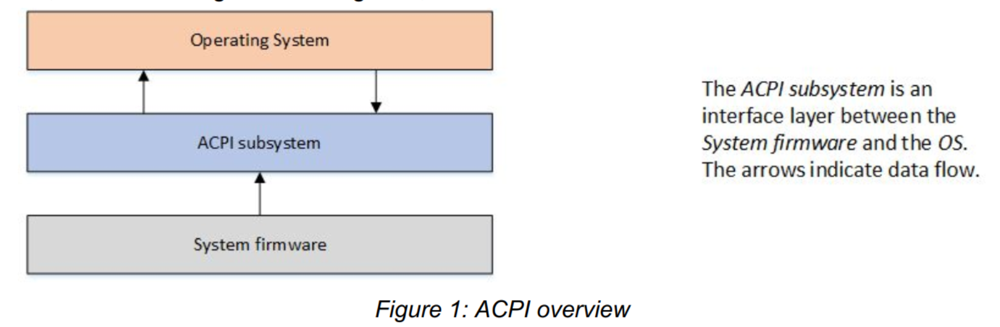
从根本上说，ACPI定义了两种在系统固件和操作系统之间共享的数据结构：数据表(data table)和定义块(definition block)。这些数据结构是固件和操作系统之间的主要通信机制，数据表存储原始数据并由设备驱动程序使用，定义块由解释器可执行的字节码组成。如"图2"所示：

此定义块字节码是从 ASL(ACPI Source Language) 代码编译而来的。ASL是用于定义ACPI对象和编写控制方法的语言。ASL编译器将ASL翻译成 AML(ACPI机器语言) 字节码。AML是 ACPI AML 解释器处理的语言，如"图3"所示：

AML解释器执行字节码并评估定义块中的对象，以允许字节码执行循环结构、条件评估、访问定义的地址空间以及执行应用程序所需的其他操作。AML解释器对定义的地址空间具有读/写访问权限，包括系统内存、I/O、PCI配置等。它通过定义称为"对象"的入口点来访问这些地址空间。对象要么有一个直接定义的值，要么能够由AML解释器执行。
这个可枚举对象的集合是一个称为"ACPI命名空间"的操作系统结构。命名空间是系统上ACPI设备的分层表示。系统总线是这些ACPI设备的枚举根。在其他总线上可枚举的设备(如PCI或USB设备)通常不会在命名空间中枚举。相反，它们自己的总线会枚举设备并加载驱动程序。但是，所有可枚举的总线都有一种编码技术，允许ACPI对设备的总线特定地址进行编码，以便可以在ACPI中找到它们，即使ACPI通常并不加载这些设备的驱动程序。
通常，具有 _HID 对象(硬件识别对象)的设备会被枚举并由ACPI加载其驱动程序。具有 _ADR 对象(物理地址对象)的设备通常不会被ACPI枚举，并且通常不会被ACPI加载其驱动程序。_ADR 设备通常可以在不涉及ACPI的情况下执行所有必要的功能，但是在设备驱动程序无法执行功能的情况下，或者如果驱动程序需要与系统固件通信，ACPI可以评估对象以执行所需的功能。
例如，PCI不支持本机热插拔。但是，PCI可以使用ACPI来评估对象并定义允许ACPI填充在PCI上执行热插拔所需功能的方法。
ACPI也是一个运行时模型，它处理系统运行期间发生的ACPI中断事件。ACPI继续根据需要评估对象以处理这些事件。这种基于中断的运行时模型在下面的运行时模型部分有更详细的讨论。
ACPI initialization
了解ACPI如何工作的最好方法是按时间顺序来了解。在用户启动系统的那一刻，系统固件完成其设置、初始化和自检。如"图4"所示:

然后，系统固件使用固件初始化期间获得的信息，根据需要使用各种平台配置和电源接口数据更新ACPI表，然后再将控制权传递给引导加载程序。扩展根系统描述表(XSDT)是ACPI子系统使用的第一个表，包含系统上大多数其他ACPI表的地址。XSDT指向固定的ACPI描述表(FADT)以及操作系统在初始化期间处理的其他主要表。操作系统初始化后，FADT将ACPI子系统引导到差异化系统描述表(DSDT)，这是命名空间的开始，因为它是第一个包含定义块的表。
ACPI子系统然后处理DSDT并开始从ACPI定义块构建命名空间。XSDT还指向辅助系统描述表(SSDT)并将它们添加到命名空间。ACPI数据表提供有关系统硬件的操作系统原始数据。
操作系统从ACPI表构建命名空间后，它开始遍历命名空间并为它在命名空间中遇到的所有 _HID 设备加载设备驱动程序。
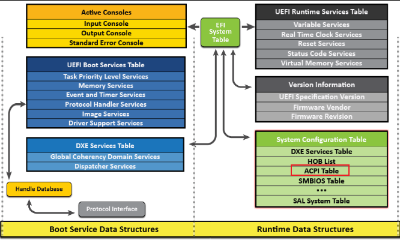
ACPI 在EDK2中存储的位置
system table -> system configuration table -> ACPI table
system table 会作为启动参数传递给OS，这样OS就知道了系统信息。
而ACPI table 是作为system configuration table的一个entry，entry的结构包括一个GUID和一个指针，如下所示：
///
/// Contains a set of GUID/pointer pairs comprised of the ConfigurationTable field in the
/// EFI System Table.
///
typedef struct {
///
/// The 128-bit GUID value that uniquely identifies the system configuration table.
///
EFI_GUID VendorGuid;
///
/// A pointer to the table associated with VendorGuid.
///
VOID *VendorTable;
} EFI_CONFIGURATION_TABLE;
ACPI 使用的GUID定义在 MdePkg\Include\Guid\Acpi.h
#define ACPI_TABLE_GUID \
{ \
0xeb9d2d30, 0x2d88, 0x11d3, {0x9a, 0x16, 0x0, 0x90, 0x27, 0x3f, 0xc1, 0x4d } \
}
#define EFI_ACPI_TABLE_GUID \
{ \
0x8868e871, 0xe4f1, 0x11d3, {0xbc, 0x22, 0x0, 0x80, 0xc7, 0x3c, 0x88, 0x81 } \
}
#define ACPI_10_TABLE_GUID ACPI_TABLE_GUID
//
// ACPI 2.0 or newer tables should use EFI_ACPI_TABLE_GUID.
//
#define EFI_ACPI_20_TABLE_GUID EFI_ACPI_TABLE_GUID
extern EFI_GUID gEfiAcpiTableGuid;
extern EFI_GUID gEfiAcpi10TableGuid;
extern EFI_GUID gEfiAcpi20TableGuid;
ACPI table 结构
包括1.0和2.0 版本。


在ACPI table entry 中，存的就是RSDP的指针。RSDP 中又存储了多个指针，其中一个指针，指向XSDT。
RSDT与XSDT区别
指针大小：
- RSDT使用32位指针，因此只能指向4GB地址空间内的ACPI表。
- XSDT使用64位指针，能够支持更大的地址空间，适用于64位系统。
兼容性：
- RSDT在ACPI 1.0版引入，主要用于32位系统。
- XSDT在ACPI 2.0版引入，主要用于64位系统，但仍然需要向下兼容32位系统。
表结构：
- RSDT的指针列表由32位地址指针组成。
- XSDT的指针列表由64位地址指针组成。
Linux Kernel 如何查找ACPI
和创建过程类似，找系统表，找配置表，找ACPI 表。
实际ACPI table
我的笔记本上的ACPI table，在XSDT下，共挂了36个entry。其中RSDP，XSDT，FADT（Fixed ACPI Description Table），DSDT（Differentiated System Description Table），FACS（Firmware ACPI Control Structure）是必须存在的，其他可选。
Signature "XSDT"
Length 0x00000144 (324)
Revision 0x01 (1)
Checksum 0x34 (52)
OEM ID "LENOVO"
OEM Table ID "CB-01 "
OEM Revision 0x00000001 (1)
Creator ID " "
Creator Revision 0x01000013 (16777235)
Entry0 0x0000000044BC3000 (FACP)
Entry1 0x0000000044B2E000 (UEFI)
Entry2 0x0000000044BF3000 (SSDT)
Entry3 0x0000000044BF2000 (SSDT)
Entry4 0x0000000044BEC000 (SSDT)
Entry5 0x0000000044BE8000 (SSDT)
Entry6 0x0000000044BE4000 (SSDT)
Entry7 0x0000000044BD6000 (SSDT)
Entry8 0x0000000044BD5000 (SSDT)
Entry9 0x0000000044BD4000 (TPM2)
Entry10 0x0000000044BD3000 (SSDT)
Entry11 0x0000000044BD2000 (SSDT)
Entry12 0x0000000044BD1000 (MSDM)
Entry13 0x0000000044BCF000 (SSDT)
Entry14 0x0000000044BCE000 (LPIT)
Entry15 0x0000000044BCD000 (WSMT)
Entry16 0x0000000044BCC000 (SSDT)
Entry17 0x0000000044BC9000 (SSDT)
Entry18 0x0000000044BC8000 (DBGP)
Entry19 0x0000000044BC7000 (DBG2)
Entry20 0x0000000044BC4000 (NHLT)
Entry21 0x0000000044BFD000 (ECDT)
Entry22 0x0000000044BC2000 (HPET)
Entry23 0x0000000044BC1000 (APIC)
Entry24 0x0000000044BC0000 (MCFG)
Entry25 0x0000000044B58000 (SSDT)
Entry26 0x0000000044B56000 (SSDT)
Entry27 0x0000000044B55000 ($H2O)
Entry28 0x0000000044B54000 (DMAR)
Entry29 0x0000000044B53000 (SSDT)
Entry30 0x0000000044B4F000 (SSDT)
Entry31 0x0000000044B4B000 (SSDT)
Entry32 0x0000000044B4A000 (SSDT)
Entry33 0x0000000044B49000 (FPDT)
Entry34 0x0000000044B48000 (BGRT)
Entry35 0x0000000044B47000 (PHAT)
RSDP（Root System Description Pointer）
- 用于定位RSDT或XSDT表。
- 存储在系统内存的特定位置。
RSDT（Root System Description Table）或XSDT（Extended System Description Table）
- 包含指向其他ACPI表的指针。
- RSDT使用32位地址，XSDT使用64位地址。
FADT（Fixed ACPI Description Table）
- 包含硬件的固定描述信息。
- 包含一些关键的系统状态和电源管理信息。
DSDT（Differentiated System Description Table）
- 包含系统的具体配置信息和控制方法（AML代码）。
- 用于描述系统的设备和电源管理操作。
FACS（Firmware ACPI Control Structure）
- 提供了固件与操作系统之间的同步机制。
- 包含全局锁和固件控制操作的相关信息。
与Memory相关的ACPI table
系统内存信息通过ACPI中的SRAT（System Resource Affinity Table）和SLIT（System Locality Information Table）表传递给操作系统。
MCFG（Memory Configuration Table）
- MCFG表格是用于描述系统中内存地址空间布局的主要ACPI表格之一。它提供了关于DRAM（Dynamic Random Access Memory，即动态随机存取存储器）和MMIO（Memory-Mapped I/O，即内存映射输入/输出）区域的详细信息。操作系统可以通过解析MCFG表格来确定哪些内存地址范围属于DRAM，用于存储数据和程序，以及哪些属于MMIO，用于设备寄存器和外设访问。
SRAT（System Resource Affinity Table）
SRAT 表包含了系统内存、CPU和I/O设备的资源亲和性信息。这些信息对于支持NUMA（Non-Uniform Memory Access）架构的系统非常重要。具体来说，SRAT表提供了以下信息：
- 系统内存的节点拓扑。
- 每个内存节点的开始地址和长度。
- 每个CPU的亲和性节点。
- I/O设备的资源亲和性信息。
SRAT 表的示例结构：
struct ACPI_TABLE_SRAT {
struct ACPI_TABLE_HEADER Header; // ACPI表头
uint32_t Reserved1; // 保留
uint64_t Reserved2; // 保留
struct ACPI_SRAT_ENTRY Entries[]; // 资源亲和性条目数组
};
struct ACPI_SRAT_ENTRY {
uint8_t Type; // 条目类型（如CPU、内存等）
uint8_t Length; // 条目长度
// 具体类型条目的详细字段根据Type决定
};
// 内存亲和性条目的示例结构
struct ACPI_SRAT_MEM_AFFINITY {
uint8_t Type; // 条目类型（0x01表示内存）
uint8_t Length; // 条目长度
uint32_t ProximityDomain; // 亲和域
uint16_t Reserved1; // 保留
uint16_t Flags; // 标志
uint64_t BaseAddress; // 基址
uint64_t Length; // 长度
uint32_t Reserved2; // 保留
uint32_t Reserved3; // 保留
};
SLIT（System Locality Information Table）
SLIT 表描述了系统中不同内存节点之间的本地性信息。这些信息用于优化内存访问和分配策略。SLIT 表的示例结构：
struct ACPI_TABLE_SLIT {
struct ACPI_TABLE_HEADER Header; // ACPI表头
uint64_t LocalityCount; // 本地性条目数
uint8_t Entry[]; // 本地性条目矩阵
};
与CXL相关的ACPI table
CEDT 是 ACPI 中的一个表格，它代表 CXL Early Discovery Table（CXL 早期发现表）。
CEDT 表是为了支持 CXL 设备和架构而引入的，它提供了系统中 CXL 设备和相关资源的信息。
CEDT 表的作用
CEDT 表的主要作用是在系统启动时，为操作系统和固件提供与 CXL 相关的信息，以便正确配置和初始化 CXL 设备。这些信息包括但不限于 CXL 设备的位置、配置和特性。
CEDT 表的内容
CEDT 表的具体内容可能因系统和 CXL 设备的配置而异，但通常包含以下几种条目（Entries）：
- CXL Host Bridge Structure：描述了 CXL 主桥的信息，包括其内存地址范围和其他相关配置。
- CXL Device Structure：描述了各个 CXL 设备的信息，如设备 ID、设备类型、内存配置等。
- CXL Switch Structure：如果系统中有 CXL 交换机（Switch），该结构提供了交换机的配置信息。
这些结构和信息允许操作系统在引导过程中识别、初始化和配置 CXL 设备，以充分利用 CXL 技术提供的高性能互连能力。
CEDT结构
struct cedt_header {
uint32_t signature; // 'CEDT'
uint32_t length; // Length of the entire table
uint8_t revision; // Revision of the CEDT table
uint8_t checksum; // Checksum of the entire table
char oem_id[6]; // OEM ID
char oem_table_id[8]; // OEM Table ID
uint32_t oem_revision; // OEM Revision
uint32_t creator_id; // Creator ID
uint32_t creator_rev; // Creator Revision
};
struct cxl_host_bridge {
uint16_t type; // Entry type (CXL Host Bridge)
uint16_t length; // Length of this entry
uint32_t host_bridge_id; // Host Bridge ID
// Additional fields specific to the CXL Host Bridge
};
struct cxl_device {
uint16_t type; // Entry type (CXL Device)
uint16_t length; // Length of this entry
uint32_t device_id; // Device ID
// Additional fields specific to the CXL Device
};
// Main CEDT Table containing multiple entries
struct cedt_table {
struct cedt_header header;
struct cxl_host_bridge host_bridge;
struct cxl_device device;
// Other entries as needed
};
定义块
定义块都挂在DSDT和SSDT上。
ACPI 中也有namespace，及层次结构。


自定义一个table
asl 编译成aml文件，aml打包成raw，raw打包成ffs
从ffs中找到aml块，保存到memory中，然后调用protocol去install。
// Example SSDT: SSDT_MYCUSTOM.aml
DefinitionBlock ("SSDT_MYCUSTOM.aml", "SSDT", 1, "YOURID", "YOURID", 1)
{
// Insert your ACPI table content here
// Example:
Method (_STA, 0, NotSerialized) // _STA: Status
{
Return (0x0F) // indicate device is present and working
}
}
- DefinitionBlock：
DefinitionBlock用于定义ACPI表格文件的开头。它指定了文件名（SSDT_MYCUSTOM.aml）、表格类型（SSDT表示Secondary System Description Table）、ACPI规范版本（1）、OEM ID（"YOURID"）、OEM 表格 ID（"YOURID"）。
- Method (_STA)：
- 在ACPI表格中，可以定义方法来提供功能。这里，
Method (_STA, 0, NotSerialized)声明了一个名为_STA的方法，没有参数（0），并且不需要原子执行（NotSerialized）。 _STA通常用于指示设备的状态。在这个例子中，Return (0x0F)用于返回一个状态字节（0x0F），通常表示设备存在并且正常工作。
- 在ACPI表格中，可以定义方法来提供功能。这里，
EDK2 protocol
Status = gBS->LocateProtocol (&gEfiAcpiTableProtocolGuid, NULL, (VOID **) &AcpiTable);
Status = AcpiTable->InstallAcpiTable ( AcpiTable, Table, TableSize, &TableKey ); 还有个uninstall，用来卸载ACPI table。
如果想更新某个table，需要先获取，卸载，最后再重新安装，和device tree 类似。
工具
https://www.nirsoft.net/utils/firmware_tables_view.html
RW
UEFI Shell 下 https://acpica.org/downloads/uefi-support
acpi windwos tool download link: https://acpica.org/downloads/binary-tools
UEFI Shell 下 https://github.com/andreiw/UefiToolsPkg/tree/master/Applications
UEFI Shell 下原生acpiview from UefiShellAcpiViewCommandLib.inf
参考：
Advanced Configuration and Power Interface (ACPI) Introduction and Overview
ACPI Spec
https://www.lab-z.com/revmem/
ACPI Source Language (ASL) Tutorial
CEDT
[toc]
CEDT 是 ACPI 中的一个表格，它代表 CXL Early Discovery Table（CXL 早期发现表）。
CEDT 表是为了支持 CXL 设备和架构而引入的，它提供了系统中 CXL 设备和相关资源的信息。
CEDT 表的作用
CEDT 表的主要作用是在系统启动时，为操作系统和固件提供与 CXL 相关的信息，以便正确配置和初始化 CXL 设备。这些信息包括但不限于 CXL 设备的位置、配置和特性。
CEDT 表的内容
CEDT 表的具体内容可能因系统和 CXL 设备的配置而异，但通常包含以下几种条目（Entries）：
- CXL Host Bridge Structure：描述了 CXL 主桥的信息，包括其内存地址范围和其他相关配置。
- CXL Device Structure：描述了各个 CXL 设备的信息，如设备 ID、设备类型、内存配置等。
- CXL Switch Structure：如果系统中有 CXL 交换机（Switch），该结构提供了交换机的配置信息。
这些结构和信息允许操作系统在引导过程中识别、初始化和配置 CXL 设备，以充分利用 CXL 技术提供的高性能互连能力。
CEDT结构

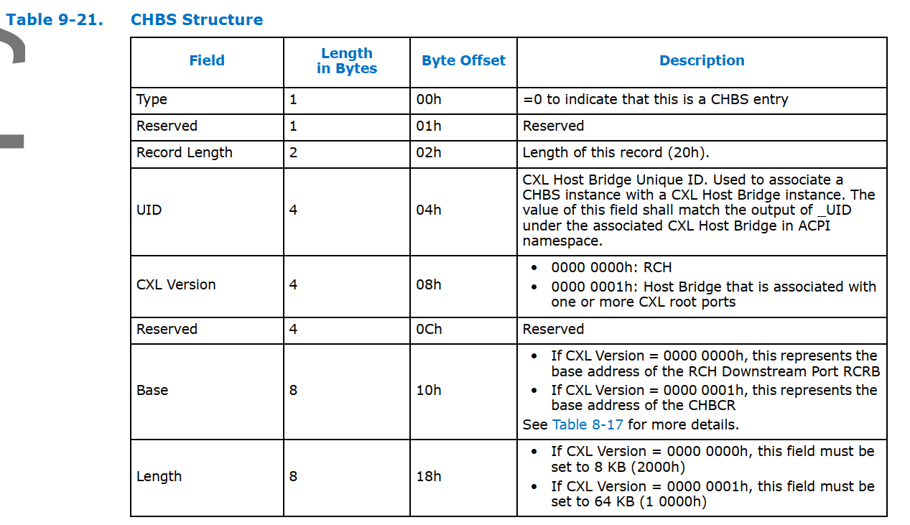
#define INTERLEAVE_TARGETS 1
#pragma pack (1)
typedef struct {
EFI_ACPI_CEDT_CFMWS_STRUCTURE Cfmws;
UINT32 InterleaveTarget[INTERLEAVE_TARGETS];
} EFI_ACPI_CEDT_CFMWS_AND_INTERLEAVE_TARGET_STRUCTURE;
typedef struct {
EFI_ACPI_DESCRIPTION_HEADER Header;
EFI_ACPI_CEDT_CFMWS_AND_INTERLEAVE_TARGET_STRUCTURE CfmwsTarget;
EFI_ACPI_CEDT_CHBS_STRUCTURE Chbs;
} EFI_ACPI_CEDT_STRUCTURE_TABLE;
#pragma pack ()
STATIC EFI_ACPI_CEDT_STRUCTURE_TABLE Cedt = {
ARM_ACPI_HEADER (
EFI_ACPI_6_4_CEDT_SIGNATURE,
EFI_ACPI_CEDT_STRUCTURE_TABLE,
1
),
{
{
// CFMWS
{
1,
EFI_ACPI_RESERVED_BYTE,
sizeof (EFI_ACPI_CEDT_CFMWS_AND_INTERLEAVE_TARGET_STRUCTURE)
},
EFI_ACPI_RESERVED_DWORD,
0x3fe00000000,
0x200000000,
0,
0,
EFI_ACPI_RESERVED_WORD,
4,
2,
0
},
{
//Interleave target list
1
}
},
{
// CHBS
{
0,
EFI_ACPI_RESERVED_BYTE,
sizeof (EFI_ACPI_CEDT_CHBS_STRUCTURE)
},
1,
1,
EFI_ACPI_RESERVED_DWORD,
0x10D0000000,
0x1000
}
};
//
// Reference the table being generated to prevent the optimizer from removing
// the data structure from the executable
//
VOID* CONST ReferenceAcpiTable = &Cedt;
参考：
CXL Type-3 device discovery, configuration in firmware and prepare ACPI tables for kernel usage
CXL Spec3.0 Chapter 9.17
AMBA
PCIe
PCIe
物理层
关键字：逻辑与电气，Link与Lane，串并转换，编码，加扰，EQ，LTSSM
Introduction
物理层就是将上层封装好的东西，通过电信号传输出去。

物理层主要分为两个子块：
- 逻辑子块（Logical Sub-Block）：逻辑子块负责编码和解码数据，以及处理时钟恢复和同步。它将数据链路层发送过来的数据进行编码后发送到电气子块。在接收方向，逻辑子块将电气子块接收的编码数据进行解码，恢复原始的数据，并送入数据链路层进行后续处理。此外，逻辑子块还处理与时钟恢复和数据流的对齐和同步相关的任务。
- 电气子块（Electrical Sub-Block）：电气子块负责实际的数据传输。它将逻辑子块编码的数据转换为电信号，并通过物理链路发送出去。在接收方向，电气子块将接收到的电信号转换回编码数据，并发送给逻辑子块。电气子块还负责处理物理链路的一些特性，如电平调整，差分信号传输，以及其他与物理链路的电气特性相关的任务。
Logical Sub-Block

Tx Buffer & Mux
这里有个buffer，缓存DL层的包。同时有个Mux，选择发送DL层的东西，或者发送物理层自己的有续集。因为有时候需要停下正常的包，发一些有续集，如skip等，所以需要这个buffer。
Byte Striping
把字节流分到不同的lane上。

Data Scrambling
首先，物理层会将接收到的数据进行加扰（Scrambling），让原本规整的数据流看上去像是随机数一样（所以有时候又把这个称为伪随机数生成：pseudo-random number generator）。
这样做的目的是为了避免信号的能量聚集在某些特殊的频段上，从而减少EMI。原理是这样：我们传输的数据其实是大量高频的0和1，而由于传输的数据可能是类似的，所以会形成特定高频的01变化的模式。了解傅里叶变换的小伙伴知道，任何周期信号都可以表示为一系列成谐波关系的正弦信号的叠加。这样分解之后，这种特定形状的高频信号，就会在特定的频率上产生能量集中的电磁波，导致干扰。而加扰（Scrambling）就是为了避免这种特定形状的信号出现，从而避免这种情况的发生。
而PCIe使用了一种非常聪明的方法进行数据加扰 —— 利用XOR运算！也就是线性反馈移位寄存器（LFSR，Linear-feedback shift register）

PCIe使用的是伽罗瓦（Galois）式LFSR，其中PCIe 1.0和2.0使用的是16位的LFSR的多项式表达为：

而3.0开始之后，使用的是更长的23位LFSR，表达为：

这样，每一次时钟，LFSR就会产生一个伪随机的bit，然后我们用这个bit和数据再进行一次XOR运算，就可以达到数据加扰的目的了。

另外，PCIe1.0和2.0中，数据加扰用的LFSR的初始值（Seed）都是0xFFFF，但是在PCIe3.0之后，为了避免不同的Lane上出现相似的数据，每条Lane上的LFSR的初始值（Seed）都不一样（大于等于8的Lane ID需要对8取模）：
| Lane | Seed |
|---|---|
| 0 | 1DBFBCh |
| 1 | 0607BBh |
| 2 | 1EC760h |
| 3 | 18C0DBh |
| 4 | 010F12h |
| 5 | 19CFC9h |
| 6 | 0277CEh |
| 7 | 1BB807h |
这个方法聪明的地方在于，通过XOR产生的伪随机数是可以恢复的！因为只要操作数一样，两次XOR操作的效果会被抵消，所以只要发送方和接收方的Seed一样，那么接收方就可以通过执行完全一样的LFSR操作，来恢复出原始的数据。
最后，为了方便我们用示波器调试，数据加扰是可以被关闭的。规范没有说怎么关闭，具体看厂商实现。
Encoding
在打乱数据之后，接下来就是对数据进行编码（Encoding）了。编码的目的是保证传输的0和1的数量尽可能的一致，从而保持DC平衡（DC Balance），让数据的传输更加可靠，也能帮助PCIe从数据信号中恢复时钟（Clock Recovery）。
PCIe使用的编码方式有三种：8b/10b编码，128b/130b编码和242B/256B FLIT编码。而一旦知道了编码方式和PCIe的总线时钟频率，我们就可以算出来每条Lane的传输速率了。用PCIe 1.0 8b/10b来举例子，这个代表8bit的数据会被编码为10b的数据进行传输，所以，最后每条Lane的传输速率就是：

以下是PCIe各个版本的编码方式和传输速率：
| PCIe Version | Line code | Transfer rate per lane | Throughput x1 | Throughput x16 |
|---|---|---|---|---|
| 1.0 | 8b/10b | 2.5 GT/s | 250 MB/s | 4 GB/s |
| 2.0 | 8b/10b | 5 GT/s | 500 MB/s | 8 GB/s |
| 3.0 | 128b/130b | 8 GT/s | 984.6 MB/s | 15.75 GB/s |
| 4.0 | 128b/130b | 16 GT/s | 1.969 GB/s | 31.51 GB/s |
| 5.0 | 128b/130b | 32 GT/s | 3.938 GB/s | 63.02 GB/s |
| 6.0 | 1b/1b 242B/256B FLIT | 64 GT/s | 7.564 GB/s | 121.00 GB/s |
注意：242B/256B是大写的B，不再是bit而是Byte了。
8b/10b编码
8b/10b编码主要用在PCIe 1.0和2.0中，为2.5GT/s和5GT/s的传输频率提供数据编码 [4]。它的核心思想是，将一个8bits的数据拆分成一个5bits的数据和一个3bits的数据，然后分别通过一个固定的关系映射到6bits和4bits的中空间中去，从而避免连续的0或者1的出现。如下：ABCDEFGH被拆分成ABCDE和FGH，然后转换为小端，再分别映射到abcdei和fghj中去。
转换后的8b/10b编码有两种类型的值：控制码（K）和数据码（D），根据数据ABCDE和FGH的分组，被记为D.<ABCDE>.<FGH>或者K.<ABCDE>.<FGH>。其具体的映射方式如下：


这里**RD（Running Disparity）**代表着当前字节开始前，前面的数据流中1的数量减去0的数量的差值。为了保证精确的01数量一致，8b/10b编码会使用这个值对当前字节的编码进行调整。这样它就能保证在传输每个字节之前，RD的值不会超过±1，在传输数据过程中，RD的值不会超过±2。
由于硬编码的原因，8b/10b编码可以精确的01数量一致，从而达到稳定的保持DC平衡，但是它的问题在于编码设计复杂，而且编码的效率有高达20%的浪费！这也是为什么PCIe 3.0之后，就不再使用8b/10b编码的原因。
128b/130b编码
PCIe 3.0之后，为了提高编码效率从而提升有效带宽，PCIe开始使用128b/130b编码。可以看到由于每130个bits中间，只有2个bits是浪费的，所以它的效率高达98.46%！
128b/130b编码是64b/66b编码的变形 [5]，唯一的区别是将其payload的部分扩大了一倍（64b -> 128b）。它和8b/10b最大的不同在于它不再使用硬编码表进行转换了，而是依赖于上面我们提到的3.0之后的LFSR算法来进行转换，从而生成一个统计意义上的DC平衡的数据流。
除了使用LFSR算法进行数据处理以外，在编码的时候，128b/130b编码会做两件事情：Framing和Encoding。
Framing
首先，128b/130b编码会将整个上层的包（不是一个block）的之前和之后加上特定的标识用的Token，用来表示这个包的开始：
- 对于TLP而言，它会在前面增加一个2字节的头，并且复写数据链路层的前4个bits，将其修改为FCRC，从而和已有的数据链路层的Seq一起组成一个4字节的token —— STP（Start of TLP）。

- 对于DLLP而言，它会用一个2字节的Token - SDP（Start of DLLP）表示开始。

这两个Token会被永远从Lane 0开始，并作为一个数据包的开头（Byte 0）。另外，除此以外，还有用来标记空闲的IDL（Logical Idle），Nullify之前TLP的EDB（EnD Bad），和标记数据流结束的EDS（End of Data Stream）。

Encoding
然后，128b/130b编码会将整个数据包分为大小为128bit的block，然后在每个128bits的payload之前，加上一个2bits的同步头（SyncHeader），用来表示这个payload的类型并且做多通道同步。这个同步头的值有两种：
- 01b：表示这个payload是数据块（Data Block），长度为128bits
- 10b：表示这个payload是Ordered Set Block，长度也为128bits
比如，我们假设需要在一个通道上传输一个数据块，总共16个字节，S0-S15，其中最低位的bit我们记作.0，最高位记作.7，那么传输序列如下（注意同步头也会被转位小端发送，所以01b会变成10b）：

当有多条通道的时候，发送的时候数据将被分配到多个通道上同时发送，并且时钟对齐的：

242B/256B FLIT编码
虽然128b/130b的编码很好，但是随着对速率的要求变得更高，PCIe6.0更换了从PCIe1.0一致沿用下来的NRZ（Non-Return-To-Zero）信号调制方式，而是转而使用了PAM4（Pulse Amplitude Modulation 4）信号调制方式。这种调制方式可以在同样的信号频率下，提供双倍的传输速率（下面会详细说）。然而这样的调制方式，也让错误率变得更高，所以PCIe6.0开始，PCIe使用了242B/256B FLIT编码，加入更多的校验机制，来提高信号的可靠性。
242B/256B FLIT编码的传输单位是一个FLIT，大小为256个字节（不是bits）。

其中没有包头，从报文开始，前236个字节是TLP数据，然后是6个字节的DLLP（Data Link Layer Packet），8个字节的CRC，最后是6个字节的FEC（Forward Error Correction）。由于FLIT中已经带有CRC了，所以DLLP和TLP中是没有CRC的。传输后如果发现问题，就会尝试使用FEC进行修正（单字节），如果不行，就会对整个FLIT进行重传。
另外，一旦开启了FLIT模式，PCIe就会一直使用FLIT模式，即使速率降低到NRZ的速率（比如2.5 GT/s，5.0 GT/s，8.0 GT/s，16.0 GT/s，32.0 GT/s）也不会转换回NRZ模式了。
Electrical Sub-block
Parallel to Serial
首先，由于我们最后的信号是串行的，而逻辑子块上传下来的数据是是一个一个的字节（单通道），所以需要将按字节的并行信号转变为最后的串行信号（Parallel to Serial），再进行发送。
自然的，接收方则相反，最后当所有的数据处理完成之后，需要将串行的数据重新转化为并行的数据，交给数据链路层进行处理。
调制（Modulation）
接下来转换为串行的数据需要经过调制，将其变为易于传输的电信号，而接收方则需要将电信号重新解调，转换会数字信号。
NRZ编码（Non-Return-to-Zero）
在PCIe1.0到5.0中，PCIe一直使用的调制方法叫做不归零码（NRZ，Non-Return-to-Zero） [10]。这种调制方式特点是与归零码（RZ，Return-to-Zero）相比，它的每个比特1会占满整个时钟周期，不会在后半个周期归零。PCIe使用的是中的两极不归零码（Bipolar NRZ level），它的编码方法很简单，就是将0变为负电平−V，1变为正电平+V，其电平图和眼图如下：

由于不归零码本身没有稳定的机制传递时钟，所以需要上面提到的编码（Encoding），加扰（Scrambling）和其他方式来进行辅助时钟恢复，这个我们下面会提到。
PAM4编码
为了支持更高的传输速率，PCIe6.0开始使用PAM4（Pulse Amplitude Modulation 4）调制方式，即脉冲幅度调制，将00变为−V，10变为+V，01变为−V/3，11变为+V/3，其眼图与每个电平表示的信号如下：

这样在同样的电压下，容纳的状态就变成了之前的两倍，所以在同样的时钟下，传输速率也就变成了之前的两倍！但是这样也就导致了更高概率的误码。
差分信号（Differential Signal）
再接下来，再最后发送给真正的电路前，为了对抗电磁辐射等等原因导致的干扰，PCIe使用了差分信号（Differential Signaling）的方式进行传输。即将信号分为正负两个信号，然后在接收端，将两个信号相减，重新得到原始信号（这就是在Pinout中，我们看到的Differential Pair）。


参考： Blog
Data Link Layer
[toc]
Introduction
关键词：传输TLP，Ack/Nack，流控，电源管理
当事务层将事务消息准备好之后，就会向下传递给数据链路层（Data Link Layer）。对于我们发送的事务消息来说，数据链路层主要负责一件事情：保证事务消息能正确的传输到目的地。
数据链路层传输的包主要包括两种，一种用于传输TLP事务消息，一种用于传输数据链路层的控制消息，比如功能（Feature）控制，流量控制，电源管理ack/nack机制等等。这两种类型的包通过物理层的Token来进行区分：STP（Start of TLP）表示TLP消息，SDP（Start of DLLP）表示控制消息（DLLP，Data Link Layer Packet）。
问题：流量控制是为Transaction layer 服务的，为什么不在TLP中交换信息？因为在TLP中可能出现死锁。buffer满了，不能继续传输TLP了。对方也不知道满了，还在继续传输。


传输TLP
为了达到这个目的，数据链路层会对数据包再进行一层封装：
- 在包的前方添加一个序列号（Sequence Number），占用2个字节，用于保证包发送的顺序。这个序列号是每个Link独立的，只有上下游两端保存的序列号（
NEXT_RCV_SEQ）一致，才会被对端接收。 - 在包的后方添加一个CRC校验码，叫做LCRC（Link CRC），占用4个字节，用于保证包中数据的正确性。注意，计算CRC的时候，刚刚添加的序列号也会被纳入计算范围中。

数据发送
封装完成后，为了保证成功的发送，数据链路层会先将包保存在Retry Buffer中，再转交给物理层（Physical Layer）进行发送。在每条消息发送完毕之后，发送方会等待接收方发送ACK消息，如果接收到的返回消息是失败消息，比如Seq错误，CRC校验错误，或者任何物理层的错误，发送方就会把Retry Buffer中的消息拿出来重新发送。
数据接收
对于数据的接收方，操作流程则相反。接收方会检查接收到的数据包的序列号和CRC是否正确，如果不正确，就会发送一个Nak消息，要求发送方进行重传。如果正确，就会回发一个Ack消息，表示接收成功，而此时发送方在收到了ACK消息后也可以将其从Retry Buffer中移除。这样，数据链路层就保证了TLP的正确传输。
传输DLLP
除了传输TLP数据包之外，数据链路层还需要很多专门用于控制的数据包，比如上面提到的Ack和Nak，这些数据包叫做DLLP（Data Link Layer Packet）。其大小为8B，DLLP层组装6B，还有2B是在物理层，逻辑子层组装(gen1&2 加SDP和end，gen3只加一个2B的SDP)，包括物理层的帧头和帧尾，或者说，站在协议分析仪的角度，他就是8B。
其格式如下：


另外，传输TLP时候，在DLL层加的CRC是32bit，但是传输DLLP时候加的CRC是16bit。
DLLP中DLLP Type用来指定包的类型，而最后16位的CRC用来做校验，其主要分为以下几种类型：
| 名称 | Type | 描述 |
|---|---|---|
| Ack | 00000000b | 用于确认接收到的TLP数据包 |
| Nak | 00010000 | 用于拒绝接收到的TLP数据包 |
| <InitFC1/InitFC2/UpdateFC>-<P/NP/Cpl> | （Type较多，后面来说） | 用于流量控制，P/NP/Cpl表示流控类型 |
| MRInitFC1/MRInitFC2/MRUpdateFC | <0111/1111/1011>0xxxb | 用于流量控制，P/NP/Cpl表示流控类型 |
| PM_* | 00100xxxb | 用于电源管理，告知对端当前的电源状态 |
| NOP | 00110001b | 用于保持链路活跃，防止链路被关闭 |
| Data_Link_Feature | 00000010b | 用于告知对端当前链路的特性，如支持Scaled Flow Control |
| Vendor-specific | 00110000b | 用于支持厂商自定义的DLLP，实现厂商特有功能 |
Ack/Nak
我们在TLP事务消息传输的里就提到过Ack和Nak消息，它们可以说是DLLP中最常用的消息了。功能顾名思义，Ack表示接收成功，Nak表示接收失败，需要重传。这两个包的格式如下：

其中，AckNak_Seq_Num表示当前已经收到的最新的消息序号，所以和TCP类似，PCIe的Ack和Nak可以进行批量操作：无论是Ack还是Nak，当发送方收到这个消息之后，就可以将Retry Buffer中比这个序号老的消息全部移除了，所以Ack/Nak时只需要将最新的序号带上即可。Ack/Nak的差别在于：如果是Nak，那么发送方在移除之后，需要对Retry Buffer中这个序号之后的消息全部进行重传。
最后，DDLP的重传是由次数限制的，默认阈值是4次。如果超过四次，就出触发物理层开始重建（retrain）链路。如果依然失败，就会将该链路关闭。
VC（Virtual Channel）与流量控制
在说TLP的时候，我们提到了PCIe的流量控制是通过将TC（Traffic Class）映射到VC（Virtual Channel），并且利用VC的信用机制来实现的。这里我们就一起来看看这个信用机制吧！
数据链路层中的信用额度管理有两个重要的特点：
- 不同处理方式是的TLP消息有着单独的信用额度管理：Posted（P），Non-Posted（NP）和Completion（Cpl）。这三种消息的信用额度是独立的，互不影响。
- 每个VC都有着自己的独立的信用额度管理，而不是Link。也就是说，如果一个Link上有多个VC，那么每个VC都需要单独的初始化和更新。
参与流量控制的消息有很多，主要有三类，每一类有三个变种（N/NP/Cpl），我们的流量控制也主要分三步，其细节和统一的消息格式如下：
- InitFC1-P/NP/Cpl：接收端设备使用此消息向发送端发起初始化流量控制的流程，并初始化信用额度，这是第一步。这个消息有接收端发起的原因是因为，不同的接收端能力不同，所以应该由接收端根据自己的能力，比如缓存的大小，来决定信用额度的大小。
- InitFC2-P/NP/Cpl：用于发送端向接收端确认InitFC1的消息，这是第二步。这个消息中会带有从第一步接收到的信用信息，但是它会被接收端忽略，并没有什么用。另外，这个消息发送之后，发送端将不会再理会任何后续的InitFC1消息了。
- UpdateFC-P/NP/Cpl：用于在信用额度初始化完成之后，接收端向发送端对信用额度进行更新。

这个消息中各个字段含义如下：
-
Type：消息ID，映射如下：
Type Id InitFC1-P 0100b InitFC1-NP 0101b InitFC1-Cpl 0110b InitFC2-P 1100b InitFC2-NP 1101b InitFC2-Cpl 1110b UpdateFC-P 1000b UpdateFC-NP 1001b UpdateFC-Cpl 1010b -
VC ID（v[2:0]）：Virtual Channel的Id，Id一共有3位，代表8个VC。
-
HdrFC：TLP头部的Credit数量。在发送时，一个TLP头对应着一个Header Credit，不论该TLP的大小如何。
-
DataFC：TLP数据部分的Credit数量。The unit of Flow Control credit is 4 DW for data.
然后，为了保证发送方正常的消息发送，当接收方处理完部分消息后（或者一些特殊情况后），就会根据其当前缓存的大小，向发送方发送UpdateFC消息，告诉发送方，接收方的信用额度还剩下多少。另外，除了这种情况，接收方还会定时的向发送方上报自己的信用额度（最长间隔30us），这么做的原因是为了避免意外情况，如CRC校验出错，导致信用额度上报丢失，从而导致发送方停止发送消息的问题。
最后，数据链路层还支持Scaled Flow Control，即信用额度的数量可以是2的幂次方，这样就可以管理更大的信用额度了：

AVIP log 基于credit ，6个stack，post non-post cpl head and data

一个例子：
注意：如果查看原始的包，在计算时需要注意，HdrFC和DataFC都没有对其到字节上，所以记得做好位运算。
- 首先，PCIe的Endpoint会向Switch发送如下三条消息来进行流控初始化：

-
当Switch收到这个消息后，也会向Endpoint发送三条类似的消息，进行反向的初始化。因为流程类似，从这里开始，之后Switch向Endpoint发送的反向流程我们就忽略了。
-
Switch收到了InitFC1 DLLP后，会使用InitFC2 DLLP进行确认：

参考：Blog
Transaction Layer
[toc]
关键词：事务类型，组包，路由，VC，Ordering
Introduction
PCIe的所有操作都被称为一个事务（Transaction），这些事务分为四种类型：
- 内存事务（Memory Transaction）
- IO事务（IO Transaction）
- 配置事务（Configuration Transaction）
- 消息事务（Message Transaction）
一个事务根据其请求的处理方式又被分为两种：
- Non-Posted：每个事务的请求消息发送出去后，会需要一个完成消息（Completion）来完成事务。比如，读内存。
- Posted：请求发送后不需要完成消息，属于Fire and forget。比如，写内存和所有的消息事务（这也是唯二的两类请求）
所以，事务层的消息有三类：Non-Posted（NP），Posted（P）和Completion（Cpl）。

TLP（Transaction Layer Packet）
PCIe的事务请求和完成消息都是以TLP（Transaction Layer Packet）为单位传输的。

-
TLP Prefix：用来实现一些高级特性，比如精确时间测量（Precision Time Measurement），因为它不是必须的，所以我们先跳过。
SMMU 中用到的substreamID就是这里面的PASID。
-
TLP Digest：4个字节，可以存放诸如CRC的校验码，不过一般不需要开启，因为后面说的数据链路层已经自带了校验了，这里相当于是双保险。
这里有个问题，为什么DLLP层有CRC，这里还需要CRC？因为在switch内部路由时候，需要对DLLP拆包，重新CRC，这个时候TLP有可能发生错误，但是由于switch没有对TLP修改的权限，所以它也不知道TLP出错了，就需要加额外的保护。
-
TLP Header：这个是TLP中最重要的部分，我们后面马上会详细介绍。
-
TLP Payload：这个是TLP中的数据部分，根据不同的事务类型，其大小也不同。比如，读事务就不需要Payload。另外Payload的大小也是有限制的，它不能超过
Max_Payload_Size，最大为4096字节。这个的大小和物理层弹性buffer大小也是有关系的，设计buffer大小需要用到
Max_Payload_Size
TLP头
TLP的头部根据处理地址长度的不同，会有12字节（称为3DW）或者16字节（称为4DW）宽。其前4个字节（第一个DW）是公共的头部，包含了绝大部分的用于描述该事务本身的信息和行为的字段，其后的8个字节（第二个和第三个DW）会根据事务种类的不同而产生变化。其前四个字节如下：

-
Fmt
: TLP头的格式
- Bit 7：如果是1，则Fmt必须是100，表示这个头是TLP Prefix
- Bit 6：1 = 读事务（TLP头之后没有Payload），0 = 写事务（TLP头之后有Payload）
- Bit 5：1 = 使用32位地址，头部长度12字节（3DW Header），0 = 使用64位地址，头部长度16字节（4DW Header）
-
Type：事务类型，表示这个事务是什么类型的事务，比如内存事务、IO事务、配置事务、消息事务等
以上两个共同确定了这个TLP类型。
-
LN（Lightweight Notification）：用于标识当前这个内存请求或者完成消息是不是一个轻量级通知
-
TH（TLP Hints）：用于表示TPH（TLP Processing Hint）是否启用和TPH TLP Prefix是否存在
-
TD（TLP Digest）：1 = 有TLP Digest，0 = 没有TLP Digest
-
EP（Error Poisoning）：1 = 有错误，0 = 没有错误
-
AT（Address Type）：虚拟化，ATS相关的字段，00 = 无地址转换，01 = 需要地址转换，10 = 地址转换已完成，11 = 保留
-
Length：Payload的长度，单位为DW（Double Word），1DW = 4字节
事务描述符（Transaction Descriptor）
为了帮助通信的双方知道对方的信息和对消息的处理方式进行描述，在TLP的头中有几个公共的字段，合在一起被称为事务描述符：事务ID（Requester ID和Tag两个字段），消息的属性（Attr字段），流量分类（TC字段）。虽然TLP头中第二个DW开始的部分会随着请求类型的不同而发生变化，但是这四个字段几乎会在所有的消息中存在（某些情况下Tag会被忽略），所以这里我们用一个内存请求的消息来做例子，展示它们在TLP中的位置：

事务ID（Transaction ID）
事务ID由Requester ID和Tag两个字段组成，用于标识一个事务。其中，
- Requester ID：一共16个bit，用于标识发起这个事务的设备，是请求发起者的BDF，各占用了8:5:3.
- Tag：一共10个bit，每个发出的TLP都会被赋予一个唯一的标签，帮助PCIe进行数据传输的跟踪和管理，比如并行处理，流控或乱序处理。这里注意T8和T9两个bits，它们和其他的tag的bits不在一起（绿色高亮），且需要修改
10-Bit Tag Requester Enable配置寄存器启用
消息属性（Attributes）
消息属性一共有三个bits：高两位 Attr[2:1]（Byte 1 - Bit 2，Byte 2 - Bit 5）用于控制消息处理的顺序，而最低位 Attr[0]（Byte 2 - Bit 4）用于控制Coherency。

消息处理顺序（Ordering）
PCIe协议中有不同的virtual channel，不同TLP包，根据不同的TC，被放到不同的buffer中去。不同VC之间有传输的先后顺序，同一个VC内不同的TC TLP也有不同传输顺序，这部分就需要靠这个ordering来控制。

Attr[2:1]这两个Bits用于控制消息处理的顺序，一共有四种情况：
| Attr[2] | Attr[1] | 顺序类型 | 说明 |
|---|---|---|---|
| 0 | 0 | 强制顺序 | 默认值，不允许乱序处理 |
| 0 | 1 | Relaxed Ordering | 允许接收者在当前请求没有完成的时候，同时处理任何后续的请求 |
| 1 | 0 | ID-based Ordering | 允许接收者在当前请求没有完成的时候，同时处理来自其他设备的请求 |
| 1 | 1 | 无序 | 相当于是Relaxed Ordering和ID-based Ordering的并集，允许接收者在当前请求没有完成的时候，同时处理任何的请求 |
No Snoop
NoSnoop（Attr[0]）使用来控制缓存一致性的。默认的情况下（值为0），PCIe会对请求进行缓存一致性的处理，比如一个内存的读请求，它会保证先去读Cache，如果没有读到再去读主内存。但是如果这个值为1，PCIe就会直接跳过Cache，去操作主内存。这样就有可能导致一致性的问题，因为有可能Cache中的内容还没有被写入主内存中，这样就读到了错误的值。
但是，这并不代表这个flag没有用，如果我们非常确定我们不需要考虑缓存，那么我们可以启用这个flag，直接去操作主内存，从而提高性能。
当然，也正因为有一致性的问题，所以这个功能被很多事务禁止使用了：比如配置事务、IO事务、大部分的消息事务和MSI（跳过缓存发起中断会导致DMA等功能出错，读到脏数据）等。
流量分类（Traffic Class）
Traffic Class总共有3个bit，用于把所有的事务分成8个不同的类别，用于流控。
基于TC的流控是通过和VC（Virtual Channel）合作来实现的：
- PCIe中的所有物理链路（Link）都可以创建多个VC（Virtual Channel），而每个VC都独立工作，并有着流量控制机制。
- 一个或者多个TC可以被映射到一个VC上，这样就可以通过操作TLP的TC来控制TLP走的VC了。
- VC通过信用机制来控制发包速度，每个VC都有着自己的Credit Pool，如果一个VC的Credit不为0，那么它就可以发送TLP，并且消耗特定的Credit。每个VC的Credit也会在特定的时候补充，保证通信不会中断。
- TC的默认值是0，也是所有设备必须实现的。它被Hardcoded到了VC0上，所以如果没有设置TC，那么所有的TLP都会走VC0。
- 最后，如果两个包有了不同的VC，或者不同的TC，那么它们之间将没有顺序的保证。
TLP事务路由
有了事务ID，我们可以很容易的了解当前事务的源是谁，然而为了能让通信双方通信，我们还需要知道事务的目的地是哪里，这样我们才能把事务发送到正确的地方。
在PCIe中，不同类型的事务中会使用不同的字段和方法来指定目的地，有三种：
通过具体的地址来指定目的地：这种路由方式叫做基于地址的路由（Address-Based Routing）。这种方式主要用于内存事务（Memory Transaction）和IO事务（IO Transaction），通过需要访问的地址。

通过BDF来指定目的地：这种路由方式叫做基于ID的路由（ID Based Routing）。这种方式主要用于非内存访问型的事务，比如：配置事务（Configuration Transaction），消息事务（Message Transaction）和事务完成的消息通知（Completion）。
还有一种隐式路由。
Implicit routing is used only with Message Requests, and is covered in Section 2.2.8
PCIe 均衡技术介绍
[toc]
Overview
为什么需要均衡？
由于传输速率（信号衰减和干扰）、电磁干扰、信道质量(劣质板材)等，信号完整性变得很差，现象就是眼图睁不开。
什么是均衡？
在发送端或者接收端上点手段，让质量好一些，就是均衡。
从频域角度去理解均衡技术
无源传输线路是一个低通滤波器，接收端是一个高通滤波器。
传输过程中，高频信号衰减厉害。
高频信号主要在上升沿和下降沿。
去加重（De-emphasis）和 Pre-shoot 是为了对抗码间干扰的。
发送端
发送端均衡采用前向反馈均衡器（Feed forward Equalizer，FFE），可分为预加重和去加重，两者方法类似。
去加重
什么是码间干扰呢？我们可以这么理解，当我们发送111101111这样的数据是，忽然变化的0，让电路里的电容很难迅速放电达到0，后面又被迅速拉到1，造成0的信号眼图很小：

而这种情况随着频率的提高越来越严重。从信号的角度来看，也就是信道对高频衰减大，而对低频衰减小。那怎么办呢？通过压低1的幅度来张开0的眼图：

- 信号发生跳变后，第一比特不做去加重。
- 若当前比特与前一比特相同，进行去加重。
预加重
而Preshoot是将跳变前一个增大幅度：本质上是增强高频分量。行业多采用De-emphasis方案。

三抽头FIR
8 GT/s 及以上速率时候，发送端采用一种三抽头的有限脉冲响应滤波器（Finite Impulse Response, FIR）作为发送信号均衡器。
三抽头 FIR 均衡器原理图如图 5 所示，该均衡器有三个输入，分别为当前发送比特、前一比特及后一比特，这三比特信号按照一定权重相加后作为输出。表示为：

其中，下一比特、当前比特及前一比特的权重系数 C-1、C0、C+1分别称为 FIR 方程的 Pre-cursor、Cusor 及 Post-cursor 系数。Pre-cursor 又称 Pre-shoot 系数，Post-cursor 又称去加重系数。收发端在均衡过程中调整这三个系数的值，来获得最佳传输性能。Pre-cursor、Cusor 及 Post-cursor 系数满足如下规则：

通常，三个参数只需指定 Pre-cursor 及 Post-cursor ，Cursor 可以根据上式计算得出。

可见，三抽头是在de-emphasize和preshoot基础上发展而来的，本质上也是一样的。只是将前一步和后一步的情况，放到一起考虑，进行动态调整，之前的只是一个固定的值。
三抽头preset系数
方便交流，有一系列的预设系数。

接收端
对于信号质量，发送端努力了，但是经过长距离的传输，信号完整性可能还是很差。
还得上均衡器，接收端均衡器有一阶连续时间线性均衡器（Continuous-Time Linear Equalizaion, CTLE）和判决反馈均衡器（Decision Feedback Equalization，DFE）。
CTLE
前面提到过，传输线路是个低通滤波器，高频信号衰减厉害，低频衰减较小。因此这个均衡器就是个高通滤波器，削减低频信号，增加高频信号。缺点就是会增加高频噪声。
DFE
DFE 位于线性均衡器之后，将判决后的信号进行反馈，与接收信号按照一定权重累加后输出。
DFE 抽头数越多，对噪声抑制能力越强。
DFE 也是一种反馈均衡器，是用上次信道的输出经过判断后加权反馈到输入上。
不同速率的方案
2.5 GT/s 均衡
发送端去加重就可以，-3.5dB。如果信号本身就挺好，去加重可能适得其反，那就可以把去加重给关了。
5 GT/s 均衡
仍然可以采用-3.5dB去加重，建议增加到-6dB。当然也可以关了。
8 GT/s、16 GT/s、32 GT/s 均衡
gen1, gen2的均衡过程，没有交流沟通，直接采用预设的参数。
gen3以后，发送端要用FIR，接收端要用CTLE和DFE。
自动均衡与软件均衡
自动均衡机制是指在没有外部软件控制的情况下，PCIe 链路两端设备自主发起的均衡过程。
软件均衡机制是指 PCIe 设备在外部软件控制下发起的均衡过程。
协议不建议自动均衡与软件均衡混合使用的方式，比如 8 GT/s 及 16 GT/s 时采用自动均衡，到 32 GT/s 时又改用软件均衡，但协议中也未禁止这种操作。
链路训练进入 L0 状态后，如果 PCIe 设备知道 EQ 未完成、其接下来要进行 EQ，无论当前速率是多少（即便已经达到目标速率），双方都不能发送任何 DLLP。
软件均衡
-
软件将 Link Control 3 Register 的 Perform Equalization 位置一。
-
软件填写 Link Control 2 Register的 Target Link Speed 字段为 8 GT/s 或以上速率。
-
软件将 Link Control Register的 Retrain Link 位置一。
软件均衡机制不受 DLLP Blocking 机制的限制。
全均衡模式
Full equalization mode，全均衡模式， 是最传统的 PCIe 均衡模式。通常情况下，在指定目标速率的链路训练过程中，采用全均衡模式，先针对较低速率进行均衡，再进行较高速率的均衡，直到完成目标速率均衡。
一步一个脚印的training。
随着 PCIe 传输速率的上升，需要 EQ 的次数越来越多（单次约100 ms），EQ 耗时越来较久，影响了系统性能。为了节省均衡耗时，从 PCIe Gen5 开始，PCIe 支持跨过一些中间速率的均衡，对于原生传输质量极好的链路，也可以关闭均衡。
跳过某些均衡
链路训练过程中，双方设备在 LTSSM Configuration 状态通过交换 TS 来协商是否使用 Equalization bypass to highest rate。
通过32GT Capability Reg来控制。Equalization bypass to highest rate
如果协商后决定采用 Bypass equalization to highest rate 模式进行链路训练，只进行一次切速，即链路到达 2.5 GT/s L0 后，返回 Recovery 直接切速到最高速率并针对最高速率（32 GT/s 或以上）进行 1 次 EQ。
跳过均衡
如果双方支持 32 GT/s 及以上速率且支持 No equalization needed，在链路质量极好或本地存有之前均衡预设好的值的前提下，我们是有信心 5 GT/s 以上速率不用 EQ 的。不做 EQ能够大大节省 EQ 的时间，以最快速度建立连接。
Gen1 建立以后，直接拉到gen5，且不做均衡。
均衡结果
每完成一个 Phase，PCIe Controller 中都会把当前速率的状态（link status）寄存器中相应的 Equalization Phase Successful 置一。
并在完成 Phase 3 并退出均衡后将该速率的 Equalization Complete 位置一。
8GT 在link status
16和32GT 在16和32GT status
重新均衡
当发生几下几种情况时，可以重新进行 EQ：
- 针对某速率均衡失败；（速度上不去，重新EQ也不行，就降速）
- 针对某速率均衡成功，但在检查均衡系数设置时发现了问题；（想要的参数和实际得到的参数不一致，也可以重新EQ）
- 改变链路宽度
相关状态位
当某 Port 检测到 EQ 设置出现问题后，该 Port 需采取以下措施重新请求 EQ：
对于 8 GT/s，Link Status 2 Regiser 的 Link Equanlization Requset 8 GT/s 位置一。 对于 16 GT/s，16 GT/s Status Register 的 Link Equanlization Requset 16 GT/s 位置一。 对于 32 GT/s，32 GT/s Status Register 的 Link Equanlization Requset 32 GT/s 位置一。
EQ过程
- 双方都到达了gen1，双方协商进行速率切换，DSP说，咱么按照gen3来切，我给你发我的preset值；
- EQ Phase 0：EC=0。此时速率为 8 GT/s。USP 回传 Preset 及 Coefficients 给 DSP。 DSP 没有 Phase 0 。
- EQ Phase 1：EC=1。DSP 及 USP 发送其 LF (Low Frequency，symbol7)、FS (Full Swing，symbol8) 、Post-cursor (symbol9) 给对端 ，在 Phase 2/3 使用。每隔 32 TS1 发送一次 EIEOS。
- EQ Phase 2：EC=2。USP 作为 Master，调节 DSP 的 Tx Preset 及系数，确保 USP 输入链路满足 USP 的电气需求。具体可分为 Preset 调节及 coefficient 调节。USP 每隔 32 TS1 发送一次 EIEOS，DSP 根据 USP 请求在 65536 TS1 时间内至少发送一次 EIEOS。
- EQ Phase 3：EC=3。DSP 作为 Master，调节 USP 的 Tx Preset 及系数，确保 DSP 输入链路满足 DSP 的电气需求。具体可分为 Preset 调节及 coefficient 调节。DSP 每隔 32 TS1 发送一次 EIEOS，USP 根据 DSP 请求在 65536 TS1 时间内至少发送一次 EIEOS。
- EQ 完成后：EC=0。LTSSM 经 Recovery.RcvrLock -> Recovery.RcvrCfg -> Recovery.Idle -> L0。进 L0 前每隔 32 TS1/TS2 发送一次 EIEOS。

为什么PCIe EQ时为什么DSP直接进入phase1？
因为本质上，这就是两个人说话，调整音量，然后清晰地辨认出对方说了什么。
俩人说话，总有一个人先开口，先开口的人肯定知道自己说了啥，所以他可以不用phase0。
参考：
https://mangopapa.blog.csdn.net/article/details/124539607
Flow Control
[toc]
为什么需要flow control
需要对端能正常接收TLP包。确保有合适的buffer接收。
为什么要DLLP层收发flow control information
避免死锁。TLP buffer 满了，又依赖TLP 包交换buffer信息。
特点
数据链路层中的信用额度管理有两个重要的特点：
- 不同处理方式是的TLP消息有着单独的信用额度管理：Posted（P），Non-Posted（NP）和Completion（Cpl）。这三种消息的信用额度是独立的，互不影响。
- 每个VC(最多8个)都有着自己的独立的信用额度管理，而不是Link。也就是说，如果一个Link上有多个VC，那么每个VC都需要单独的初始化和更新。
参与流量控制的消息有很多，主要有三类，每一类有三个变种（N/NP/Cpl），每一类里又分data和header，像read reequest 只有header，所以需要分开。
那么最多情况，8 VC x 3 types x 2 = 46 buffers

计量单位
流控制信用量Flow Control Credits (FCCs)
• Header credits — maximum header size + digest — 4 DWs for completions (16B) — 5 DWs for requests (20B) • Data credits — 4 DWs (aligned 16 bytes)
1 DW = 4 Bytes = 32 bits
初始化
如果flow control初始化未成功，那么任何TLPs都无法发送出去。
此外，Flow control的初始化过程是在物理层link training完成之后进行，此时物理层中的LinkUp信号为触发状态，也即以为这物理层已经做好准备了。
对于默认的VC，也就是VC0，由硬件完成初始化，其他的VC由软件完成初始化。

注：
DLCMSM= Data Link Control and Management State Machine;
LTSSM= Link Training and Satus State Machine;
DLCMSM状态机
- DL_Inactive: 物理层通知数据链路层当前PCIe链路不可用；
Reset操作将state machine的状态调整为DL_Inactive. 此时会向链路层以及事务层发送DL_Down信号通知此时状态；
- DL_Init: 物理层正处于链路初始化状态；
当看到物理层传来的LinkUp信号(说明物理层做好准备了), stata machine的状态进入DL_init sub-state: FC_INIT1和FC_INIT2. 这两个状态是Flow control的初始化的两个状态；
- DL_active: 当前PCIe链路层处于正常工作状态；

流控初始化就是FC_INIT1和FC_INIT2

当进入FC_INIT1阶段后，device会持续依次发送3个InitFC1 Flow Control DLLPs初始化接收端的VC buffer。
从上面消息包可以看出，hdr和data，会一起初始化。

FC_INIT1已经对Flow Control相关的缓存进行初始化，FCINIT2的作用主要是验证FC_INIT1的结果。FC_INIT2与FC_INIT1携带相同的Credit信息。
在FC_INIT2阶段时，Device会依次发送3个InitFC2 Flow Control DLLPs初始化接收端的VC buffer。成功发送完毕之后进入DL_active并回报DL_Up，告知事务层链路可以正常工作了。

流控状态更新
然后，为了保证发送方正常的消息发送，当接收方处理完部分消息后（或者一些特殊情况后），就会根据其当前缓存的大小，向发送方发送UpdateFC消息，告诉发送方，接收方的信用额度还剩下多少。另外，除了这种情况，接收方还会定时的向发送方上报自己的信用额度（最长间隔30us），这么做的原因是为了避免意外情况，如CRC校验出错，导致信用额度上报丢失，从而导致发送方停止发送消息的问题。

FC Upate的发送频率？
同样Type两个FC Upate DLLP之间最大的间隔（延时）？ 30us(-0%+50%), Extend Sync bit时 120us(-0%+50%)
FC Update 只允许发生在L0或L0s 强烈建议timeout机制，用200us(-0%~+50%)，可以被任何Init or Update FCP复位(或任何DLLP)，超时后LTSSM进入recovery后retraining Infinite credit需要disable timeout
Scaled Flow Control
最后，数据链路层还支持Scaled Flow Control，即信用额度的数量可以是2的幂次方，这样就可以管理更大的信用额度了。
PCI Express® Base Specification Revision 5.0 Version 3.4.2 Scaled Flow Control
Transaction Ordering
[toc]
为什么需要排序
-
为了协调数据生产与消费端的速度不同，使用了生产者消费者模型；
-
在EP, SWITCH，RC中，发送与接收端处处都有buffer，会缓存TLP包，数据不会按照我们想要的结果立刻到达对应的位置；
-
由此带来了生产者消费者模型的bug，数据就会乱，甚至干死锁了，因此要对这个顺序有个合理的安排，让生产者消费者模型顺畅地运行起来。
具体来说，
那么同一个VC中，不同TLP包是否应该严格按照进入该VC的顺序，传送到对端。
应该注意，同一个VC中，TLP的TC可能不同，同一TC的流控类型也可能不同。
Transaction Ordering主要关注的就是拥有相同 TC（Traffic Class，流量类型）的事务，PCIe 规定了它们之间的排序规则。
针对上面这个问题，设定了一些排序规则。
这样做的好处有以下几点：
-
保持与传统总线的兼容性。比如PCI，PCI-X等；
-
保证事务的完成具有准确性，并且按照设计人员的意愿完成；
-
避免死锁的状况发生；
-
最大限度的优化PCIe总线的传输效率。
注释：死锁是指两个以上的设备在访问临界资源时，相互等待对方释放这些资源，而无法访问这些资源的情况。
生产者-消费者模型
生产/ 消费者模型是一种并发协作模型， PCI / PCIe 设备使用该模型进行数据传递。
在 PCI / PCIe 总线中， 访问 “序” 的安排必须保证生产/ 消费者模型的正确运转， 这也意味着在 PCI / PCIe 总线中， 数据的传送规则需要与生产/ 消费者模型一致 。
为什么用这个模型：因为生产者消费者数据处理能力不一致，为了达到数据生产和消耗的平衡。
模型组成：
- 共享数据缓冲；
- 生产者：
- 消费者；
- Flag位；生产者通过对该位写 1 通知消费者， 已经将数据写入缓冲中。 消费者通过该位判断数据缓冲是否有效， 为 1 表示在数据缓冲中的数据已经被生产者写入； 为 0 表示没有被写入。 该位由生产者写 1， 由消费者清零。
- Status位。消费者通过对该位写 1 通知生产者， 已经将数据从缓冲读出； 生产者通过该位判断数据缓冲是否有效， 为 1 表示在数据缓冲中的数据已经被消费者读出； 为 0 没有读出。 该位由消费者写 1， 由生产者清零。

工作流程

可能出现的问题：写数据到缓存和置位Flag，不是相同的路径做的，置位时候，数据可能没有完全写入到buffer中；同样status置位也会有潜在的风险。因此需要合理安排这个“序”。
PCI 总线中的应用
PCI 总线规定， PCI 设备必须按照生产/ 消费者模型提供的规则访问存储器或者 I / O 资源。

可能的问题：PCI 桥会缓存数据，数据并不会直接到flag或者status位。如，写数据时候，数据被缓存，还没到buffer中，然后写置位操作，置位直接成功了，但是数据还没完全到buffer。
由以上过程可以发现， 由于 PCI 桥的存在数据并不能立即到达目的地， 因此有可能造成总线死锁和数据不完整等一系列问题， 最终导致生产/ 消费者模型不能在 PCI 总线上正确运行。
死锁
情景1
PCI发送接收使用同一个buffer。AB设备同时申请PCI总线，给对方发写请求。A申请到了总线，向B写，B的buffer有数据要发，拒绝了A的写；B又获得了总线资源，向A写，A的buffer也有数据要发，拒绝了B的写，二者就死锁了。为了解决这个问题，收发单独弄一个buffer就好了。

情景2
数据传送序引发的死锁
A向B写数据，B去存储器中读数据。
PCI 设备 B 发现有发向自己的 Posted 写请求时， 并不接收这个请求， 而是使用重试周期拒绝这个写请求， 因为这个 PCI 设备希望从存储器读取完数据后， 才能接收这个写请求。
此时在 PCI 桥 A 中暂存的 Posted 写无法完成， 同时 PCI 设备 B 的读完成请求也无法穿越 PCI 桥 A， 此时将产生死锁。

PCI 总线的序
从上面那些例子可以看出，一些特殊情况下，生产者消费者模型可能会出bug。
因此PCI 总线订了一些规则，只要按照这些规定好的序去运行，无论生产者，消费者，buffer，flag，status怎么放，有没有缓冲bridge，都可以正常工作。
PCIe 总线的序
PCIe 总线的序基于 PCI 总线的序， 并进行了许多扩展。 在 PCI 总线上， 仅能使用强序传送规则， 而 PCIe 总线支持 Relaxed ordering 方式进行数据传递， 使用这种方法时， 不同的TLP 在通过 RC 和 Switch 到达 EP 时， 不一定遵循 PCI 总线的强序原则， 这也意味着先发出去的 TLP 并不一定能够最先到达目的地。 PCIe 总线使用 Relaxed ordering 数据传送方式， 在一定程度上可以提高数据传送效率。
在 TLP 的 Attr 字段中有一个 Relaxed Ordering 位， 表示该 TLP 是否支持 PCIe 总线的 Relaxed Ordering 方式， 但是 TLP 是否可以使用 Relaxed Ordering 还与这个 TLP 经过的设备有关。 如果一个 TLP 经过的 Switch 不支持 PCIe 的 Relaxed Ordering 数据传送方式， 通过这个Switch 的 TLP 报文依然需要使用强序方式通过这个 Switch。
系统软件可以通过使能 Device Control 寄存器中的 Enable Relaxed ordering 位， 来禁止或者使能 TLP 报文的 Relaxed ordering 功能， Device Control 寄存器在 PCIe 设备的 PCI Express Capability 结构中。
PCIe 总线的 Relaxed Ordering 数据传送方式是有条件的， PCIe 总线的每一个 TLP 报文都有一个唯一的 TC， 而这个 TC 又和一个唯一的 VC 对应 。 Relaxed Ordering 与报文使用的 VC 相关。 VC 相同的 TLP 间的传送遵循 Relaxed Ordering 的原则， 而 VC 不同的 TLP 间没有序的要求。 在 PCIe 总线中， 所有数据传送类型， 如存储器、 I / O、 配置和 Message 总线事务都需要遵循规定的传送顺序。
基本规则
PCIe事务以生产者-消费者模型为基础，具有以下基本排序规则:
- 相同TC的事务遵循强排序规则；
- 不同TC的事务不存在排序关系；由于相同TC不能映射到不同VC，所以不同VC的事务也不存在排序关系；
- 所有事务（Mem/IO/Cfg/Msg）遵循相同的排序规则；
- 特定情况下开启了宽松排序的事务可以排在其他相同TC事务之前发送。
若PICe生产者-消费者相关事务的TC值相同且未开启宽松排序，则PCIe基本排序规则支持生产者-消费者模型。
常用方法
强排序(Strong Ordering)
严格按照规定的顺序来。
接收端Non-Posted buffer已满，TLP 1,5则需要暂停发送。
由于这8个TLPs属于同一VC，需要按照Strong-Ordering规则排序。所以TLP 2,3,4对应接收端VC buffer即使有可用空间，也必须等TLP 1传输完成之后才能发送。

宽松排序(Relaxed Ordering)
PCIe支持的Relaxed Ordering的传递规则不会要求TLPs严格遵守先来后到，也意味着根据轻重缓急找到最佳的方案，提高数据的传输效率。

基于ID的事务排序（ID Based Ordering, IDO）
IDO的模型是在PCIe V2.1版本之后新增的功能。该模型引入了"数据流"（Stream）的概念，即：相同数据源发送的TLPs属于同一数据流；不同数据源发送的TLPs属于不同的数据流。
IDO模型允许不同数据流的TLPs之间不必遵循事务排序的约定。
个人理解：因为不同数据流之间，大概率不会有互相依赖或干扰。所以可以乱序执行。

参考：
- PCI Express体系结构导读 (王齐)
AER
[toc]
Overview
在使用PCIe协议作为通信管道时候，任何位置都有可能出错，而PCIe关注的则是下图中虚线框内的部分，其他部分的错误，则由上层应用来进行处理。

错误分类
pcie 将错误分成两大类， Uncorrectable errors 和 Correctable errors，其中 Uncorrectable errors 又被分成 Fatal 和 Non-Fatal。

pcie 将错误处理分成两种模式：baseline capability 和 Advanced Error Reporting capability。其中 baseline capability 是所有 pcie 都需要支持的，而 aer 是可选的。
Correctable errors 是指 pcie 自身可以修正的错误，比如 pcie 的 DLLP 会对数据包加上 LCRC ，并使用重传机制来修正传输过程中出现的 LCRC 错误，因此可以不需要软件参与。 Correctable errors 的上报对于软件来说主要是用来检测、统计 pcie hierarchy 的状态。
相对的 Uncorrectable errors 就是指 pcie 自身无法修正的错误，需要由软件去处理。pcie 将 Uncorrectable errors 分成 Fatal 和 Non-Fatal，其中 Non-Fatal 错误可以简单的理解成是某一个 tlp 发生了问题，可能设备驱动自己就可以处理这些错误，而 Fatal 错误（与 pci 的 SERR# 类似）更多的是硬件链路的问题，这个时候整个 segment（后面会讲）可能都无法正常使用了，并且需要去 reset 整个 pcie device 才能恢复。这也是为什么要将Uncorrectable errors 再进行细分的原因，尽可能地缩小影响范围。
每层可能出现的错误


上面列出了物理层、数据链路层和传输层的各种错误，并标识了默认配置下这些错误是 Correctable errors 还是 Fatal 或者 Non-Fatal 的。
这里需要注意的是，对于 Non-Fatal 和 Fatal 的错误严重级别判定可能是和 platform 相关的，比如 Malformed TLP 默认情况是一个 Fatal 错误，但是 Malformed TLP 看起来并不会对系统或者 pcie 设备产生非常大的影响，因此 aer 提供了寄存器，软件可以设置Uncorrectable errors 为 Fatal 或者 Non-Fatal 。
同时 aer 也提供寄存器可以单独设置 mask 某个错误的上报，常见比如 Correctable errors 是 pcie 自身可以处理的错误，软件可能并不需要这些信息，mask 掉还可以节省一些带宽。
错误上报
pcie 提供两种错误上报机制，一种是 Completion Status 另一种是 error Messages（in-band）。
Completion Status
对于 non-posted 的传输，Completion Header 中包含 Completion Status 用于返回错误状态。这是唯一一种错误上报的方法可以让 Requestor 可以直接关联相应的错误到具体某一个 request TLP 上。

如下图，ep0 发送一个 mem read tlp 想要读取 ep1 的信息（1），这个时候 ep1 可以因为暂时的原因，比如数据还没有准备好，可以给 ep0 返回一个 UR 的 Completion tlp（2），ep0 的 app logic 可以选择隔一段时间再向 ep1 发出请求，或者记录下这一次 mem read tlp 信息并发送 error message 告知 rp（3）。

error Messages
error Messages 的包格式如下，可以看到 error Messages 是直接路由到 rp 的，需要 rp 去处理，其中 error message 中包含了 Requester ID 信息，rp 会将这个 Requester ID 保存起来，方便软件追踪问题。

如下图，仍然是 ep0 发送一个 mem read tlp 想要读取 ep1 的信息（1），但是这个 tlp 发送到 switch 右侧的 port 时就已经发生错误，这个时候 ep1 就收不到这个 tlp，由 switch 记录下这个 tlp 信息并向 rp 发送 error message（2） 。ep0 由于长时间收不到应答（completion timeout）也将向 rp 发送 error message（3）。

错误记录
pcie 在处理错误时会尽量的将错误信息记录下来，方便软件处理的时候更容易找到错误的源头。
错误记录和错误上报类似，同样有两种方式，一种是device status，一种是AER。
Device Status
对于不支持 aer 的 pcie 设备，只能通过 Device Status 状态寄存器来保存错误的信息，如下，只有一个简单的标志。

部分错误也会映射到 PCI status （软件上的向后兼容）寄存器中：

AER
aer 大大扩展了错误记录的能力，如下 aer 提供的 status 寄存器可以更详细的记录发生了哪个错误，并且对于 Transaction Layer 产生的错误，也会将具体出错的 TLP 的 header 信息保存到寄存器中，软件可以借助这个信息定位到具体发生错误的 tlp ：
错误上报流程

ARM N2 参考设计
ARM N2 参考设计（ARM Neoverse N2 reference design）是一种基于ARM架构的处理器设计，专注于高性能和高效能计算。Neoverse N2 是 ARM 公司推出的一款针对数据中心、云计算和边缘计算等领域的高性能 CPU 架构。以下是一些关键特性：
- 高性能计算：N2 架构旨在提供高性能计算能力，适用于数据中心和云计算环境中的各种高负载应用，如人工智能、大数据分析和高性能计算（HPC）等。
- 多核设计：Neoverse N2 支持多核设计，能够实现更高的并行计算能力，从而提高整体计算效率。
- 能效优化：ARM N2 在提高性能的同时，注重能效优化，旨在提供更低的功耗和更高的性能比，适合在需要高效能计算的场景中使用。
- 扩展性：N2 架构具有良好的扩展性，支持大规模部署，可以适应不同规模和需求的数据中心和边缘计算环境。
- 兼容性：Neoverse N2 保持了对 ARM 生态系统的兼容性，支持现有的 ARM 软件和工具链，方便开发者进行迁移和优化。
通过这些特性，ARM N2 参考设计为构建高效能和高性能计算平台提供了一个可靠的基础，适用于多种现代计算需求和应用场景。
ARM Neoverse N2 参考设计中使用了多种 ARM 的知识产权（IP）模块，以实现其高性能和高效能的目标。以下是其中一些关键的 IP 组件：
- ARM Neoverse N2 CPU 核心：这是 N2 设计的核心，提供了高性能的计算能力。N2 核心基于 ARMv9 架构，支持高频率和多核配置，适合处理大规模并行工作负载。
- System Level Cache (SLC)：ARM N2 参考设计中集成了系统级缓存（SLC），用于在多个核心和其他系统组件之间共享数据，从而提高整体系统的性能和效率。
- CCIX 和 CXL 支持：N2 设计支持 CCIX（Cache Coherent Interconnect for Accelerators）和 CXL（Compute Express Link）接口，这些接口用于连接加速器和其他外部设备，提供高带宽、低延迟的数据传输能力。
- AMBA (Advanced Microcontroller Bus Architecture) 总线架构：AMBA 是一种用于片上系统（SoC）设计的总线标准，用于连接各种 IP 模块和外设。N2 参考设计中使用了 AMBA 架构来实现高效的数据传输和通信。
- TrustZone 安全技术：ARM TrustZone 技术提供了硬件隔离机制，增强了系统的安全性，适用于保护敏感数据和执行安全操作。
- Mali GPU（可选）：虽然 N2 主要专注于 CPU 性能，但在某些应用场景中，可能会集成 ARM 的 Mali GPU，以提供图形处理和加速计算能力。
- SMMU (System Memory Management Unit)：用于实现高级的内存管理功能，支持虚拟化和内存保护，提升系统的灵活性和安全性。
通过集成这些关键 IP 组件，ARM Neoverse N2 参考设计能够提供高性能、高效能和高扩展性的计算解决方案，满足数据中心、云计算和边缘计算等多种应用场景的需求。
本文通过从一些High Level 角度，简单介绍该处理器架构及其基本功能。
主要参考的是这份文档 Arm Neoverse N2 reference design Technical Overview
上图是整体架构，包括片内互连总线CMN-700，与PICe子系统相连的SMMU和NI-700，挂在RNI节点上的SCP，分布在不同位置的GIC与挂在SNF上的memory controller，及最关键的大core。
PCIe 子系统介绍


主要有4个S家的控制器，实际是CXL控制器，因为CXL控制器兼容PCIe。一个比较高端支持x16，另外三个是x4的，主要控制这4个controller的开关，实现不同的bifircation。
主要路是CMN RNI、HNP和CCG节点，连接到NI-700。NI-700完成访问请求的路由，最终路由到某一个controller上去。其中只有X16的控制器连接了CCG节点，以支持CXL和CCIX互联。
SMMU-700 负责将虚拟地址翻译为物理地址，类似于系统的MMU。主要有TBU、TCU和DTIIC构成。
MSI-IC 是个MSI的switch，将多个controller的MSI汇总为一个MSI出口。
ITS 负责将PCIe的MSI中断转发给GIC，其实ITS 也是GIC的组成部分之一。
int process 是负责将中断汇总。
NIC-450 和NI-700都是路由模块，NIC-450负责链接小core的cfg模块，用来配置controller和自研寄存器，NI-700负责的是PCIe数据通路，走的是AMBA总线的ACE协议。
PCIe 枚举与资源分配
Resource Degration
[toc]
在进行资源分配时，根据BAR 的类型创建了5种类型的 resource pool

五种资源树
InitializeResourcePool (&IoPool, PciBarTypeIo16);
InitializeResourcePool (&Mem32Pool, PciBarTypeMem32);
InitializeResourcePool (&PMem32Pool, PciBarTypePMem32);
InitializeResourcePool (&Mem64Pool, PciBarTypeMem64);
InitializeResourcePool (&PMem64Pool, PciBarTypePMem64);
在给每个RC 预留空间的时候，只区分了两类地址，没有区分是否prefetchable.
当一些特殊条件不满足时，不同类型的资源会进行相互的转换。

所有BAR 类型共有11种，可预取的与不可预取的内存空间的对比（Prefetchable vs. Non-Prefetchable Memory Space）可预取空间有两个意义十分明确的属性：
读操作不存在副作用。（Reads do not have side effects）
允许写合并（Write merging is allowed）
PCIe Technology 3.0 Chapter 4.1.2.2
1. DegradeResource() 函数的降级规则
1.1 Degrade Resource For OptionRom
If any child device has both option ROM and 64-bit BAR, degrade its PMEM64/MEM64
requests in case that if a legacy option ROM image can not access 64-bit resources.
通过一个PCD控制PcdPciDegradeResourceForOptionRom
- X64 ---- TRUE
- X32 ARM AARCH64 ---- FALSE
其实这个功能，我觉得已经不用打开了，因为目前使用在root bridge中，借用bar0来进行映射mem32，没有借用自己的bar0，所以不用关心自己的bar是不是64bit。
1.2 Degrade Resource For Others
//
// Degrade resource if necessary
//
DegradeResource (Bridge, Mem32Node, PMem32Node, Mem64Node, PMem64Node);
使用函数BridgeSupportResourceDecode()判断bridge 支持的属性
使用函数MergeResourceTree()合并两个resoure tree

为什么不能同时满足PMem64 和 PMem32？因为bridge的配置空间，不能同时支持。
同时也可以看出，NP-Mem64 不被支持，只能支持32位，因为没有高32位的的寄存器。


2. 具体实现参考
2.1 Ampere PCI log：


bit0 - 0 表示memory的空间
bit 2:1 表示memory的类型 00 32bit memory类型， 10- 64 bit memory类型B
bit3 - 0 表示Non-prefetchable
NP-Mem64
2.2 Degrade Resource 具体实现
函数BridgeSupportResourceDecode()主要通过检查 PCI_IO_DEVICE.Decodes

判断bridge 支持的属性
#define EFI_BRIDGE_IO32_DECODE_SUPPORTED 0x0001
#define EFI_BRIDGE_PMEM32_DECODE_SUPPORTED 0x0002
#define EFI_BRIDGE_PMEM64_DECODE_SUPPORTED 0x0004
#define EFI_BRIDGE_IO16_DECODE_SUPPORTED 0x0008
#define EFI_BRIDGE_PMEM_MEM_COMBINE_SUPPORTED 0x0010
#define EFI_BRIDGE_MEM64_DECODE_SUPPORTED 0x0020
#define EFI_BRIDGE_MEM32_DECODE_SUPPORTED 0x0040
struct _PCI_IO_DEVICE {
···
//
// The resource decode the bridge supports
//
UINT32 Decodes;
···
}
PCI_IO_DEVICE.Decodes 来源为DetermineRootBridgeAttributes()，这个函数则是通过protocol来获得
PciResAlloc->GetAllocAttributes (
PciResAlloc,
RootBridgeHandle,
&Attributes
);
-
对于root bridge，其信息流如图所示，根源在映射RC 到 root bridge 时候
-
对于下游的其他bridge，其来源于访问bridge的配置空间
- IO capability -- ACPI spec 7.5.1.3.6

-
Mem capability -- PCIe spec 7.5.1.3.9
The bottom 4 bits of both the Prefetchable Memory Base（0x24） and Prefetchable Memory Limit registers are read-only, contain the same value, and encode whether or not the bridge supports 64-bit addresses
- 0 - the bridge supports only 32 bit addresses.
- 1 - the bridge supports 64-bit addresses.
上游的bridge的属性信息：

Prefetchable Memory Base 0x0021
Prefetchable Memory Limit 0x0031
再读一下0x28 寄存器，判断高32位是否有数据，如果有，将PMEM32 和 PMEM64 flag 都置起来；如果不存在，只将PMEM32 置起来。如果同时支持，要将PMEM32 降级 MEM32。因此只要支持PMEM64，PMEM32 偶会被降级 MEM32。
根据PCIe Spec 实现的配置空间和EDK2 的代码实现，除了抽象的Root Bridge 以外，所有bridge 都不会被置MEM64 Flag。因此，所有的bridge都不支持 NP-MEM64， 根据规则，所有的NP-MEM64 tree 都会被merge 到 NP-MEM32 tree 中去。
至此，五种资源树只剩下三种，现在就可以和RC 预留的空间进行对应了。
InitializeResourcePool (&IoPool, PciBarTypeIo16);
InitializeResourcePool (&Mem32Pool, PciBarTypeMem32);
// InitializeResourcePool (&PMem32Pool, PciBarTypePMem32);
// InitializeResourcePool (&Mem64Pool, PciBarTypeMem64);
InitializeResourcePool (&PMem64Pool, PciBarTypePMem64);
2.3 RC预留空间类型
RC 到 Root Bridge 映射时候直接简化处理：
Mem、PMem =Mmio32Base
Io.Base = Mem Limit 向下偏移 IO_SIZE
PMemAbove4G = MmioBase
MemAbove4G 没有赋值，使用模版默认值
{ // PMem MAX_UINT64, 0, 0 }


if (RootComplex->Mmio32Base != 0) {
RootBridge->Mem.Base = RootComplex->Mmio32Base;
RootBridge->Mem.Limit = RootComplex->Mmio32Base + RootComplex->Mmio32Size - 1;
RootBridge->PMem.Base = RootBridge->Mem.Base;
RootBridge->PMem.Limit = RootBridge->Mem.Limit;
RootBridge->Io.Base = RootComplex->Mmio32Base + RootComplex->Mmio32Size - AC01_PCIE_IO_SIZE;
RootBridge->Io.Limit = RootBridge->Mem.Limit;
}
if (RootComplex->MmioBase != 0) {
RootBridge->PMemAbove4G.Base = RootComplex->MmioBase;
RootBridge->PMemAbove4G.Limit = RootComplex->MmioBase + RootComplex->MmioSize - 1;
}
if ((Attributes & EFI_PCI_HOST_BRIDGE_COMBINE_MEM_PMEM) != 0) {
RootBridgeDev->Decodes |= EFI_BRIDGE_PMEM_MEM_COMBINE_SUPPORTED;
}
if ((Attributes & EFI_PCI_HOST_BRIDGE_MEM64_DECODE) != 0) {
RootBridgeDev->Decodes |= EFI_BRIDGE_MEM64_DECODE_SUPPORTED;
RootBridgeDev->Decodes |= EFI_BRIDGE_PMEM64_DECODE_SUPPORTED;
}
RootBridgeDev->Decodes |= EFI_BRIDGE_MEM32_DECODE_SUPPORTED;
RootBridgeDev->Decodes |= EFI_BRIDGE_PMEM32_DECODE_SUPPORTED;
RootBridgeDev->Decodes |= EFI_BRIDGE_IO16_DECODE_SUPPORTED;
疑问？
NP-MEM64 降级到NP-MEM32，如果bar 需要空间太大，NP-MEM32区间不够分怎么办？
根据这个测试，Linux kernel 5.18.0 环境下，会失败，EDK2 待测试。
根据 PCIe Spec 规定，不应该有NP-MEM64 这样的设备

PCIe 3.0&4.0 Spec

EDK2 PCIe OpRom 支持
[toc]
1. OpRom 基本信息
1.1 配置空间
配置空间0x30 处有个寄存器，Expansion ROM Base Address Register，存放option rom 的信息。并不是所有的设备都有，是个可选项。对于Bridge 来说，这个位置在0x38。

寄存器格式

高21bit 记录了地址信息，低8bit 记录了属性信息。
1.2 OpRom 格式
最初由 Plug and Play BIOS Specification 规定具体格式
EFI takes advantage of both the PCI Firmware Specification and the PE/COFF Specification to store EFI images in a PCI Option ROM. There are several rules that must be followed when constructing a PCI Option ROM:
From： UEFI Spec 14.4.21 PCI Option ROMs
具体格式定义在PCI Firmware Specification 3.0 第五章

2. 执行OpRomImage
检查是否有OpRom
函数PciSearchDevice() --> GetOpRomInfo() 来读取 OpRom 信息。全写1，读回来，取反加一得到长度RomSize，存储在这个设备的 PCI_IO_DEVICE 里。如果是全0或者高位全为1，返回NOT FOUND.
读取OpRom 到内存
每个root bridge 所有BAR 的资源分配结束，并向BAR 写入地址信息，然后开始执行ProcessOptionRom() , 判断当前的root桥下面，是否有一个子节点。在确保有子节点且子节点不是指向自己本身，可以执行optionRom的加载。若是root下面的节点仍然有子成员，那么继续执行这个函数，一层套一层，否则执行函数 LoadOpRomImage。这里按照pci的拓扑结构进行划分，一层又一层。直到根节点。
在 LoadOpRomImage 中为Rom的头结构与PCIR结构申请空间，并且使能rom相关的寄存器。root bridge会扫描整个root bridge下所有的option rom size，取最大的那个作为基准，记录在root bridge的bar 0中，然后按照这个大小申请内存。将root bridge 的 BAR0的地址填入到OptionRom Addr 寄存器，所有option rom共用一块地址空间进行shadow。
以前的做法是，先shadow oprom，后program bar，然后运行oprom，这样如果bar的空间太大，有可能覆盖到oprom空间，现在直接在root bridge上，借用bar0，开辟一块空间，专门用来shadow oprom，而且按照最大的申请内存，不会发生占用情况。
OpRom 和其他bar 空间是共享地址解码的，所以一旦使能oprom，就不能对其他的bar空间进行操作。（这个问题就不存在了）。
从指定的rombar的偏移地址读取数据，若是读取的数据头不是0x55aa，将会向下面偏移接下来的512字节。若是找到了，那就停止向下偏移寻址。这里的RomSize就是根据3.1小节的内容读取出来的数据。
若是找到了optionRom，将FirstCheck标记设置为FALSE，若是Pcir寄存器的偏移是0，偏移不是4字节对齐，或者偏移过大，都会停止该流程。
读取PCIr寄存器的值，标记位不对，结束流程；image大小过大结束流程；代码类型若是legacy的，那就为LegacyImageLength赋值。
Legacy类型的代码，Rom的size是最大值的。若是读取的rom的大小是大于0的，将rom读取到内存中。
将读取到的rom大小与子内存中的位置，为PciDevice->PciIo赋值。将optionRom的大小与位置信息，赋值给内部的数据结构。
执行OpRom Image
在所有枚举流程结束后，会通过StartPciDevices 函数，最终将image运行起来。

\edk2\MdeModulePkg\Bus\Pci\PciBusDxe\PciOptionRomSupport.c
Resources
PCIe 5.0 Spec Chapter 7.5.1.2.4
https://blog.csdn.net/robinsongsog/article/details/51785335
https://zhuanlan.zhihu.com/p/343464819
https://www.cnblogs.com/free-1122/p/16611254.html
PCIe 高级特性
PCIe Error Detection and Handling
[toc]
错误分类
PCIe将错误分成两大类， Uncorrectable errors 和 Correctable errors，其中 Uncorrectable errors 又被分成 Fatal 和 Non-Fatal。


有些错误可能在某个平台上不是特别严重，因此可以给mask掉，不进行汇报。
错误上报方式
pcie 提供两种错误上报机制，一种是 Completion Status 另一种是 error Messages（in-band）。
Completion Status

枚举时候访问不存在的设备，会返回UR。
Error Forwarding (data poisoning)
switch转发的时候，CRC校验失败，返回给请求者，说，下面返回的数据有问题，你要小心。

error Messages
error Messages 的包格式如下，可以看到 error Messages 是直接路由到 rp 的，需要 rp 去处理，其中 error message 中包含了 Requester ID 信息，rp 会将这个 Requester ID 保存起来，方便软件追踪问题。


错误记录
Baseline
pcie 在处理错误时会尽量的将错误信息记录下来，方便软件处理的时候更容易找到错误的源头。对于不支持 aer 的 pcie 设备，只能通过 Device Status 状态寄存器来保存错误的信息，如下，只有一个简单的标志。

部分错误也会映射到 PCI status （软件上的向后兼容）寄存器中：

AER
扩展了错误记录能力。如下面这个CE Status寄存器。

AER相关寄存器
UCE error status：指示当前发生了哪种错误；
UCE error mask：可以通过软件设置，哪种error不上报；
UCE error severity：是否将这个错误设置为fatal or non-fatal；
CE类似，只是没有severity
Advanced Error Capabilities and Control Register :

向RP发error message 以后，这期间可能还会发生错误，这里的first error pointer 会记录最初发生的错误。
Root Error Command Register (Offset 2Ch)
RP 收到error message 是否向CPU 发出中断
Root Error Status Register (Offset 30h)
MSI 地址，还有标识收到了多少个error message

Header Log：保存发生错误的TLP header
Error Source Identification Register (Offset 34h)
记录最早收到error message的request ID。

Device Control 寄存器中有一些 bit 是错误上报的总开关，要使能 aer 功能的话，也需要将这些配置打开。

错误上报流程

一个栗子
-
EP 收到了一个malformed tlp， 默认fatal错误；
-
EP将这个tlp header保存到Header logregister 中，将UCE status reg中的malformed tlp 置位；
-
向RP发送fatal error message；
-
rp 收到这个 error message 后，将 Root Error Status Register 中的 Fatal Error Messages Received 置位，并将这个 error message tlp 中的 requester id 记录到 Error Source Identification Register 中。
-
随后，rp 向 cpu 发出中断。
-
系统软件读取 rp 的 Roor Error Status 寄存器，获得当前发生的错误类型为 malformed tlp 错误，并且读取 Error Source Identification Register 得知发送这个 error message 的设备的 id 为 BDF=3.0.0 。
-
系统软件开始遍历整个 pcie hierarchy 查找这个 BDF=3.0.0 的设备，得到 pci_dev 结构体，并获取该设备的配置空间寄存器的信息 Uncorrectable Error Status Register 和 Header Log Register ，
将这些信息记录到 sys log 中（printk 才是 debug 的核心利器）。
-
默认情况下 malformed tlp 是一个 Fatal 错误，系统软件需要和该设备进行一系列协商之后，可能会选择对 ep0 进行 reset 。
参考
PCIe Interrupt
[toc]
Legacy

例子


legacy 中断开关在control 寄存器，status寄存器有状态信息。
interrupt pin 编号 irq
interrupt Line 4根线选一个。

message 模拟 intA
MSI

PCIe 总线规定当一个设备使用 MSI 中断机制时， 最多可以使用 32 个中断向量， 从而一个设备最多可以发送 32 种中断请求。 因此有32个vector。
传输


一个例子，这个只有一个向量。地址，和中断向量号。

MSI-X
32个太少，向量号要连续。

2048个中断向量。通过BAR的映射。指定一个bar，指定一个偏移地址。


一个栗子
BIR = 11b，说明放到了bar3 里面了。
offset是0 ，说明在bar3的offset0。


PCIe Hot-Plug
C2000 PCIe controller不支持native hotplug，硬件采用perv_soc + pca9555方案来支持PCIe hotplug。因此与PCIe Spec中建议的Async hot-plug 参考模型略有不同。
直接操作PCIe controller中slot相关寄存器并不能产生对应的效果，需要Perv Soc 结合自研寄存器以及PCIe capability寄存器的状态来模拟对应的操作，如slot power控制，LED状态控制等。
其整体数据流通方式如图所示：

异步热插拔与通知热插拔区别与联系：
\1. Native通知式热插拔使用Attention Button信号，异步热插拔使用Presence Detect信号。但是对于C2000来说，这部分信号都是由PCA9555封装起来了，最后通过GPIO发送到Perv Soc，最终Perv Soc通过写自研寄存器改变slot状态并触发hot-plug中断；
\2. 根据PCCS设计说明书描述可以看出，在C2000上，通知式热插入与异步热插入逻辑相同，都是通过PCA9555接收到插入信号，然后触发中断；这与kernel期望的流程不太相符，最终方案还需要再与kernel确认；
\3. 对于异步热移除来说，除了正常的hot-plug中断，还需要使用DPC中断，这是因为异步热移除会导致当前链路中的traffic突然停止，可能会产生UR error或者 CA error，需要合理的机制来处理这些错误，提高系统的稳定性。DPC中断触发以后会将LTSSM 状态切换到Disabled 状态，并保持在该状态。
参考模型中给出的步骤是，OS通过中断得知PD 发生改变，OS设置DPC Software Trigger bit触发DPC，然后DPC再发送ERR_COR 给FW 或者发送DPC中断给OS。
\4. 当错误处理结束，需要清除DPC中断并释放DPC


PCIe Power Management
[toc]


写power management cap寄存器，能切换状态。
支持的状态在PMC寄存器中。


上游设备活跃度，会比下游的高。
下游的更省电，下游先进入低功耗状态。


DPC梳理
概述
DPC的全称是downstream port containment，是PCIe Spec 3.1 中新引入的一个功能，是针对root port和pcie switch检测到不可修正错误时候，就会halt下游端口的数据通路，以防止数据损坏的扩散。DPC 提供的这种机制，使软件有机会修正错误。
DPC触发条件是检测到unmasked uncorrectable error 或者是接收到下游发送的ERR_FATAL 或者 ERR_NONFATAL 信息，此外，还提供了一种软件触发DPC的方式，该方式可以为系统软件或者固件提供测试的接口。
当DPC 被触发，它会做出的动作为，DP会立刻设置DPC Trigger Status bit and DPC Trigger Reason field，并且通过设置LTSSM到disable状态来切断当前的link。LTSSM会一直处于disable状态，直到DPC Trigger Status bit 被清除。
当退出DPC以后，LTSSM必须切换到detect 状态，尝试恢复链路。
当DPC被触发后，它会发出的信号为DPC中断或者ERR_COR message。

DPC Extended Capability structure

上图列出了DPC extended capability 的结构，其ID 为 1Dh。
其主要包括一组能力、控制和状态寄存器，以及一组RP PIO功能的寄存器。
寄存器具体的功能在后续的章节会陆续涉及到。
DPC 功能的开启
DPC功能默认是关闭的，如需开启这个功能，可以通过DPC control register进行控制。

通过向DPC Trigger Enable写入不同的数据，可以配置DPC不同的触发条件。

● 当 DPC Trigger Enable field配置 01b，DPC使能，当检测到未屏蔽的不可纠正错误或者收到ERR_FATAL Message则触发DPC。
● 当 DPC Trigger Enable field配置 10b，DPC使能，当检测到未屏蔽的不可纠正错误或者收到ERR_NONFATAL or ERR_FATAL Message则触发DPC
软件触发DPC
DPC 为软件或者固件的开发测试提供了一种软件触发机制。软件触发DPC的前提条件是：
● DPC 处于enable 状态，
● 并且当前Port不处于DPC中，
● DPC Software Triggering Supported bit in DPC Capability register为0x1，

那么就可以使用软件来触发DPC。
写1b 到DPC Software Trigger bit in the DPC Control Register，那么该Port就会进入DPC 模式。

可以读取DPC Status Register寄存器来判断当前触发是否成功。

如果触发成功，
DPC Trigger Status为1，表示当前处于DPC状态；
DPC Trigger Reason为0x11，表示当前触发状态由DPC Trigger Reason Extension来表示
DPC Trigger Reason Extension为0x01，表示当前是由DPC software Trigger 触发
DPC 中断
支持DPC的DSP必须支持DPC中断产生。
DPC中断配置 DPC Control Register内DPC Interrupt Enable bit使能。

DPC中断状态通过 DPC Status Register内DPC Interrupt Status bit反映。


DPC ERR_COR signaling
支持DPC的DSP必须支持 ERR_COR 信号，不管是否支持 Advanced Error Reporting (AER)。
DPC ERR_COR信号独立于DPC中断进行管理，并且允许同时使用这两种机制。
DPC ERR_COR signaling is enabled by the DPC ERR_COR Enable bit in the DPC Control Register.

其他要求：
● the Correctable Error Reporting Enable bit in the Device Control Register
● or the DPC SIG_SFW Enable bit in the DPC Control Register is Set
PCIe Spec 建议OS 使用DPC中断，FW 使用ERR_COR signaling
退出DPC
软件可以通过清除DPC Trigger Status bit in DPC Status Register 使当前Root port退出DPC。
为保证LTSSM 有足够时间进入到disbale状态，软件必须等到Data Link Layer Link Active bit in the Link Status Register reads 0b才可以离开DPC。

同时为了保证Root Port 有足够时间来完全清理内部的活动，RP 离开DPC时候也要确保DPC RP Busy bit reads 0b.

DL_Active ERR_COR signaling
当退出DPC以后，链路会尝试重新恢复。如果恢复到active状态，可以选择发送DL_Active ERR_COR 信号。
DL_Active 状态可以通过读取 the Data Link Layer Link Active bit in the Link Status Register得知。就是前文中退出DPC的前置条件中提到的那个bit。
数据链路状态改变也是有中断信号的，这个ERR_COR信号和中断不冲突，可以同时使用。只是ERR_COR信号只能表示链路恢复到active状态，而中断表示的是状态改变。
开启 DL_Active ERR_COR signaling 需要在DPC control寄存器中进行设置:

和DPC ERR_COR 信号一样，它也需要额外的要求：
● the Correctable Error Reporting Enable bit in the Device Control Register
● or the DPC SIG_SFW Enable bit in the DPC Control Register is Set
对于给定的DL_ACTIVE事件，如果端口要发送ERR_COR消息和MSI/MSI-X事务，则端口必须在发送MSI/MSI-X事务之前发送ERR_COR消息。
如果使用INTx机制发出DL_ACTIVE中断信号，则没有相应的要求，因为在路由时，INTx消息不一定保持相对于ERR_COR消息的顺序。
eDPC
简介
eDPC 与DPC功能同样是PCIe Spec 3.1中引入的新功能，其是 在DPC功能引入后，是对DPC功能增加了新的扩展功能，其扩展功能主要实现了对RP PIO（Root Port Programmed I/O）错误的控制。
RP PIO错误控制功能是指PCIe设备在使用RP PIO模式进行数据传输时，对数据传输过程中出现的错误进行控制和处理的功能。
通过DPC capability 寄存器的bit5 我们可以知道当前RP是否支持eDPC功能。

PCIe三种传输模型
PIO 是PCIe 三种传输模型之一，另外两种是DMA和P2P。可以通过下方三个图来简要了解三种传输方式的区别。


RP PIO处理错误类型
主要管理三种错误：
Completion with Unsupported Request status (UR Cpl)
Completion with Completer Abort status (CA Cpl)
Completion Timeout (CTO) errors
每种类型又可以具体分为，Configuration Requests， I/O Requests， Memory Requests， 因此RP PIO一共有9种错误需要关注。

AER对UR CA 和CTO类型的错误也有相应的处理机制，但是其和RP PIO error control 并不冲突，我们可以通过下面两幅图来加以区分。
当RP作为Completer时， UR 和 CA error会被记录在AER中。
当RP作为Requester时， UR 和 CA error会被记录在RP PIO中，而CTO error 既可以记录在AER中也可以记录在RP PIO中，或者同时记录。
规范建议，如果软件没有在RP PIO中屏蔽CTO error，那么软件应该在AER 中屏蔽CTO error，以避免意外交互。


错误处理方式

RP PIO error control机制主要通过DPC extended capability中的一系列寄存器来实现。可以看出红框中RP PIO 相关寄存器和AER capability中的寄存器非常相似，其工作原理也非常相似。
The RP PIO Status, Mask, and Severity registers 行为类似于 AER 中的the Uncorrectable Error Status, Mask, and Severity registers。
当一个RP PIO错误被检测到时，且该错误未屏蔽，RP PIO Status Register中的相关位被设置，并且错误被记录在RP PIO log registers（假设RP PIO错误日志资源可用）。
当一个RP PIO错误被检测到，而它被屏蔽时，相关的状态位仍然在RP PIO Status Register中设置，但是这个错误不会触发DPC，也不会记录在RP PIO log registers中。
每个未被屏蔽的RP PIO错误被处理为uncorrectable or advisory（警告），由 RP PIO Severity Register中相应位的值决定。
如果相关的 Severity bit被设置，错误被处理为uncorrectable，触发DPC(假设DPC被启用)，并用DPC中断和/或ERR_COR(if enabled)发送此事件的信号。
如果相关的Severity bit为Clear，则错误作为警告处理(不触发DPC)，并使用ERR_COR(if enabled)发出信号。
The RP PIO Header Log Register, RP PIO ImpSpec Log Register, and RP PIO TLP Prefix Log Registers统称为 RP PIO log registers。
The RP PIO First Error Pointer, RP PIO Header Log, and RP PIO TLP Prefix Log行为类似于 AER 中的the First Error Pointer, Header Log, and TLP Prefix Log。
RP PIO Header Log用来记录发生RP PIO error的 TLP header;
RP PIO ImpSpec Log Register是一个可选实现寄存器 ，用来记录request TLP 源，当DPC capability寄存器中的RP Log Size field大于5，表明这个寄存器需要实现；
RP PIO TLP Prefix Log Register是一个可选实现寄存器，用来记录发生RP PIO error的 TLP Prefix，这个寄存器具体实现几个DW，由DPC capability寄存器中的RP Log Size field 来确定：
● Number = RP Log Size - 5； if RP Log Size <=9;
● Number =4；if RP Log Size >9;
Linux Kernel 中对DPC的处理
初始化DPC与注册中断
梳理了一下Linux kernel 5.10.201 中DPC RAS的相关流程，为验证、开发C2000 固件中 DPC RAS 做一些参考。

从dpc_probe 开始看起，这里开始初始化DPC并注册中断处理函数。

● line356：检查是否支持 PCIe AER，以及 DPC 功能是否支持。如果不支持，返回错误代码 -ENOTSUPP。
● line359：调用函数 devm_request_threaded_irq 来请求指定 dev->irq 的中断处理程序。如果成功，将结果赋给 status 变量。
注：devm_request_threaded_irq 是 Linux 设备驱动中的一个函数，用于请求中断处理程序（IRQ）并将其与线程绑定。这里最重要的两个回调函数dpc_irq 和 dpc_handler。前一个为顶半，后一个为底半。这个翻译很糟糕。英文是top half 和 bottom half，感觉英文更好理解一下。就是把中断处理函数分为两部分，前一半的回调函数放比较重要、优先级比较高的内容，后一半放优先级比较低的部分。底半部可以被新的中断打断，这与顶半部的不同之处在于，顶半部往往被设计成不可中断。顶半部和底半部的结合能够在中断处理中找到平衡点，使系统具有更好的响应能力。
● line362：注册完中断处理函数还会检查一下注册的状态，如果失败了就返回，如果成功了就继续往下跑；
● line368：这里读取DPC capability和control 寄存器，并存下来；
● line371：配置control寄存器，忽略原来寄存器中的中断位和enable位，重新设置为Fatal error 触发，开启中断，并将结果写回到control寄存器；
上半部中断处理函数
dpc_irq是上半部中断处理函数，这部分内容不会被其他中断打断。

● 这部分首先读取DPC status 寄存器，判断是否真的有中断发生，或者status寄存器全部为1，如果满足其中之一，那么就直接返回，认为没有中断；
● 如果有中断，就向status寄存器写0x8，将dpc中断清除（写1b 清除）。
● 如果 DPC 状态寄存器中的触发位被置位，则执行return IRQ_WAKE_THREAD;
返回 IRQ_WAKE_THREAD，表示需要唤醒一个线程来处理中断。
● 如果触发位没有被置位，返回 IRQ_HANDLED，表示中断已经被处理。
下半部中断处理函数
dpc_handler是下半部中断处理函数，上半部处理完会开始跑这个函数。

● 调用了一个名为 dpc_process_error 的函数，并传入了 pdev 作为参数。这个函数的作用是初步处理 DPC 错误。
● 调用了一个名为 pcie_do_recovery 的函数，并传入了三个参数：pdev、pci_channel_io_frozen 和 dpc_reset_link。这个函数的作用是执行 DPC 的具体恢复操作。
● 返回 IRQ_HANDLED，表示中断已经被处理。
错误处理函数

● 首先读取status 和 source ID 寄存器；
● 打印寄存器raw data，再解析并打印出错的原因；
● line287：如果设备支持 DPC RP 扩展，并且 reason 为 3，ext_reason 为 0，表示当前进入DPC的原因是检测到RP PIO错误，则执行dpc_process_rp_pio_error。
● line289：否则，如果 reason 为 0 （unmasked uncorrectable error），并且能够获取 AER（Advanced Error Reporting）uce严重性信息和设备错误信息，则打印错误信息后，清除AER非致命错误状态和致命错误状态。
● dpc_process_rp_pio_error （待整理）
错误恢复函数
pcie_do_recovery(pdev, pci_channel_io_frozen, dpc_reset_link);
这个函数具体实现在err.c 中，用于执行 PCIe 设备的错误恢复。函数的具体梳理，稍后补充。
简单来说，它会执行以下步骤：
○ 通知所有受影响的设备驱动程序，包括多功能卡上的多个实例，以避免在自旋循环中死锁。
○ 根据每个驱动程序的要求，执行重置操作（例如重新启用 I/O 或请求槽位重置）。
○ 在重置和/或重新启用 I/O 后，再次通知所有驱动程序，以便它们可以执行所需的设备设置/配置。
○ 最后，发送“恢复正常操作”事件。
可以看到第三个参数是 dpc_reset_link 这个函数是在dpc.c 中实现的，与DPC 相关。
第三个参数名字是 reset_subordinates，它的作用是用于执行设备的子设备重置操作。具体来说：
● 当发生 PCIe 错误时，pcie_do_recovery 函数会根据错误类型和设备类型执行不同的恢复操作。
● 对于一些设备，例如 Root Port、Downstream Port 或 RCEC，错误恢复会在设备本身上执行，同时也包括其下属的子设备。
● 但对于其他设备，例如 Endpoint 等，错误恢复会在设备本身以及同一 Port 下的其他设备上执行。
● 如果存在需要重置子设备的情况，reset_subordinates 参数会传递一个函数指针，用于执行子设备的重置操作
dpc_reset_link 就是传递进去的函数指针，先梳理一下该函数的内容：

line151：设置一个标志位，表示正在进行 DPC 恢复。
line163：等待链路处于非活动状态，然后清除 DPC 触发状态。pcie_wait_for_link 函数会等待链路变为指定的状态（这里就是inactive状态），最多等待 100 毫秒。如果在这个时间内链路达到了指定状态，就返回 true，否则返回 false。
如果链路没有达到我们想要的状态，打印一条警告信息，表明我们在规定的时间内没有等到期望的状态。
打印完就继续执行后面的内容了。
line172：向status寄存器bit0写1b，清除DPC 状态；（这里和PCIe 5.0 Spec 有点不相符，当然也可以理解为对于异常情况的一种处理策略，spec 中说要等到链路处于disabled 状态再清DPC，但是这里等了100ms，即使没等到，打印了warning就继续清DPC 状态了。 固件中也可以参考这种策略。）

line175：如果等待次级总线准备就绪失败，清除PCI_DPC_RECOVERED 状态，返回值设置为PCI_ERS_RESULT_DISCONNECT；
line179：设置PCI_DPC_RECOVERED 状态，返回值设置为PCI_ERS_RESULT_RECOVERED ；
line184：清除 DPC 恢复标志位，唤醒等待队列中的所有进程。然后返回。

CXL
CXL基础
[toc]
Overview
CXL基于PCI Express 5.0的物理层基础设施。它旨在通过支持异构处理和内存系统，解决日益增长的高性能计算工作负载问题，可应用于人工智能、机器学习、分析、云基础设施、网络和边缘云化、通信系统和高性能计算等领域。
CXL支持在丰富协议之间的动态多路复用，包括I/O(CXL.io，基于PCIe)、缓存(CXL.cache) 和内存(CXL.memory)协议。
CXL支持在丰富协议之间的动态多路复用，包括I/O(CXL.io，基于PCIe)、缓存(CXL.cache) 和内存(CXL.memory)协议。
下图说明了CXL如何与PCIe实现完全互操作，因为CXL使用的是PCIe协议栈。CXL设备以PCIe Gen1数据速率启动Link Training，并使用PCIe 5.0规范中定义的Alternate Negotiation Protocol协商CXL作为操作协议，前提是其链路合作伙伴也能够支持CXL。利用PCIe 5.0基础架构，设备和平台可以非常轻松地采用CXL，而无需设计和验证PHY、通道、任何通道扩展设备。

CXL Device Type
CXL的所有Device都必须支持CXL.io，而CXL.cache和CXL.mem则是可选的，并根据具体用途而定。例如，没有任何附加内存的加速器将选择只实施 CXL.io和CXL.cache协议，而有附加内存的加速器将包括对所有三个协议的支持。同样，内存扩展设备将只支持 CXL.io和CXL.mem协议。
CXL.io协议以PCIe为基础，用于设备发现、配置、初始化、I/O虚拟化和直接内存访问(DMA)等功能，采用非一致性负载存储、生产者-消费者模型。虽然我们预计PCIe软件基础架构将被重复使用，但设备驱动程序将进行必要的增强，以利用 CXL.cache和CXL.mem等新功能，系统软件将对与新功能相关的新寄存器集进行编程。
CXL.cache协议使设备能够通过简单的请求和响应协议，从主机内存中缓存数据。主机处理器通过Snoop Messages管理缓存数据的一致性。
CXL.mem协议允许主机处理器访问连接到CXL Memroy Device。CXL.mem事务是简单的内存Load和Store事务，从主机处理器下游运行，主机处理器负责处理所有数据的一致性。

CXL Spec根据CXL Device支持的协议种类把CXL Device 分成了以下三种类型
Type 1 CXL Device:只实现了CXL.io和CXL.cache的CXL Device，比如自身没有内存的智能网卡。
Type 2 CXL Device:实现三种协议的CXL Device，比如自身有HBM内存的GPU卡。
Type 3 CXL Device:只实现了CXL.io和CXL.mem的CXL Device，比如CXL Memory Expander。

CXL.io Overview
CXL.io 为 I/O 设备提供non-coherent load/store接口。 下图显示了 CXL.io 事务层在 Flex Bus层结构中的位置。事务类型、事务数据包格式、基于信用的流量控制、虚拟通道管理和事务排序规则均遵循 PCIe 定义；详情请参考 PCI Express 5.0 Base Specification。
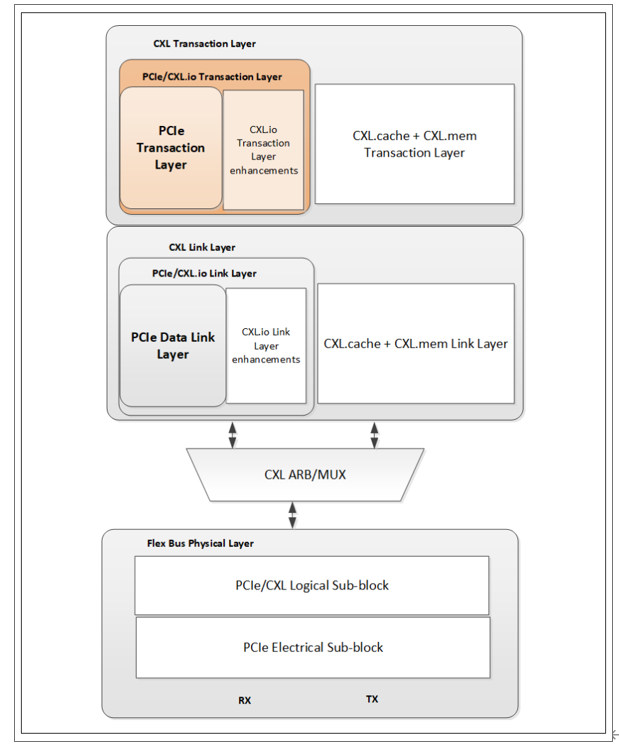
CXL.cache Overview
CXL.cache 协议将设备和主机之间的交互定义为一系列请求，每个请求至少有一个相关的响应信息，有时还有数据传输。接口由每个方向的三个通道组成：请求、响应和数据。 如下图所示，这些通道（CXL.cache Channels）按其方向（设备到主机的 D2H 和主机到设备的 H2D）和所承载的事务（请求、响应和数据）命名。独立通道允许不同类型的信息使用专用线路，从而实现解耦和更高的单线有效吞吐量。
CXL.cache 协议将设备和主机之间的交互定义为一系列请求，每个请求至少有一个相关的响应信息，有时还有数据传输。接口由每个方向的三个通道组成：请求、响应和数据。 如下图所示，这些通道（CXL.cache Channels）按其方向（设备到主机的 D2H 和主机到设备的 H2D）和所承载的事务（请求、响应和数据）命名。独立通道允许不同类型的信息使用专用线路，从而实现解耦和更高的单线有效吞吐量。

H2D Request从主机向设备发送请求。这些请求是用于保持一致性的snoops。设备可能会为snoops 返回数据。请求包含数据缓冲区的位置，任何返回数据都应写入该缓冲区。H2D Response携带ordering messages和写入数据。每个响应都带有原始设备请求中的请求标识符，以指示响应的路由。对于写入数据拉取响应，信息中包含应写入数据的位置。CXL.mem Overview
CXL.mem Overview
CXL Memory Protocol称为CXL.mem，是CPU与Device Memory之间的事务接口。它在跨Die通信时使用Compute Express Link(CXL)的Phy和Link Layer。该协议可用于多种不同的内存连接选项，包括Memory Controller位于Host CPU中、Memory Controller位于Accelerator设备中或Memory Controller移至内存缓冲芯片中。它还适用于不同的内存类型（Volatile， Persistent）和配置（Flat， Hierarchical）。
CPU Coherency Engine通过CXL.mem中的 Request和Response与设备内存进行通讯。在此配置中，CPU Coherency Engine被视为 CXL.mem Master， Mem Device被视为 CXL.mem Subordinate。CXL.mem Master负责发出 CXL.mem 请求（读取、写入等）， CXL.mem Subordinate负责响应 CXL.mem 请求（数据、完成等）。
当Subordinate Device是一个Accelerator时，CXL.mem Protocol假定设备中存在Device Coherency Engine(DCOH)。DCOH负责执行一致性相关指令，如根据 CXL.mem 命令窥探设备缓存。
CXL.mem将Master到Subordinate的交易称为 "M2S"，将Subordinate到Master的交易称为 "S2M"。
在 M2S 事务中，有两种报文类别：
• 不含数据的请求--通称为请求（Req）
• 带数据的申请--（RwD）
同样，在 S2M 事务中，也有两种报文类别：
• 无数据响应 -- 一般称为无数据响应 (NDR)
• 带数据的响应--一般称为数据响应（DRS）
不同版本CXL差异
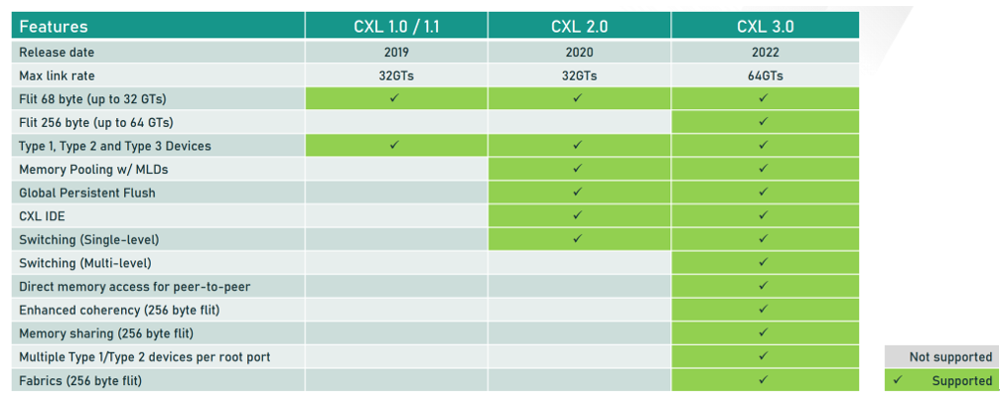
固件职责
Firmware除了要完成Device的枚举之外，还需要完成以下任务。
-
对于CXL2.0 Device，要完成对Component Register中HDM Decoder的配置，同时使能Component Register中的CXL HDM Decoder Global Control Register (Offset 04h) ->HDM Decoder Enable来关闭DVSEC ID 0中Range Size和Range Base对Memory Address的解码。
-
对于CXL 1.1 Device，要完成对DVSEC ID 0中Range Size和Range Base的配置。
-
完成对CXL Root Port和CXL Switch Upstream Port中HDM Decoder的配置。
-
设置PCIe DVSEC for CXL Device和CXL 2.0 Extensions DVSEC for Ports上面的Mem_Enable。
CXL HDM Decoder 的作用
- 地址解码：HDM Decoder 的主要功能是将来自主机（Host）的内存访问请求解码为设备内存地址。这意味着当处理器发出内存读写请求时，HDM Decoder 会将这些请求转换为具体的设备内存地址，以便正确地访问数据。
- 内存管理：HDM Decoder 帮助管理主机与设备内存之间的地址映射，确保主机能够透明地访问设备内存，就像访问本地内存一样。
- 支持多种内存类型：HDM Decoder 可以支持多种内存类型，包括 DRAM、NVRAM 等，满足不同应用的需求。
CXL SSD-通过CXL扩展内存
[toc]
CXL Type3 devices have various types，such as DRAM based，SSD based。We focus on SSD based CXL Type3 devices in this artical.
具体类型可以通过DVSEC 0 中的range size low 寄存器的bit4:2 知道。
• 000b = Volatile memory. This setting is deprecated starting with the CXL 2.0 specification.
• 001b = Non-volatile memory. This setting is deprecated starting with the CXL 2.0 specification.
• 010b = Memory characteristics are communicated via CDAT (see Section 8.1.11) and not via this field.
发展
NAND FLASH是个好东西
同样一个DRAM Chip(bank) 和 NAND FLASH Chip(bank) ，面积一样的情况下FLASH可以提供16倍的存储空间。同时，NAND FLASH CHIP 每GB 的价格比DRAM 要低很多，同样的价格可以买到DRAM 50多倍的FLASH容量。
而且NAND FLASH 非易失。
因此，NAND FLASH 是个好东西。把NAND FLASH拿来当memory是个很好的路子。

基于PCIe BAR的MMIO不太好用
想要当memory用，你肯定得能cache，要不那也太费劲了。每一笔数据都到存储颗粒中取，latency直接起飞。
NAND FLASH是分块的，所以在SSD控制器那里还得把block属性屏蔽掉，让它能按照字节访问。这个还好，在SSD controller中做就好了，毕竟SSD controller就是个小型的SoC。
把SSD controller中的DRAM 通过BAR暴露出来，load store 就可以用了，显存就是这样搞的。
但是BAR的设计初衷就是MMIO，是沟通的渠道。连接的CPU和device 侧的DRAM，不能cache的，在x86 架构下面， MMIO 的页表映射的虚拟地址在页表上都会有Uncacheable 的属性。
为什么不能缓存呢？MMIO这个地址，现在是A数据，过一会设备给更新为B数据了，也没有机制通知CPU，你缓存的东西invalid了，CPU也不知道自己缓存的东西有没有变化。因此，CPU 缓存没有意义。
缓存禁止：为了避免上述问题，x86 架构通常会将 MMIO 区域标记为不可缓存（uncacheable）。这意味着当 CPU 访问这些内存区域时，会绕过缓存，直接从主内存或外设读取数据或将数据写入外设。
MTRR（Memory Type Range Registers）和 PAT（Page Attribute Table）：x86 架构中有 MTRR 和 PAT 机制，允许操作系统或固件指定某些内存区域的缓存属性，包括将某些区域标记为不可缓存。


基于上述的背景，CXL 标准出现后，可以把EP侧的DRAM 设置为cache-able了。能cache了，那当memory用就有可能了。

CXL 登场助力SSD
cxl.memory 不做cache coherence ,但是他和PCIE 的区别就是，CXL协议支持CXL device map到CPU 的cache able system memory 空间。
简单的讲，这个CXL.mem 支持的 CXL SSD 在CXL spec 中把这个在CPU 的物理地址空间中memory map的部分叫做HDM （host-managed device memory ) 相比 DDR叫做 Host attached Memory .
相比MMIO， HDM能cache，因此不用每个byte都去颗粒中读取，只有cache misdd才需要。
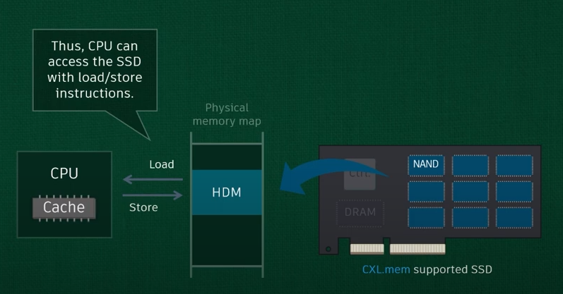
所有的NAND都可以映射到HDM，容量自由了，latency在cache协助下，也可接受了。
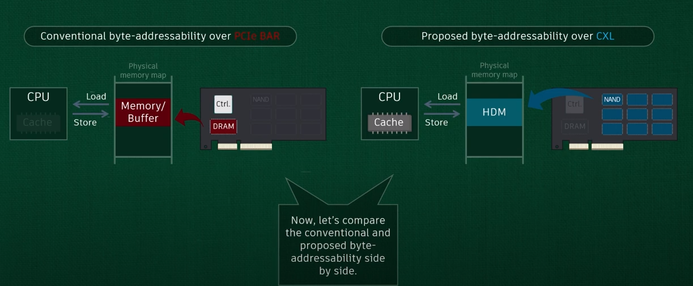
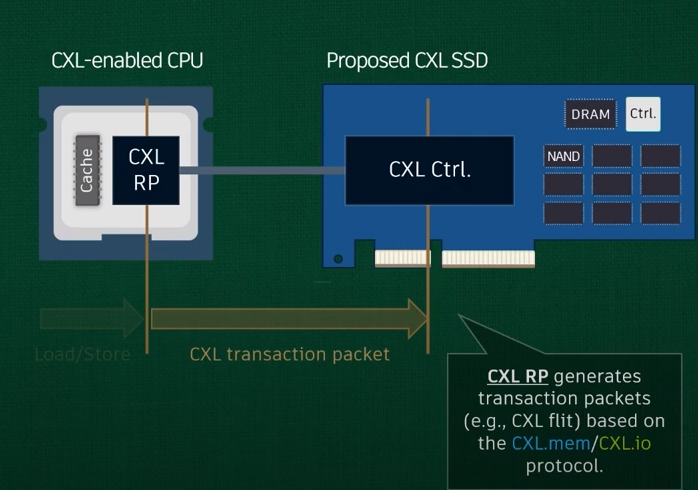
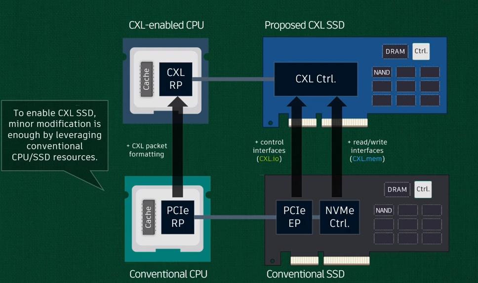

三张图分别表示最好的情况，平均情况以及最坏情况下的数据访问时延。
有了cache的加持，CXL的性能与PCIe相比嘎嘎起飞。设置和DRAM相比，也还凑合。
由此可见，提高caceh命中率是CXL SSD 提高性能的一个有效方式。

整体性能来说，package内的HBM性能最好，其次是近端的DRAM然后是远端DRAM，接下来是直连的type3，最后是经过switch的type3。
内存池化 by CXL
switch
第一步，上switch，CXL2.0 只支持一级switch，3.0支持多级。
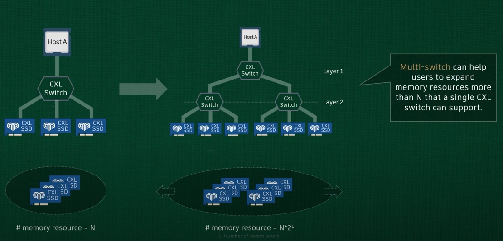
Pooling

虚拟化
CXL Switch virtualization
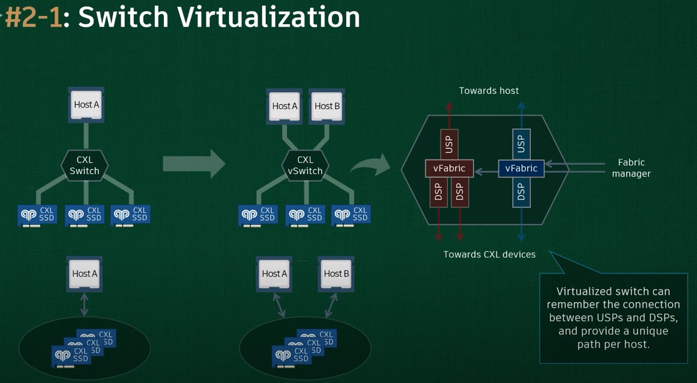
每个CXL SSD 还可以进一步虚拟化。类似SR-IOV中的PF VF。
一个SINGLE CXL SSD 可以被逻辑拆分为最多16个 logical device 从而支持Resource Pooling，即单一物理设备划分为多个逻辑设备MLD（Multiple Logical Device）
更加精细话颗粒度的管理。

一点个人感受：
- 把复杂的东西能很好地给读者讲清楚，讲明白，图文并茂，很厉害；
- 把性能一般的东西，通过新技术，发挥出更好的性能，很厉害；
参考：
CXL-SSD: Expanding PCIe Storage as Working Memory over CXL
CXL Type3 设备的配置
[toc]
收集信息
读DVSEC 0
capability
size low high
读HDM decoder
Component寄存器组中的cachemem寄存器组中的HDM decoder寄存器组的基地址，详细描述见HDM Decoder文章。
map设备
主要就是根据上面DVSEC 0中读取的信息，配置device结构体中的base，limit。
配置设备
- 确保设备没有上锁，DVSEC 0 中有锁。
- 配置HDM decoder 或 HDM range（这里为什么是二选一）
- enable CXL.mem protocol in DVSEC 0 and DVSEC 7
HDM Decoder
[toc]
HDM Decoder 是什么
device 不超过10个，switch and host bridge 不超过32个。
HDM Decoder 寄存器位于那里及如何访问

层级关系：
-
先找component register 基地址；
-
component register 第二个4K中；
- CacheMem primary range 区域中，有多个capability 寄存器组，每个寄存器组有一个ID；一个一个entry组成的数组，每个大小32字节。主要包括，ID，版本，指针等内容。
-
HDM decoder ID 是5；
-
HDM decoder Cap pointer 指向寄存器具体地址；
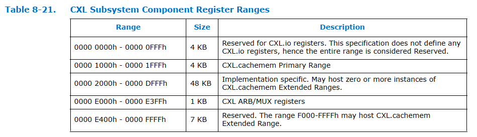
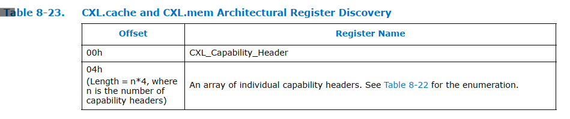


CXL HDM Decoder Capability Structure
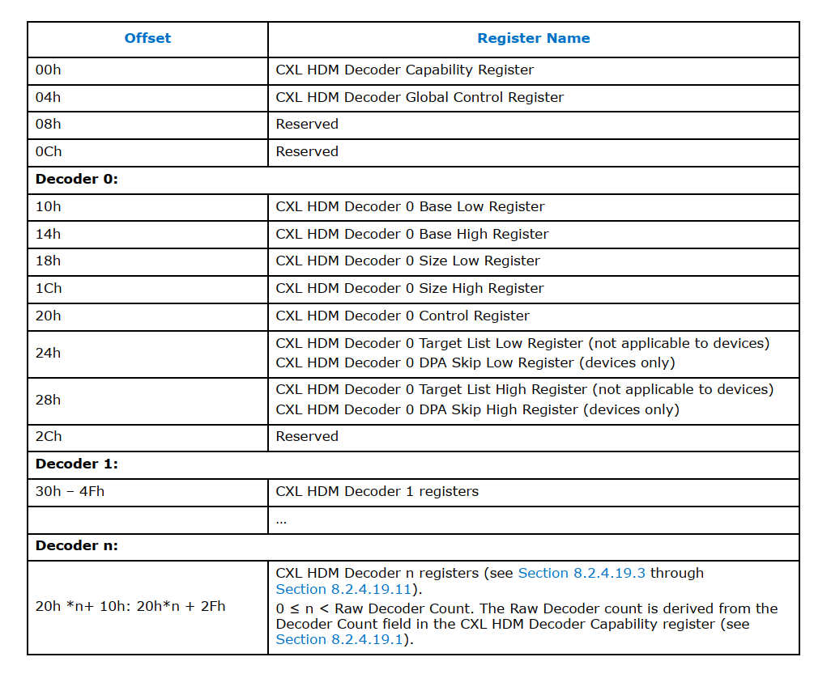

HDM Decoder 寄存器在枚举时候如何进行配置
需要用到DVSEC8，里面会存储多个寄存器的地址信息，每个寄存器有自己的ID。我们要找的component寄存器ID是1。

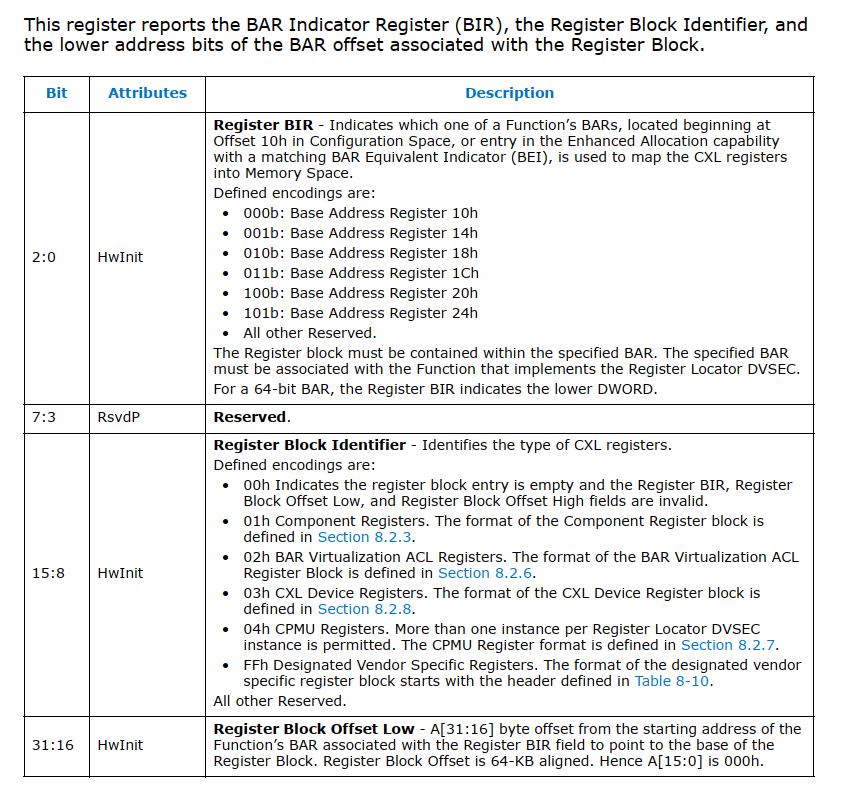
读HDM Decoder属性
// 先获取component寄存器的基地址
component_rerg_base = get_cxl_reg_block_base_address()
- 在配置空间中找到DVSEC8(reg locate)
- 在多个entry中找到ID为1的component reg
- 通过低三位可以看到放在哪个bar里了
- 然后读对应的bar reg，如ecam+0x14，判断是32bit还是64bit
- 这个时候，bar里已经分配好地址了，读出来，加上offset就是需要的地址了
- 把31：16的值加到上面读出来的bar值中，就得到了component寄存器的基地址
// component寄存器的基地址向下4K就是cacheMem寄存器区域
get_cxl20_device_info()
- 在这里搜索，找到hdm decoder header 和 cap reg 的位置
- 根据上面的例子，第一个应该是ID为1 的CXL cap，这里可以判断一下ID和版本号，这里也会表明有几个entry，一个entry header为DW。
- for 循环，从1到entry size，去找ID 等于5，也就是HDM ID的cap，也就找到了想要的东西，header的位置和cap的位置。

比如这个设备，他的HDM decoder header的内容就是
0xCC10005 = 11001100 0001 0000000000000101
可以确认：
低16位是 5，也就是ID 为 5；
bit16:19 是1，也就是版本为1；
bit20:31 是cc，也就是cap的offset是cc
读这个offset地址得到的内容是0x8c = 1000 1100
进一步解析：
bit3:0 是1100，说明decoder数目是1；
bit7:4 是1100，说明target count数目是8；
把这些信息存储到device对应的结构体中就好了。
HDM Decoder配置
在DVSEC 0 中收集一些size信息，然后根据base，size，填入decoder 寄存器中。
同时要配置一些控制寄存器，如decoder enable bit，interleave 控制位等。
CXL 寄存器
按照寄存器所在的位置进行分类，CXL 相关控制及状态寄存器可分为两类：
一类位于 PCIe 配置空间 （Configuration Space），只能通过配置读写请求来访问； 一类位于 MMIO 区域 （Memory Mapped Space），只能通过 Memory 读写请求进行访问。

DVSEC
在 PCIe 配置空间中，以 DVSEC 的形式实现了 CXL 相关的能力结构。这个原本是为厂商预留的，正好CXL可以使用，且为CXL分配了一个 vendor ID 0x1E98.
截至 CXL 3.0 共定义了以下 9 组 CXL 相关的 DVSEC：
-
PCIe DVSEC for CXL Devices ，又称 CXL PCIe DVSEC，所有 RCD、LD、SLD、FMLD 等 CXL Device 的 D0F0 必须实现该 DVSEC，软件根据 Device 配置空间中是否实现了该 DVSEC 来判断 Device 为 PCIe Device 还是 CXL Device 。
-
Non-CXL Function Map DVSEC ，用以指示多 Device、多 Function 设备中不支持 CXL.cachemem 的 Device 或 Function。
-
CXL Extensions DVSEC for Ports ，仅用于 RP、DSP 及 USP，在 PCIe 枚举层级之外维护一条 RCH-RCD 层级。
-
GPF DVSEC for CXL Ports ，用于 CXL Port 中的 GPF 相关能力，主要用以控制 GPF Phase1、Phase2 的 Timeout 值。
-
GPF DVSEC for CXL Devices ，用于 CXL Device 中的 GPF 相关能力，主要用以指示 GPF Phase2 的 Timeout 值及 Phase2 期间的功耗。
-
PCIe DVSEC for Flex Bus Port ，又称 Flex Bus Port DVSEC，用以控制及指示 Flex Bus 相关能力，是给 Multi-Device 场景预留的能力结构，CXL 1.1 以上所有 CXL Port/Device 均需实现该能力结构。CXL 链路训练期间 Modified TS 中的 Flex Bus 相关信息多来源于该能力结构中的寄存器，接收到对端发来的 Modified TS Info 也会记录在该能 DVSEC 相关寄存器中。对于实现了 RCRB 的 RCH/RCD，该 DVSEC 位于 RCRB 中。
-
Register Locator DVSEC ，该能力结构中存放有一个或多个 CXL 寄存器块的 Entry。
-
MLD DVSEC ，仅适用于 FM 所属的 LD，用于 MLD 相关 Capability，比如指示支持的 LD 数量、LD-ID 热复位向量。
-
PCIe DVSEC for Test Capability ，用于 CXL Compliance 测试，在 CXL Compliance 测试过程中对该 DVSEC 进行配置，并根据该 DVSEC 内容进行相关测试。
9 组 CXL DVSEC 之间通过 DVSEC ID 加以区分


每个DVSEC里的寄存器

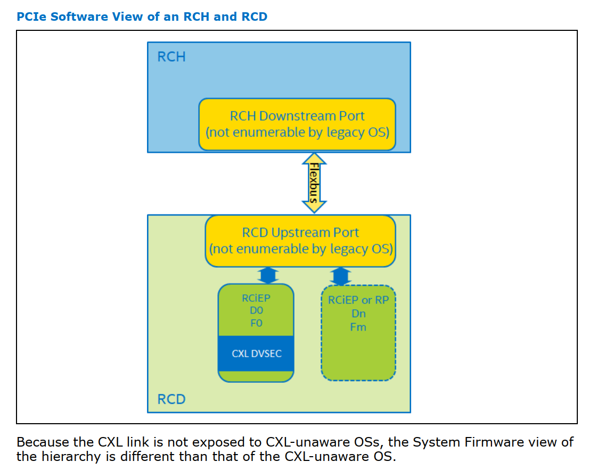
Reg in MMIO
上文提到了 9 组实现在 PCIe 配置空间的 CXL 相关 DVSEC。鉴于部分 CXL 组件不具备 PCIe 配置空间，且 PCIe 配置空间 4KB 较小难以满足 CXL Component Register 的 Size 要求，此时 CXL 相关的 DVSEC 及 Component Register 可以实现在 Memory Mapped 空间（MMIO），通过 Memory 读写请求进行访问。
截至 CXL 3.0，CXL 协议定义了 6 类位于 MMIO 中的寄存器：
-
RCH DP RCRB ，可视为 RCH 的 4KB 配置空间，跟其 MEMBAR0 范围不重叠，基地址由 ACPI 指定。
-
RCH DP Component Register ，包括 CXL 协议层、链路层、物理层及 ARB/MUX 等组件相关的寄存器，共 64KB，其位于 RCH DP RCRB 指定的 64b MEMBAR0 范围内 （物理上位于 RCH 端）。
-
RCD UP RCRB ，可视为 RCD 的 4KB 配置空间，跟 RCH DP RCRB 占用连续的两个 4KB 空间，其可以（不强求）跟 RCH DP 的 Memory 范围（非 MEMBAR0）重叠。RCD UP RCRB 的基地址采用 RCD 复位后收到的 RCH DP 发来的第一笔 MRd（CXL 1.1 时 MRd/MWr 均可）的地址。
-
RCD UP Component Register ，包括 CXL 协议层、链路层、物理层及 ARB/MUX 等组件相关的寄存器，共 64KB；对于实现了 RCRB 的 RCD，该寄存器块位于 RCD UP RCRB 指定的 64b MEMBAR0 范围内 （物理上位于 RCD 端），该范围同时处于 RCH DP 的 Memory 范围（非 MEMBAR0）之内；对于未实现 RCRB 的 RCD，该组寄存器的具体类型及位置 由 Register Locator DVSEC 来指定
-
Component Register for ALL Other CXL Components ，其他 CXL Component 相关寄存器。这组寄存器的具体类型及位置 由 Register Locator DVSEC 来指定 。
-
CXL Host Bridge Component Register (CHBCR)，CXL Host Bridge 组件寄存器，目前主要用于控制多 RP 之间的 Memory Interleaving，其基地址从 ACPI CEDT 中取得。
上述 RCRB 及 Components Register 在地址空间中的分布示意图如下。CHBCR 及 Register Locator DVSEC 指定的 Component Registers for All Other CXL Components 位置不定，未包含在此图中。

参考：
这个博主感觉很厉害，有很多PCIe和CXL相关文章，很详细，精彩。blog
https://blog.csdn.net/weixin_40357487/article/details/132553156
CXL DVSEC
[toc]
Overview
一共有9个DVSEC

DVSEC 0 - PCIe DVSEC for CXL Devices
PCIe DVSEC for CXL Devices
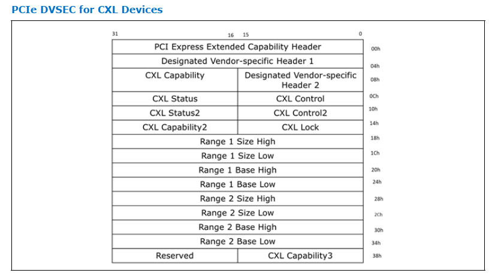
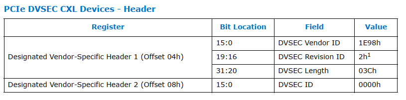
Cap
 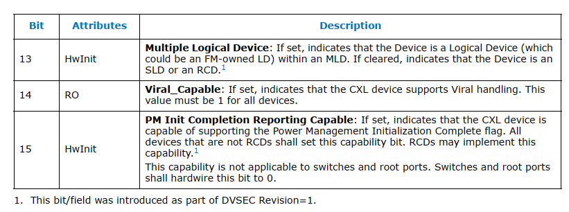
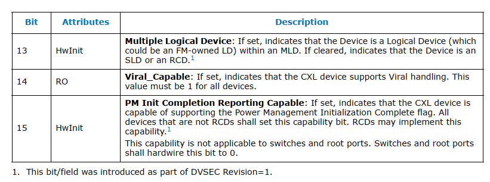
从上图可以看到前三个bit分别表示cxl 的cache、 io、mem这三个协议使能状态，cxl.io default是必须要使能的。
bit3和bits[5:4]都是跟cxl.mem相关。有几个HDM range。下面就有两个range的寄存器。
bit 6 主要跟cache writeback和invalidate 能力有关，在cxl.cache 使能的情况下这个必须是要设置上的。bit7，bits[10:8] ,bit 11都跟设备 Reset有关联。
CXL Loock

Range Register
接下来我们看一下图1中的range register的作用。如果cxl.mem 使能且HDM_COUNT 等于1的话则range 1 register必须要初始化，如果HDM_COUNT 等于2的话则range 2 register 也必须要初始化。每个range register都包含4个子的register分别是Size High, Size Low, Base Higth, Base Low。
Range 1 Size Low 有很多属性寄存器，其他range size high 和 base寄存器没有太多额外的属性信息。
固件读取size，写入base。

bit 0 如果设置上则表示 range 1 Size high and Size low register是有效的
bit 1则表示hdm是否可用如果被设置上则表示cxl hdm已经初始化完成处于可用状态
bits 4:2 则表示hdm底层所使用的存储介质类型
bits 7:5则表示 hdm的使用类型是作为普通内存去使用还是作为storage去使用

bits[12:8] 主要是memory interleave也称为内存交织相关的一些配置， 内存交织技术主要是通过同时并行访问dram的多个bank来提升内存访问性能。上面的配置主要涉及到interleave的粒度相关。
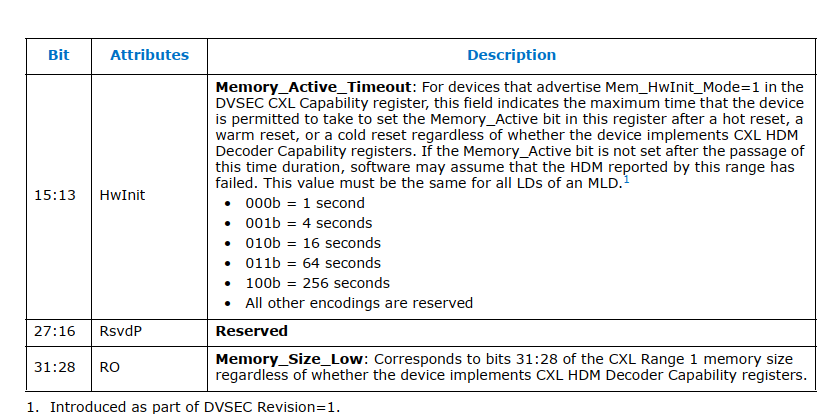
bits 15:13 表示的是memory active的timeout，这个timeout是由硬件来设置的。
bits 31:28 表示的是memory size的 31:28位
CXL in CMN
[toc]
CXS 控制器
ARM RD_N2 参考设计中，chip to chip互连的通信协议是CCIX2.0，CMN-700 TRM中使用的描述是ARM 私有协议CML_SMP。
S家的CXL控制器内部集成了一个CXS控制器，支持CCIX2.0，其实CML_SMP就是CCIX2.0的改良版，增加了一些新的不影响功能的信息。
CMN 上CCG节点负责连接外部的chip或者CXL设备。
Coherent Multichip Link (CML) device = CCG
A given multi-chip link can be used for: • SMP (CML_SMP) connection • CXL device attachment
A CML device (CCG) can be configured to be used for CML_SMP connection or CXL device attachment.
For SMP systems, CCG block is required to enable multi-chip SMP communications over a CXS issue B interface.
那么CXL就应该使用CXS issue A interface
CCG 结构
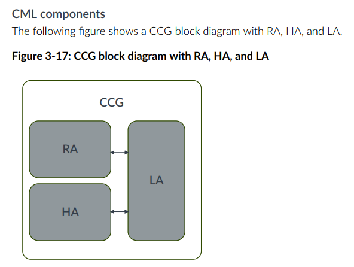

CCG 工作模式
The CML RA node type has the following MPAM modes:
-
SMP mode The CML RA passes the MPAM field on the USER field of the request. When snooped, the CML RA receives the MPAM field and passes it through the CHI SNP MPAM field.
-
Non-SMP mode The CML RA drops the MPAM field that is received on the CHI request. The CML RA also does not receive MPAM field on CML snoops in this mode.
-
CXSA mode The CML RA passes the MPAM field on the USER field of the request, even though CXSA is in non-SMP mode. You can use a configuration bit to enable passing of MPAM attributes when in CXSA mode.
The CML HA node type has the following MPAM modes:
-
SMP mode The CML HA receives MPAM fields through the USER field of the request and passes them through the CHI MPAM field. On incoming CHI transactions, the CML HA passes CHI MPAM values through on the USER field.
-
Non-SMP mode The CML HA drops the MPAM values that it receives on CHI snoop. The CML HA does not receive the MPAM attributes on CML requests.
当连接CXL 时候，就需要enable CXSA mode in RA。
LA 中也有相关寄存器，也需要enable CXL。
CCG SAM
CMN CCG节点是负责连接CXL的，目前CMN700支持type3类型的设备，因此，需要为CXL type3 设备的memory 预留一段内存。具体使用就是在配置CMN SAM时候配置，将一段内存映射到CCG 节点。
CXL in SCP and EDK2
SCP 固件中实现了对CXL功能的支持，基于开源的代码，学习相关的配置。
CCG 配置
-
SHA-1: bc14e780c120fc656ce905d6e219078a0006da88
- module/cmn700: configuring CCG for mapping Host address to CXL mem
A Memory region is reserved for CXL Memory. CXL.Mem (0x3fe_0000_0000) comes under 4TB Chip-0 memory and the whole region is by default configured as SCG. Configured CXL.Mem region in HNF-SAM HTG and CCG SA node IDs for HTGs in following order -
HNF_SAM_CCG_SA_NODEID_REG HNF_SAM_HTG_CFG3_MEMREGION HNF_SAM_HTG_CFG2_MEMREGION HNF_SAM_HTG_CFG1_MEMREGION
CXL Memory region is accessible as Normal memory with above configuration.
This patch maps Host address space to CXL device mem area through CCG node, based on the CXL device memory size, which is discovered by CXL module. CXL module invokes runtime CMN700 API for mapping the host address space and configuring CCG node.
This patch also adds a flag "cxl_mem" in CCG_Config structure for identifying host region and configuration reserved for CXL device memory purpose and thus differentiating from Remote chip memory.
Signed-off-by: Sayanta Pattanayak sayanta.pattanayak@arm.com Change-Id: I988f471db6a6a55f97320519413daedd8ea524fb
config_cmn700.c
N2 参考设计中，将0-0x40000000000全都设置为SCG 属性，
然后再从HNSAM中将0-0x3fe00000000设置为CCG-cxl_mem属性。
#if (PLATFORM_VARIANT == 1)
static const struct mod_cmn700_ccg_config ccg_config_table_chip_0[] = {
{
.remote_rnf_count = 0,
.remote_mmap_table = {
.base = UINT64_C(0x3fe00000000),
.size = UINT64_C(8) * FWK_GIB,
.type = MOD_CMN700_REGION_TYPE_CCG,
},
.ra_mmap_table = {
{
.base = UINT64_C(0x3fe00000000),
.size = UINT64_C(8) * FWK_GIB,
.remote_haid = 0,
},
{ 0 }
},
.remote_agentid_to_linkid_map = {
{
.remote_agentid_start = (RNF_PER_CHIP * CHIP_0),
.remote_agentid_end = (RNF_PER_CHIP * CHIP_0)
},
},
.smp_mode = false,
.cxl_mem = true,
},
};
#endif
增加了一个entry，一共8G，同时增加了一个flag cxl_mem。类型是CCG。
static int cmn700_setup_rnsam_ccg_regions(void)
{
const struct mod_cmn700_config *config;
const struct mod_cmn700_mem_region_map *region;
struct cmn700_rnsam_reg *rnsam;
unsigned int count;
unsigned int cxra_ldid;
unsigned int cxra_node_id;
unsigned int idx;
uint32_t bit_pos;
uint32_t group;
config = ctx->config;
/* Do configuration for CCG Nodes */
for (idx = 0; idx < config->ccg_table_count; idx++) {
region = &config->ccg_config_table[idx].remote_mmap_table;
if (region->type != MOD_CMN700_REGION_TYPE_CCG) {
return FWK_E_DATA;
}
FWK_LOG_INFO(
MOD_NAME " [0x%llx - 0x%llx] %s",
region->base,
region->base + region->size - 1,
mmap_type_name[region->type]);
/* If the region is for extended memory area like CXL.Mem
* and connected through CCG then the region shouldn't be
* marked as Non-Hash region. CXL.Mem region should be part
* of Hashed cache group area.
*/
if (config->ccg_config_table[idx].cxl_mem == true)
continue;
for (count = 0; count < ctx->internal_rnsam_count; count++) {
rnsam = ctx->internal_rnsam_table[count];
在配置CCG 时候，如果是CXL.Mem，就不应该用non-hash，而是用hash。
static int map_ccg_for_cxl_mem(uint64_t size)
{
uint32_t idx;
const struct mod_cmn700_config *config = ctx->config;
const struct mod_cmn700_ccg_config *ccg_config;
cmn700_rnsam_stall();
/* Do configuration of CCG Node for mapping remote CXL Mem area. */
for (idx = 0; idx < config->ccg_table_count; idx++) {
ccg_config = &(config->ccg_config_table[idx]);
if (ccg_config->cxl_mem == true)
ccg_setup_for_remote_mem(size, ctx, ccg_config);
}
cmn700_rnsam_unstall();
return FWK_SUCCESS;
}
这里新增了一个API，用来设置CCG CXL.Mem
同时，发现这里有个rnsam stall和unstall 函数，看起来是用来暂停rnsam的。不会产生路由地址，而是直接将所有的请求发给default node。
当前项目，直接将STATUS寄存器设置为了0x2，也就是unstall，enable RNSAM。
问题：如果需要online 更新RNSAM，是否就需要调用stall接口。


ccg_setup_for_remote_mem
int ccg_setup_for_remote_mem(
uint64_t size,
struct cmn700_device_ctx *ctx,
const struct mod_cmn700_ccg_config *ccg_config)
{
uint64_t reg_val;
unsigned int index;
unsigned int ccg_ldid;
struct cmn700_hnf_reg *hnf_reg;
struct cmn700_ccg_ra_reg *ccg_ra_reg;
cmn700_ccg_ctx.is_prog_for_port_agg = false;
/* Enable CXSA */
ccg_ldid = get_ldid(ctx, cmn700_ccg_ctx.is_prog_for_port_agg);
ccg_ra_reg = ctx->ccg_ra_reg_table[ccg_ldid].ccg_ra_reg;
for (index = 0; index < ctx->hnf_count; index++) {
/* Programming sequence to enable CXL.mem regions inside HNSAM */
hnf_reg = (struct cmn700_hnf_reg *)ctx->hnf_node[index];
/* Configuring CCG SA node IDs for HTGs in the HNSAM */
reg_val = hnf_reg->HNF_SAM_CCG_SA_NODEID_REG[0];
reg_val &= ~(CMN700_HNF_SAM_CCG_SA_NODEID_MASK);
reg_val |= get_node_id(ccg_ra_reg);
hnf_reg->HNF_SAM_CCG_SA_NODEID_REG[0] = reg_val;
/* CXSA/CXLSA aggregated SA selection function */
/* 用来指定这个region映射到几个SN NODE，如8SN node, 或者是CXSA 模式 */
hnf_reg->HNF_SAM_HTG_CFG3_MEMREGION[0] |=
(CMN700_HNF_SAM_HTG_MODE_CXSA <<
CMN700_HNF_SAM_HTG_SN_MODE_POS);
/* 64B interleaved */
/* CXSA 模式下的 interleaved 颗粒度，这里只清除了，没有置位，说明用的默认0，64B */
reg_val = hnf_reg->HNF_SAM_HTG_CFG3_MEMREGION[0];
reg_val &= ~(CMN700_HNF_SAM_HTG_SA_DEVICE_INTERLEAVE_CNTL_MASK <<
CMN700_HNF_SAM_HTG_SA_DEVICE_INTERLEAVE_CNTL_POS);
hnf_reg->HNF_SAM_HTG_CFG3_MEMREGION[0] |= reg_val;
/* 1 CXSA/CXLSA port used */
/* 这里只清除了，没有置位，说明用的默认0 */
reg_val = hnf_reg->HNF_SAM_HTG_CFG3_MEMREGION[0];
reg_val &= ~(CMN700_HNF_SAM_HTG_SA_PORTS_CNT_MASK <<
CMN700_HNF_SAM_HTG_SA_PORTS_CNT_POS);
hnf_reg->HNF_SAM_HTG_CFG3_MEMREGION[0] |= reg_val;
/* htg_region_end_addr[51:20] = end address of HTG region */
reg_val = ccg_config->ra_mmap_table[0].base +
(size - 1);
reg_val &= ~(CMN700_HNF_SAM_HTG_REGION_ADDR_RES_MASK);
hnf_reg->HNF_SAM_HTG_CFG2_MEMREGION[0] |= reg_val;
/* htg_region_base_addr[51:20] = start address of HTG region */
reg_val = ccg_config->ra_mmap_table[0].base;
reg_val &= ~(CMN700_HNF_SAM_HTG_REGION_ADDR_RES_MASK);
hnf_reg->HNF_SAM_HTG_CFG1_MEMREGION[0] |= reg_val;
/* Configuring HTG region as Valid */
hnf_reg->HNF_SAM_HTG_CFG1_MEMREGION[0] |=
(UINT64_C(0x1) << CMN700_HNF_SAM_HTG_REGION_VALID_POS);
}
/*
* Program the CXRA SAM with the address range and the corresponding
* remote HAID.
*/
program_ccg_ra_sam_addr_region(ctx, ccg_config);
update_cxl_mem_region(ccg_config->ra_mmap_table[0].base,
ccg_config->ra_mmap_table[0].size);
return FWK_SUCCESS;
}
实际应用
link前
主要是寻址范围，cxl 类型，cxsa enable等。
- RA 的 SAM region: 范围
- RA 的 SAM valid：valid有效位

- CCLA的flex bus control： MEM CACHE
- CCLA的config control： MEM CACHE


link后


CXL 枚举
[toc]
CXL 协议判断
判断当前链路上跑的是CXL还是PCIe，需要读取寄存器。


PCIe DVSEC for CXL Devices ，又称 CXL PCIe DVSEC，所有 RCD、LD、SLD、FMLD 等 CXL Device 的 D0F0 必须实现该 DVSEC，软件根据 Device 配置空间中是否实现了该 DVSEC 来判断 Device 为 PCIe Device 还是 CXL Device 。
CXL2.0
与PCIe 一致。
CXL1.1
RCiEP
HDM Decoder
DDR Introduction
[toc]
Introduction
SDRAM vs. SRAM
-
Synchronous Dynamic Random Access Memory
-
Static RAM

片内通常用SRAM，片外用SDRAM。

DDR3 SDRAM电路结构高清图

- 左上是命令信号，下面是地址，18b长度；
- 地址存到地址寄存器；
- 8个bank -> BA[2:0], 3个bit表示8个结果；
- 行选择，地址A，15b长度；
- 列选择，长度10b;
- 8192： 一行存储的电荷容量；
行地址（Row Address）：16位（A0-A15）
列地址（Column Address）：10位（A0-A9）
Bank地址（Bank Address）：3位（BA0-BA2）
4个时钟周期，上升下降都传输，8比特。

256Mb Configuration
| 参数 | 256Mb x 4 | 128Mb x 8 | 64Mb x 16 |
|---|---|---|---|
| # of Banks | 8 | 8 | 8 |
| Bank Address | BA0 - BA2 | BA0 - BA2 | BA0 - BA2 |
| Auto precharge | A10/AP | A10/AP | A10/AP |
| BC switch on the fly | A12/BC# | A12/BC# | A12/BC# |
| Row Address | A0 - A13 | A0 - A13 | A0 - A12 |
| Column Address | A0 - A9,A11 | A0 - A9 | A0 - A9 |
| Page size | 1 KB | 1 KB | 2 KB |
2Gb Configuration
| 参数 | 512Mb x 4 | 256Mb x 8 | 128Mb x 16 |
|---|---|---|---|
| # of Banks | 8 | 8 | 8 |
| Bank Address | BA0 - BA2 | BA0 - BA2 | BA0 - BA2 |
| Auto precharge | A10/AP | A10/AP | A10/AP |
| BC switch on the fly | A12/BC# | A12/BC# | A12/BC# |
| Row Address | A0 - A14 | A0 - A14 | A0 - A13 |
| Column Address | A0 - A9,A11 | A0 - A9 | A0 - A9 |
| Page size | 1 KB | 1 KB | 2 KB |
DDR4 SDRAM电路结构高清图
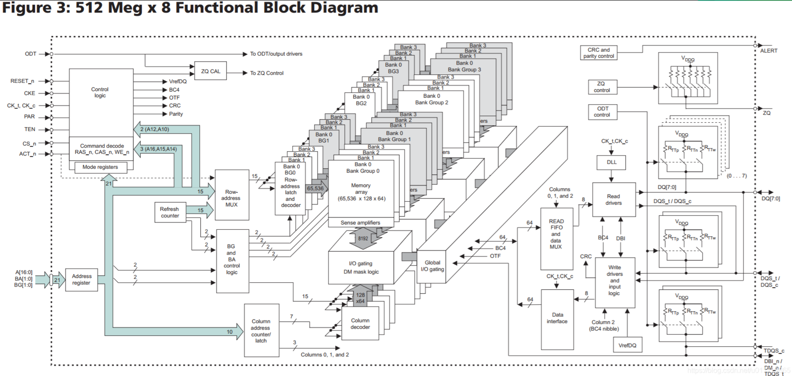
行地址（Row Address）：16位（A0-A15）
列地址（Column Address）：10位（A0-A9）
Bank地址（Bank Address）：2位（BA0-BA1）
Bank组地址（Bank Group Address）：2位（BG0-BG1）
DDR5 SDRAM电路结构高清图
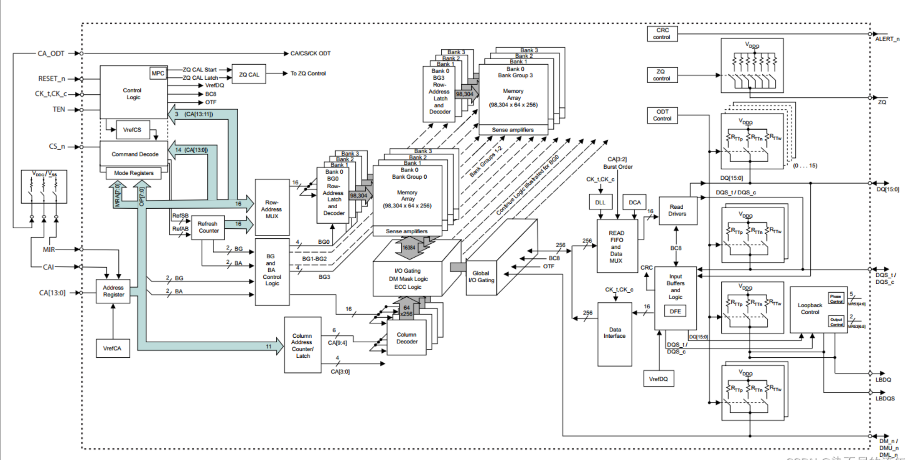
行地址（Row Address）：16位（A0-A15）
列地址（Column Address）：10位（A0-A9）
Bank组地址（Bank Group Address）：2位（BA0-BA1）
Bank地址（Bank Address）：3位（BG0-BG2）
命令地址（Command Address）：统一使用CA总线
存储层次
- Channel：处理器的内存控制器的通道数量
- Module：内存条，可以有多个内存条连接到同一个 Channel 上
- Rank：多个 DDR SDRAM 芯片在宽度上拼接起来，一个 Module 上可以放下一到四个 Rank，这些 Rank 共享总线，每个 Rank 都有自己的片选信号 CS_n，实际上就是在深度上拼接 SDRAM 芯片
- Chip：也就是一个 DDR SDRAM 芯片，例如一个数据位宽是 64 位的 Rank，是使用 8 个 x8 的 Chip 在宽度上拼接而成
- Bank Group：DDR4 引入，通过 Bank Group 掩盖 DDR4 同一个 Bank Group 内连续读的延迟 tCCD_L
- Bank：每个 Bank 同时只有一个 Row 被激活，通过多个 Bank 掩盖 Activate/Precharge 的延迟
- Row：Activate/Precharge 的单位
- Column：每个 Column 保存 n 个 Cell，n 是 SDRAM 的位宽
- Cell：每个 Cell 保存 1 bit 的数据
一些概念
Page的概念
- 行（Row）和列（Column）：DDR内存被组织成一个二维数组，分为行和列。每个单元格存储一个位或几个位的数据。
- Page（页）：一次性可以被同时激活的行称为一页。当一行被激活后，内存控制器可以快速访问该行内的所有列数据，这样可以减少访问延迟。
- 页大小：页的大小通常由行的宽度和列的宽度决定。例如，如果一行有1024个单元格，每个单元格存储一个字节，那么这一页的大小就是1024字节。
为什么上面表格中有一个是2K page呢，因为它一行中1024个单元，但是是x16的，也就是2个B，所以是2KB。
8N预取
内部总线是32位，外部是4位；8倍的关系，就是8N；
读操作，一下取32位，由并转串，发出去；
内部时钟是慢的，外部时钟是快的；
内存训练
地址和控制信号使用的是菊花连，数据信号（DQ、DQS 和 DM）使用的是并行。

fly-by的方式导致不同DRAM看到波形不同，有不同的延迟，越远延迟越大。需要在控制器侧加一些延迟，让数据对齐。
CLK/CLK#、DQS、AD和CMD信号不需要同时传递，改善了信号完整性，使更高频率成为可能。
DQ走的是并行。
地址行有效，列有效以后，第一颗芯片很快就准备好了数据，放到DQ上了，第8颗需要等很久才准备好。如果都准备好了，kua的一下，DQ去采样，就好了。就需要训练。
Write Leveling
这部分解决 Fly-by Topology 带来的延迟不一致问题。
让 SDRAM 芯片接受到的 DQS 信号与 CK 信号同步。也就是确保所有数据线（DQ）和数据选通信号（DQS）在到达内存模块时是同步的。
DQS（Data Strobe）信号和CK（Clock）信号是关键的时钟和数据同步信号，用于确保数据的准确传输和接收。
DQS信号：是数据选通信号，用于同步数据传输，确保数据在正确的时刻被锁存，用于在数据传输过程中指示数据有效时刻。它在读写操作中分别由内存模块和内存控制器生成，并与数据一起传输。
CK信号：提供时钟基准，控制所有同步操作。数据在时钟信号的上升沿和下降沿都被传输，实现双倍数据速率。
DQ信号：负责传输内存读写操作中的实际数据。每一条DQ信号线对应一个数据位。
简单来说，就是内存控制器不停的发送不同时延的DQS 信号，内存 颗粒在DQS-DQS#的上升沿采样CK 的状态，并通过DQ 线反馈给DDR3 控制器（一组01010101的数据）。控制器端反复的调整DQS-DQS#的延时，直到控制器端检测到DQ 线上0 到1 的跳变控制器就锁住此时的延时值，此时便完成了一个Write leveling过程。
过程：
- 设置 SDRAM 进入 Write Leveling 模式，此时 SDRAM 会使用 DQS 对 CK 采样，把结果输出到 DQ
- 控制器枚举 DQS 的延迟，读取出每个 DQS 延迟下的 DQ 结果，得到一个 0-1 串，例如：
001111111111111111110000，即随着延迟增大，先采样到 0，再采样到 1，最后又采样到 0 - 找到一个 DQS 延迟，使得 DQ 出现一个从 0 到 1 的变化，那么按照这个延迟输出，DQS 就会与 CK 同步
- 设置 SDRAM 结束 Write Leveling 模式
Read Leveling
对于读操作，数据是从 SDRAM 发送给控制器，不同的数据到达控制器的时间可能也不同，因此也需要对读操作进行校准。
为了判断读取的数据是否正确，做法是首先写入已知的数据，然后再读出来，如果读取的数据和写入的数据完全一致，就说明可以正确地进行读操作。
过程：
- 写入数据（或者用 SDRAM 的生成固定 Pattern 输出的功能）
- 设置延迟从 0 开始循环，不断增大
- 在每个延迟的设定下，读取出数据，把读取的结果与之前写入的数据进行比较
- 统计出哪些延迟条件下，读取数据是准确的，准确的记为 1，不准确的记为 0
- 找到表示准确的 1 的范围，取中点作为最终的校准结果
注意这里不再是找到 0-1 的变化的地方，Write Leveling 找 0-1 变化是为了同步，同步的地方正是 0-1 变化的地方；而 Read Leveling 的目的是要读取出正确的数据，已知有一段连续的延迟区间，区间内都可以读出正确的数据，那么取其中点，即使因为温度等条件变化，区间出现移动，因为保留了足够的余量，所以依然可以工作。取中点这一步也称为 Read Centering。
Spec
SDRAM 相关标准由 JEDEC 制定：
- JESD79F: DDR SDRAM
- JESD79-2F: DDR2 SDRAM
- JESD79-3F: DDR3 SDRAM
- [JESD79-4D: DDR4 SDRAM](https://www.jedec.org/document_search?search_api_views_fulltext=jesd79-4 ddr4)
- JESD79-5B: DDR5 SDRAM
除了 DDR 系列，还有低功耗的 LPDDR 系列：
- JESD209B: LPDDR SDRAM
- JESD209-2F: LPDDR2 SDRAM
- JESD209-3C: LPDDR3 SDRAM
- JESD209-4D: LPDDR4 SDRAM
- JESD209-5B: LPDDR5 SDRAM
高性能常用的 HBM 也基于 SDRAM 技术：
还有 GDDR SGRAM 系列：
- SDRAM3.11.5.8 R16.01: GDDR4 SGRAM
- JESD212C.01: GDDR5 SGRAM
- JESD232A.01: GDDR5X SGRAM
- JESD250D: GDDR6 SGRAM
参考：
https://www.cnblogs.com/sky-heaven/p/15948268.html
https://zhuanlan.zhihu.com/p/26327347
LeetCode
记录自己做过的一些题，方便复习。
C basic
[toc]
C语言关键字
基本关键字
| 关键字 | 描述 |
|---|---|
| auto | 声明自动变量，存储在栈上，具有自动存储期。 |
| break | 终止循环或switch语句的执行，跳出循环体或switch分支。 |
| case | 在switch语句中标记不同的分支。 |
| char | 声明字符型变量或指定字符型数据类型。 |
| const | 声明常量，其值不能被修改。 |
| continue | 跳过当前循环中余下的代码，进入下一次循环的迭代。 |
| default | switch语句中的默认情况，当所有case都不匹配时执行。 |
| do | 引导do-while循环，先执行循环体再检查循环条件。 |
| double | 声明双精度浮点型变量或指定双精度浮点型数据类型。 |
控制流程关键字
| 关键字 | 描述 |
|---|---|
| else | if语句条件不满足时执行的分支。 |
| for | 引导for循环，包括初始化、条件和迭代器。 |
| goto | 无条件转移到程序中的标签语句位置，通常不建议使用。 |
| if | 条件判断，根据条件表达式的结果执行代码块。 |
| return | 从函数中返回值，并终止函数的执行。 |
| switch | 多重选择，根据表达式的值跳转到匹配的case分支。 |
| while | 引导while循环，根据条件表达式重复执行代码块。 |
数据类型关键字
| 关键字 | 描述 |
|---|---|
| enum | 定义枚举类型，并为枚举常量赋值。 |
| float | 声明单精度浮点型变量或指定单精度浮点型数据类型。 |
| int | 声明整型变量或指定整型数据类型。 |
| long | 声明长整型变量或指定长整型数据类型。 |
| short | 声明短整型变量或指定短整型数据类型。 |
| signed | 声明有符号类型的整型变量或指定有符号类型。 |
| unsigned | 声明无符号类型的整型变量或指定无符号类型。 |
| void | 指示函数没有返回值或指针没有关联特定数据类型。 |
存储类关键字
| 关键字 | 描述 |
|---|---|
| extern | 声明变量或函数在其他文件或模块中定义。 |
| register | 声明寄存器变量，提示编译器将变量存储在CPU寄存器中，以提高访问速度。 |
| static | 声明静态变量，其生命周期扩展到整个程序执行期间，但只能在当前文件中访问。 |
其他关键字
| 关键字 | 描述 |
|---|---|
| sizeof | 获取数据类型或变量在内存中所占的字节数。 |
| typedef | 定义新的数据类型别名，增强程序的可读性和可移植性。 |
| union | 定义联合体类型，允许在相同的内存位置存储不同的数据类型。 |
| volatile | 声明易变的变量，提示编译器在每次访问时重新加载其值。 |
static 作用
extern 作用
结构体联合体区别
在C语言中，结构体（struct）和联合体（union）是用来组织和存储不同数据类型的数据结构，但它们有一些重要的区别：
结构体（struct）
- 定义和用途：
- 结构体是一种用户自定义的数据类型，用于组合多个不同类型的数据成员。
- 每个成员可以有不同的数据类型，这些成员在内存中按照声明的顺序依次存储，每个成员都有自己的内存地址。
- 内存分配：
- 结构体的大小等于其所有成员大小之和，可能会受到对齐方式的影响。
- 结构体的每个成员可以同时被访问和操作。
- 使用：
- 适合表示具有多个相关属性的数据。
- 可以通过结构体访问运算符
.来访问其成员。
示例：
struct Person {
char name[50];
int age;
float salary;
};
联合体（union）
- 定义和用途：
- 联合体也是一种用户自定义的数据类型，但所有成员共享同一块内存空间。
- 联合体的所有成员起始地址相同，因此修改一个成员的值可能会影响其他成员的值。
- 内存分配：
- 联合体的大小等于其最大成员的大小。
- 联合体的所有成员共享相同的内存空间，因此在给一个成员赋值后，其他成员的值可能会被覆盖。
- 使用：
- 适合用于存储不同类型但相对较小且彼此排斥的数据。
- 通过共享内存可以实现节省内存空间的效果。
示例：
union Data {
int i;
float f;
char str[20];
};
区别总结
- 内存分配：
- 结构体的各成员会按顺序分配独立的内存空间，大小为各成员大小之和。
- 联合体的所有成员共享同一块内存空间，大小取决于最大的成员大小。
- 访问方式：
- 结构体的成员可以同时访问和操作，使用
.操作符。 - 联合体的成员共享内存，只能同时访问一个成员，使用
.操作符访问。
- 结构体的成员可以同时访问和操作，使用
- 用途：
- 结构体适合用于组合不同类型的数据，每个成员可以独立使用。
- 联合体适合用于节省内存空间或者存储不同类型的数据。
C语言读取寄存器
void write_reg32(uint32_t addr, uint32_t data) {
*((volatile uint32_t*)(addr)) = data;
}
uint32_t read_reg32(uint32_t addr) {
uint32_t rdata;
rdata = *((volatile uint32_t*)(addr))
return rdata;
}
将 addr 强制转换为 volatile uint32_t 类型的指针，然后用 * 解引用该指针。换言之，它尝试从 addr 指向的内存位置读取一个32位的无符号整数，并且这个操作中的值的读取不会被编译器优化器所改变。
C语言压栈过程
在C语言中，函数调用时的压栈过程是指将函数调用时需要保存的信息压入栈中，以便在函数返回时能够正确恢复执行现场的过程。这个过程包括以下几个关键步骤：
- 保存返回地址： 当一个函数被调用时，程序需要知道从哪里调用了该函数，以便在函数执行完毕后能够返回正确的位置继续执行。因此，第一步是将调用函数后的指令地址（即返回地址）压入栈中。在大多数系统中，返回地址存储在程序计数器（PC）或者相关寄存器中，需要将其压入栈保存。
- 保存旧的栈帧指针： 栈帧是用来存储函数调用所需的局部变量、函数参数及其它相关信息的一部分栈空间。为了实现函数嵌套调用，当前被调用函数执行时，需要保存上一个函数的栈帧指针，即将当前栈顶的地址（旧的栈帧指针）压入栈中。
- 保存函数参数： 如果函数有参数，这些参数也会被压入栈中。参数的压栈顺序通常是从右至左的，这样在函数内部可以通过偏移量来访问这些参数。
- 调整栈指针： 将栈指针移动到新的函数调用的栈帧的起始位置，即分配局部变量和临时数据的空间。
这些步骤保证了在函数调用过程中，所有需要保留的信息都被正确地保存在栈中。当函数执行完成后，会按照相反的顺序进行出栈操作，即从栈中弹出保存的信息，包括返回地址、旧的栈帧指针和参数，以恢复到调用该函数之前的执行状态。
这种栈的使用方式，使得程序能够有效地管理函数调用和返回过程中的数据和执行位置，是实现函数调用的基本机制之一。
C语言内存布局
C语言程序的内存布局主要包括以下几个部分，每个部分在程序运行时都有其特定的作用和存储方式：
- 代码区（Text Segment）：
- 代码区存储程序的机器代码，即编译后的指令。这些指令在程序执行时被逐条加载到CPU进行执行。
- 通常情况下，代码区是只读的，因为程序在运行过程中不应该修改自身的代码。
- 全局数据区（Initialized Data Segment）：
- 全局数据区存储已经初始化的全局变量和静态变量。
- 在程序开始运行时，全局数据区的变量会被初始化为预定义的值（例如，全局变量初始化为0或者指定的初值）。
- 未初始化数据区（Uninitialized Data Segment，或称为BSS Segment）：
- 未初始化数据区存储未初始化的全局变量和静态变量，其初值通常为0。
- 这部分数据在程序开始运行前被系统自动初始化为0或者空指针（对于指针类型）。
- 栈（Stack）：
- 栈用于存储函数的局部变量、函数参数、返回地址以及用于函数调用和返回的相关信息。
- 每次函数调用时，系统会自动为其分配一段栈空间，函数执行完毕后这段空间会被释放。
- 栈的操作是后进先出（LIFO）的，确保了函数调用的顺序和内存的高效使用。
- 堆（Heap）：
- 堆用于存储动态分配的内存，通常是通过malloc、calloc等函数分配的内存。
- 堆的内存需要手动释放，否则可能导致内存泄漏。
- 堆的内存分配和释放不是按照固定的顺序，可以根据程序运行时的需要进行动态调整。
- 命令行参数和环境变量：
- 命令行参数存储程序运行时传入的参数。
- 环境变量包含了一些系统运行时的环境信息，比如PATH、HOME等。
在C语言中，程序员通常主要关注代码区、全局数据区、未初始化数据区、栈和堆这几个主要的内存区域。了解这些内存区域的特点和使用方式，有助于有效地管理程序的内存资源，避免内存泄漏和访问错误，提高程序的健壮性和性能。
C语言定义全局变量冲突
如果你在头文件中定义一个全局变量，并在多个源文件中包含该头文件，那么每个源文件都会创建该变量的一个副本。这将导致编译错误，因为 C 语言不允许多个定义同名的全局变量。

C语言区分大小端
#include <stdio.h>
int check_endianness() {
union {
unsigned int i;
unsigned char c[4];
} test_union;
test_union.i = 0x01020304;
if (test_union.c[0] == 1) {
return 1; // 大端
} else {
return 0; // 小端
}
}
int main() {
if (check_endianness()) {
printf("大端 (Big-endian)\n");
} else {
printf("小端 (Little-endian)\n");
}
return 0;
}
test_union.i 被赋值为 0x01020304。这是一个32位的整数，包含4个字节。
如果系统是大端序（Big-endian），那么内存中存储的顺序为：01 02 03 04。
如果系统是小端序（Little-endian），那么内存中存储的顺序为：04 03 02 01。
统计64无符号整形中0、1的个数
Brian Kernighan算法可以用于清除二进制数中最右侧的1。
Brian Kernighan算法的做法是先将当前数减一，然后在与当前数进行按位与运算。
x=x&(x-1)

#include <stdio.h>
#include <stdint.h>
void count_bits(uint64_t number, int *count_zeros, int *count_ones) {
*count_ones = 0;
while (number) {
number &= (number - 1);
(*count_ones)++;
}
*count_zeros = 64 - *count_ones;
}
int main() {
uint64_t number = 0b11010101; // 示例数
int count_zeros, count_ones;
count_bits(number, &count_zeros, &count_ones);
printf("Number of 0s: %d, Number of 1s: %d\n", count_zeros, count_ones);
return 0;
}
MSB LSB
统计64位无符号整数中最高有效位（Highest Significant Bit, MSB）和最低有效位（Least Significant Bit, LSB）的位位置
#include <stdio.h>
#include <stdint.h>
// 找到最低有效位（LSB）的位置
int find_lsb(uint64_t number) {
if (number == 0) return -1; // 如果数是0，没有有效位
int position = 0;
while ((number & 1) == 0) {
number >>= 1;
position++;
}
return position;
}
// 找到最高有效位（MSB）的位置
int find_msb(uint64_t number) {
if (number == 0) return -1; // 如果数是0，没有有效位
int position = 63;
while ((number & (1ULL << position)) == 0) {
position--;
}
return position;
}
int main() {
uint64_t number = 0b11010101; // 示例数
int lsb_position = find_lsb(number);
int msb_position = find_msb(number);
if (lsb_position != -1) {
printf("LSB position: %d\n", lsb_position);
} else {
printf("The number has no LSB (number is 0).\n");
}
if (msb_position != -1) {
printf("MSB position: %d\n", msb_position);
} else {
printf("The number has no MSB (number is 0).\n");
}
return 0;
}
memory copy
561 void *memcpy(void *dest, const void *src, size_t count)
562 {
563 char *tmp = dest;
564 const char *s = src;
565
566 while (count--)
567 *tmp++ = *s++;
568 return dest;
569 }
#include <stdio.h>
#include <stdlib.h>
#include <string.h>
void* memcpy_custom(void* destination, const void* source, size_t num_bytes) {
// Cast void pointers to char pointers for byte-wise copying
char* dest = (char*)destination;
const char* src = (const char*)source;
// Copy num_bytes bytes from source to destination
for (size_t i = 0; i < num_bytes; ++i) {
dest[i] = src[i];
}
return destination;
}
int main() {
char source[] = "Hello, world!";
char destination[20];
// Calculate the size of source array
size_t num_bytes = strlen(source) + 1; // +1 to include null terminator
// Copying memory using memcpy_custom function
memcpy_custom(destination, source, num_bytes);
// Print the copied string
printf("Source: %s\n", source);
printf("Destination: %s\n", destination);
return 0;
}
数组
[toc]
53. 最大子数组和
输入：nums = [-2,1,-3,4,-1,2,1,-5,4]
输出：6
解释：连续子数组 [4,-1,2,1] 的和最大，为 6 。
有点类似前缀和或者动态规划，如果前面的和，对后面的元素起副作用，就将前面的抛弃。
class Solution {
public:
int maxSubArray(vector<int>& nums) {
int maxSum = nums[0]; // 初始最大和为第一个元素
int currentSum = nums[0]; // 当前子数组的和为第一个元素
for (int i = 1; i < nums.size(); ++i) {
// 如果当前子数组的和加上当前元素比当前元素本身还小，就从当前元素重新开始
currentSum = max(nums[i], currentSum + nums[i]);
// 更新最大和
maxSum = max(maxSum, currentSum);
}
return maxSum;
}
};
遍历数组：
-
从数组的第二个元素开始遍历（因为第一个元素已经在初始化时处理了）。
-
对于每个元素nums[i]，有两种选择：
- 将其加入当前子数组中（即
currentSum + nums[i]）； - 或者以当前元素作为新的子数组的起点（即
nums[i]自身）。
- 将其加入当前子数组中（即
-
更新
currentSum为以上两种选择中的较大值，这保证currentSum始终为以当前元素结尾的子数组的最大和。 -
同时更新
maxSum，记录全局的最大和。
56. 合并区间
输入：intervals = [[1,3],[2,6],[8,10],[15,18]]
输出：[[1,6],[8,10],[15,18]]
解释：区间 [1,3] 和 [2,6] 重叠, 将它们合并为 [1,6].
排序+双指针
class Solution {
public:
vector<vector<int>> merge(vector<vector<int>>& intervals) {
sort(intervals.begin(), intervals.end());
vector<vector<int>> merged;
for (int i=0; i<intervals.size(); ){
int left = intervals[i][0];
int right = intervals[i][1];
// 如果右指针大于等于下一个区间的左边，那么就可以进行合并了
while (i+1 < intervals.size() && right >= intervals[i+1][0]){
// 右指针取当前右指针和下一个区间右边中的较大的
right = max(right, intervals[i+1][1]);
i++;
}
// 跳出循环了，说明下一个不用合并，可以暂时记录下当前的区间
merged.push_back({left, right});
i++;
}
return merged;
}
};
66. 加一
输入：digits = [4,3,2,1]
输出：[4,3,2,2]
解释：输入数组表示数字 4321。
在原来的数组基础上，直接加。
从后往前加，最后一位如果需要进位，就循环一次，如果不需要进位，加一次就结束。
class Solution {
public:
vector<int> plusOne(vector<int>& digits) {
int len = digits.size();
for (int index = len - 1; index >= 0; index--) {
digits[index] = (digits[index] + 1) % 10;
if (digits[index] != 0) {
return digits;
}
}
// all are 9
digits.insert(digits.begin(), 1);
return digits;
}
};
如果输入的数组 digits 是 [1, 2, 9]，按照上述代码的执行过程来解释：
- 初始输入：
digits = [1, 2, 9] - 获取数组长度：
len = 3 - 开始从最后一位向前遍历：
- 第一次循环（i = 2）：
digits[2] = (9 + 1) % 10 = 0 - 继续判断
digits[2] != 0，不满足条件，继续下一次循环。 - 第二次循环（i = 1）：
digits[1] = (2 + 1) % 10 = 3 - 返回
[1, 3, 0]，因为此时digits[1] != 0。
- 第一次循环（i = 2）：
所以，对于输入 digits = [1, 2, 9]，经过加一操作后，结果会是 [1, 3, 0]。
如果输入的数组 digits 是 [1, 2, 3]，按照上述代码的执行过程来解释：
- 初始输入：
digits = [1, 2, 3] - 获取数组长度：
len = 3 - 开始从最后一位向前遍历：
- 第一次循环（i = 2）：
digits[2] = (3 + 1) % 10 = 4 - 继续判断
digits[2] != 0，满足条件，直接返回[1, 2, 4]。
- 第一次循环（i = 2）：
因此，对于输入 digits = [1, 2, 3]，经过加一操作后，结果会是 [1, 2, 4]。
88. 合并两个有序数组
输入：nums1 = [1,2,3,0,0,0], m = 3, nums2 = [2,5,6], n = 3
输出：[1,2,2,3,5,6]
解释：需要合并 [1,2,3] 和 [2,5,6] 。
合并结果是 [1,2,2,3,5,6] ，其中斜体加粗标注的为 nums1 中的元素。
使用三个指针，从后往前合并；分别指向两个数组有效数字的末尾，及空数组的末尾。
类似华容道。
class Solution {
public:
void merge(vector<int>& nums1, int m, vector<int>& nums2, int n) {
int p1 = m - 1;
int p2 = n - 1;
int p3 = m + n - 1;
while(p1>=0&&p2>=0){
if(nums1[p1]>=nums2[p2]){
nums1[p3]=nums1[p1];
p3--;
p1--;
}else{
nums1[p3]=nums2[p2];
p3--;
p2--;
}
}
// 如果 nums2 中的元素比 nums1 中的元素都小，
// 或者 nums1 中的元素已经遍历完，剩余的 nums2 元素可以直接放入 nums1 的开头。
while(p2>=0){
nums1[p3]=nums2[p2];
p3--;
p2--;
}
}
};
239. 滑动窗口最大值
输入：nums = [1,3,-1,-3,5,3,6,7], k = 3
输出：[3,3,5,5,6,7]
解释：
滑动窗口的位置 最大值
--------------- -----
[1 3 -1] -3 5 3 6 7 3
1 [3 -1 -3] 5 3 6 7 3
1 3 [-1 -3 5] 3 6 7 5
1 3 -1 [-3 5 3] 6 7 5
1 3 -1 -3 [5 3 6] 7 6
1 3 -1 -3 5 [3 6 7] 7
直接便利，k中找最大，一共有n-k+1个窗口，复杂度是 O((n−k+1)k)=O(nk)，可能会超出时间限制。
类似于最小栈那个题，最快的速度获得最小值。
构建一个辅助队列，记录最大值的序号，超过范围，从前面弹出，不是最大，从后面都弹出，然后加入队列尾部。
class Solution {
public:
vector<int> maxSlidingWindow(vector<int>& nums, int k) {
vector<int> result; // 存储结果的向量，用于保存每个窗口的最大值
deque<int> deq; // 双端队列，用于存储窗口中元素的索引
for (int i = 0; i < nums.size(); ++i) {
// 如果队列中的元素索引已经超出当前窗口的左边界，则移除它
if (!deq.empty() && deq.front() == i - k) {
deq.pop_front();
}
// 移除队列中所有比当前元素小的元素，它们不再可能是最大值
while (!deq.empty() && nums[deq.back()] < nums[i]) {
deq.pop_back();
}
// 将当前元素的索引加入队列
deq.push_back(i);
// 当窗口的索引达到 k-1 时（即窗口大小为 k），开始记录最大值
if (i >= k - 1) {
result.push_back(nums[deq.front()]); // 队列头部的元素是当前窗口的最大值
}
}
return result; // 返回所有窗口的最大值
}
};
189. 轮转数组
输入: nums = [1,2,3,4,5,6,7], k = 3
输出: [5,6,7,1,2,3,4]
解释:
向右轮转 1 步: [7,1,2,3,4,5,6]
向右轮转 2 步: [6,7,1,2,3,4,5]
向右轮转 3 步: [5,6,7,1,2,3,4]
需要记得取余数，如果不取余数，长度为2，k=5，就会出错。
class Solution {
public:
void rotate(vector<int>& nums, int k) {
k = k % nums.size();
reverse(nums.begin(), nums.end());
reverse(nums.begin(), nums.begin() + k);
reverse(nums.begin() + k, nums.end());
}
};
238. 除自身以外数组的乘积
我们可以通过构造两个数组来存储每个元素的前缀积和后缀积，进而得到所需的结果。
算法步骤：
- 前缀积数组
prefix：prefix[i]存储的是nums[0]到nums[i-1]的乘积，即不包括当前元素nums[i]。- 我们可以从左到右遍历数组，逐步构建这个前缀积数组。
- 后缀积数组
suffix：suffix[i]存储的是nums[i+1]到nums[n-1]的乘积，同样不包括当前元素nums[i]。- 我们可以从右到左遍历数组，逐步构建这个后缀积数组。
- 结果数组
answer：- 对于每个位置
i，结果answer[i]等于prefix[i]和suffix[i]的乘积。即answer[i] = prefix[i] * suffix[i]。
- 对于每个位置
- 优化空间：
- 实际上，我们可以在不使用额外的
prefix和suffix数组的情况下实现同样的功能，通过一个数组直接在遍历过程中计算结果。
- 实际上，我们可以在不使用额外的
class Solution {
public:
vector<int> productExceptSelf(vector<int>& nums) {
int n = nums.size();
vector<int> answer(n, 1); // 初始化结果数组为 1
// 构建前缀积
int prefix = 1;
for (int i = 0; i < n; ++i) {
answer[i] = prefix; // 当前 answer[i] 存储的是前缀积
prefix *= nums[i]; // 更新 prefix 为下一个位置的前缀积
}
// 构建后缀积并直接更新到结果数组
int suffix = 1;
for (int i = n - 1; i >= 0; --i) {
answer[i] *= suffix; // 当前 answer[i] 与后缀积相乘
suffix *= nums[i]; // 更新 suffix 为下一个位置的后缀积
}
return answer;
}
};
没有花里花哨的花活，前缀和后缀乘积。
class Solution {
public:
vector<int> productExceptSelf(vector<int>& nums) {
vector<long> pre(nums.size(), 1);
vector<long> suf(nums.size(), 1);
vector<int> ans(nums.size(), 1);
for (int i = 1; i < nums.size(); i++) {
pre[i] = pre[i-1] * nums[i - 1];
}
for (int i = nums.size() - 2; i >= 0; i--) {
suf[i] = suf[i+1] * nums[i + 1];
}
for (int i = 0; i < nums.size(); i++) {
ans[i] = pre[i] * suf[i];
}
return ans;
}
};
41. 缺失的第一个正数
给你一个未排序的整数数组 nums ，请你找出其中没有出现的最小的正整数。
请你实现时间复杂度为 O(n) 并且只使用常数级别额外空间的解决方案。
示例 1：
输入：nums = [1,2,0]
输出：3
解释：范围 [1,2] 中的数字都在数组中。
如果没那么多事，直接塞进哈希表，再从1开始枚举正整数。时间空间都是O(n)
class Solution {
public:
int firstMissingPositive(vector<int>& nums) {
unordered_set<int> table;
for (auto x:nums) {
table.insert(x);
}
for (int i = 1; i< INT_MAX; i++) {
if (table.find(i) == table.end()) {
return i;
}
}
return 0;
}
};
置换做法：
尽量将数组中的元素尽可能地放在它们正确的位置上。
数组中第一个不满足 nums[i] == i+1 的位置 i，就是我们要找的最小正整数。
判决条件：（即 nums[i] != nums[nums[i] - 1]）
算法步骤：
- 交换元素到正确位置：
- 我们遍历数组
nums，对于每个元素nums[i]，如果它的值在[1, n]之间，并且它不在正确的位置上（即nums[i] != nums[nums[i] - 1]），就将它与nums[nums[i] - 1]交换。这个过程会将每个数字尽可能地放在它应该在的位置上。
- 我们遍历数组
- 寻找第一个不满足条件的位置：
- 在完成交换后，再次遍历数组，找到第一个
nums[i] != i + 1的位置i，则i + 1就是第一个缺失的正整数。
- 在完成交换后，再次遍历数组，找到第一个
- 返回结果：
- 如果所有位置都满足条件，说明数组包含了
[1, n]之间的所有整数，则返回n + 1。
- 如果所有位置都满足条件，说明数组包含了
class Solution {
public:
int firstMissingPositive(vector<int>& nums) {
int n = nums.size();
// 将每个数字放到它应该在的位置上
for (int i = 0; i < n; ++i) {
while (nums[i] > 0 && nums[i] <= n && nums[nums[i] - 1] != nums[i]) {
swap(nums[i], nums[nums[i] - 1]);
}
}
// 找到第一个不满足 nums[i] == i + 1 的位置
for (int i = 0; i < n; ++i) {
if (nums[i] != i + 1) {
return i + 1;
}
}
// 如果所有位置都满足条件，返回 n + 1
return n + 1;
}
};
输入数组为 nums = [7, 8, 9, 11, 12]。
经过第一步处理后，数组 nums 保持不变，仍然是 [7, 8, 9, 11, 12]。
我们再次遍历数组，寻找第一个不满足 nums[i] == i + 1 的位置 i。
nums[0] = 7，不等于 1（即 i + 1），因此第一个缺失的正整数就是 1。
31. 下一个排列
整数数组的 下一个排列 是指其整数的下一个字典序更大的排列。
以数字序列 [1,2,3] 为例，其排列按照字典序依次为：
[1,2,3] [1,3,2] [2,1,3] [2,3,1] [3,1,2] [3,2,1]
这样，排列 [2,3,1] 的下一个排列即为 [3,1,2]。特别的，最大的排列 [3,2,1] 的下一个排列为最小的排列 [1,2,3]。
class Solution {
public:
void nextPermutation(vector<int>& nums) {
int i = nums.size() - 2;
while (i >= 0 && nums[i] >= nums[i + 1]) {
i--;
}
if (i >= 0) {
int j = nums.size() - 1;
while (j >= 0 && nums[i] >= nums[j]) {
j--;
}
swap(nums[i], nums[j]);
}
reverse(nums.begin() + i + 1, nums.end());
}
};
矩阵
[toc]
73. 矩阵置零
给定一个 *m* x *n* 的矩阵，如果一个元素为 0 ，则将其所在行和列的所有元素都设为 0 。请使用 原地 算法**。**
解法
使用辅助标记，行和列flag，最后按照这个辅助标记，挨个置零。
class Solution {
public:
void setZeroes(vector<vector<int>>& matrix) {
int m = matrix.size();
int n = matrix[0].size();
vector<int> row(m), col(n);
for (int i = 0; i < m; i++) {
for (int j = 0; j < n; j++) {
if (!matrix[i][j]) {
row[i] = col[j] = true;
}
}
}
for (int i = 0; i < m; i++) {
for (int j = 0; j < n; j++) {
if (row[i] || col[j]) {
matrix[i][j] = 0;
}
}
}
}
};
优化，使用第一行第一列标记，但是这会把第一行第一列原本的值覆盖，因此需要两个额外的bool值，标记第一行，第一列有没有0。
class Solution {
public:
void setZeroes(vector<vector<int>>& matrix) {
int m = matrix.size();
int n = matrix[0].size();
bool firstRowHasZero = false;
bool firstColHasZero = false;
// 检查第一列是否有0
for (int i = 0; i < m; ++i) {
if (matrix[i][0] == 0) {
firstColHasZero = true;
break;
}
}
// 检查第一行是否有0
for (int j = 0; j < n; ++j) {
if (matrix[0][j] == 0) {
firstRowHasZero = true;
break;
}
}
// 使用第一行和第一列来标记其他行列
for (int i = 1; i < m; ++i) {
for (int j = 1; j < n; ++j) {
if (matrix[i][j] == 0) {
matrix[i][0] = 0; // 标记该行
matrix[0][j] = 0; // 标记该列
}
}
}
// 根据标记将相应的行和列设置为0
for (int i = 1; i < m; ++i) {
for (int j = 1; j < n; ++j) {
if (matrix[i][0] == 0 || matrix[0][j] == 0) {
matrix[i][j] = 0;
}
}
}
// 处理第一列
if (firstColHasZero) {
for (int i = 0; i < m; ++i) {
matrix[i][0] = 0;
}
}
// 处理第一行
if (firstRowHasZero) {
for (int j = 0; j < n; ++j) {
matrix[0][j] = 0;
}
}
}
};
54. 螺旋矩阵
给你一个 m 行 n 列的矩阵 matrix ，请按照 顺时针螺旋顺序 ，返回矩阵中的所有元素。
class Solution {
public:
vector<int> spiralOrder(vector<vector<int>>& matrix) {
vector<int> result;
if (matrix.empty() || matrix[0].empty()) {
return result;
}
int top = 0, bottom = matrix.size() - 1;
int left = 0, right = matrix[0].size() - 1;
while (top <= bottom && left <= right) {
// 从左到右遍历最上面一行
for (int j = left; j <= right; ++j) {
result.push_back(matrix[top][j]);
}
++top; // 将最上面的一行排除
// 从上到下遍历最右边一列
for (int i = top; i <= bottom; ++i) {
result.push_back(matrix[i][right]);
}
--right; // 将最右边的一列排除
if (top <= bottom) {
// 从右到左遍历最下面一行
for (int j = right; j >= left; --j) {
result.push_back(matrix[bottom][j]);
}
--bottom; // 将最下面的一行排除
}
if (left <= right) {
// 从下到上遍历最左边一列
for (int i = bottom; i >= top; --i) {
result.push_back(matrix[i][left]);
}
++left; // 将最左边的一列排除
}
}
return result;
}
};
48. 旋转图像
给定一个 n × n 的二维矩阵 matrix 表示一个图像。请你将图像顺时针旋转 90 度。原地。
解法
先转置，再按照行反转；
class Solution {
public:
void rotate(vector<vector<int>>& matrix) {
int n = matrix.size();
// 1. 矩阵转置
for (int i = 0; i < n; ++i) {
for (int j = i + 1; j < n; ++j) {
swap(matrix[i][j], matrix[j][i]);
}
}
// 2. 水平翻转
for (int i = 0; i < n; ++i) {
for (int j = 0; j < n / 2; ++j) {
swap(matrix[i][j], matrix[i][n - 1 - j]);
}
}
}
};
240. 搜索二维矩阵 II
编写一个高效的算法来搜索 *m* x *n* 矩阵 matrix 中的一个目标值 target 。该矩阵具有以下特性：
- 每行的元素从左到右升序排列。
- 每列的元素从上到下升序排列。
class Solution {
public:
bool searchMatrix(vector<vector<int>>& matrix, int target) {
for (auto row:matrix) {
for (auto x:row) {
if (x == target) {
return true;
}
}
}
return false;
}
};
- 时间复杂度：O(mn)。
- 空间复杂度：O(1)。
从右上角或者左下角出发，开始搜错。类似CMN 的路由算法。
右上角的话，先行后列。
class Solution {
public:
bool searchMatrix(vector<vector<int>>& matrix, int target) {
if (matrix.empty() || matrix[0].empty()) {
return false;
}
int rows = matrix.size();
int cols = matrix[0].size();
// 从矩阵的右上角开始搜索
int row = 0, col = cols - 1;
while (row < rows && col >= 0) {
if (matrix[row][col] == target) {
return true;
} else if (matrix[row][col] > target) {
col--; // 当前元素大于目标值，左移一列
} else {
row++; // 当前元素小于目标值，下移一行
}
}
return false; // 没有找到目标值
}
};
-
时间复杂度：O(m+n)。
-
空间复杂度：O(1)。
200. 岛屿数量
输入：grid = [
["1","1","1","1","0"],
["1","1","0","1","0"],
["1","1","0","0","0"],
["0","0","0","0","0"]
]
输出：1
深度优先
class Solution {
private:
void dfs(vector<vector<char>>& grid, int r, int c) {
int nr = grid.size();
int nc = grid[0].size();
grid[r][c] = '0';
if (r - 1 >= 0 && grid[r-1][c] == '1') dfs(grid, r - 1, c);
if (r + 1 < nr && grid[r+1][c] == '1') dfs(grid, r + 1, c);
if (c - 1 >= 0 && grid[r][c-1] == '1') dfs(grid, r, c - 1);
if (c + 1 < nc && grid[r][c+1] == '1') dfs(grid, r, c + 1);
}
public:
int numIslands(vector<vector<char>>& grid) {
int nr = grid.size();
if (!nr) return 0;
int nc = grid[0].size();
int num_islands = 0;
for (int r = 0; r < nr; ++r) {
for (int c = 0; c < nc; ++c) {
if (grid[r][c] == '1') {
++num_islands;
dfs(grid, r, c);
}
}
}
return num_islands;
}
};
994. 腐烂的橘子
在给定的 m x n 网格 grid 中，每个单元格可以有以下三个值之一：
- 值
0代表空单元格； - 值
1代表新鲜橘子； - 值
2代表腐烂的橘子。
每分钟，腐烂的橘子 周围 4 个方向上相邻 的新鲜橘子都会腐烂。
返回 直到单元格中没有新鲜橘子为止所必须经过的最小分钟数。如果不可能，返回 -1 。
输入：grid = [[2,1,1],[1,1,0],[0,1,1]]
输出：4
class Solution {
int cnt;
int dis[10][10];
int dir_x[4] = {0, 1, 0, -1};
int dir_y[4] = {1, 0, -1, 0};
public:
int orangesRotting(vector<vector<int>>& grid) {
queue<pair<int, int>>Q;
memset(dis, -1, sizeof(dis));
cnt = 0;
int n = (int)grid.size(), m = (int)grid[0].size(), ans = 0;
for (int i = 0; i < n; ++i) {
for (int j = 0; j < m; ++j) {
if (grid[i][j] == 2) {
Q.emplace(i, j);
dis[i][j] = 0;
}
else if (grid[i][j] == 1) {
cnt += 1;
}
}
}
while (!Q.empty()){
auto [r, c] = Q.front();
Q.pop();
for (int i = 0; i < 4; ++i) {
int tx = r + dir_x[i];
int ty = c + dir_y[i];
if (tx < 0|| tx >= n || ty < 0|| ty >= m || ~dis[tx][ty] || !grid[tx][ty]) {
continue;
}
dis[tx][ty] = dis[r][c] + 1;
Q.emplace(tx, ty);
if (grid[tx][ty] == 1) {
cnt -= 1;
ans = dis[tx][ty];
if (!cnt) {
break;
}
}
}
}
return cnt ? -1 : ans;
}
};
207. 课程表
class Solution {
public:
bool canFinish(int numCourses, vector<vector<int>>& prerequisites) {
vector<int> indegree(numCourses);
vector<vector<int>> graph(numCourses);//构建临接表（用vector储存临接点，方便访问）
vector<int> v;
for (int i = 0; i < numCourses; i++)
{
indegree[i] = 0;
graph.push_back(v);
}
for (int i = 0; i < prerequisites.size(); i++)
{
indegree[prerequisites[i][0]]++;
graph[prerequisites[i][1]].push_back(prerequisites[i][0]);//存的是出边
}
//将入度为0的顶点入队
queue<int> myqueue;
for (int i = 0; i < numCourses; i++)
{
if (indegree[i] == 0)
myqueue.push(i);
}
int cnt = 0;
while (!myqueue.empty())
{
int temp = myqueue.front();
myqueue.pop();
cnt++;
//更新：
for (int i = 0; i < graph[temp].size(); i++)
{
indegree[graph[temp][i]]--;
if (indegree[graph[temp][i]] == 0)//放在这里做！只判断邻接点。
myqueue.push(graph[temp][i]);
}
}
return cnt == numCourses;
}
};
208. 实现 Trie (前缀树)
class Trie {
private:
bool isEnd;
Trie* next[26];
public:
Trie() {
isEnd = false;
memset(next, 0, sizeof(next));
}
void insert(string word) {
Trie* node = this;
for (char c : word) {
if (node->next[c-'a'] == NULL) {
node->next[c-'a'] = new Trie();
}
node = node->next[c-'a'];
}
node->isEnd = true;
}
bool search(string word) {
Trie* node = this;
for (char c : word) {
node = node->next[c - 'a'];
if (node == NULL) {
return false;
}
}
return node->isEnd;
}
bool startsWith(string prefix) {
Trie* node = this;
for (char c : prefix) {
node = node->next[c-'a'];
if (node == NULL) {
return false;
}
}
return true;
}
};
字符串
[toc]
C 标准库的 ctype.h 头文件提供了一些函数，可用于测试和转换字符，这些函数主要用于检查字符的类型（如字母、数字、空白字符等）以及进行字符大小写转换。
几个常用的
| int isalpha(int c) | 该函数检查所传的字符是否是字母。 |
|---|---|
| int isdigit(int c) | 该函数检查所传的字符是否是十进制数字。 |
| int islower(int c) | 该函数检查所传的字符是否是小写字母。 |
| int tolower(int c) | 该函数把大写字母转换为小写字母。 |
| int toupper(int c) | 该函数把小写字母转换为大写字母。 |
344. 反转字符串
输入：s = ["h","e","l","l","o"]
输出：["o","l","l","e","h"]
class Solution {
public:
void reverseString(vector<char>& s) {
int i =0;
int j= s.size()- 1;
while (i<j) {
swap(s[i], s[j]);
i++;
j--;
}
}
};
151. 反转字符串中的单词
输入：s = " hello world "
输出："world hello"
class Solution {
public:
string reverseWords(string s) {
string ans;
vector<string> v_temp;
int first = 0;
int last = s.size() - 1;
int i = 0;
// 移除前面的空格
while (s[i] == ' ') {
i++;
}
first = i;
// 移除后面的空格
i = s.size() - 1;
while (s[i] == ' ') {
i--;
}
last = i;
string curr_str = "";
// 增加一个空的尾巴，方便遍历
s += ' ';
for (int i = first; i <= last + 1; i++) {
if (s[i] != ' ') {
curr_str += s[i];
} else {
// 遇到多个空格，直接跳过
while (s[i] == ' ' && s[i+1] == ' ') {
i++;
}
v_temp.push_back(curr_str);
curr_str = "";
}
}
reverse(v_temp.begin(), v_temp.end());
for (auto c:v_temp) {
ans += c;
ans += ' ';
}
// 构造ans时候，最后多加了一个空格，删除
return ans.substr(0, ans.size() - 1);
}
};
3. 无重复字符的最长子串
输入: s = "abcabcbb"
输出: 3
解释: 因为无重复字符的最长子串是 "abc"，所以其长度为 3。
滑动窗口
class Solution {
public:
int lengthOfLongestSubstring(string s) {
// 创建一个无序集合 set，用来存储当前窗口中的字符
unordered_set<char> set;
int n = s.size();
int right = 0;
int ans = 0;
// 开始遍历字符串 s
for (int left = 0; left < n; left++) {
// 如果不是第一个字符，移除左指针对应的字符，即窗口左边界向右移动一位
while (right < n && !set.count(s[right])) {
set.insert(s[right]);
right++;
}
// 计算当前窗口的长度并更新最大长度
// 现在right已经到了重复元素处，也就是界外了，所以不用-1
ans = max(ans, right - left);
set.erase(s[left]);
}
return ans;
}
};
5. 最长回文子串
输入：s = "babad"
输出："bab"
解释："aba" 同样是符合题意的答案。
class Solution {
public:
string longestPalindrome(string s) {
vector<vector<int>> dp(s.size(), vector<int>(s.size(), false));
//至少有一个，所有len = 1
int start = 0, maxlen = 1;
// 左指针要到0，右指针要到末尾
for (int i = s.size() - 1; i >= 0; i--) {
for (int j = i; j < s.size(); j++) {
// 判断了 `s[i...j]` 是否是一个回文子串
if (s[i] == s[j] && (j - i <= 1 || dp[i + 1][j - 1])) {
dp[i][j] = true;
// i 到 j 范围是回文子串，记录下当前最大的长度
if (j - i + 1 >= maxlen) {
start = i;
maxlen = j - i + 1;
}
}
}
}
return s.substr(start, maxlen);
}
};
关键点：dp要倒着来，这样才能判断i+1状态。
关键点 if (s[i] == s[j] && (j - i <= 1 || dp[i + 1][j - 1])) {
这个条件判断了 s[i...j] 是否是一个回文子串：
-
s[i] == s[j]：子串的首尾字符是否相等。如果不相等，则肯定不是回文。 -
(j - i <= 1 || dp[i + 1][j - 1])：检查两种情况：
j - i <= 1表示子串长度为 1 或 2 时，只要两端字符相等，就是回文。dp[i + 1][j - 1]检查去掉两端字符后的子串s[i+1...j-1]是否为回文。
如果[2, 3] 是回文串，那么如果s[1] == s[4] 就可以说明[1, 4]是回文串。
注意：在这段代码中，dp[i + 1][j - 1] 的使用是安全的，不会超出 dp 的范围。
当 i = 4, j = 4：
- 此时
j - i = 0，j - i <= 1成立，不需要访问dp[5][3]（即不存在的索引）。
当 i = 3, j = 4：
- 此时
j - i = 1，j - i <= 1成立，不需要访问dp[4][3]。
当 i = 1, j = 3：
- 此时
j - i = 2，j - i <= 1不成立，所以需要访问dp[2][2]（在合法范围内）。
用字符串 "babad" 通过动态规划的方式一步步演示代码的运算过程。
初始化
输入字符串 s = "babad"，其长度为 5。
- 初始化一个 5x5 的动态规划表
dp，所有值均为false。 - 初始化
start = 0，maxlen = 1。
初始的 dp 表如下：
| i\j | 0 | 1 | 2 | 3 | 4 |
|---|---|---|---|---|---|
| 0 | F | F | F | F | F |
| 1 | F | F | F | F | F |
| 2 | F | F | F | F | F |
| 3 | F | F | F | F | F |
| 4 | F | F | F | F | F |
第一层循环 (i 从 4 到 0)
i = 4, j = 4
- 子串
s[4:4] = "d"。 s[4] == s[4]且子串长度为 1 (j - i <= 1)，所以dp[4][4] = true。- 更新
start = 4，maxlen = 1。
此时的 dp 表如下：
| i\j | 0 | 1 | 2 | 3 | 4 |
|---|---|---|---|---|---|
| 0 | F | F | F | F | F |
| 1 | F | F | F | F | F |
| 2 | F | F | F | F | F |
| 3 | F | F | F | F | F |
| 4 | F | F | F | F | T |
i = 3, j = 3
- 子串
s[3:3] = "a"。 s[3] == s[3]且子串长度为 1 (j - i <= 1)，所以dp[3][3] = true。- 更新
start = 3，maxlen = 1。
i = 3, j = 4
- 子串
s[3:4] = "ad"。 s[3] != s[4]，所以dp[3][4]保持false。
此时的 dp 表如下：
| i\j | 0 | 1 | 2 | 3 | 4 |
|---|---|---|---|---|---|
| 0 | F | F | F | F | F |
| 1 | F | F | F | F | F |
| 2 | F | F | F | F | F |
| 3 | F | F | F | T | F |
| 4 | F | F | F | F | T |
i = 2, j = 2
- 子串
s[2:2] = "b"。 s[2] == s[2]且子串长度为 1 (j - i <= 1)，所以dp[2][2] = true。- 更新
start = 2，maxlen = 1。
i = 2, j = 3
- 子串
s[2:3] = "ba"。 s[2] != s[3]，所以dp[2][3]保持false。
i = 2, j = 4
- 子串
s[2:4] = "bad"。 s[2] != s[4]，所以dp[2][4]保持false。
此时的 dp 表如下：
| i\j | 0 | 1 | 2 | 3 | 4 |
|---|---|---|---|---|---|
| 0 | F | F | F | F | F |
| 1 | F | F | F | F | F |
| 2 | F | F | T | F | F |
| 3 | F | F | F | T | F |
| 4 | F | F | F | F | T |
i = 1, j = 1
- 子串
s[1:1] = "a"。 s[1] == s[1]且子串长度为 1 (j - i <= 1)，所以dp[1][1] = true。- 更新
start = 1，maxlen = 1。
i = 1, j = 2
- 子串
s[1:2] = "ab"。 s[1] != s[2]，所以dp[1][2]保持false。
i = 1, j = 3
- 子串
s[1:3] = "aba"。 s[1] == s[3]，且dp[2][2] = true，所以dp[1][3] = true。- 更新
start = 1，maxlen = 3。
i = 1, j = 4
- 子串
s[1:4] = "abad"。 s[1] != s[4]，所以dp[1][4]保持false。
此时的 dp 表如下：
| i\j | 0 | 1 | 2 | 3 | 4 |
|---|---|---|---|---|---|
| 0 | F | F | F | F | F |
| 1 | F | T | F | T | F |
| 2 | F | F | T | F | F |
| 3 | F | F | F | T | F |
| 4 | F | F | F | F | T |
i = 0, j = 0
- 子串
s[0:0] = "b"。 s[0] == s[0]且子串长度为 1 (j - i <= 1)，所以dp[0][0] = true。- 更新
start = 0，maxlen = 1。
i = 0, j = 1
- 子串
s[0:1] = "ba"。 s[0] != s[1]，所以dp[0][1]保持false。
i = 0, j = 2
- 子串
s[0:2] = "bab"。 s[0] == s[2]，且dp[1][1] = true，所以dp[0][2] = true。- 更新
start = 0，maxlen = 3。
i = 0, j = 3
- 子串
s[0:3] = "baba"。 s[0] != s[3]，所以dp[0][3]保持false。
i = 0, j = 4
- 子串
s[0:4] = "babad"。 s[0] != s[4]，所以dp[0][4]保持false。
此时的 dp 表如下：
| i\j | 0 | 1 | 2 | 3 | 4 |
|---|---|---|---|---|---|
| 0 | T | F | T | F | F |
| 1 | F | T | F | T | F |
| 2 | F | F | T | F | F |
| 3 | F | F | F | T | F |
| 4 | F | F | F | F | T |
最终结果
在遍历完成之后，最长的回文子串起始于 start = 0，长度为 maxlen = 3，即 s[0:2] = "bab"。
6. Z 字形变换
输入：s = "PAYPALISHIRING", numRows = 4
输出："PINALSIGYAHRPI"
解释：
P I N
A L S I G
Y A H R
P I

string convert(string s, int numRows) {
// 0 行或者1行，直接返回原串
if (numRows < 2) {
return s;
}
vector<string> rows(numRows);
// i 表示当前往第几行插入；
// flag 表示是否到第一行或者最后一行
// 向下时候是逐行递增，向上时候是逐行递减，因此flag要变换符号
int i = 0, flag = -1;
for (char c:s) {
rows[i].push_back(c);
if (i == 0 || i == numRows - 1) {
flag = - flag;
}
i = i + flag;
}
string res;
// 从vector里把字符按照序号拿出来，拼成一个返回
for (const string &row : rows) {
res += row;
}
return res;
}
8. 字符串转换整数 (atoi)
实现一个 myAtoi(string s) 函数，使其能将字符串转换成一个 32 位有符号整数。
函数 myAtoi(string s) 的算法如下：
- **空格：**读入字符串并丢弃无用的前导空格（
" "） - **符号：**检查下一个字符（假设还未到字符末尾）为
'-'还是'+'。如果两者都不存在，则假定结果为正。 - **转换：**通过跳过前置零来读取该整数，直到遇到非数字字符或到达字符串的结尾。如果没有读取数字，则结果为0。
- **舍入：**如果整数数超过 32 位有符号整数范围
[−231, 231 − 1]，需要截断这个整数，使其保持在这个范围内。具体来说，小于−231的整数应该被舍入为−231，大于231 − 1的整数应该被舍入为231 − 1。
class Solution {
public:
int myAtoi(string s) {
long count=0;
int sign=1;
int i=0;
// 移除空格
while (s[i] == ' ') {
i++;
}
// 读取符号位
if (s[i] == '-' || s[i] == '+') {
sign = (s[i] == '-') ? -1 : 1;
i++;
}
// 挨个判断字符，并累加到count上
while (i < s.size() && s[i] >= '0' && s[i] <= '9') {
count = count * 10 + (s[i] - '0');
if (sign * count < INT_MIN) {
return INT_MIN;
}
if (sign * count > INT_MAX) {
return INT_MAX;
}
i++;
}
return (int)sign*count;
}
};
14. 最长公共前缀
输入：strs = ["flower","flow","flight"]
输出："fl"
class Solution {
public:
string longestCommonPrefix(vector<string>& strs) {
// 数组为空，直接返回空串
if (strs.size() == 0) {
return "";
}
// 第一个字符串作为标杆，放进ans中
string ans = strs[0];
// 从第二个字符串开始遍历，与ans对比
for (int i = 1; i < strs.size(); i++) {
// 如果第i个串的j个字符与ans的第j个字符相等，就继续j++
// 因为后面用到了j，就需要再for循环外单独定义j，否则后面就会报错，未定义j
int j = 0;
for (j = 0; j < ans.size() && j < strs[i].size(); j++) {
if (ans[j] != strs[i][j]) {
break;
}
}
// 更新ans为当前对比后的公共前缀
ans = ans.substr(0, j);
// 如果ans为空串，直接返回，因为已经没有公共前缀了
if (ans == "") {
return ans;
}
}
return ans;
}
};
还有一种思路，先排序，然后比较第一个和最后一个。
class Solution {
public:
string longestCommonPrefix(vector<string>& strs) {
if (strs.size() == 0) {
return "";
}
sort(strs.begin(), strs.end());
string first = strs[0];
string last = strs[strs.size() - 1];
int num = min(first.size(), last.size());
int i = 0;
while (i < num && first[i] == last[i]) {
i++;
}
return first.substr(0, i);
}
};
125. 验证回文串
输入: s = "A man, a plan, a canal: Panama"
输出：true
解释："amanaplanacanalpanama" 是回文串。
先剔除不是数字和小写的，大写转成小写；
然后套公式，双指针，两头向中间走，判断是否相等。
class Solution {
public:
bool isPalindrome(string s) {
string temp;
for (auto c:s) {
if (isdigit(c)) temp += c;
if (islower(c)) temp += c;
if (isupper(c)) temp += tolower(c);
}
std::cout<<temp<<std::endl;
int left = 0;
int right = temp.length() - 1;
while (left < right) {
if (temp[left] == temp[right]) {
left++;
right--;
} else {
return false;
}
}
return true;
}
};
392. 判断子序列
字符串的一个子序列是原始字符串删除一些（也可以不删除）字符而不改变剩余字符相对位置形成的新字符串。（例如，"ace"是"abcde"的一个子序列，而"aec"不是）。
我们初始化两个指针 i 和 j，分别指向 s 和 t 的初始位置。每次贪心地匹配，匹配成功则 i 和 j 同时右移，匹配 s 的下一个位置，匹配失败则 j 右移，i 不变，尝试用 t 的下一个字符匹配 s。
class Solution {
public:
bool isSubsequence(string s, string t) {
int l_s = s.length();
int l_t = t.length();
int i = 0, j = 0;
while(i < l_s && j < l_t) {
if (s[i] == t[j]) {
i++;
}
j++;
}
return i == l_s;
}
};
409. 最长回文串
输入:s = "abccccdd"
输出:7
解释:
我们可以构造的最长的回文串是"dccaccd", 它的长度是 7。
放进哈希表，再遍历，偶数次的，直接累加进结果，奇数次的，把偶数次放进去，奇数次留个余数，根据余数，置位全局flag，最后把flag和结果累加。
class Solution {
public:
int longestPalindrome(string s) {
unordered_map<char, int> counter;
// 塞进哈希表
for (auto c : s) {
counter[c]++;
}
// 返回值和奇数flag
int res = 0, odd = 0;
for (auto kv : counter) {
// 取key对应的次数，判断奇偶数
int count = kv.second;
// 取余数
int rem = count % 2;
// 将次数累加到结果中，偶数减去余数0，奇数，减去余数1
res += count - rem;
// 如果是奇数，将flag置位
if (rem == 1) odd = 1;
}
return res + odd;
}
};
58. 最后一个单词的长度
输入：s = " fly me to the moon "
输出：4
解释：最后一个单词是“moon”，长度为 4。
反向遍历
class Solution {
public:
int lengthOfLastWord(string s) {
int index = s.size() - 1;
while (s[index] == ' ') {
index--;
}
int wordLength = 0;
while (index >= 0 && s[index] != ' ') {
wordLength++;
index--;
}
return wordLength;
}
};
438. 找到字符串中所有字母异位词
输入: s = "cbaebabacd", p = "abc"
输出: [0,6]
解释:
起始索引等于 0 的子串是 "cba", 它是 "abc" 的异位词。
起始索引等于 6 的子串是 "bac", 它是 "abc" 的异位词。
class Solution {
public:
vector<int> findAnagrams(string s, string p) {
vector<int> result; // 存储结果的向量，用于保存所有起始索引
if (s.size() < p.size()) return result; // 如果 s 的长度小于 p，不可能存在异位词
// 这就是两个哈希表，通过比较这两个来确定是否为异位词
vector<int> pCount(26, 0); // 用于存储 p 的字符频率
vector<int> sCount(26, 0); // 用于存储当前滑动窗口中 s 的字符频率
// 计算 p 中各字符的频率
for (char c : p) {
pCount[c - 'a']++;
}
// 初始化滑动窗口的频率表
for (int i = 0; i < p.size(); i++) {
sCount[s[i] - 'a']++;
}
// 检查初始的滑动窗口是否为一个异位词
if (sCount == pCount) {
result.push_back(0);
}
// 开始滑动窗口
for (int i = p.size(); i < s.size(); i++) {
// 移动窗口：移除最左边的字符，加入最右边的字符
sCount[s[i] - 'a']++; // 加入新字符
sCount[s[i - p.size()] - 'a']--; // 移除左边的旧字符
// 每次滑动后，检查当前窗口是否是一个异位词
if (sCount == pCount) {
result.push_back(i - p.size() + 1);
}
}
return result; // 返回所有异位词的起始索引
}
};
76. 最小覆盖子串
输入：s = "ADOBECODEBANC", t = "ABC"
输出："BANC"
解释：最小覆盖子串 "BANC" 包含来自字符串 t 的 'A'、'B' 和 'C'。
算法步骤：
- 字符频率统计：
- 首先统计字符串
t中每个字符的频率，这样我们知道每个字符至少需要在子串中出现多少次。
- 首先统计字符串
- 滑动窗口的初始化：
- 使用两个指针
left和right来表示当前滑动窗口的左右边界。left初始化为 0，right用于扩展窗口。
- 使用两个指针
- 扩展和收缩窗口：
- 扩展窗口：右指针
right向右移动，不断包含新的字符，直到窗口包含了t中所有字符。 - 收缩窗口：一旦窗口包含了所有字符，左指针
left开始向右移动，尝试缩小窗口，直到不能再缩小为止。
- 扩展窗口：右指针
- 记录最小窗口：
- 在收缩窗口的过程中，记录满足条件的最小窗口的起始和结束位置。
- 返回结果：
- 遍历结束后，如果找到了满足条件的最小窗口，则返回对应的子串；否则，返回空字符串。
class Solution {
public:
string minWindow(string s, string t) {
// 统计目标字符串 t 中每个字符的频率
unordered_map<char, int> tFreq;
for (char c : t) {
tFreq[c]++;
}
// 用于记录滑动窗口中字符的频率
unordered_map<char, int> windowFreq;
int left = 0, right = 0;
int valid = 0; // 记录滑动窗口中满足条件的字符数
int start = 0, minLen = INT_MAX; // 记录最小子串的起始位置和长度
while (right < s.size()) {
// 扩展窗口，右指针向右移动
char c = s[right];
right++;
// 更新滑动窗口中的数据
// 在目标串中有的字符才加入哈希表
if (tFreq.count(c)) {
windowFreq[c]++;
// 窗口中c字符频率等于目标字符的频率，计数器加一
// 如果超过目标频率，也不需要重复加一
if (windowFreq[c] == tFreq[c]) {
valid++;
}
}
// 收缩窗口，左指针向右移动，尝试找到更小的覆盖子串
// 计数器和目标串的大小相等，说明所有的字符都能满足基本要求了
while (valid == tFreq.size()) {
// 更新最小子串的长度
if (right - left < minLen) {
start = left;
// 因为right取值以后，直接++了，不需要再额外加1计算长度
minLen = right - left;
}
char d = s[left];
left++;
// 更新滑动窗口中的数据
if (tFreq.count(d)) {
if (windowFreq[d] == tFreq[d]) {
valid--;
}
windowFreq[d]--;
}
}
}
// 返回结果
return minLen == INT_MAX ? "" : s.substr(start, minLen);
}
};
链表
[toc]
如果涉及潜在的头节点插入、删除、交换等，可以使用一个dummy节点。
83. 删除排序链表中的重复元素
输入：head = [1,1,2]
输出：[1,2]
class Solution {
public:
ListNode* deleteDuplicates(ListNode* head) {
if (head == nullptr) return nullptr;
ListNode* current = head;
while (current->next != nullptr) {
if (current->val == current->next->val) {
ListNode* temp = current->next;
current->next = current->next->next;
delete temp;
} else {
current = current->next;
}
}
return head;
}
};
160. 相交链表
找到相交的点，返回。
使用双指针，同时向前走，遇到末尾的空指针，从另一个接着遍历，这样两个指针相等的时候，就是两个链表相交的时候。
例如，一个长，一个段，相交，短的先到终点，然后从长的那边继续遍历，而长的还没到终点，到了以后也开始从短的开始遍历，最终相交时候两个走的路程是一样的。
- 注意判断空指针；
class Solution {
public:
ListNode *getIntersectionNode(ListNode *headA, ListNode *headB) {
if (headA == NULL || headB == NULL) {
return NULL;
}
ListNode *pa = headA;
ListNode *pb = headB;
while (pa != pb) {
pa = (pa == NULL ? headB : pa->next);
pb = (pb == NULL ? headA : pb->next);
}
return pa;
}
};
还可以使用哈希表，将第一个链表全塞进哈希表，然后遍历第二个，挨个找。
class Solution {
public:
ListNode *getIntersectionNode(ListNode *headA, ListNode *headB) {
unordered_set<ListNode*> hash;
ListNode* pa = headA;
ListNode* pb = headB;
while (pa != NULL) {
hash.insert(pa);
pa = pa->next;
}
while (pb != NULL) {
if (hash.count(pb)) {
return pb;
} else {
pb = pb->next;
}
}
return NULL;
}
};
206. 反转链表
一共需要三个指针，一个头，一个尾（也就是空指针），一个临时指针（临时的头）
断开，反指；
两个指针向前移动；
暂存后继节点；
修改引用指向；
暂存当前节点；
访问下一节点；
ListNode* reverseList(ListNode* head) {
ListNode *pre = nullptr;
ListNode *curr = head;
while (curr ！= NULL) {
/* 就像一首诗，顶真，从temp开始，下一个左值是上一个右值 */
ListNode * temp = curr->next;
curr->next = pre;
pre = curr;
curr = temp;
}
return pre;
92. 反转链表 II
反转指定区间的链表
/**
* Definition for singly-linked list.
* struct ListNode {
* int val;
* ListNode *next;
* ListNode() : val(0), next(nullptr) {}
* ListNode(int x) : val(x), next(nullptr) {}
* ListNode(int x, ListNode *next) : val(x), next(next) {}
* };
*/
class Solution {
public:
ListNode* reverselist(ListNode* head) {
ListNode* pre = nullptr;
ListNode* cur = head;
while(cur != nullptr) {
ListNode* temp = cur->next;
cur->next = pre;
pre = cur;
cur = temp;
}
return pre;
}
ListNode* reverseBetween(ListNode* head, int left, int right) {
ListNode* dummy = new ListNode(-1);
dummy->next = head;
ListNode* pre = dummy;
ListNode* substrlast = nullptr;
for (int i = 0; i < left - 1; i++) {
pre = pre->next;
}
substrlast = pre;
for (int i = 0; i < right - left + 1; i++) {
substrlast = substrlast->next;
}
// get sub str
// 标记子链的头和尾
ListNode* substrhead = pre->next;
ListNode* backListHead = substrlast->next;
// 斩断子链和前面的链接以及后面的链接
pre->next = nullptr;
substrlast->next = nullptr;
ListNode* newsubstr = reverselist(substrhead);
// 接上新的子链，前向连接和后向链接
pre->next = newsubstr;
substrhead->next = backListHead;
return dummy->next;
}
};
dummu | ------- pre | substrhead ------ substrlast | backListHead ---- |
newsubstr
234. 回文链表
放进数组里，前后进行比较；数组可以按照index访问。
vector<int> nums;
ListNode* p = head;
while (p != nullptr) {
nums.push_back(p->val);
p = p->next;
}
for (int i = 0, j = (int)nums.size() - 1; i < nums.size()/2; i ++, j--) {
if (nums[i] != nums[j]) {
return false;
}
}
return true;
141. 环形链表
快慢指针
相同跳出循环，不相同继续绕圈圈，如果遇到空的，就说明到头了，返回false.
if (head == NULL || head->next == NULL) {
return false;
}
ListNode * fast = head->next;
ListNode * slow = head;
while(fast != slow) {
if (fast == NULL || fast->next == NULL) {
return false;
}
fast = fast->next->next;
slow = slow->next;
}
return true;
哈希表
直接往表里塞，如果碰到了一样的，说明就有环了，就找到了。
class Solution {
public:
bool hasCycle(ListNode *head) {
unordered_set<ListNode*> table;
while(head) {
if (table.find(head) != table.end()) {
return true;
}
table.insert(head);
head = head->next;
}
return false;
}
};
142. 环形链表 II
要返回节点的位置：
先一起出发，快慢指针到相交的位置，再来一个指针从头开始，慢指针继续走，他们相交的位置，就是入口点。
他妈的，这里关键是找到数学规律，同时不能按照之前的环形链表去写。
数据规律是：
直线长a，环长b
f=2s
f=s+nb；f比s多走了n圈
由上可得，
s=nb
慢指针再继续走，第三个指针从头走，相遇就找到了。
这他妈的对实际工作几个Jb帮助，纯纯玩呢。
面试考这个，考的是我有没有背下来？还是考我数学推到，垃圾。
class Solution {
public:
ListNode *detectCycle(ListNode *head) {
if (head == NULL || head->next == NULL) {
return NULL;
}
ListNode* fast = head;
ListNode* slow = head;
while(true) {
if (fast == NULL || fast->next == NULL) {
return NULL;
}
fast = fast->next->next;
slow = slow->next;
if (fast == slow) {
break;
}
}
if (fast == slow) {
ListNode* ptr = head;
while (ptr != slow) {
slow = slow->next;
ptr = ptr->next;
}
return ptr;
}
return NULL;
}
};
或者哈希表
直接往表里塞，如果碰到了一样的，说明就有环了，就找到了。
class Solution {
public:
ListNode *detectCycle(ListNode *head) {
unordered_set<ListNode*> table;
while(head){
if (table.find(head) != table.end()) {
return head;
}
table.insert(head);
head = head->next;
}
return NULL;
}
};
21. 合并两个有序链表
ListNode* mergeTwoLists(ListNode* list1, ListNode* list2) {
if (list1 == nullptr) {
return list2;
} else if (list2 == nullptr) {
return list1;
} else if (list1->val < list2->val) {
list1->next = mergeTwoLists(list1->next, list2);
return list1;
} else {
list2->next = mergeTwoLists(list1, list2->next);
return list2;
}
}
24. 两两交换链表中的节点
递归：
- 返回值
- 做什么
- 终止条件
设一个新的head，指向第二个元素。
class Solution {
public:
ListNode* swapPairs(ListNode* head) {
if (head == nullptr || head->next == nullptr) {
return head;
}
// 两两反转，新的头就是第二个节点
ListNode* newHead = head->next;
// 递归调用，把第三个节点，也就是newhead的下一个作为参数
head->next = swapPairs(newHead->next);
// 新的头，也就是是第二个节点，反向指向第一个节点
newHead->next = head;
// 第二个节点作为新的头，返回
return newHead;
}
};
25. K 个一组翻转链表
首先判断链表是否有K个数，不足则直接返回head。
否则对前K个数进行反转，然后进行递归处理。
和反转链表类似，只是在最后增加了一个递归。
class Solution {
public:
ListNode* reverseKGroup(ListNode* head, int k) {
ListNode *p = head;
// 首先判断链表是否有*K*个数，不足则直接返回head。
// 同时记录下第K个节点，方便后面反转
for(int i = 0; i < k; i++) {
if(!p) return head;
p = p->next;
}
// *K*个数进行反转
ListNode *q = head;
ListNode *pre = nullptr;
while(q != p) {
ListNode *tmp = q->next;
q->next = pre;
pre = q;
q = tmp;
}
// 递归
head->next = reverseKGroup(p, k);
return pre;
}
};
2. 两数相加
将数字逆序存储在链表中
输入：l1 = [2,4,3], l2 = [5,6,4]
输出：[7,0,8]
解释：342 + 465 = 807.
从头开始相加，有进位记录下来，下一个数用。
class Solution {
public:
ListNode* addTwoNumbers(ListNode* l1, ListNode* l2) {
ListNode *head = nullptr, *tail = nullptr;
int carry = 0;
while (l1 || l2) { //遍历链表
// 任何一个节点中有值的话，就提取出来，没有的话就取0
int n1 = l1 ? l1->val: 0;
int n2 = l2 ? l2->val: 0;
// 两值相加，同时考虑是否有进位
int sum = n1 + n2 + carry;
// 如果head为空，说明是第一个节点
// 对10取余，是因为大于10会被进位，只需要保留余数即可
if (!head) {
head = tail = new ListNode(sum % 10);
} else {
tail->next = new ListNode(sum % 10);
tail = tail->next;
}
// 记录进位信息
carry = sum / 10;
// 节点不空的话，继续向下一个走
if (l1) {
l1 = l1->next;
}
if (l2) {
l2 = l2->next;
}
}
// 如果存在进位，在最前面加一个节点
if (carry > 0) {
tail->next = new ListNode(carry);
}
return head;
}
};
19. 删除链表的倒数第 N 个结点
有可能把头结点给删掉，所以要用一个dummy head
class Solution {
public:
ListNode* removeNthFromEnd(ListNode* head, int n) {
if (head == nullptr || head->next == nullptr) {
return nullptr;
}
ListNode* dummy = new ListNode(0, head);
ListNode* p1 = head;
ListNode* p2 = dummy;
for (int i = 0; i < n; i++) {
p1 = p1->next;
}
while(p1){
p1 = p1->next;
p2 = p2->next;
}
p2->next = p2->next->next;
ListNode* ans = dummy->next;
delete dummy;
return ans;
}
};
138. 随机链表的复制
两次循环，先放哈希表中，再从头遍历确定指针。
先把两个链表放到hash表中；新表只存value，指针先不管；
从头开始遍历，把复制的新表中两个指针挨个确定好；
用哈希表真是巧妙啊！类似DNA双螺旋结构。
class Solution {
public:
unordered_map<Node*,Node*>hmap;
Node* copyRandomList(Node* head) {
Node *p=head;
// 把每个节点放到哈希表中，类似复制DNA碱基对
// 先只复制value，指针后面再更新
while(p){
hmap.insert({p,new Node(p->val)});
p=p->next;
}
// 更新两个指针的指向
p=head;
while(p){
// 新节点的next指针
hmap[p]->next=hmap[p->next];
// 新节点的random指针
hmap[p]->random=hmap[p->random];
p=p->next;
}
return hmap[head];
}
};
147. 对链表进行插入排序
class Solution {
public:
ListNode* insertionSortList(ListNode* head) {
// 检查链表是否为空
if (head == nullptr) {
return head;
}
// 创建虚拟头节点来简化插入操作
ListNode* dummyHead = new ListNode(0);
dummyHead->next = head; // 将虚拟头节点连接到原始链表上
ListNode* lastSorted = head; // 指向已排序部分的最后一个节点
ListNode* curr = head->next; // 指向待插入的节点
// 遍历未排序部分的链表
while (curr != nullptr) {
// 如果当前节点的值大于等于已排序部分的最后一个节点的值，将lastSorted向后移动
if (lastSorted->val <= curr->val) {
lastSorted = lastSorted->next;
} else {
// 在已排序部分中找到合适的插入位置
ListNode* prev = dummyHead;
while (prev->next->val <= curr->val) {
prev = prev->next;
}
// 调整指针以插入当前节点
lastSorted->next = curr->next;
curr->next = prev->next;
prev->next = curr;
}
// 移动到下一个待插入节点
curr = lastSorted->next;
}
// 返回排序后的链表（不包括虚拟头节点）
return dummyHead->next;
}
};
PCIe枚举中用到过这个，收集到的内存块信息存储在链表中，分配内存之前，需要从大到小排序。但那个是按照插入排序，每次插入新的节点，直接找到合适的位置即可。
148. 排序链表
输入：head = [4,2,1,3]
输出：[1,2,3,4]
要对单链表进行升序排序，可以使用归并排序，这是在链表上实现排序的常用方法。归并排序具有 O(n log n) 的时间复杂度，并且在链表上实现时具有 O(1) 的空间复杂度（不包括递归栈的空间）。
算法思路：
- 分割链表：
- 使用快慢指针（Floyd’s Tortoise and Hare Algorithm）找到链表的中点，将链表分为两部分。
- 递归排序：
- 对分割后的两个链表递归地进行排序。
- 合并链表：
- 使用双指针技术，将两个排序后的链表合并成一个有序链表。
class Solution {
public:
ListNode* sortList(ListNode* head) {
// 基本情况：当链表为空或只有一个节点时，直接返回
if (!head || !head->next) {
return head;
}
// 使用快慢指针找到链表的中点
ListNode* slow = head;
ListNode* fast = head->next; // fast 初始化为 head->next 是为了保证 slow 能准确地到达中间点
// 要确保fast不为空，fast->next 才有意义
// 这种情况在奇数个的时候会有问题，所以这样写
while (fast && fast->next) {
slow = slow->next;
fast = fast->next->next;
}
// 将链表分为两个部分
ListNode* mid = slow->next;
slow->next = nullptr;
// 递归排序两个子链表
ListNode* left = sortList(head);
ListNode* right = sortList(mid);
// 合并两个有序链表
return merge2list(left, right);
}
private:
// 合并两个有序链表
ListNode* merge2list(ListNode* l1, ListNode* l2) {
if (l1 == nullptr) {
return l2;
} else if (l2 == nullptr) {
return l1;
} else if (l1->val <= l2->val) {
l1->next = merge2list(l1->next, l2);
return l1;
} else {
l2->next = merge2list(l1, l2->next);
return l2;
}
}
};
23. 合并 K 个升序链表
基于 21. 合并两个有序链表 先合并前两个链表，再把得到的新链表和第三个链表合并，再和第四个链表合并，依此类推。
class Solution {
public:
ListNode* mergeKLists(vector<ListNode*>& lists) {
if (lists.empty()) return nullptr;
return mergeKListsRec(lists, 0, lists.size() - 1);
}
// 递归分治合并链表
ListNode* mergeKListsRec(vector<ListNode*>& lists, int left, int right) {
if (left == right) {
return lists[left];
}
int mid = left + (right - left) / 2;
ListNode* l1 = mergeKListsRec(lists, left, mid);
ListNode* l2 = mergeKListsRec(lists, mid + 1, right);
return merge2list(l1, l2);
}
ListNode* merge2list(ListNode* list1, ListNode* list2) {
if (list1 == nullptr) {
return list2;
} else if ( list2 == nullptr) {
return list1;
} else if (list1->val > list2->val) {
list2->next = merge2list(list1, list2->next);
return list2;
} else {
list1->next = merge2list(list1->next, list2);
return list1;
}
}
};
146. LRU 缓存
-
get: 有这个key,返回value,并把该节点放到最左侧
-
put: 存在的话，直接修改值，并移动到最前面
不存在的话，要看是否满了，满了删除最后一个，把新的头插，没满直接头插。
class LRUCache {
public:
// 双向链表
struct Node{
int key,value;
Node* left, *right;
Node(int _key, int _value):key(_key),value(_value),left(NULL),right(NULL){}
}*L,*R;
int n;
unordered_map<int, Node*> hash;
// 删除p节点
void remove(Node* p){
p->right->left=p->left;
p->left->right=p->right;
}
// 头部插入一个节点p，L的右侧
void headinsert(Node* p){
p->right=L->right;
p->left=L;
L->right->left=p;
L->right=p;
}
LRUCache(int capacity) {
n=capacity;
L = new Node(-1, -1);
R = new Node(-1, -1);
L->right = R;
R->left = L;
}
// fail,return -1
// 有这个key,返回value,并把该节点放到最左侧
int get(int key) {
if (hash.count(key) == 0) {
return -1;
}
auto p = hash[key];
remove(p);
headinsert(p);
return p->value;
}
// 首次插入，未满，插在最左边
// 满了，删除最右边，在左边插入新的
// 二次插入
void put(int key, int value) {
if (hash.count(key)) {
// key 存在，更新value, 删除旧的，在最左边插入新的
auto p=hash[key];
p->value=value;
remove(p);
headinsert(p);
} else {
// key 不存在
if (hash.size()==n){
auto p = R->left;
hash.erase(p->key);
remove(p);
delete p;
}
auto p = new Node(key, value);
hash[key] = p;
headinsert(p);
}
}
};
/**
* Your LRUCache object will be instantiated and called as such:
* LRUCache* obj = new LRUCache(capacity);
* int param_1 = obj->get(key);
* obj->put(key,value);
*/
二叉树
[toc]
三序遍历都用了栈，入栈顺序为根左右，因此前序遍历是从入栈就开始提取结果，中序遍历是根左入栈以后，开始出站时候提取结果。
144. 二叉树的前序遍历
先访问根节点，然后递归地访问左子树和右子树。
对于二叉树 [1, 2, 3, 4, 5, 6, 7] 的前序遍历顺序是：[1, 2, 4, 5, 3, 6, 7]。
class Solution {
public:
// 前序遍历：根节点 -> 左子树 -> 右子树
vector<int> preorderTraversal(TreeNode* root) {
vector<int> result;
stack<TreeNode*> s;
TreeNode* curr = root;
// 两种情况需要继续，一是当前指针不为空，二是栈里还有元素
while (curr != nullptr || !s.empty()) {
// 不为空就要压栈，存储结果
while (curr != nullptr) {
result.push_back(curr->val); // 先访问根节点
s.push(curr);
curr = curr->left; // 递归访问左子树
}
// 为空的话就要弹栈，切换到右边
curr = s.top();
s.pop();
curr = curr->right; // 访问右子树
}
return result;
}
};
递归版本
class Solution {
public:
vector<int> ans;
vector<int> preorderTraversal(TreeNode* root) {
if (root != nullptr) {
ans.push_back(root->val);
preorderTraversal(root->left);
preorderTraversal(root->right);
}
return ans;
}
};
相关：
94. 二叉树的中序遍历
先递归地访问左子树，然后访问根节点，最后访问右子树。
对于二叉树 [1, 2, 3, 4, 5, 6, 7] 的中序遍历顺序是：[4, 2, 5, 1, 6, 3, 7]。
// 中序遍历：左子树 -> 根节点 -> 右子树
vector<int> inorderTraversal(TreeNode* root) {
vector<int> result;
stack<TreeNode*> s;
TreeNode* curr = root;
while (curr != nullptr || !s.empty()) {
while (curr != nullptr) {
s.push(curr);
curr = curr->left; // 递归访问左子树
}
curr = s.top();
s.pop();
result.push_back(curr->val); // 访问根节点
curr = curr->right; // 访问右子树
}
return result;
}
二叉搜索树具有一个重要性质：二叉搜索树的中序遍历为递增序列。
递归写法
class Solution {
public:
vector<int> ans;
vector<int> inorderTraversal(TreeNode* root) {
if (root != nullptr) {
inorderTraversal(root->left);
ans.push_back(root->val);
inorderTraversal(root->right);
}
return ans;
}
};
相关：
145. 二叉树的后序遍历
先递归地访问左子树，然后递归地访问右子树，最后访问根节点。
与中序的不同之处在于：
- 中序遍历中，从栈中弹出的节点，其左子树是访问完了，可以直接访问该节点，然后接下来访问右子树。
- 后序遍历中，从栈中弹出的节点，我们只能确定其左子树肯定访问完了，但是无法确定右子树是否访问过。
因此，我们在后序遍历中，引入了一个prev来记录历史访问记录。
// 后序遍历：左子树 -> 右子树 -> 根节点
vector<int> postorderTraversal(TreeNode* root) {
vector<int> result;
stack<TreeNode*> s;
TreeNode* curr = root;
// 上一个访问过的节点指针，用于判断右子树是否访问完毕
TreeNode* prev = nullptr;
while (curr != nullptr || !s.empty()) {
while (curr != nullptr) {
s.push(curr);
curr = curr->left; // 递归访问左子树
}
curr = s.top();
// 检查右子树为空或已访问过
//现在需要确定的是是否有右子树，或者右子树是否访问过
//如果没有右子树，或者右子树访问完了，也就是上一个访问的节点是右子节点时
//说明可以访问当前节点
// 到底了，如果右子树为空，将左子树记录到ans中，将左子树从栈中弹出
if (curr->right == nullptr || curr->right == prev) {
result.push_back(curr->val); // 访问根节点
s.pop(); // 弹出根节点
prev = curr;
// 当前节点置空，保证下一次循环不会立即再次处理根节点
curr = nullptr;
} else {
curr = curr->right; // 访问右子树
}
}
return result;
}
假设这棵二叉树的结构是：
1
/ \
2 3
/ \ / \
4 5 6 7
初始状态：
result: 空向量s: 空栈curr: 指向根节点1prev:nullptr
第一步：
- 将
1入栈，访问左子树：- 栈
s: [1] curr: 指向2
- 栈
- 将
2入栈，访问左子树：- 栈
s: [1, 2] curr: 指向4
- 栈
4的左子树为空，将4入栈后，访问左子树结束：- 栈
s: [1, 2, 4] curr:nullptr
- 栈
第二步：
-
栈顶为
4，检查右子树为空或已访问过，可以访问4：- 将
4加入result - 弹出
4，更新prev = 4 curr置空，以防止立即处理该节点
现在，栈
s变为 [1, 2]，curr指向2 - 将
第三步：
-
栈顶为
2，尝试访问右子树5：-
将5入栈，访问左子树：
- 栈
s: [1, 2, 5] curr: 指向nullptr
- 栈
-
-
5的左子树为空，将5入栈后，访问左子树结束：- 栈
s: [1, 2, 5] curr:nullptr
- 栈
第四步：
-
栈顶为
5，检查右子树为空或已访问过，可以访问5：- 将
5加入result - 弹出
5，更新prev = 5 curr置空
现在，栈
s变为 [1, 2]，curr指向2 - 将
第五步：
-
栈顶为
2，尝试访问右子树3：-
将3入栈，访问左子树：
- 栈
s: [1, 2, 3] curr: 指向6
- 栈
-
-
6的左子树为空，将6入栈后，访问左子树结束：- 栈
s: [1, 2, 3, 6] curr:nullptr
- 栈
第六步：
-
栈顶为
6，尝试访问右子树7：-
将7入栈，访问左子树：
- 栈
s: [1, 2, 3, 6, 7] curr: 指向nullptr
- 栈
-
-
7的左子树为空，将7入栈后，访问左子树结束：- 栈
s: [1, 2, 3, 6, 7] curr:nullptr
- 栈
第七步：
-
栈顶为
7，检查右子树为空或已访问过，可以访问7：- 将
7加入result - 弹出
7，更新prev = 7 curr置空
现在，栈
s变为 [1, 2, 3, 6]，curr指向6 - 将
第八步：
-
栈顶为
6，检查右子树为空或已访问过，可以访问6：- 将
6加入result - 弹出
6，更新prev = 6 curr置空
现在，栈
s变为 [1, 2, 3]，curr指向3 - 将
第九步：
-
栈顶为
3，尝试访问右子树3：-
将3入栈，访问左子树：
- 栈
s: [1, 2, 3] curr: 指向nullptr
- 栈
-
-
3的左子树为空，将3入栈后，访问左子树结束：- 栈
s: [1, 2, 3] curr:nullptr
- 栈
第十步：
-
栈顶为
3，尝试访问右子树nullptr：-
3的右子树已访问过（
prev = 3），可以访问3：- 将
3加入result - 弹出
3，更新prev = 3 curr置空
- 将
现在，栈
s变为 [1, 2]，curr指向2 -
第十一步：
-
栈顶为
2，尝试访问右子树2：-
2的右子树已访问过（prev = 2），可以访问2：
- 将
2加入result - 弹出
2，更新prev = 2 curr置空
- 将
现在，栈
s变为 [1]，curr指向1 -
第十二步：
-
栈顶为
1，尝试访问右子树1：-
1的右子树已访问过（prev = 1 ），可以访问1：
- 将
1加入result
- 将
-
- 弹出
1，更新prev = 1curr置空
最终结果：
根据后序遍历的顺序，最终 result 的内容为 [4, 5, 2, 6, 7, 3, 1]。
递归写法
class Solution {
public:
vector<int> ans;
vector<int> postorderTraversal(TreeNode* root) {
if (root != nullptr) {
postorderTraversal(root->left);
postorderTraversal(root->right);
ans.push_back(root->val);
}
return ans;
}
};
102. 二叉树的层序遍历
使用队列辅助，不断入队，出队，直到队列为空。
vector<vector<int>> levelOrder(TreeNode* root) {
vector<vector<int>> result; // 存储层序遍历的结果
if (root == nullptr) {
return result; // 如果根节点为空，直接返回空结果
}
queue<TreeNode*> q; // 辅助队列用于层序遍历
q.push(root); // 将根节点入队
while (!q.empty()) { // 循环直到队列为空
int currentLevelSize = q.size(); // 当前层的节点数
vector<int> currentLevel; // 存储当前层节点值
for (int i = 0; i < currentLevelSize; ++i) {
TreeNode* node = q.front(); // 取出队首节点
q.pop(); // 出队
currentLevel.push_back(node->val); // 将节点值加入当前层的向量
if (node->left != nullptr) {
q.push(node->left); // 左子节点入队
}
if (node->right != nullptr) {
q.push(node->right); // 右子节点入队
}
}
result.push_back(currentLevel); // 将当前层的向量加入结果中
}
return result; // 返回层序遍历的结果
}
相关：
100. 相同的树
bool isSameTree(TreeNode* p, TreeNode* q) {
// If both trees are empty, they are identical
if (p == nullptr && q == nullptr)
return true;
// If one of the trees is empty and the other is not, they are not identical
if (p == nullptr || q == nullptr)
return false;
// Check if current nodes have the same value
if (p->val != q->val)
return false;
// Recursively check left and right subtrees
return isSameTree(p->left, q->left) && isSameTree(p->right, q->right);
}
101. 对称二叉树
bool isSymmetric(TreeNode* root) {
if (root == nullptr)
return true;
return isMirror(root->left, root->right);
}
private:
bool isMirror(TreeNode* leftSubtree, TreeNode* rightSubtree) {
// If both are nullptr, they are symmetric
if (leftSubtree == nullptr && rightSubtree == nullptr)
return true;
// If one of them is nullptr and the other is not, they are not symmetric
if (leftSubtree == nullptr || rightSubtree == nullptr)
return false;
// Check if current nodes have the same value
if (leftSubtree->val != rightSubtree->val)
return false;
// Recursively check inner structure
return isMirror(leftSubtree->left, rightSubtree->right) &&
isMirror(leftSubtree->right, rightSubtree->left);
}
104. 二叉树的最大深度
int maxDepth(TreeNode* root) {
if (root == nullptr) return 0;
int leftDepth = maxDepth(root->left);
int rightDepth = maxDepth(root->right);
return 1 + std::max(leftDepth, rightDepth);
}
108. 将有序数组转换为二叉搜索树
给你一个整数数组 nums ，其中元素已经按 升序 排列，请你将其转换为一棵 平衡 二叉搜索树。
平衡二叉树 是指该树所有节点的左右子树的深度相差不超过 1。
二分搜索树（英语：Binary Search Tree），也称为 二叉查找树 、二叉搜索树 、有序二叉树或排序二叉树。满足以下几个条件：
- 若它的左子树不为空，左子树上所有节点的值都小于它的根节点。
- 若它的右子树不为空，右子树上所有的节点的值都大于它的根节点。
拎起中间的数，作为根，然后左右区间分别递归。
class Solution {
public:
TreeNode* sortedArrayToBST(vector<int>& nums) {
// 调用辅助函数，传入数组、起始索引和结束索引
return helper(nums, 0, nums.size() - 1);
}
TreeNode* helper(vector<int>& nums, int left, int right) {
// 边界条件，如果左边界大于右边界，则返回空指针
if (left > right) {
return nullptr;
}
// 计算中间节点的索引
int mid = (left + right) / 2;
// 创建当前中间节点作为根节点
TreeNode* root = new TreeNode(nums[mid]);
// 递归构建左子树和右子树
root->left = helper(nums, left, mid - 1);
root->right = helper(nums, mid + 1, right);
// 返回当前根节点
return root;
}
};
98. 验证二叉搜索树
构造一个辅助函数，然后递归。
root 值介于左右
重点是越界情况的处理，需要使用long long类型，因为long 类型和int有可能一样
class Solution {
public:
bool helper(TreeNode* root, long long lower, long long upper) {
if (root == nullptr) return true;
if (root->val <= lower || root->val >= upper) {
return false;
}
return helper(root->left, lower, root->val) \
&& helper(root->right, root->val, upper);
}
bool isValidBST(TreeNode* root) {
return helper(root, LONG_MIN, LONG_MAX);
}
};
230. 二叉搜索树中第K小的元素
二叉搜索树具有一个重要性质：二叉搜索树的中序遍历为递增序列。
因此就是中序遍历，然后提取vector中第k-1个元素。
class Solution {
public:
int kthSmallest(TreeNode* root, int k) {
vector<int> result;
stack<TreeNode*> stk;
TreeNode* curr = root;
while(curr!=nullptr || !stk.empty()) {
while (curr!=nullptr) {
stk.push(curr);
curr = curr->left;
}
curr = stk.top();
stk.pop();
result.push_back(curr->val);
curr = curr->right;
}
return result[k - 1];
}
};
递归写法
class Solution {
public:
vector<int> in_order_ans;
int kthSmallest(TreeNode* root, int k) {
help(root);
return in_order_ans[k - 1];
}
void help(TreeNode* root) {
if (root != nullptr) {
help(root->left);
in_order_ans.push_back(root->val);
help(root->right);
}
}
};
236. 二叉树的最近公共祖先
class Solution {
public:
TreeNode* lowestCommonAncestor(TreeNode* root, TreeNode* p, TreeNode* q) {
// 如果根节点为空，或者根节点是 p 或 q 中的一个，则直接返回根节点
if (root == NULL || root == p || root == q) return root;
TreeNode* left = lowestCommonAncestor(root->left, p, q);
TreeNode* right = lowestCommonAncestor(root->right, p, q);
// 如果 left 为空，则表示左子树中不存在 p 和 q 的 LCA，此时返回右子树的结果。
if (left == NULL) return right;
if (right == NULL) return left;
// 如果左右子树各自找到了不同的节点 p 和 q，则当前节点 root 就是它们的 LCA
return root;
}
};
199. 二叉树的右视图
层序遍历，每行最后一个元素。
class Solution {
public:
vector<int> rightSideView(TreeNode* root) {
vector<int> ans;
if (root == nullptr) return ans;
queue<TreeNode*> q;
q.push(root);
while(!q.empty()) {
int current_level_size = q.size();
vector<int> current_level_value;
for (int i = 0; i < current_level_size; i++) {
TreeNode* node = q.front();
q.pop();
current_level_value.push_back(node->val);
if (node->left != nullptr) {
q.push(node->left);
}
if (node->right != nullptr) {
q.push(node->right);
}
}
// 层序遍历这里是存储数组，右视图的话是存储最后一个元素。
ans.push_back(current_level_value[current_level_size - 1]);
}
return ans;
}
};
105. 从前序与中序遍历序列构造二叉树
/**
* Definition for a binary tree node.
* struct TreeNode {
* int val;
* TreeNode *left;
* TreeNode *right;
* TreeNode() : val(0), left(nullptr), right(nullptr) {}
* TreeNode(int x) : val(x), left(nullptr), right(nullptr) {}
* TreeNode(int x, TreeNode *left, TreeNode *right) : val(x), left(left), right(right) {}
* };
*/
class Solution {
public:
TreeNode* buildTree(vector<int>& preorder, vector<int>& inorder) {
// 特殊情况处理：如果先序遍历或中序遍历为空，则返回空指针
if (preorder.empty() || inorder.empty()) {
return nullptr;
}
// 调用递归构建二叉树
return buildTreeRecursive(preorder, 0, preorder.size() - 1,
inorder, 0, inorder.size() - 1);
}
// 递归构建二叉树的辅助函数
TreeNode* buildTreeRecursive(vector<int>& preorder, int preStart, int preEnd,
vector<int>& inorder, int inStart, int inEnd) {
// 如果先序遍历的起始位置大于结束位置，则当前子树为空，返回空指针
if (preStart > preEnd) {
return nullptr;
}
// 先序遍历的第一个节点是当前子树的根节点
int rootValue = preorder[preStart];
TreeNode* root = new TreeNode(rootValue);
// 在中序遍历中找到根节点的位置
int rootIndexInInorder = inStart;
while (rootIndexInInorder <= inEnd && inorder[rootIndexInInorder] != rootValue) {
rootIndexInInorder++;
}
// 计算左子树的长度
int leftSubtreeLength = rootIndexInInorder - inStart;
// 递归构建左子树和右子树
root->left = buildTreeRecursive(preorder, preStart + 1, preStart + leftSubtreeLength,
inorder, inStart, rootIndexInInorder - 1);
root->right = buildTreeRecursive(preorder, preStart + leftSubtreeLength + 1, preEnd,
inorder, rootIndexInInorder + 1, inEnd);
// 返回当前根节点
return root;
}
};
110. 平衡二叉树
平衡二叉树 是指该树所有节点的左右子树的深度相差不超过 1。
把所有的高度都算一遍。和最大最小深度都类似。
判断是否为平衡二叉树。
class Solution {
public:
int height(TreeNode* root) {
if (root == nullptr) {
return 0;
} else {
return max(height(root->left), height(root->right)) + 1;
}
}
bool isBalanced(TreeNode* root) {
if (root == nullptr) {
return true;
} else {
return abs(height(root->left) - height(root->right)) <= 1 \
&& isBalanced(root->left) \
&& isBalanced(root->right);
}
}
};
111. 二叉树的最小深度
int minDepth(TreeNode* root) {
if (root == nullptr) {
return 0;
}
if (root->left == nullptr && root->right == nullptr) {
return 1;
}
int min_depth = INT_MAX;
if (root->left != nullptr) {
min_depth = min(min_depth, minDepth(root->left));
}
if (root->right != nullptr) {
min_depth = min(min_depth, minDepth(root->right));
}
return min_depth + 1;
}
另一种写法
class Solution {
public:
int minDepth(TreeNode* root) {
if (root == nullptr) {
return 0;
} else if (root->left == nullptr && root->right == nullptr) {
return 1;
} else if (root->left == nullptr) {
return 1 + minDepth(root->right);
} else if (root->right == nullptr) {
return 1 + minDepth(root->left);
} else {
return 1 + min(minDepth(root->left), minDepth(root->right));
}
}
};
112. 路径总和
判断是否有等于目标值的路径。
递归
class Solution {
public:
bool hasPathSum(TreeNode* root, int targetSum) {
if (root == nullptr) {
return false;
}
if (root->left == nullptr && root->right == nullptr) {
return targetSum == root->val;
}
return hasPathSum(root->left, targetSum - root->val) \
|| hasPathSum(root->right, targetSum - root->val);
}
};
437. 路径总和 III
确认有几个等于目标值的路径。
注意，辅助函数的参数用的是long
class Solution {
public:
int pathSum(TreeNode* root, int targetSum) {
if (root == nullptr) return 0;
// 从root出发有几个
int ans = rootSum(root, targetSum);
// 递归，从root左右出发有几个
ans += pathSum(root->left, targetSum);
ans += pathSum(root->right, targetSum);
return ans;
}
// help 路径和计算函数，和上一个不同的是，这里要记录个数。
int rootSum(TreeNode* root, long targetSum) {
if (root == nullptr) return 0;
int ans = 0;
if (root->val == targetSum) {
ans++;
}
ans += rootSum(root->left, targetSum - root->val);
ans += rootSum(root->right, targetSum - root->val);
return ans;
}
};
124. 二叉树中的最大路径和
class Solution {
public:
int maxSum = INT_MIN;
int maxGain (TreeNode* node) {
if (node == nullptr) return 0;
// 递归计算左右子节点的最大贡献值
// 只有在最大贡献值大于 0 时，才会选取对应子节点
int leftGain = max(maxGain(node->left), 0);
int rightGain = max(maxGain(node->right), 0);
// 节点的最大路径和取决于该节点的值与该节点的左右子节点的最大贡献值
int priceNewpath = node->val + leftGain + rightGain;
// 更新答案
maxSum = max(maxSum, priceNewpath);
// 返回节点的最大贡献值
return node->val + max(leftGain, rightGain);
}
int maxPathSum(TreeNode* root) {
maxGain(root);
return maxSum;
}
};
114. 二叉树展开为链表
给你二叉树的根结点 root ，请你将它展开为一个单链表：
- 展开后的单链表应该同样使用
TreeNode，其中right子指针指向链表中下一个结点，而左子指针始终为null。 - 展开后的单链表应该与二叉树 先序遍历 顺序相同。
先前序遍历，存储节点指针，然后再按顺序修改二叉树节点信息。
class Solution {
public:
void flatten(TreeNode* root) {
vector<TreeNode*> result;
stack<TreeNode*> stk;
TreeNode* curr = root;
while (curr != nullptr || !stk.empty()) {
while (curr != nullptr) {
result.push_back(curr);
stk.push(curr);
curr = curr->left;
}
curr = stk.top();
stk.pop();
curr = curr->right;
}
int size = result.size();
for (int i = 1; i < size; i++) {
auto prev = result[i - 1];
auto curr = result[i];
prev->left = nullptr;
prev->right = curr;
}
}
};
递归写法：
class Solution {
public:
vector<TreeNode*> pre_order;
void flatten(TreeNode* root) {
help(root);
int size = pre_order.size();
for (int i = 0; i < size - 1; i++) {
pre_order[i]->left = nullptr;
pre_order[i]->right = pre_order[i+1];
}
}
void help(TreeNode* root) {
if (root != nullptr) {
pre_order.push_back(root);
help(root->left);
help(root->right);
}
}
};
226. 翻转二叉树
递归，和最大最小深度等都类似。
class Solution {
public:
TreeNode* invertTree(TreeNode* root) {
if (root == nullptr) {
return nullptr;
}
TreeNode* left = invertTree(root->left);
TreeNode* right = invertTree(root->right);
root->left = right;
root->right = left;
return root;
}
};
543. 二叉树的直径
二叉树的 直径 是指树中任意两个节点之间最长路径的 长度 。这条路径可能经过也可能不经过根节点 root 。
求最大深度，然后加一。
class Solution {
public:
int ans;
int diameterOfBinaryTree(TreeNode* root) {
ans = 1;
depth(root);
// ans 计算的是节点数量，要计算边数就需要-1
return ans - 1;
}
int depth(TreeNode* root) {
if (root == nullptr) return 0;
int L = depth(root->left);
int R = depth(root->right);
// 更新 ans 为 max(ans, L + R + 1)，表示以当前节点为根的直径长度。
ans = max(ans, L+R+1);
// 返回当前节点为根节点的子树的深度 max(L, R) + 1。
return max(L, R) + 1;
}
};
617. 合并二叉树
还是递归，如果都有值，需要相加。
class Solution {
public:
TreeNode* mergeTrees(TreeNode* root1, TreeNode* root2) {
if (root1 == nullptr) return root2;
if (root2 == nullptr) return root1;
auto merged = new TreeNode(root1->val + root2->val);
merged->left = mergeTrees(root1->left, root2->left);
merged->right = mergeTrees(root1->right, root2->right);
return merged;
}
};
堆
[toc]
215. 数组中的第K个最大元素
class Solution {
public:
int findKthLargest(vector<int>& nums, int k) {
sort(nums.begin(),nums.end());
return nums[nums.size()-k];
}
};
小根堆
class Solution {
public:
void adjMinHeap(vector<int>& nums, int root, int heapsize) {
int left = root * 2 + 1, right = root * 2 + 2, minimum = root;
if (left < heapsize && nums[left] < nums[minimum])
minimum = left;
if (right < heapsize && nums[right] < nums[minimum])
minimum = right;
if (minimum != root) {
swap(nums[minimum], nums[root]);
adjMinHeap(nums, minimum, heapsize);
}
}
void buildMinHeap(vector<int>& nums, int k) {
for (int i = k / 2 - 1; i >= 0; i--)
adjMinHeap(nums, i, k);
}
int findKthLargest(vector<int>& nums, int k) {
buildMinHeap(nums, k);
for (int i = k; i < nums.size(); i++) {
if (nums[i] < nums[0])
continue;
swap(nums[0], nums[i]);
adjMinHeap(nums, 0, k);
}
return nums[0];
}
};
347. 前 K 个高频元素
给你一个整数数组 nums 和一个整数 k ，请你返回其中出现频率前 k 高的元素。你可以按 任意顺序 返回答案。
class Solution {
public:
vector<int> topKFrequent(vector<int>& nums, int k) {
unordered_map<int,int> record; //(元素，频率)
//遍历数组，录入频率
for(int i = 0; i < nums.size(); i++){
record[nums[i]]++;
}
int n = record.size();
//扫描record。维护当前出现频率最多的k个元素
//最小堆。如果当前元素的频率大于优先队列中最小频率元素的频率，则替换
//优先队列中，按频率排序，所以数据对是(频率，元素)形式
priority_queue< pair<int,int> , vector< pair<int,int> >, greater< pair<int,int> > > pq;
for(auto iter = record.begin(); iter != record.end(); iter++){
if(k == pq.size()){ //队列已满
if(iter->second > pq.top().first){
pq.pop();
pq.push(make_pair(iter->second,iter->first));
}
}
else{
pq.push(make_pair(iter->second,iter->first));
}
}
vector<int> result;
while(!pq.empty()){
result.push_back(pq.top().second);
pq.pop();
}
//更正
reverse(result.begin(), result.end());
return result;
}
};
295. 数据流的中位数
class MedianFinder {
public:
priority_queue<int, vector<int>, less<int>> queMin;
priority_queue<int, vector<int>, greater<int>> queMax;
MedianFinder() {}
void addNum(int num) {
if (queMin.empty() || num <= queMin.top()) {
queMin.push(num);
if (queMax.size() + 1 < queMin.size()) {
queMax.push(queMin.top());
queMin.pop();
}
} else {
queMax.push(num);
if (queMax.size() > queMin.size()) {
queMin.push(queMax.top());
queMax.pop();
}
}
}
double findMedian() {
if (queMin.size() > queMax.size()) {
return queMin.top();
}
return (queMin.top() + queMax.top()) / 2.0;
}
};
Stack
[toc]
20. 有效的括号
给定一个只包括 '('，')'，'{'，'}'，'['，']' 的字符串 s ，判断字符串是否有效。
要按照正确顺序闭合，这个是不符合要求的 ([{])} 虽然能拼成对，但是不符合顺序。
左括号入栈，右括号检查，如何配对成功就弹出来，失败就返回。最后看栈是否为空就可以了。
class Solution {
public:
bool isValid(string s) {
int n = s.size();
if (n % 2 == 1) { // 如果字符串长度为奇数，直接返回 false
return false;
}
// 定义括号匹配的映射关系
unordered_map<char, char> hash = {
{')', '('},
{']', '['},
{'}', '{'}
};
stack<char> stk; // 使用栈来辅助匹配
// 遍历字符串中的每个字符
for (char ch: s) {
if (hash.count(ch)) { // 如果是右括号
// 如果栈为空或者栈顶元素与当前字符不匹配，返回 false
if (stk.empty() || stk.top() != hash[ch]) {
return false;
}
stk.pop(); // 匹配成功，弹出栈顶元素
} else {
stk.push(ch); // 如果是左括号，压入栈中
}
}
return stk.empty(); // 最后判断栈是否为空
}
};
155. 最小栈
设计一个支持 push ，pop ，top 操作，并能在常数时间内检索到最小元素的栈。
使用一个辅助的栈，每次压栈的时候，同时向着栈也压一个，压的是当前值或栈顶值。
返回时候，就可以直接从这个辅助栈的栈顶拿值。
class MinStack {
public:
stack<int> x_stack;
stack<int> min_stack;
MinStack() {
min_stack.push(INT_MAX);
}
void push(int val) {
x_stack.push(val);
min_stack.push(min(min_stack.top(), val));
}
void pop() {
x_stack.pop();
min_stack.pop();
}
int top() {
return x_stack.top();
}
int getMin() {
return min_stack.top();
}
};
/**
* Your MinStack object will be instantiated and called as such:
* MinStack* obj = new MinStack();
* obj->push(val);
* obj->pop();
* int param_3 = obj->top();
* int param_4 = obj->getMin();
*/
394. 字符串解码
输入：s = "3[a]2[bc]"
输出："aaabcbc"
数字入栈
字母构造
左入栈
右出栈
class Solution {
public:
string decodeString(string s) {
stack<int> numStack; // 栈，用于存储重复次数
stack<string> strStack; // 栈，用于存储部分字符串
string currentString = ""; // 当前处理的字符串
int currentNum = 0; // 当前处理的数字
for (char c : s) {
if (isdigit(c)) {
// 构建多位数的数字
currentNum = currentNum * 10 + (c - '0');
} else if (isalpha(c)) {
// 构建当前字符串
currentString += c;
} else if (c == '[') {
// 将当前数字和字符串压入栈，并重置它们
numStack.push(currentNum);
strStack.push(currentString);
currentNum = 0;
currentString = "";
} else if (c == ']') {
// 处理 ']' 时，将字符串弹出并重复
string decodedString = strStack.top();
strStack.pop();
int repeatTimes = numStack.top();
numStack.pop();
for (int i = 0; i < repeatTimes; ++i) {
decodedString += currentString;
}
// 更新当前字符串为解码后的结果
currentString = decodedString;
}
}
return currentString; // 返回解码后的最终字符串
}
};
739. 每日温度
输入: temperatures = [73,74,75,71,69,72,76,73]
输出: [1,1,4,2,1,1,0,0]
维护一个递减栈，每来一个新元素，就和栈顶的比较，大于栈顶元素，就算差，然后弹出栈顶，小于就入栈。
vector<int> dailyTemperatures(vector<int>& temperatures) {
int n = temperatures.size(); // 获取温度数组的长度
vector<int> ans(n, 0); // 初始化存放结果的数组，初始值为0
stack<int> st; // 定义一个栈来存放温度数组的下标
for (int i = 0; i < temperatures.size(); i++) {
// 当栈非空且当前温度大于栈顶温度时，说明找到了一个比栈顶温度高的温度
while (!st.empty() && temperatures[i] > temperatures[st.top()]) {
auto t = st.top(); // 获取栈顶温度的下标
st.pop(); // 弹出栈顶温度的下标
ans[t] = i - t; // 计算栈顶温度到当前温度的距离，即结果数组中的值
}
st.push(i); // 将当前温度的下标压入栈中
}
return ans; // 返回存放结果的数组
}
84. 柱状图中最大的矩形
给定 n 个非负整数，用来表示柱状图中各个柱子的高度。每个柱子彼此相邻，且宽度为 1 。
求在该柱状图中，能够勾勒出来的矩形的最大面积。
输入：heights = [2,1,5,6,2,3]
输出：10
解释：最大的矩形为图中红色区域，面积为 10
class Solution {//单调栈
public:
int largestRectangleArea(vector<int> &heights) {
unsigned long size = heights.size();
if (size == 1) {
return heights[0];
}
int res = 0;
stack<int> stk;
for (int i = 0; i < size; ++i) {
while (!stk.empty() && heights[stk.top()] > heights[i]) {
int length = heights[stk.top()];
stk.pop();
int weight = i;
if (!stk.empty()) {
weight = i - stk.top() - 1;
}
res = max(res, length * weight);
}
stk.push(i);
}
while (!stk.empty()) {
int length = heights[stk.top()];
stk.pop();
int weight = size;
if (!stk.empty()) {
weight = size - stk.top() - 1;
}
res = max(res, length * weight);
}
return res;
}
};
Bit 运算
[toc]
338. 比特位计数
给你一个整数 n ，对于 0 <= i <= n 中的每个 i ，计算其二进制表示中 1 的个数 ，返回一个长度为 n + 1 的数组 ans 作为答案。
vector<int> ans;
int countOnes(int nums) {
int numOnes = 0;
// 如果数不是0，也就是2进制中有1，那么就进到循环；
// 删除最右侧的1，计数器加一，如果还有1，就继续循环
while(nums){
nums = nums & (nums - 1);
numOnes++;
}
return numOnes;
}
vector<int> countBits(int n) {
for (int index = 0; index <= n; index++) {
ans.push_back(countOnes(index));
}
return ans;
}
Brian Kernighan算法可以用于清除二进制数中最右侧的1。
Brian Kernighan算法的做法是先将当前数减一，然后在与当前数进行按位与运算。
x=x&(x-1)
405. 数字转换为十六进制数
输入:
26
输出:
"1a"
如果 num = 26，则转换步骤如下：
- 初始
num = 26 remainder = 26 & 0xF = 10(a的十六进制表示)- 取hex字符串中的第十个，也就是a
num >>= 4更新num为1remainder = 1 & 0xF = 1(1的十六进制表示)- 反转后的
hex字符串为"1a"。
class Solution {
public:
string toHex(int num) {
if (num == 0) return "0"; // 特殊情况：数值为0
string ans = ""; // 初始化一个空字符串，用于存储十六进制表示
string hexDigits = "0123456789abcdef"; // 十六进制数字
// 处理负数的情况
unsigned int unum = num; // 将负数转换为对应的无符号整数
while (unum != 0) {
int remainder = unum & 0xF; // 获取num的最后四位
ans.push_back(hexDigits[remainder]); // 将对应的十六进制数字加入结果字符串
unum >>= 4; // 将num右移四位（相当于除以16）
}
reverse(ans.begin(), ans.end()); // 反转字符串以得到正确的十六进制表示
return ans;
}
};
136. 只出现一次的数字
给你一个 非空 整数数组 nums ，除了某个元素只出现一次以外，其余每个元素均出现两次。找出那个只出现了一次的元素。
你必须设计并实现线性时间复杂度的算法来解决此问题，且该算法只使用常量额外空间。
输入：nums = [4,1,2,1,2]
输出：4
时间要O(n)，排除排序；
空间要O(1)，排除哈希；
所以要用异或，异或运算就是消消乐，自己和自己相遇就没了。
class Solution {
public:
int singleNumber(vector<int>& nums) {
int ans = 0;
for (auto x: nums) {
ans ^= x;
}
return ans;
}
};
137. 只出现一次的数字 II
给你一个整数数组 nums ，除某个元素仅出现 一次 外，其余每个元素都恰出现 **三次 。**请你找出并返回那个只出现了一次的元素。
你必须设计并实现线性时间复杂度的算法且使用常数级空间来解决此问题。
输入：nums = [0,1,0,1,0,1,99]
输出：99
去他妈的，就哈希表吧。时间空间都是O(n)
class Solution {
public:
int singleNumber(vector<int>& nums) {
unordered_map<int, int> map;
// 塞进表里
for (auto x:nums) {
map[x]++;
}
// 挨个过一遍，看看谁只有一次，返回它
for (auto it: map) {
if (it.second == 1) {
return it.first;
}
}
return 0;
}
};
二进制加法，累计到3就置零，三倍消消乐。O(n) O(1)
low：记录某个位上 1 出现了 1 次或 2 次。也可以理解为，low保留了那些在当前数字中出现过 1 次的比特位。high：记录某个位上 1 出现了 2 次。high保留了那些在当前数字中出现过 2 次的比特位。
class Solution {
public:
int singleNumber(vector<int>& nums) {
int low = 0;
int high = 0;
for (int n : nums) {
/* carry 记录的是 low 和当前数字 n 的按位与结果，
表示 low 中哪些位和 n 的对应位都为 1
（也就是说，这些位的 1 已经在 low 中出现了一次，现在又出现了一次）。 */
int carry = low & n;
/* low ^= n 是将 n 中那些在 low 中已经存在的位（出现过 1 次的位）进行翻转。
如果某个位在 low 中已经是 1，那么翻转后会变为 0；
如果某个位在 low 中是 0，那么翻转后会变为 1。 */
low ^= n;
/* high |= carry 是将 carry 中的值加到 high 中。
carry 表示的是 low 中已经出现两次 1 的位，
这些位应该被记录在 high 中，因为这些位的 1 现在已经出现了两次。 */
high |= carry;
/* reset 是 low 和 high 的按位异或结果，
用来标记那些已经在 low 和 high 中都有记录的位。
这些位表示 1 已经出现了 3 次。 */
int reset = low ^ high;
/* 将 low 和 high 与 reset 进行按位与操作，
去掉那些出现了 3 次的位，将它们清零。
这样做的目的是确保 low 和 high 只保留在当前遍历中有效的位信息。 */
low &= reset;
high &= reset;
}
return low;
}
};
67. 二进制求和
输入:a = "11", b = "1"
输出："100"
从后面来，挨个模拟，最后反转一下结果数组。
to_string(sum % 2)将int转为string
class Solution {
public:
string addBinary(string a, string b) {
string result = "";
int carry = 0;
int i = a.size() - 1;
int j = b.size() - 1;
// 从末尾开始遍历两个字符串，直到所有位都处理完并且没有剩余的进位
while (i >= 0 || j >= 0 || carry > 0) {
// sum初始化为当前的进位
int sum = carry;
// 如果i指针仍在有效范围内，将a的当前位加入sum中
if (i >= 0) {
sum += a[i] - '0';
i--;
}
// 如果j指针仍在有效范围内，将b的当前位加入sum中
if (j >= 0) {
sum += b[j] - '0';
j--;
}
// 将当前位的结果添加到结果字符串中，这里用to_string(sum % 2)将int转为string
result += to_string(sum % 2);
// 更新进位，sum / 2为下一位的进位
carry = sum / 2;
}
// 因为是从末尾开始处理的，最后需要反转结果字符串
reverse(result.begin(), result.end());
return result;
}
};
哈希表
[toc]
1. 两数之和
输入：nums = [2,7,11,15], target = 9
输出：[0,1]
解释：因为 nums[0] + nums[1] == 9 ，返回 [0, 1] 。
一边查找，一边插入哈希表
class Solution {
public:
vector<int> twoSum(vector<int>& nums, int target) {
unordered_map<int ,int> table;
for (int i = 0; i < nums.size(); i++) {
auto it = table.find(target - nums[i]);
if (it != table.end()) {
return {it->second, i};
}
table[nums[i]] = i;
}
return {};
}
};
49. 字母异位词分组
输入: strs = ["eat", "tea", "tan", "ate", "nat", "bat"]
输出: [["bat"],["nat","tan"],["ate","eat","tea"]]
使用哈希表，key是排序后的字符串，value就是不同顺序的原始字符串。
再从哈希表中拿出来，放进ans中。
class Solution {
public:
vector<vector<string>> groupAnagrams(vector<string>& strs) {
// 创建一个哈希表，key是排序后的字符串，value是不同顺序的字符串
unordered_map<string, vector<string>> map;
// 将所有字符串按顺序塞进哈希表
for (auto str:strs){
string key = str;
sort(key.begin(), key.end());
map[key].push_back(str);
}
// 从哈希表中将字符串倒腾出来，放进ans中
vector<vector<string>> ans;
for (auto it = map.begin(); it != map.end(); it++) {
ans.push_back(it->second);
}
return ans;
}
};
128. 最长连续序列
输入：nums = [100,4,200,1,3,2]
输出：4
解释：最长数字连续序列是 [1, 2, 3, 4]。它的长度为 4。
存入哈希，遍历，如果num- 1 不存在，说明是起点，可以开始查找，否则忽略，继续下一个。
class Solution {
public:
int longestConsecutive(vector<int>& nums) {
// 全都放进哈希表, 可以去除重复元素
unordered_set<int> num_set;
for (const int& num : nums) {
num_set.insert(num);
}
int longestStreak = 0;
for (const int& num : num_set) {
// 如果 num - 1 不在 num_set 中，说明 num 是一个连续序列的起点。
if (!num_set.count(num - 1)) {
int currentNum = num;
int currentStreak = 1;
// 从 num 开始向后逐个查找连续的数字，直到找不到下一个数字为止，
// 统计当前连续序列的长度 currentStreak。
while (num_set.count(currentNum + 1)) {
currentNum += 1;
currentStreak += 1;
}
// 使用 max 函数更新 longestStreak，
// 确保记录下最长的连续序列长度。
longestStreak = max(longestStreak, currentStreak);
}
}
return longestStreak;
}
};
169. 多数元素
两种方法：
排序后，返回中位数；
哈希表统计次数，然后找大于n/2的那个元素。
class Solution {
public:
int majorityElement(vector<int>& nums) {
// sort(nums.begin(), nums.end());
// return nums[nums.size()/2];
unordered_map<int, int> count;
for (auto x: nums) {
count[x]++;
}
for (auto y:count) {
if (y.second > nums.size()/2) {
return y.first;
}
}
return 0;
}
};
560. 和为 K 的子数组
给你一个整数数组 nums 和一个整数 k ，请你统计并返回 该数组中和为 k 的子数组的个数 。
子数组是数组中元素的连续非空序列。
解析：
前缀和的概念：
- 前缀和是指数组中从第一个元素开始到当前元素的所有元素的和。
- 如果两个前缀和之差等于
k，那么这两个前缀和之间的子数组的和就是k。 - 设
prefixSum[i]表示从数组nums的第一个元素到nums[i]的前缀和，prefixSum[j]表示从第一个元素到nums[j]的前缀和。 - 如果
prefixSum[j] - prefixSum[i] = k，即两个前缀和之间的差值等于k，这意味着从nums[i+1]到nums[j]这一段的元素之和就是k。要找的子数组，就是这个。
举例说明：
假设有一个数组 nums = [1, 2, 3, 4]，我们计算它的前缀和如下：
prefixSum[0] = 1（前缀和从nums[0]到nums[0]）prefixSum[1] = 1 + 2 = 3（前缀和从nums[0]到nums[1]）prefixSum[2] = 1 + 2 + 3 = 6（前缀和从nums[0]到nums[2]）prefixSum[3] = 1 + 2 + 3 + 4 = 10（前缀和从nums[0]到nums[3]）
假设我们想找和为 k = 5 的子数组。
-
看一下 prefixSum[3] - prefixSum[1]：
prefixSum[3] = 10prefixSum[1] = 3- 差值为
10 - 3 = 7，不等于k，所以从nums[2]到nums[3]的子数组和不为k。
-
再看一下prefixSum[2] - prefixSum[0]：
prefixSum[2] = 6prefixSum[0] = 1- 差值为
6 - 1 = 5，正好等于k。这意味着从nums[1]到nums[2]的子数组[2, 3]的和为k。
利用哈希表优化：
- 使用哈希表记录每个前缀和出现的次数，可以在遍历数组时快速找到满足条件的子数组。
- 因为只需要统计次数，可以用哈希表将重复的和进行合并计数。
class Solution {
public:
int subarraySum(vector<int>& nums, int k) {
// 使用哈希表记录前缀和出现的次数
unordered_map<int, int> prefixSumCount;
// 初始化：前缀和为 0 的次数为 1
prefixSumCount[0] = 1;
int prefixSum = 0; // 当前的前缀和
int count = 0; // 和为 k 的子数组个数
// 遍历数组中的每个元素
for (int num : nums) {
// 更新当前的前缀和
prefixSum += num;
// 检查当前前缀和减去 k 是否存在于哈希表中
// presum[j] - presum[i] = k, find (presum[j] - k)
if (prefixSumCount.find(prefixSum - k) != prefixSumCount.end()) {
// 如果存在，则将出现的次数累加到结果中
count += prefixSumCount[prefixSum - k];
}
// 更新哈希表中当前前缀和的次数
prefixSumCount[prefixSum]++;
}
return count; // 返回和为 k 的子数组的总个数
}
};
排序
| 排序算法 | 最好情况时间复杂度 | 平均情况时间复杂度 | 最坏情况时间复杂度 | 空间复杂度 | 是否稳定排序 |
|---|---|---|---|---|---|
| 冒泡排序 (Bubble Sort) | O(n) | O(n^2) | O(n^2) | O(1) | 稳定 |
| 选择排序 (Selection Sort) | O(n^2) | O(n^2) | O(n^2) | O(1) | 不稳定 |
| 插入排序 (Insertion Sort) | O(n) | O(n^2) | O(n^2) | O(1) | 稳定 |
| 快速排序 (Quick Sort) | O(n log n) | O(n log n) | O(n^2) | O(log n) | 不稳定 |
| 归并排序 (Merge Sort) | O(n log n) | O(n log n) | O(n log n) | O(n) | 稳定 |
| 堆排序 (Heap Sort) | O(n log n) | O(n log n) | O(n log n) | O(1) | 不稳定 |
快排
#include <iostream>
#include <vector>
using namespace std;
// 快速排序函数
void quickSort(vector<int>& arr, int left, int right) {
if (left < right) {
int pivot = arr[left]; // 选择第一个元素作为基准值
int i = left, j = right;
/* 设置两个指针 i 和 j，分别指向数组的起始位置和结束位置。
使用 i 和 j 向中间移动，保证 arr[i] <= pivot 和 arr[j] >= pivot。
如果 arr[j] >= pivot，则向左移动 j；如果 arr[i] <= pivot，则向右移动 i。
交换 arr[i] 和 arr[j]，直到 i >= j。
将基准元素 pivot 放置到正确的位置 arr[i]。 */
while (i < j) {
while (i < j && arr[j] >= pivot)
j--;
if (i < j)
arr[i++] = arr[j];
while (i < j && arr[i] <= pivot)
i++;
if (i < j)
arr[j--] = arr[i];
}
arr[i] = pivot;
quickSort(arr, left, i - 1);
quickSort(arr, i + 1, right);
}
}
// 打印数组元素
void printArray(const vector<int>& arr) {
for (int num : arr) {
cout << num << " ";
}
cout << endl;
}
int main() {
vector<int> arr = {5, 1, 7, 3, 9, 2};
cout << "原始数组：" << endl;
printArray(arr);
quickSort(arr, 0, arr.size() - 1);
cout << "快速排序后的数组：" << endl;
printArray(arr);
return 0;
}
冒泡
#include <iostream>
#include <vector>
using namespace std;
// 冒泡排序函数
void bubbleSort(vector<int>& arr) {
int n = arr.size();
for (int i = 0; i < n - 1; ++i) {
bool swapped = false;
for (int j = 0; j < n - i - 1; ++j) {
if (arr[j] > arr[j + 1]) {
swap(arr[j], arr[j + 1]);
swapped = true;
}
}
// 如果本次遍历没有发生交换，则数组已经有序
if (!swapped) {
break;
}
}
}
// 打印数组元素
void printArray(const vector<int>& arr) {
for (int num : arr) {
cout << num << " ";
}
cout << endl;
}
int main() {
vector<int> arr = {5, 1, 7, 3, 9, 2};
cout << "原始数组：" << endl;
printArray(arr);
bubbleSort(arr);
cout << "冒泡排序后的数组：" << endl;
printArray(arr);
return 0;
}
二分法
[toc]
记录自己做过的一些题，方便复习。
35. 搜索插入位置
while 循环，有四中情况，在左、在右、找到了，没找到。
-
注意mid的特殊计算方法。
-
注意区间折半时候加一减一。
class Solution {
public:
int searchInsert(vector<int>& nums, int target) {
int left = 0;
int right = nums.size() - 1;
while(left<=right) {
// 防止整数溢出，left + right 可能超过int max
// 使用这种算法想到与，左边加上二者一半的差值
int mid = left + ((right -left) >> 1);
if (nums[mid] > target) {
// 在左边
right = mid - 1;
} else if (nums[mid] < target) {
// 在右边
left = mid + 1;
} else {
return mid;
}
}
//没找到
return left;
}
};
74. 搜索二维矩阵
方式一：直接两层for循环，注意先行后列；
方法二：二分查找，注意将mid换算成二维位置；
class Solution {
public:
bool searchMatrix(vector<vector<int>>& matrix, int target) {
int left = 0;
int right = matrix.size() * matrix[0].size() - 1;
while (left <= right) {
int mid = left + ((right - left) >> 1);
int mid_value = matrix[mid/matrix[0].size()][mid%matrix[0].size()];
// printf("%d \n", mid_value);
if (target == mid_value) {
return true;
} else if (target > mid_value) {
//right
left = mid + 1;
} else {
right = mid - 1;
}
}
// for (int x = 0; x < matrix.size(); x++) {
// for (int y = 0; y < matrix[0].size(); y++) {
// // printf("x-y: %d - %d ： %d\n", x, y, matrix[x][y]);
// if (target == matrix[x][y]) {
// return true;
// }
// }
// }
return false;
}
};
34. 在排序数组中查找元素的第一个和最后一个位置
数组有序，用二分；
找两个位置，用两次二分，注意如果中间的就是目标值，需要继续往左或者右寻找（找first时候向左找，last向右找），因为这个不一定是最靠边的；
重点是，找到的时候，
-
第一次先赋值，然后在左边继续找，right = mid - 1；
-
第二次的时候，先赋值，然后在右边继续找，left = mid + 1；
class Solution {
public:
vector<int> ans;
vector<int> searchRange(vector<int>& nums, int target) {
int left = 0;
int right = nums.size() - 1;
int first = -1;
int last = -1;
// 这段不用也行
if (nums.size() == 0) {
ans.push_back(-1);
ans.push_back(-1);
return ans;
}
while (left<=right)
{
/* code */
int mid = left + ((right - left) >> 1);
if (nums[mid] == target){
first = mid;
right = mid -1; // 重点
} else if (nums[mid] > target) {
//
right = mid -1;
} else {
left = mid + 1;
}
}
left = 0;
right = nums.size() - 1;
while (left<=right)
{
/* code */
int mid = left + ((right - left) >> 1);
if (nums[mid] == target){
last = mid;
left = mid +1; // 重点
} else if (nums[mid] > target) {
//
right = mid -1;
} else {
left = mid + 1;
}
}
ans.push_back(first);
ans.push_back(last);
return ans;
}
};
33. 搜索旋转排序数组
部分有序，也可以用二分法；
先判断哪部分有序，在那一部分内部继续二分查找；
注意要包括左右两边的数字；
class Solution {
public:
int search(vector<int>& nums, int target) {
int left=0,right=nums.size()-1;
while(left<=right){
int mid=left+(right-left)/2;
if(target==nums[mid]) return mid;
// 左边是有序的
if(nums[left]<=nums[mid]){
// 在左半部分，继续应用二分查找
if(target>=nums[left]&&target<nums[mid]){
right=mid-1;
}else{
// 在右半部分
left=mid+1;
}
}else{
// 右边是有序的
if(target>nums[mid]&&target<=nums[right]){
left=mid+1;
}else{
right=mid-1;
}
}
}
return -1;
}
};
153. 寻找旋转排序数组中的最小值
旋转后的数组一定被分成了前后两部分且两半都是升序数组，
且前一半的最小值一定大于后一半的最大值，
只要用二分找到后一半的第一个元素即可

class Solution {
public:
int findMin(vector<int>& nums) {
// min初始值为第一段升序数组的最小值，
// 而且目前不知道数组是有两段升序还是只有一段升序
int min = nums[0];
int left = 0;
int right = nums.size() - 1;
while (left <= right) {
int mid = left + (right - left) / 2;
// 如果中间位置比min小，那么这个mid位置一定在第二段升序数组中，
// 那么最小值一定在mid或者它的左边，这是因为每段都是升序的
// 先更新min，然后向左边遍历
if (nums[mid] < min) {
min = nums[mid];
right = mid - 1;
} else {
left = mid + 1;
}
}
return min;
}
};
69. x 的平方根
二分查找
要找到一个非负整数 x 的整数平方根，即找到满足条件 ans * ans <= x 的最大整数 ans。
class Solution {
public:
int mySqrt(int x) {
if (x == 0 || x == 1) {
return x;
}
int left = 0;
int right = x;
int ans = 0;
while (left <= right) {
// 找到满足条件 `ans * ans <= x` 的最大整数
int mid = left + (right - left) / 2;
if ((long long) mid * mid <= x) {
// 可能的结果，先记录下来，去右边找更大的可能结果
ans = mid;
left = mid + 1;
} else {
right = mid - 1;
}
}
return ans;
}
};
287. 寻找重复数
给定一个包含 n + 1 个整数的数组 nums ，其数字都在 [1, n] 范围内（包括 1 和 n），可知至少存在一个重复的整数。
假设 nums 只有 一个重复的整数 ，返回 这个重复的数 。
你设计的解决方案必须 不修改 数组 nums 且只用常量级 O(1) 的额外空间。
输入：nums = [1,3,4,2,2]
输出：2
解法
哈希表，但是空间复杂度不符合要求。X
使用二分查找来找到数组中的重复数的思路，主要基于鸽巢原理（Pigeonhole Principle）。该原理表明，如果有 n + 1 个数字放入 n 个盒子里，至少有一个盒子里会包含多个数字。
二分法思路：
- 确定搜索范围：数字在
[1, n]的范围内，因此我们可以在这个范围上进行二分查找，而不是对数组索引进行二分。 - 统计小于等于中间值的数字个数：
- 对于当前的中间值
mid，计算数组中小于等于mid的数字个数。 - 根据鸽巢原理，如果该计数大于
mid，说明重复的数字在[1, mid]范围内；否则，重复的数字在[mid + 1, n]范围内。
- 对于当前的中间值
- 不断缩小范围：通过调整左右边界，逐步缩小范围，直到找到重复的数字。
class Solution {
public:
int findDuplicate(vector<int>& nums) {
int left = 0, right = nums.size() - 1;
while (left < right) {
int mid = left + (right - left) / 2;
// 统计数组中小于等于 mid 的元素个数
int count = 0;
for (int num : nums) {
if (num <= mid) {
count++;
}
}
// 根据鸽巢原理，调整左右边界
if (count > mid) {
right = mid; // 重复的数在 [left, mid]
} else {
left = mid + 1; // 重复的数在 [mid + 1, right]
}
}
// 此时 left == right，返回其中一个
return left;
}
};
4. 寻找两个正序数组的中位数
给定两个大小分别为 m 和 n 的正序（从小到大）数组 nums1 和 nums2。请你找出并返回这两个正序数组的 中位数 。
算法的时间复杂度应该为 O(log (m+n)) 。
输入：nums1 = [1,3], nums2 = [2]
输出：2.00000
解释：合并数组 = [1,2,3] ，中位数 2
class Solution {
public:
double findMedianSortedArrays(vector<int>& nums1, vector<int>& nums2) {
vector<int> combine_array;
double ans;
for (auto x:nums1){
combine_array.push_back(x);
}
for (auto y:nums2){
combine_array.push_back(y);
}
sort(combine_array.begin(), combine_array.end());
// // 奇数
if (combine_array.size()%2 == 1) {
ans = combine_array[(combine_array.size()-1)/2];
}
else {
if (combine_array.size() >= 2){
ans = (double)(combine_array[(combine_array.size()/2)] + combine_array[(combine_array.size()-2)/2])/2;
}
// else {
// //
// }
}
// 偶数
return ans;
}
};
算法的时间复杂度为 O((m+n)) 。不符合要求，看到log应该用二分法。
可以使用二分查找的方法。这个方法的核心思想是将问题转换为寻找两个数组中的第 k 小的元素，其中 k 是两个数组长度之和的一半。
#include <vector>
#include <algorithm>
#include <climits> // 用于 INT_MIN 和 INT_MAX
class Solution {
public:
double findMedianSortedArrays(std::vector<int>& nums1, std::vector<int>& nums2) {
int m = nums1.size(); // nums1 的长度
int n = nums2.size(); // nums2 的长度
// 确保 nums1 是较短的数组，以减少二分查找的时间复杂度
if (m > n) {
return findMedianSortedArrays(nums2, nums1); // 如果 nums1 更长，则交换两个数组
}
int totalLeft = (m + n + 1) / 2; // 左半部分的元素个数
int left = 0, right = m; // 二分查找的范围在 nums1 中
// 使用二分查找在 nums1 中找到一个切分点
while (left < right) {
int i = left + (right - left) / 2; // nums1 的切分点
int j = totalLeft - i; // nums2 的对应切分点
// 确保 nums1[i] 和 nums2[j-1] 之间满足正确的关系
if (nums1[i] < nums2[j - 1]) {
left = i + 1; // 如果 nums1[i] 小于 nums2[j-1]，则增大 i
} else {
right = i; // 否则，减小 i
}
}
int i = left; // 最终的 nums1 切分点
int j = totalLeft - i; // 最终的 nums2 切分点
// 计算左半部分最大值
int nums1LeftMax = (i == 0) ? INT_MIN : nums1[i - 1];
int nums2LeftMax = (j == 0) ? INT_MIN : nums2[j - 1];
// 计算右半部分最小值
int nums1RightMin = (i == m) ? INT_MAX : nums1[i];
int nums2RightMin = (j == n) ? INT_MAX : nums2[j];
// 判断总元素个数的奇偶性，并计算中位数
if ((m + n) % 2 == 1) {
// 如果总元素个数为奇数，中位数是左半部分的最大值
return std::max(nums1LeftMax, nums2LeftMax);
} else {
// 如果总元素个数为偶数，中位数是左半部分最大值和右半部分最小值的平均值
return (std::max(nums1LeftMax, nums2LeftMax) + std::min(nums1RightMin, nums2RightMin)) / 2.0;
}
}
};
双指针
[toc]
283. 移动零
给定一个数组 nums，编写一个函数将所有 0 移动到数组的末尾，同时保持非零元素的相对顺序。
输入: nums = [0,1,0,3,12]
输出: [1,3,12,0,0]
如果数组没有0，那么快慢指针始终指向同一个位置，每个位置自己和自己交换；
如果数组有0，快指针先走一步，此时慢指针对应的就是0，所以要交换。
class Solution {
public:
void moveZeroes(vector<int>& nums) {
int n = nums.size(), left = 0, right = 0;
while (right < n) {
// 右指针非零，左指针是0，因此交换一下
if (nums[right]) {
swap(nums[left], nums[right]);
left++;
right++;
} else {
// 如果数组有0，快指针先走一步
right++;
}
}
}
};
11. 盛最多水的容器
- 双指针，从两头开始；
- 左矮，向右移；
- 右矮，向左移；
class Solution {
public:
// 使用双指针法求解能够形成的最大面积的容器问题
int maxArea(vector<int>& height) {
int left = 0, right = height.size() - 1; // 初始化左右指针
int maxArea = 0; // 初始化最大面积为0
// 循环直到左右指针相遇
while (left < right) {
// 计算当前左右指针形成的容器的面积
int currentArea = (right - left) * min(height[left], height[right]);
// 更新最大面积
maxArea = max(maxArea, currentArea);
// 移动指针：移动高度较小的指针，以寻找可能的更大面积
// 移动短边有可能变大，移动长边是不可能变大的，
// 因为长度变小，即使长边的下一个更高，但是总面积不会增大，总面积被短边锁死了。
if (height[left] < height[right]) {
left++;
} else {
right--;
}
}
return maxArea; // 返回最大面积
}
};
15. 三数之和
- 排序方便跳过相同的元素，及根据sum大小调整左右指针；
- 从头开始遍历，使用双指针，一个从 i+1，一个从末尾；
- 如果sum<0，左指针右移动，否则，右指针左移；
class Solution {
public:
vector<vector<int>> threeSum(vector<int>& nums) {
// 结果数组，用来保存所有符合条件的三元组
vector<vector<int>> result;
// 对数组进行排序
sort(nums.begin(), nums.end());
// 开始遍历数组，i 从 0 到 nums.size() - 2
// nums.size() - 1 是右指针
// left = i + 1，最大就到了nums.size() - 1
for (int i = 0; i < nums.size() - 2; i++) {
// 如果当前数字和前一个数字相同，跳过以避免重复三元组
if (i > 0 && nums[i] == nums[i - 1]) continue;
// 定义两个指针，左指针从 i+1 开始，右指针从数组末尾开始
int left = i + 1;
int right = nums.size() - 1;
// 双指针移动寻找符合条件的三元组
while (left < right) {
int sum = nums[i] + nums[left] + nums[right];
// 如果和为 0，保存当前三元组并移动双指针
if (sum == 0) {
result.push_back({nums[i], nums[left], nums[right]});
// 跳过相同的左侧数字
while (left < right && nums[left] == nums[left + 1]) left++;
// 跳过相同的右侧数字
while (left < right && nums[right] == nums[right - 1]) right--;
// 移动双指针，准备寻找下一个可能的三元组
left++;
right--;
}
// 如果和小于 0，说明需要增大 sum，左指针右移
else if (sum < 0) {
left++;
}
// 如果和大于 0，说明需要减小 sum，右指针左移
else {
right--;
}
}
}
// 返回所有找到的符合条件的三元组
return result;
}
};
42. 接雨水
- 双指针，从左右两边开始；
class Solution {
public:
int trap(vector<int>& height) {
// 初始化变量：ans 用于存储最终的雨水总量
int ans = 0;
// 定义左右指针，left 指向数组的左端，right 指向数组的右端
int left = 0, right = height.size() - 1;
// 初始化左右两边的最大高度，leftMax 和 rightMax 分别记录左边和右边的最高柱子
int leftMax = 0, rightMax = 0;
// 当左指针小于右指针时，继续循环
while (left < right) {
// 更新左边的最大高度，如果当前柱子高度比 leftMax 高，则更新 leftMax
leftMax = max(leftMax, height[left]);
// 更新右边的最大高度，如果当前柱子高度比 rightMax 高，则更新 rightMax
rightMax = max(rightMax, height[right]);
// 如果左边的柱子高度小于右边的柱子高度
if (height[left] < height[right]) {
// 计算左边当前柱子能够接的雨水量：leftMax - 当前柱子高度
ans += leftMax - height[left];
// 左指针右移，继续处理下一个柱子
++left;
} else {
// 如果右边的柱子高度小于或等于左边的柱子高度
// 计算右边当前柱子能够接的雨水量：rightMax - 当前柱子高度
ans += rightMax - height[right];
// 右指针左移，继续处理下一个柱子
--right;
}
}
// 返回最终计算出的雨水总量
return ans;
}
};
回溯
[toc]
回溯算法
回溯算法是一种暴力搜索方法，通过构建解的所有可能选择树，在满足约束条件的情况下找到所有可能的解。常用于解决排列组合、子集生成、图的遍历、以及一些需要在解空间树中寻找解的复杂问题。
回溯算法的基本思想
回溯算法通过探索所有可能的解（或部分解）的方式来找到满足问题的要求的解。在构造解的过程中，如果发现某个部分解已经不能再产生合法解，就回溯到上一步，尝试另一种可能性。
核心步骤：
选择：从多个选择中选择一个来构造部分解。
探索：通过递归的方式继续构造解。
回溯：如果发现当前选择不符合问题的要求，就回到上一步，撤销选择并尝试其他选择。
常见模板
回溯算法的一般模板如下：
void backtrack(路径类型& path, 选择列表类型& choices) {
if (满足结束条件) {
保存结果;
return;
}
for (选择类型 choice : choices) {
// 做选择
path.push_back(choice);
// 递归
backtrack(path, 更新后的选择列表);
// 撤销选择
path.pop_back();
}
}
关键点：
- 路径类型：记录当前已做出的选择。
- 选择列表类型：当前可以选择的所有选项。
- 结束条件：通常是达到问题要求的某个解时结束递归。
17. 电话号码的字母组合
输入：digits = "23"
输出：["ad","ae","af","bd","be","bf","cd","ce","cf"]
class Solution {
public:
vector<string> letterCombinations(string digits) {
vector<string> result;
if (digits.empty()) {
return result; // 如果输入为空，则直接返回空结果
}
vector<string> digit_to_letters = {
"", // 0
"", // 1
"abc", // 2
"def", // 3
"ghi", // 4
"jkl", // 5
"mno", // 6
"pqrs", // 7
"tuv", // 8
"wxyz" // 9
};
string current; // 用于存储当前生成的组合
generateCombinations(digits, 0, current, result, digit_to_letters);
return result;
}
private:
void generateCombinations(const string& digits, int idx, string& current, vector<string>& result, const vector<string>& digit_to_letters) {
if (idx == digits.size()) {
result.push_back(current); // 当idx达到digits的长度时，说明已经生成了一个完整的组合
return;
}
int digit = digits[idx] - '0';
const string& letters = digit_to_letters[digit];
for (char letter : letters) {
current.push_back(letter); // 将当前字母添加到current中
generateCombinations(digits, idx + 1, current, result, digit_to_letters); // 递归生成下一个数字对应的字母组合
current.pop_back(); // 回溯，将当前字母移除，尝试下一个字母
}
}
};
- 递归生成组合：
generateCombinations函数通过递归来生成所有可能的字母组合。idx参数表示当前处理的数字在digits中的索引。current参数用于暂存当前生成的组合。result参数存储最终的所有组合结果。
- 回溯：在递归过程中，每次将一个字母加入到
current中，生成完整的组合后再回溯移除，以尝试下一个可能的字母。
46. 全排列
给定一个不含重复数字的数组 nums ，返回其 所有可能的全排列 。你可以 按任意顺序 返回答案。
输入：nums = [1,2,3]
输出：[[1,2,3],[1,3,2],[2,1,3],[2,3,1],[3,1,2],[3,2,1]]

class Solution {
public:
vector<vector<int>> res;
vector<vector<int>> permute(vector<int>& nums) {
dfs(nums, 0);
return res;
}
// 参数是原本的数组，和固定的位置x
void dfs(vector<int> nums, int x) {
// 枚举到最后一位了，这就是一种结果
if (x == nums.size() - 1) {
res.push_back(nums);
return;
}
for (int i = x; i < nums.size(); i++) {
// 交换，将 nums[i] 固定在第 x 位
swap(nums[i], nums[x]);
// 开启固定第 x + 1 位元素
dfs(nums, x + 1);
// 恢复交换
swap(nums[i], nums[x]);
}
}
};
class Solution {
public:
vector<vector<int>> result;
vector<vector<int>> permute(vector<int>& nums) {
vector<int> path;
vector<bool> used(nums.size(), false);
backtrack(nums, path, used);
return result;
}
private:
void backtrack(vector<int>& nums, vector<int>& path, vector<bool>& used) {
if (path.size() == nums.size()) {
result.push_back(path);
return;
}
for (int i = 0; i < nums.size(); ++i) {
if (used[i]) continue;
// 做选择
path.push_back(nums[i]);
used[i] = true;
// 递归
backtrack(nums, path, used);
// 撤销选择
path.pop_back();
used[i] = false;
}
}
};
78. 子集
给你一个整数数组 nums ，数组中的元素 互不相同 。返回该数组所有可能的子集（幂集）。
解集 不能 包含重复的子集。你可以按 任意顺序 返回解集。
输入：nums = [1,2,3]
输出：[[],[1],[2],[1,2],[3],[1,3],[2,3],[1,2,3]]
backup 函数是一个递归函数，它负责生成所有以 tmp 开头的子集。具体流程如下：
如果 tmp 的大小不超过 nums 的大小，则将 tmp 加入到结果集 res 中。 然后从 level 开始遍历 nums 数组，每次取一个元素加入到 tmp 中，形成新的子集。 递归调用 backup 函数，继续向后生成子集，直到遍历完 nums 数组。 每次递归完后，通过 tmp.pop_back() 进行回溯，尝试其他可能的子集组合。
class Solution {
public:
// 主函数，返回所有子集的二维数组
vector<vector<int>> subsets(vector<int>& nums) {
vector<vector<int>> res; // 结果存储的二维数组
vector<int> tmp; // 临时存放子集的数组
backup(res, tmp, nums, 0); // 调用递归函数生成子集
return res; // 返回所有子集的结果
}
// 递归函数，用于生成子集
void backup(vector<vector<int>>& res, vector<int> tmp, vector<int>& nums, int level) {
// 当临时数组的大小不超过原数组大小时
if (tmp.size() <= nums.size()) {
res.push_back(tmp); // 将当前的子集加入结果集中
}
for (int i = level; i < nums.size(); ++i) { // 遍历原数组
tmp.push_back(nums[i]); // 将当前元素加入临时数组，形成新的子集
backup(res, tmp, nums, i + 1); // 递归调用，从下一个位置开始生成子集
tmp.pop_back(); // 回溯，将当前加入的元素移出，尝试其他可能的子集
}
}
};
39. 组合总和
输入：candidates = [2,3,6,7], target = 7
输出：[[2,2,3],[7]]
解释：
2 和 3 可以形成一组候选，2 + 2 + 3 = 7 。注意 2 可以使用多次。
7 也是一个候选， 7 = 7 。
仅有这两种组合。
class Solution {
public:
vector<vector<int>> combinationSum(vector<int>& candidates, int target) {
vector<vector<int>> ans;
vector<int> current;
helper(candidates, target, ans, current, 0);
return ans;
}
void helper(vector<int>& candidates, int target, vector<vector<int>>& ans, vector<int>& current, int level) {
if (level == candidates.size()) {
return;
}
if (target == 0) {
ans.push_back(current);
return;
}
helper(candidates, target, ans, current, level + 1);
if (target - candidates[level] >= 0) {
current.push_back(candidates[level]);
helper(candidates, target - candidates[level], ans, current, level);
current.pop_back();
}
}
};
22. 括号生成
输入：n = 3
输出：["((()))","(()())","(())()","()(())","()()()"]
class Solution {
public:
vector<string> generateParenthesis(int n) {
vector<string> result;
string current;
backtrack(result, current, 0, 0, n);
return result;
}
void backtrack(vector<string>& ans, string& cur, int open, int close, int n) {
if (cur.size() == n * 2) {
ans.push_back(cur);
return;
}
if (open < n) {
cur.push_back('(');
backtrack(ans, cur, open + 1, close, n);
cur.pop_back();
}
if (close < open) {
cur.push_back(')');
backtrack(ans, cur, open, close + 1, n);
cur.pop_back();
}
}
};
79. 单词搜索
给定一个 m x n 二维字符网格 board 和一个字符串单词 word 。如果 word 存在于网格中，返回 true ；否则，返回 false 。
单词必须按照字母顺序，通过相邻的单元格内的字母构成，其中“相邻”单元格是那些水平相邻或垂直相邻的单元格。同一个单元格内的字母不允许被重复使用。
class Solution {
public:
bool exist(vector<vector<char>>& board, string word) {
int rows = board.size();
int cols = board[0].size();
// 用于标记单元格是否已被使用
vector<vector<bool>> visited(rows, vector<bool>(cols, false));
// 对网格中的每一个位置进行回溯搜索
for (int i = 0; i < rows; ++i) {
for (int j = 0; j < cols; ++j) {
if (backtrack(board, word, visited, i, j, 0)) {
return true;
}
}
}
return false;
}
private:
bool backtrack(vector<vector<char>>& board, const string& word, vector<vector<bool>>& visited, int i, int j, int k) {
// 结束条件：所有字符都匹配
if (k == word.size()) return true;
// 边界条件和字符不匹配的情况
if (i < 0 || i >= board.size() || j < 0 || j >= board[0].size() || board[i][j] != word[k] || visited[i][j]) {
return false;
}
// 做选择：标记当前单元格为已访问
visited[i][j] = true;
// 在四个方向上继续探索
bool result = backtrack(board, word, visited, i - 1, j, k + 1) ||
backtrack(board, word, visited, i + 1, j, k + 1) ||
backtrack(board, word, visited, i, j - 1, k + 1) ||
backtrack(board, word, visited, i, j + 1, k + 1);
// 撤销选择：恢复当前单元格为未访问
visited[i][j] = false;
return result;
}
};
131. 分割回文串
给你一个字符串 s，请你将 s 分割成一些子串，使每个子串都是 回文串 。返回 s 所有可能的分割方案。
输入：s = "aab"
输出：[["a","a","b"],["aa","b"]]
class Solution {
public:
vector<vector<string>> partition(string s) {
vector<vector<string>> result;
vector<string> path;
backtrack(s, 0, path, result);
return result;
}
private:
// 回溯函数
void backtrack(const string& s, int start, vector<string>& path, vector<vector<string>>& result) {
// 结束条件：如果起始索引等于字符串长度，表示找到了一个有效分割
if (start == s.size()) {
result.push_back(path);
return;
}
// 在选择列表中做选择：从start开始，尝试不同的结束位置
for (int end = start; end < s.size(); ++end) {
if (isPalindrome(s, start, end)) {
// 做选择
path.push_back(s.substr(start, end - start + 1));
// 递归
backtrack(s, end + 1, path, result);
// 撤销选择
path.pop_back();
}
}
}
// 辅助函数：判断子串 s[start...end] 是否为回文
bool isPalindrome(const string& s, int start, int end) {
while (start < end) {
if (s[start] != s[end]) return false;
++start;
--end;
}
return true;
}
};
主函数 partition：
- 初始化存储结果的
result，和保存当前路径的path。 - 调用
backtrack函数从字符串的第一个字符开始进行回溯搜索。
回溯函数 backtrack：
- 结束条件：如果
start达到字符串的末尾，说明当前路径path是一个有效的分割方案，加入result中。 - 选择列表：从当前索引
start到字符串末尾，尝试不同的分割位置end，并在每次分割时判断子串是否为回文。 - 做选择：将当前分割出的回文子串加入路径
path。 - 递归：继续从下一个字符开始分割，直到字符串末尾。
- 撤销选择：回溯时将当前路径的最后一个回文子串移除，尝试其他可能的分割方案。
辅助函数 isPalindrome：
- 判断子串
s[start...end]是否为回文，通过双指针从两端向中间比较字符。
51. N 皇后
class Solution {
public:
vector<vector<string>> solveNQueens(int n) {
vector<vector<string>> result;
vector<int> queens(n, -1); // 用于记录每行皇后放置的位置，初始时全为-1
vector<string> board(n, string(n, '.')); // 用于表示棋盘
backtrack(result, queens, board, n, 0);
return result;
}
private:
void backtrack(vector<vector<string>>& result, vector<int>& queens, vector<string>& board, int n, int row) {
// 结束条件：所有行都放置完皇后
if (row == n) {
result.push_back(board);
return;
}
for (int col = 0; col < n; ++col) {
if (isValid(queens, row, col, n)) {
// 做选择：放置皇后
queens[row] = col;
board[row][col] = 'Q';
// 递归处理下一行
backtrack(result, queens, board, n, row + 1);
// 撤销选择：移除皇后
queens[row] = -1;
board[row][col] = '.';
}
}
}
// 辅助函数：检查在 (row, col) 位置放置皇后是否安全
bool isValid(vector<int>& queens, int row, int col, int n) {
for (int i = 0; i < row; ++i) {
// 检查列冲突和对角线冲突
if (queens[i] == col || abs(queens[i] - col) == abs(i - row)) {
return false;
}
}
return true;
}
};
主函数 solveNQueens：
- 初始化
queens向量，用于记录每行皇后所在的列位置。 - 初始化
board，表示n×n的棋盘，初始状态下棋盘上全是.。 - 调用
backtrack函数，开始从第 0 行放置皇后。
回溯函数 backtrack：
- 结束条件：如果当前行
row等于n，说明所有行都放置了皇后，将当前棋盘状态加入结果result。 - 选择列表：在当前行中尝试每一个列位置
col，如果该位置安全，则放置皇后，并递归处理下一行。 - 做选择：更新
queens和board，在当前行的col列放置皇后。 - 撤销选择：回溯时移除当前行的皇后，尝试其他可能的放置位置。
辅助函数 isValid：
- 检查在当前行
row的col列放置皇后是否安全。 - 检查列冲突：之前行中是否有皇后在同一列。
- 检查对角线冲突：通过计算两行之间的行号差和列号差来判断。
模板的应用
- 路径：用
queens数组记录每一行皇后放置的列号。 - 选择列表：当前行中所有可能放置皇后的位置（列号）。
- 结束条件：当所有行都放置了皇后时，记录当前棋盘状态为一个解。
动态规划
[toc]
动态规划最核心的思想，就在于拆分子问题，记住过往，减少重复计算。
A ： "1+1+1+1+1+1+1+1 =？"
A ： "上面等式的值是多少"
B ： 计算 "8"
A : 在上面等式的左边写上 "1+" 呢？
A : "此时等式的值为多少"
B : 很快得出答案 "9"
A : "你怎么这么快就知道答案了"
A : "只要在8的基础上加1就行了"
A : "所以你不用重新计算，因为你记住了第一个等式的值为8!动态规划算法也可以说是 '记住求过的解来节省时间'"
70. 爬楼梯
假设你正在爬楼梯。需要 n 阶你才能到达楼顶。
每次你可以爬 1 或 2 个台阶。你有多少种不同的方法可以爬到楼顶呢？
示例 1：
输入：n = 2
输出：2
解释：有两种方法可以爬到楼顶。
1. 1 阶 + 1 阶
2. 2 阶
class Solution {
public:
int climbStairs(int n) {
if(n==0||n==1) return 1;
vector<int> dp(n+1,0);
dp[1]=1;
dp[2]=2;
for(int i=3;i<n+1;i++){
dp[i]=dp[i-1]+dp[i-2];
}
return dp[n];
}
};
118. 杨辉三角
给定一个非负整数 *numRows，*生成「杨辉三角」的前 numRows 行。
在「杨辉三角」中，每个数是它左上方和右上方的数的和。
输入: numRows = 5
输出: [[1],[1,1],[1,2,1],[1,3,3,1],[1,4,6,4,1]]
class Solution {
public:
vector<vector<int>> generate(int numRows) {
vector<vector<int>> ans;
for (int i = 0; i < numRows; i++) {
ans.push_back(vector<int>(i+1,1));
for (int j = 1; j < i; j++) {
ans[i][j] = ans[i-1][j-1] + ans[i-1][j];
}
}
return ans;
}
};
[1]
[1,1]
[1,2,1]
[1,3,3,1]
[1,4,6,4,1]
198. 打家劫舍
class Solution {
public:
int rob(vector<int>& nums) {
if(nums.empty()) return 0;
int n=nums.size();
// vector<int> dp(n+1,0);
// dp[1]=nums[0];
// for(int i=2;i<=n;++i){
// dp[i]=max(dp[i-1],dp[i-2]+nums[i-1]);
// }
// return dp[n];
//压缩空间
if(n==1)return nums[0];
int pre2=0,pre1=0,cur;
for(int i=0;i<n;++i){
cur=max(pre2+nums[i],pre1);
pre2=pre1;
pre1=cur;
}
return cur;
}
};
279. 完全平方数
class Solution {
public:
int numSquares(int n) {
vector<int> dp(n+1,INT_MAX);
dp[0]=0;
for(int i=1;i<=n;++i){
for(int j=1;j*j<=i;++j){
dp[i]=min(dp[i],dp[i-j*j]+1);
}
}
return dp[n];
}
};
322. 零钱兑换
class Solution {
public:
int coinChange(vector<int>& coins, int amount) {
if(coins.empty()) return -1;
vector<int> dp(amount+1,amount+2);
dp[0]=0;
for(int i=1;i<=amount;++i){
for(const int &coin:coins){
if(i>=coin){
dp[i]=min(dp[i],dp[i-coin]+1);
}
}
}
return dp[amount]==amount+2?-1:dp[amount];
}
};
139. 单词拆分
class Solution {
public:
bool wordBreak(string s, vector<string>& wordDict) {
int n=s.length();
vector<bool> dp(n+1,false);
dp[0]=true;
for(int i=0;i<=n;++i){
for(const string word:wordDict){
int len=word.length();
if(i>=len&&s.substr(i-len,len)==word){
dp[i]=dp[i]||dp[i-len];
}
}
}
return dp[n];
}
};
300. 最长递增子序列
class Solution {
public:
int lengthOfLIS(vector<int>& nums) {
int max_ans=0,n=nums.size();
vector<int> dp(n,1);
for(int i=0;i<n;++i){
for(int j=0;j<i;++j){
if(nums[i]>nums[j]){
dp[i]=max(dp[i],dp[j]+1);
}
}
max_ans=max(max_ans,dp[i]);
}
return max_ans;
}
};
152. 乘积最大子数组
class Solution {
public:
int maxProduct(vector<int>& nums) {
vector <long> maxF(nums.begin(),nums.end()), minF(nums.begin(), nums.end());
for (int i = 1; i < nums.size(); ++i) {
maxF[i] = max(maxF[i - 1] * nums[i], max((long)nums[i], minF[i - 1] * nums[i]));
minF[i] = min(minF[i - 1] * nums[i], min((long)nums[i], maxF[i - 1] * nums[i]));
if(minF[i]<INT_MIN) {
minF[i]=nums[i];
}
}
return *max_element(maxF.begin(), maxF.end());
}
};
416. 分割等和子集
class Solution {
public:
bool canPartition(vector<int>& nums) {
int n = nums.size();
if (n < 2) {
return false;
}
int sum = accumulate(nums.begin(), nums.end(), 0);
int maxNum = *max_element(nums.begin(), nums.end());
if (sum & 1) {
return false;
}
int target = sum / 2;
if (maxNum > target) {
return false;
}
vector<vector<int>> dp(n, vector<int>(target + 1, 0));
for (int i = 0; i < n; i++) {
dp[i][0] = true;
}
dp[0][nums[0]] = true;
for (int i = 1; i < n; i++) {
int num = nums[i];
for (int j = 1; j <= target; j++) {
if (j >= num) {
dp[i][j] = dp[i - 1][j] | dp[i - 1][j - num];
} else {
dp[i][j] = dp[i - 1][j];
}
}
}
return dp[n - 1][target];
}
};
32. 最长有效括号
class Solution {
public:
int longestValidParentheses(string s) {
int maxans = 0, n = s.length();
vector<int> dp(n, 0);
for (int i = 1; i < n; i++) {
if (s[i] == ')') {
if (s[i - 1] == '(') {
dp[i] = (i >= 2 ? dp[i - 2] : 0) + 2;
} else if (i - dp[i - 1] > 0 && s[i - dp[i - 1] - 1] == '(') {
dp[i] = dp[i - 1] + ((i - dp[i - 1]) >= 2 ? dp[i - dp[i - 1] - 2] : 0) + 2;
}
maxans = max(maxans, dp[i]);
}
}
return maxans;
}
};
62. 不同路径
class Solution {
public:
int uniquePaths(int m, int n) {
int **a = new int*[m + 1];//二维数组的动态内存申请
for (int i = 0; i <= m ; i++)
a[i] = new int[n + 1];
for (int i = 1; i <= m; i++)
{
for (int j = 1; j <= n; j++)
{
if (i == 1 || j == 1)
a[i][j] = 1;
else
a[i][j] = a[i - 1][j] + a[i][j - 1];
}
}
int temp = a[m][n];
for (int i = 0; i <= m ; i++)//二维数组的释放
delete []a[i];
delete []a;
return temp;//动态规划
}
};
64. 最小路径和
class Solution {
public:
int minPathSum(vector<vector<int>>& grid) {
int m=grid.size(),n=grid[0].size();
vector<vector<int>> dp(m,vector<int>(n,0));
for(int i=0;i<m;++i){
for(int j=0;j<n;j++){
if(i==0&&j==0)dp[i][j]=grid[i][j];
else if(i==0){
dp[i][j]=dp[i][j-1]+grid[i][j];
}else if(j==0){
dp[i][j]=dp[i-1][j]+grid[i][j];
}else{
dp[i][j]=min(dp[i-1][j],dp[i][j-1])+grid[i][j];
}
}
}
return dp[m-1][n-1];
}
};
5. 最长回文子串
class Solution {
public:
string longestPalindrome(string s) {
int n=s.length();
std::cout<<n<<std::endl;
vector<vector<int>> dp(n,vector<int>(n));
string ans;
int maxlen=1;
int begin=0;
for(int i=0;i<n;++i){
dp[i][i]=1;
}
for(int j=1;j<n;++j){
for(int i=0;i<j;++i){
//
if(s[i]==s[j]){
if(j-i+1<4){
dp[i][j]=true;
}else{
dp[i][j]=dp[i+1][j-1];
}
}else{
dp[i][j]=false;
}
if(dp[i][j]&&j-i+1>maxlen){
//
maxlen=j-i+1;
begin=i;
}
}
}
return s.substr(begin,maxlen);
}
};
1143. 最长公共子序列
class Solution {
public:
int longestCommonSubsequence(string text1, string text2) {
int ans=0,maxlen=0;
if(text1.size()>text2.size()){
swap(text1,text2);
}
vector<vector<int>> dp(text1.size()+1,vector<int>(text2.size()+1,0));
for(int i=1;i<=text1.size();++i){
for(int j=1;j<=text2.size();++j){
if(text1[i-1]==text2[j-1]){
dp[i][j]=dp[i-1][j-1]+1;
if(dp[i][j]>maxlen){
maxlen=dp[i][j];
}
}else{
dp[i][j]=max(dp[i][j-1],dp[i-1][j]);
}
}
}
return maxlen;
}
};
72. 编辑距离
class Solution {
public:
int minDistance(string word1, string word2) {
int n = word1.length();
int m = word2.length();
// 有一个字符串为空串
if (n * m == 0) return n + m;
// DP 数组
vector<vector<int>> D(n + 1, vector<int>(m + 1));
// 边界状态初始化
for (int i = 0; i < n + 1; i++) {
D[i][0] = i;
}
for (int j = 0; j < m + 1; j++) {
D[0][j] = j;
}
// 计算所有 DP 值
for (int i = 1; i < n + 1; i++) {
for (int j = 1; j < m + 1; j++) {
int left = D[i - 1][j] + 1;
int down = D[i][j - 1] + 1;
int left_down = D[i - 1][j - 1];
if (word1[i - 1] != word2[j - 1]) left_down += 1;
D[i][j] = min(left, min(down, left_down));
}
}
return D[n][m];
}
};
贪心算法
[toc]
121. 买卖股票的最佳时机
你只能选择 某一天 买入这只股票，并选择在 未来的某一个不同的日子 卖出该股票。设计一个算法来计算你所能获取的最大利润。
输入：[7,1,5,3,6,4]
输出：5
解释：在第 2 天（股票价格 = 1）的时候买入，在第 5 天（股票价格 = 6）的时候卖出，最大利润 = 6-1 = 5 。
注意利润不能是 7-1 = 6, 因为卖出价格需要大于买入价格；同时，你不能在买入前卖出股票。
class Solution {
public:
int maxProfit(vector<int>& prices) {
int inf = 1e9;
int minprice = inf, maxprofit = 0;
for (int price: prices) {
maxprofit = max(maxprofit, price - minprice);
minprice = min(price, minprice);
}
return maxprofit;
}
};
55. 跳跃游戏
输入：nums = [2,3,1,1,4]
输出：true
解释：可以先跳 1 步，从下标 0 到达下标 1, 然后再从下标 1 跳 3 步到达最后一个下标。
class Solution {
public:
bool canJump(vector<int>& nums) {
int n = nums.size();
int rightmost = 0;
for (int i = 0; i < n; ++i) {
if (i <= rightmost) {
rightmost = max(rightmost, i + nums[i]);
if (rightmost >= n - 1) {
return true;
}
}
}
return false;
}
};
45. 跳跃游戏 II
输入: nums = [2,3,1,1,4]
输出: 2
解释: 跳到最后一个位置的最小跳跃数是 2。
从下标为 0 跳到下标为 1 的位置，跳 1 步，然后跳 3 步到达数组的最后一个位置。
class Solution {
public:
int jump(vector<int>& nums) {
int maxPos = 0, n = nums.size(), end = 0, step = 0;
for (int i = 0; i < n - 1; ++i) {
if (maxPos >= i) {
maxPos = max(maxPos, i + nums[i]);
if (i == end) {
end = maxPos;
++step;
}
}
}
return step;
}
};
763. 划分字母区间
输入：s = "ababcbacadefegdehijhklij"
输出：[9,7,8]
解释：
划分结果为 "ababcbaca"、"defegde"、"hijhklij" 。
每个字母最多出现在一个片段中。
像 "ababcbacadefegde", "hijhklij" 这样的划分是错误的，因为划分的片段数较少。
class Solution {
public:
vector<int> partitionLabels(string s) {
int last[26];
int length = s.size();
for (int i = 0; i < length; i++) {
last[s[i] - 'a'] = i;
}
vector<int> partition;
int start = 0, end = 0;
for (int i = 0; i < length; i++) {
end = max(end, last[s[i] - 'a']);
if (i == end) {
partition.push_back(end - start + 1);
start = end + 1;
}
}
return partition;
}
};
System Design
参考资料：
Tool
Git
解决git bash 中git status不能显示中文
将git 配置文件 core.quotepath项设置为false。
quotepath表示引用路径
加上--global表示全局配置
git bash 终端输入命令：
git config --global core.quotepath false
工作中的好习惯
[toc]
以前在英子工作的时候有很多我觉得很好的工作习惯，但是目前的公司使用的不太多，总结记录一下，以防忘记。
邮件
- 不想留底的内容不要写；
- 想留底的内容一定要写；
- 要写经过深思熟虑的内容；
- 一个邮件只讲一件事；
- 情绪化的内容尽量不要写；
- 通知、工作安排、进度交流要用邮件；
- 邮件要规整，比如加一些圆点标记符号等，条理清晰；
会议纪要Meeting Minutes
记录会上讨论了什么，有什么结论，哪些事情没有结论等，方便与下一次会议衔接。同时，明确职责划分，防止会议上讨论的地方互相有误解，尤其是和老外开会。
同时可以站在全局视角看部门内的事务。
英文会议
提前了解会议议题，要对讨论的内容熟悉。
在老外说完以后，可以重复、总结他们的观点，防止理解的有偏差。
功能开发
-
写代码；
-
在Jira或者是HSD上记录自己做了哪些unit test，覆盖了哪些功能；
-
回归测试，在入库之前，自己先做一些回归测试，确保自己的这个功能不会对其他功能有影响。比如，无论改了什么功能，要测试BIOS 能正常开机进OS，能修改选项，能升级其他版本的BIOS等最基础的功能。
One on One
这个功能还是挺好的，可以增进了解，增强信任。不限于manager，也可以是任何人。记得以前除了manager，还会和second manager，arch，Jun等人one one，收获很多。
读书
[toc]
| 书名 | 作者 |
|---|---|
| 《大明王朝 1566》 | 刘和平 |
| 《邓小平时代》 | （美）傅高义 |
| 《我在硅谷管芯片 —— 芯片产品线生存指南》 | 俞志宏 |
| 《计算机体系结构基础》 | Douglas Comer |
| 《光荣与梦想》 | （美）威廉・曼彻斯特 |
| 《如何管理十人以下小团队》 | （日）堀之内克彦 |
| 《飘》 | （美）玛格丽特・米切尔 |
| 《我的精神家园》 | 王小波 |
| 《大模型应用开发极简入门 —— 基于 GPT-4 和 ChatGPT》 | （比）奥利维耶・卡埃朗、（法）玛丽・艾丽斯・布莱特 |
| 《价值 —— 我对投资的思考》 | 张磊 |
| 《ARM 体系结构与编程》 | 杜春雷 |
| 《时势 —— 周期波动下的国家、社会和个人》 | 小 Lin |
| 《人类简史》 | （以）尤瓦尔・赫拉利 |
| 废都 | |
| 我与地坛 | |
| 死水微澜 | |
| 失去的三十年 | |
| 市场的逻辑 | |
| 国家为什么会失败 | |
| 仲夏之死 | |
| 显微镜下的大明 |